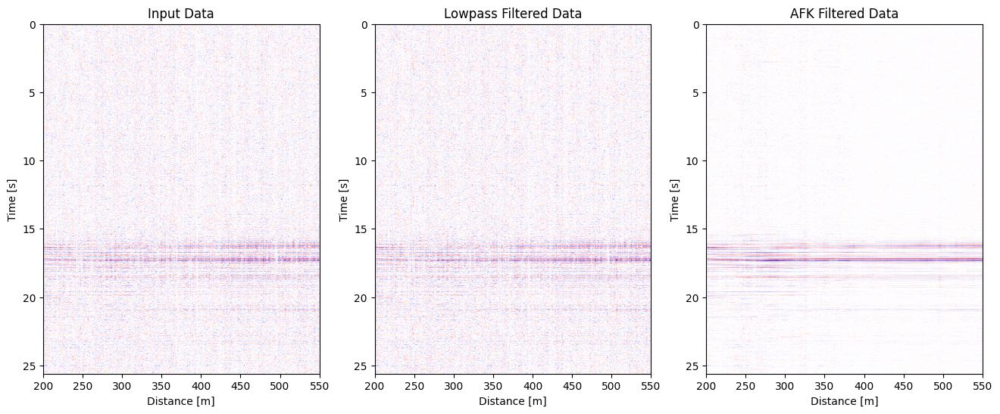

Data Processing#
In this section we go over handling DAS data snippets. Filtering and plotting them.
Trimming Data#
Trimming data in time and space (channels).
%config InlineBackend.figure_format = 'jpg'
from lightguide.client import ExampleData
# This will download example data
blast = ExampleData.earthquake()
blast.trim_channels(begin=100, end=50)
blast.trim_time(begin=10.0);
Downloading https://data.pyrocko.org/testing/lightguide/data-DAS-gfz2020wswf.npy: 4096/13109888 bytes
Downloading https://data.pyrocko.org/testing/lightguide/data-DAS-gfz2020wswf.npy: 8192/13109888 bytes
Downloading https://data.pyrocko.org/testing/lightguide/data-DAS-gfz2020wswf.npy: 12288/13109888 bytes
Downloading https://data.pyrocko.org/testing/lightguide/data-DAS-gfz2020wswf.npy: 16384/13109888 bytes
Downloading https://data.pyrocko.org/testing/lightguide/data-DAS-gfz2020wswf.npy: 20480/13109888 bytes
Downloading https://data.pyrocko.org/testing/lightguide/data-DAS-gfz2020wswf.npy: 24576/13109888 bytes
Downloading https://data.pyrocko.org/testing/lightguide/data-DAS-gfz2020wswf.npy: 28672/13109888 bytes
Downloading https://data.pyrocko.org/testing/lightguide/data-DAS-gfz2020wswf.npy: 32768/13109888 bytes
Downloading https://data.pyrocko.org/testing/lightguide/data-DAS-gfz2020wswf.npy: 36864/13109888 bytes
Downloading https://data.pyrocko.org/testing/lightguide/data-DAS-gfz2020wswf.npy: 40960/13109888 bytes
Downloading https://data.pyrocko.org/testing/lightguide/data-DAS-gfz2020wswf.npy: 45056/13109888 bytes
Downloading https://data.pyrocko.org/testing/lightguide/data-DAS-gfz2020wswf.npy: 49152/13109888 bytes
Downloading https://data.pyrocko.org/testing/lightguide/data-DAS-gfz2020wswf.npy: 53248/13109888 bytes
Downloading https://data.pyrocko.org/testing/lightguide/data-DAS-gfz2020wswf.npy: 57344/13109888 bytes
Downloading https://data.pyrocko.org/testing/lightguide/data-DAS-gfz2020wswf.npy: 61440/13109888 bytes
Downloading https://data.pyrocko.org/testing/lightguide/data-DAS-gfz2020wswf.npy: 65536/13109888 bytes
Downloading https://data.pyrocko.org/testing/lightguide/data-DAS-gfz2020wswf.npy: 69632/13109888 bytes
Downloading https://data.pyrocko.org/testing/lightguide/data-DAS-gfz2020wswf.npy: 73728/13109888 bytes
Downloading https://data.pyrocko.org/testing/lightguide/data-DAS-gfz2020wswf.npy: 77824/13109888 bytes
Downloading https://data.pyrocko.org/testing/lightguide/data-DAS-gfz2020wswf.npy: 81920/13109888 bytes
Downloading https://data.pyrocko.org/testing/lightguide/data-DAS-gfz2020wswf.npy: 86016/13109888 bytes
Downloading https://data.pyrocko.org/testing/lightguide/data-DAS-gfz2020wswf.npy: 90112/13109888 bytes
Downloading https://data.pyrocko.org/testing/lightguide/data-DAS-gfz2020wswf.npy: 94208/13109888 bytes
Downloading https://data.pyrocko.org/testing/lightguide/data-DAS-gfz2020wswf.npy: 98304/13109888 bytes
Downloading https://data.pyrocko.org/testing/lightguide/data-DAS-gfz2020wswf.npy: 102400/13109888 bytes
Downloading https://data.pyrocko.org/testing/lightguide/data-DAS-gfz2020wswf.npy: 106496/13109888 bytes
Downloading https://data.pyrocko.org/testing/lightguide/data-DAS-gfz2020wswf.npy: 110592/13109888 bytes
Downloading https://data.pyrocko.org/testing/lightguide/data-DAS-gfz2020wswf.npy: 114688/13109888 bytes
Downloading https://data.pyrocko.org/testing/lightguide/data-DAS-gfz2020wswf.npy: 118784/13109888 bytes
Downloading https://data.pyrocko.org/testing/lightguide/data-DAS-gfz2020wswf.npy: 122880/13109888 bytes
Downloading https://data.pyrocko.org/testing/lightguide/data-DAS-gfz2020wswf.npy: 126976/13109888 bytes
Downloading https://data.pyrocko.org/testing/lightguide/data-DAS-gfz2020wswf.npy: 131072/13109888 bytes
Downloading https://data.pyrocko.org/testing/lightguide/data-DAS-gfz2020wswf.npy: 135168/13109888 bytes
Downloading https://data.pyrocko.org/testing/lightguide/data-DAS-gfz2020wswf.npy: 139264/13109888 bytes
Downloading https://data.pyrocko.org/testing/lightguide/data-DAS-gfz2020wswf.npy: 143360/13109888 bytes
Downloading https://data.pyrocko.org/testing/lightguide/data-DAS-gfz2020wswf.npy: 147456/13109888 bytes
Downloading https://data.pyrocko.org/testing/lightguide/data-DAS-gfz2020wswf.npy: 151552/13109888 bytes
Downloading https://data.pyrocko.org/testing/lightguide/data-DAS-gfz2020wswf.npy: 155648/13109888 bytes
Downloading https://data.pyrocko.org/testing/lightguide/data-DAS-gfz2020wswf.npy: 159744/13109888 bytes
Downloading https://data.pyrocko.org/testing/lightguide/data-DAS-gfz2020wswf.npy: 163840/13109888 bytes
Downloading https://data.pyrocko.org/testing/lightguide/data-DAS-gfz2020wswf.npy: 167936/13109888 bytes
Downloading https://data.pyrocko.org/testing/lightguide/data-DAS-gfz2020wswf.npy: 172032/13109888 bytes
Downloading https://data.pyrocko.org/testing/lightguide/data-DAS-gfz2020wswf.npy: 176128/13109888 bytes
Downloading https://data.pyrocko.org/testing/lightguide/data-DAS-gfz2020wswf.npy: 180224/13109888 bytes
Downloading https://data.pyrocko.org/testing/lightguide/data-DAS-gfz2020wswf.npy: 184320/13109888 bytes
Downloading https://data.pyrocko.org/testing/lightguide/data-DAS-gfz2020wswf.npy: 188416/13109888 bytes
Downloading https://data.pyrocko.org/testing/lightguide/data-DAS-gfz2020wswf.npy: 192512/13109888 bytes
Downloading https://data.pyrocko.org/testing/lightguide/data-DAS-gfz2020wswf.npy: 196608/13109888 bytes
Downloading https://data.pyrocko.org/testing/lightguide/data-DAS-gfz2020wswf.npy: 200704/13109888 bytes
Downloading https://data.pyrocko.org/testing/lightguide/data-DAS-gfz2020wswf.npy: 204800/13109888 bytes
Downloading https://data.pyrocko.org/testing/lightguide/data-DAS-gfz2020wswf.npy: 208896/13109888 bytes
Downloading https://data.pyrocko.org/testing/lightguide/data-DAS-gfz2020wswf.npy: 212992/13109888 bytes
Downloading https://data.pyrocko.org/testing/lightguide/data-DAS-gfz2020wswf.npy: 217088/13109888 bytes
Downloading https://data.pyrocko.org/testing/lightguide/data-DAS-gfz2020wswf.npy: 221184/13109888 bytes
Downloading https://data.pyrocko.org/testing/lightguide/data-DAS-gfz2020wswf.npy: 225280/13109888 bytes
Downloading https://data.pyrocko.org/testing/lightguide/data-DAS-gfz2020wswf.npy: 229376/13109888 bytes
Downloading https://data.pyrocko.org/testing/lightguide/data-DAS-gfz2020wswf.npy: 233472/13109888 bytes
Downloading https://data.pyrocko.org/testing/lightguide/data-DAS-gfz2020wswf.npy: 237568/13109888 bytes
Downloading https://data.pyrocko.org/testing/lightguide/data-DAS-gfz2020wswf.npy: 241664/13109888 bytes
Downloading https://data.pyrocko.org/testing/lightguide/data-DAS-gfz2020wswf.npy: 245760/13109888 bytes
Downloading https://data.pyrocko.org/testing/lightguide/data-DAS-gfz2020wswf.npy: 249856/13109888 bytes
Downloading https://data.pyrocko.org/testing/lightguide/data-DAS-gfz2020wswf.npy: 253952/13109888 bytes
Downloading https://data.pyrocko.org/testing/lightguide/data-DAS-gfz2020wswf.npy: 258048/13109888 bytes
Downloading https://data.pyrocko.org/testing/lightguide/data-DAS-gfz2020wswf.npy: 262144/13109888 bytes
Downloading https://data.pyrocko.org/testing/lightguide/data-DAS-gfz2020wswf.npy: 266240/13109888 bytes
Downloading https://data.pyrocko.org/testing/lightguide/data-DAS-gfz2020wswf.npy: 270336/13109888 bytes
Downloading https://data.pyrocko.org/testing/lightguide/data-DAS-gfz2020wswf.npy: 274432/13109888 bytes
Downloading https://data.pyrocko.org/testing/lightguide/data-DAS-gfz2020wswf.npy: 278528/13109888 bytes
Downloading https://data.pyrocko.org/testing/lightguide/data-DAS-gfz2020wswf.npy: 282624/13109888 bytes
Downloading https://data.pyrocko.org/testing/lightguide/data-DAS-gfz2020wswf.npy: 286720/13109888 bytes
Downloading https://data.pyrocko.org/testing/lightguide/data-DAS-gfz2020wswf.npy: 290816/13109888 bytes
Downloading https://data.pyrocko.org/testing/lightguide/data-DAS-gfz2020wswf.npy: 294912/13109888 bytes
Downloading https://data.pyrocko.org/testing/lightguide/data-DAS-gfz2020wswf.npy: 299008/13109888 bytes
Downloading https://data.pyrocko.org/testing/lightguide/data-DAS-gfz2020wswf.npy: 303104/13109888 bytes
Downloading https://data.pyrocko.org/testing/lightguide/data-DAS-gfz2020wswf.npy: 307200/13109888 bytes
Downloading https://data.pyrocko.org/testing/lightguide/data-DAS-gfz2020wswf.npy: 311296/13109888 bytes
Downloading https://data.pyrocko.org/testing/lightguide/data-DAS-gfz2020wswf.npy: 315392/13109888 bytes
Downloading https://data.pyrocko.org/testing/lightguide/data-DAS-gfz2020wswf.npy: 319488/13109888 bytes
Downloading https://data.pyrocko.org/testing/lightguide/data-DAS-gfz2020wswf.npy: 323584/13109888 bytes
Downloading https://data.pyrocko.org/testing/lightguide/data-DAS-gfz2020wswf.npy: 327680/13109888 bytes
Downloading https://data.pyrocko.org/testing/lightguide/data-DAS-gfz2020wswf.npy: 331776/13109888 bytes
Downloading https://data.pyrocko.org/testing/lightguide/data-DAS-gfz2020wswf.npy: 335872/13109888 bytes
Downloading https://data.pyrocko.org/testing/lightguide/data-DAS-gfz2020wswf.npy: 339968/13109888 bytes
Downloading https://data.pyrocko.org/testing/lightguide/data-DAS-gfz2020wswf.npy: 344064/13109888 bytes
Downloading https://data.pyrocko.org/testing/lightguide/data-DAS-gfz2020wswf.npy: 348160/13109888 bytes
Downloading https://data.pyrocko.org/testing/lightguide/data-DAS-gfz2020wswf.npy: 352256/13109888 bytes
Downloading https://data.pyrocko.org/testing/lightguide/data-DAS-gfz2020wswf.npy: 356352/13109888 bytes
Downloading https://data.pyrocko.org/testing/lightguide/data-DAS-gfz2020wswf.npy: 360448/13109888 bytes
Downloading https://data.pyrocko.org/testing/lightguide/data-DAS-gfz2020wswf.npy: 364544/13109888 bytes
Downloading https://data.pyrocko.org/testing/lightguide/data-DAS-gfz2020wswf.npy: 368640/13109888 bytes
Downloading https://data.pyrocko.org/testing/lightguide/data-DAS-gfz2020wswf.npy: 372736/13109888 bytes
Downloading https://data.pyrocko.org/testing/lightguide/data-DAS-gfz2020wswf.npy: 376832/13109888 bytes
Downloading https://data.pyrocko.org/testing/lightguide/data-DAS-gfz2020wswf.npy: 380928/13109888 bytes
Downloading https://data.pyrocko.org/testing/lightguide/data-DAS-gfz2020wswf.npy: 385024/13109888 bytes
Downloading https://data.pyrocko.org/testing/lightguide/data-DAS-gfz2020wswf.npy: 389120/13109888 bytes
Downloading https://data.pyrocko.org/testing/lightguide/data-DAS-gfz2020wswf.npy: 393216/13109888 bytes
Downloading https://data.pyrocko.org/testing/lightguide/data-DAS-gfz2020wswf.npy: 397312/13109888 bytes
Downloading https://data.pyrocko.org/testing/lightguide/data-DAS-gfz2020wswf.npy: 401408/13109888 bytes
Downloading https://data.pyrocko.org/testing/lightguide/data-DAS-gfz2020wswf.npy: 405504/13109888 bytes
Downloading https://data.pyrocko.org/testing/lightguide/data-DAS-gfz2020wswf.npy: 409600/13109888 bytes
Downloading https://data.pyrocko.org/testing/lightguide/data-DAS-gfz2020wswf.npy: 413696/13109888 bytes
Downloading https://data.pyrocko.org/testing/lightguide/data-DAS-gfz2020wswf.npy: 417792/13109888 bytes
Downloading https://data.pyrocko.org/testing/lightguide/data-DAS-gfz2020wswf.npy: 421888/13109888 bytes
Downloading https://data.pyrocko.org/testing/lightguide/data-DAS-gfz2020wswf.npy: 425984/13109888 bytes
Downloading https://data.pyrocko.org/testing/lightguide/data-DAS-gfz2020wswf.npy: 430080/13109888 bytes
Downloading https://data.pyrocko.org/testing/lightguide/data-DAS-gfz2020wswf.npy: 434176/13109888 bytes
Downloading https://data.pyrocko.org/testing/lightguide/data-DAS-gfz2020wswf.npy: 438272/13109888 bytes
Downloading https://data.pyrocko.org/testing/lightguide/data-DAS-gfz2020wswf.npy: 442368/13109888 bytes
Downloading https://data.pyrocko.org/testing/lightguide/data-DAS-gfz2020wswf.npy: 446464/13109888 bytes
Downloading https://data.pyrocko.org/testing/lightguide/data-DAS-gfz2020wswf.npy: 450560/13109888 bytes
Downloading https://data.pyrocko.org/testing/lightguide/data-DAS-gfz2020wswf.npy: 454656/13109888 bytes
Downloading https://data.pyrocko.org/testing/lightguide/data-DAS-gfz2020wswf.npy: 458752/13109888 bytes
Downloading https://data.pyrocko.org/testing/lightguide/data-DAS-gfz2020wswf.npy: 462848/13109888 bytes
Downloading https://data.pyrocko.org/testing/lightguide/data-DAS-gfz2020wswf.npy: 466944/13109888 bytes
Downloading https://data.pyrocko.org/testing/lightguide/data-DAS-gfz2020wswf.npy: 471040/13109888 bytes
Downloading https://data.pyrocko.org/testing/lightguide/data-DAS-gfz2020wswf.npy: 475136/13109888 bytes
Downloading https://data.pyrocko.org/testing/lightguide/data-DAS-gfz2020wswf.npy: 479232/13109888 bytes
Downloading https://data.pyrocko.org/testing/lightguide/data-DAS-gfz2020wswf.npy: 483328/13109888 bytes
Downloading https://data.pyrocko.org/testing/lightguide/data-DAS-gfz2020wswf.npy: 487424/13109888 bytes
Downloading https://data.pyrocko.org/testing/lightguide/data-DAS-gfz2020wswf.npy: 491520/13109888 bytes
Downloading https://data.pyrocko.org/testing/lightguide/data-DAS-gfz2020wswf.npy: 495616/13109888 bytes
Downloading https://data.pyrocko.org/testing/lightguide/data-DAS-gfz2020wswf.npy: 499712/13109888 bytes
Downloading https://data.pyrocko.org/testing/lightguide/data-DAS-gfz2020wswf.npy: 503808/13109888 bytes
Downloading https://data.pyrocko.org/testing/lightguide/data-DAS-gfz2020wswf.npy: 507904/13109888 bytes
Downloading https://data.pyrocko.org/testing/lightguide/data-DAS-gfz2020wswf.npy: 512000/13109888 bytes
Downloading https://data.pyrocko.org/testing/lightguide/data-DAS-gfz2020wswf.npy: 516096/13109888 bytes
Downloading https://data.pyrocko.org/testing/lightguide/data-DAS-gfz2020wswf.npy: 520192/13109888 bytes
Downloading https://data.pyrocko.org/testing/lightguide/data-DAS-gfz2020wswf.npy: 524288/13109888 bytes
Downloading https://data.pyrocko.org/testing/lightguide/data-DAS-gfz2020wswf.npy: 528384/13109888 bytes
Downloading https://data.pyrocko.org/testing/lightguide/data-DAS-gfz2020wswf.npy: 532480/13109888 bytes
Downloading https://data.pyrocko.org/testing/lightguide/data-DAS-gfz2020wswf.npy: 536576/13109888 bytes
Downloading https://data.pyrocko.org/testing/lightguide/data-DAS-gfz2020wswf.npy: 540672/13109888 bytes
Downloading https://data.pyrocko.org/testing/lightguide/data-DAS-gfz2020wswf.npy: 544768/13109888 bytes
Downloading https://data.pyrocko.org/testing/lightguide/data-DAS-gfz2020wswf.npy: 548864/13109888 bytes
Downloading https://data.pyrocko.org/testing/lightguide/data-DAS-gfz2020wswf.npy: 552960/13109888 bytes
Downloading https://data.pyrocko.org/testing/lightguide/data-DAS-gfz2020wswf.npy: 557056/13109888 bytes
Downloading https://data.pyrocko.org/testing/lightguide/data-DAS-gfz2020wswf.npy: 561152/13109888 bytes
Downloading https://data.pyrocko.org/testing/lightguide/data-DAS-gfz2020wswf.npy: 565248/13109888 bytes
Downloading https://data.pyrocko.org/testing/lightguide/data-DAS-gfz2020wswf.npy: 569344/13109888 bytes
Downloading https://data.pyrocko.org/testing/lightguide/data-DAS-gfz2020wswf.npy: 573440/13109888 bytes
Downloading https://data.pyrocko.org/testing/lightguide/data-DAS-gfz2020wswf.npy: 577536/13109888 bytes
Downloading https://data.pyrocko.org/testing/lightguide/data-DAS-gfz2020wswf.npy: 581632/13109888 bytes
Downloading https://data.pyrocko.org/testing/lightguide/data-DAS-gfz2020wswf.npy: 585728/13109888 bytes
Downloading https://data.pyrocko.org/testing/lightguide/data-DAS-gfz2020wswf.npy: 589824/13109888 bytes
Downloading https://data.pyrocko.org/testing/lightguide/data-DAS-gfz2020wswf.npy: 593920/13109888 bytes
Downloading https://data.pyrocko.org/testing/lightguide/data-DAS-gfz2020wswf.npy: 598016/13109888 bytes
Downloading https://data.pyrocko.org/testing/lightguide/data-DAS-gfz2020wswf.npy: 602112/13109888 bytes
Downloading https://data.pyrocko.org/testing/lightguide/data-DAS-gfz2020wswf.npy: 606208/13109888 bytes
Downloading https://data.pyrocko.org/testing/lightguide/data-DAS-gfz2020wswf.npy: 610304/13109888 bytes
Downloading https://data.pyrocko.org/testing/lightguide/data-DAS-gfz2020wswf.npy: 614400/13109888 bytes
Downloading https://data.pyrocko.org/testing/lightguide/data-DAS-gfz2020wswf.npy: 618496/13109888 bytes
Downloading https://data.pyrocko.org/testing/lightguide/data-DAS-gfz2020wswf.npy: 622592/13109888 bytes
Downloading https://data.pyrocko.org/testing/lightguide/data-DAS-gfz2020wswf.npy: 626688/13109888 bytes
Downloading https://data.pyrocko.org/testing/lightguide/data-DAS-gfz2020wswf.npy: 630784/13109888 bytes
Downloading https://data.pyrocko.org/testing/lightguide/data-DAS-gfz2020wswf.npy: 634880/13109888 bytes
Downloading https://data.pyrocko.org/testing/lightguide/data-DAS-gfz2020wswf.npy: 638976/13109888 bytes
Downloading https://data.pyrocko.org/testing/lightguide/data-DAS-gfz2020wswf.npy: 643072/13109888 bytes
Downloading https://data.pyrocko.org/testing/lightguide/data-DAS-gfz2020wswf.npy: 647168/13109888 bytes
Downloading https://data.pyrocko.org/testing/lightguide/data-DAS-gfz2020wswf.npy: 651264/13109888 bytes
Downloading https://data.pyrocko.org/testing/lightguide/data-DAS-gfz2020wswf.npy: 655360/13109888 bytes
Downloading https://data.pyrocko.org/testing/lightguide/data-DAS-gfz2020wswf.npy: 659456/13109888 bytes
Downloading https://data.pyrocko.org/testing/lightguide/data-DAS-gfz2020wswf.npy: 663552/13109888 bytes
Downloading https://data.pyrocko.org/testing/lightguide/data-DAS-gfz2020wswf.npy: 667648/13109888 bytes
Downloading https://data.pyrocko.org/testing/lightguide/data-DAS-gfz2020wswf.npy: 671744/13109888 bytes
Downloading https://data.pyrocko.org/testing/lightguide/data-DAS-gfz2020wswf.npy: 675840/13109888 bytes
Downloading https://data.pyrocko.org/testing/lightguide/data-DAS-gfz2020wswf.npy: 679936/13109888 bytes
Downloading https://data.pyrocko.org/testing/lightguide/data-DAS-gfz2020wswf.npy: 684032/13109888 bytes
Downloading https://data.pyrocko.org/testing/lightguide/data-DAS-gfz2020wswf.npy: 688128/13109888 bytes
Downloading https://data.pyrocko.org/testing/lightguide/data-DAS-gfz2020wswf.npy: 692224/13109888 bytes
Downloading https://data.pyrocko.org/testing/lightguide/data-DAS-gfz2020wswf.npy: 696320/13109888 bytes
Downloading https://data.pyrocko.org/testing/lightguide/data-DAS-gfz2020wswf.npy: 700416/13109888 bytes
Downloading https://data.pyrocko.org/testing/lightguide/data-DAS-gfz2020wswf.npy: 704512/13109888 bytes
Downloading https://data.pyrocko.org/testing/lightguide/data-DAS-gfz2020wswf.npy: 708608/13109888 bytes
Downloading https://data.pyrocko.org/testing/lightguide/data-DAS-gfz2020wswf.npy: 712704/13109888 bytes
Downloading https://data.pyrocko.org/testing/lightguide/data-DAS-gfz2020wswf.npy: 716800/13109888 bytes
Downloading https://data.pyrocko.org/testing/lightguide/data-DAS-gfz2020wswf.npy: 720896/13109888 bytes
Downloading https://data.pyrocko.org/testing/lightguide/data-DAS-gfz2020wswf.npy: 724992/13109888 bytes
Downloading https://data.pyrocko.org/testing/lightguide/data-DAS-gfz2020wswf.npy: 729088/13109888 bytes
Downloading https://data.pyrocko.org/testing/lightguide/data-DAS-gfz2020wswf.npy: 733184/13109888 bytes
Downloading https://data.pyrocko.org/testing/lightguide/data-DAS-gfz2020wswf.npy: 737280/13109888 bytes
Downloading https://data.pyrocko.org/testing/lightguide/data-DAS-gfz2020wswf.npy: 741376/13109888 bytes
Downloading https://data.pyrocko.org/testing/lightguide/data-DAS-gfz2020wswf.npy: 745472/13109888 bytes
Downloading https://data.pyrocko.org/testing/lightguide/data-DAS-gfz2020wswf.npy: 749568/13109888 bytes
Downloading https://data.pyrocko.org/testing/lightguide/data-DAS-gfz2020wswf.npy: 753664/13109888 bytes
Downloading https://data.pyrocko.org/testing/lightguide/data-DAS-gfz2020wswf.npy: 757760/13109888 bytes
Downloading https://data.pyrocko.org/testing/lightguide/data-DAS-gfz2020wswf.npy: 761856/13109888 bytes
Downloading https://data.pyrocko.org/testing/lightguide/data-DAS-gfz2020wswf.npy: 765952/13109888 bytes
Downloading https://data.pyrocko.org/testing/lightguide/data-DAS-gfz2020wswf.npy: 770048/13109888 bytes
Downloading https://data.pyrocko.org/testing/lightguide/data-DAS-gfz2020wswf.npy: 774144/13109888 bytes
Downloading https://data.pyrocko.org/testing/lightguide/data-DAS-gfz2020wswf.npy: 778240/13109888 bytes
Downloading https://data.pyrocko.org/testing/lightguide/data-DAS-gfz2020wswf.npy: 782336/13109888 bytes
Downloading https://data.pyrocko.org/testing/lightguide/data-DAS-gfz2020wswf.npy: 786432/13109888 bytes
Downloading https://data.pyrocko.org/testing/lightguide/data-DAS-gfz2020wswf.npy: 790528/13109888 bytes
Downloading https://data.pyrocko.org/testing/lightguide/data-DAS-gfz2020wswf.npy: 794624/13109888 bytes
Downloading https://data.pyrocko.org/testing/lightguide/data-DAS-gfz2020wswf.npy: 798720/13109888 bytes
Downloading https://data.pyrocko.org/testing/lightguide/data-DAS-gfz2020wswf.npy: 802816/13109888 bytes
Downloading https://data.pyrocko.org/testing/lightguide/data-DAS-gfz2020wswf.npy: 806912/13109888 bytes
Downloading https://data.pyrocko.org/testing/lightguide/data-DAS-gfz2020wswf.npy: 811008/13109888 bytes
Downloading https://data.pyrocko.org/testing/lightguide/data-DAS-gfz2020wswf.npy: 815104/13109888 bytes
Downloading https://data.pyrocko.org/testing/lightguide/data-DAS-gfz2020wswf.npy: 819200/13109888 bytes
Downloading https://data.pyrocko.org/testing/lightguide/data-DAS-gfz2020wswf.npy: 823296/13109888 bytes
Downloading https://data.pyrocko.org/testing/lightguide/data-DAS-gfz2020wswf.npy: 827392/13109888 bytes
Downloading https://data.pyrocko.org/testing/lightguide/data-DAS-gfz2020wswf.npy: 831488/13109888 bytes
Downloading https://data.pyrocko.org/testing/lightguide/data-DAS-gfz2020wswf.npy: 835584/13109888 bytes
Downloading https://data.pyrocko.org/testing/lightguide/data-DAS-gfz2020wswf.npy: 839680/13109888 bytes
Downloading https://data.pyrocko.org/testing/lightguide/data-DAS-gfz2020wswf.npy: 843776/13109888 bytes
Downloading https://data.pyrocko.org/testing/lightguide/data-DAS-gfz2020wswf.npy: 847872/13109888 bytes
Downloading https://data.pyrocko.org/testing/lightguide/data-DAS-gfz2020wswf.npy: 851968/13109888 bytes
Downloading https://data.pyrocko.org/testing/lightguide/data-DAS-gfz2020wswf.npy: 856064/13109888 bytes
Downloading https://data.pyrocko.org/testing/lightguide/data-DAS-gfz2020wswf.npy: 860160/13109888 bytes
Downloading https://data.pyrocko.org/testing/lightguide/data-DAS-gfz2020wswf.npy: 864256/13109888 bytes
Downloading https://data.pyrocko.org/testing/lightguide/data-DAS-gfz2020wswf.npy: 868352/13109888 bytes
Downloading https://data.pyrocko.org/testing/lightguide/data-DAS-gfz2020wswf.npy: 872448/13109888 bytes
Downloading https://data.pyrocko.org/testing/lightguide/data-DAS-gfz2020wswf.npy: 876544/13109888 bytes
Downloading https://data.pyrocko.org/testing/lightguide/data-DAS-gfz2020wswf.npy: 880640/13109888 bytes
Downloading https://data.pyrocko.org/testing/lightguide/data-DAS-gfz2020wswf.npy: 884736/13109888 bytes
Downloading https://data.pyrocko.org/testing/lightguide/data-DAS-gfz2020wswf.npy: 888832/13109888 bytes
Downloading https://data.pyrocko.org/testing/lightguide/data-DAS-gfz2020wswf.npy: 892928/13109888 bytes
Downloading https://data.pyrocko.org/testing/lightguide/data-DAS-gfz2020wswf.npy: 897024/13109888 bytes
Downloading https://data.pyrocko.org/testing/lightguide/data-DAS-gfz2020wswf.npy: 901120/13109888 bytes
Downloading https://data.pyrocko.org/testing/lightguide/data-DAS-gfz2020wswf.npy: 905216/13109888 bytes
Downloading https://data.pyrocko.org/testing/lightguide/data-DAS-gfz2020wswf.npy: 909312/13109888 bytes
Downloading https://data.pyrocko.org/testing/lightguide/data-DAS-gfz2020wswf.npy: 913408/13109888 bytes
Downloading https://data.pyrocko.org/testing/lightguide/data-DAS-gfz2020wswf.npy: 917504/13109888 bytes
Downloading https://data.pyrocko.org/testing/lightguide/data-DAS-gfz2020wswf.npy: 921600/13109888 bytes
Downloading https://data.pyrocko.org/testing/lightguide/data-DAS-gfz2020wswf.npy: 925696/13109888 bytes
Downloading https://data.pyrocko.org/testing/lightguide/data-DAS-gfz2020wswf.npy: 929792/13109888 bytes
Downloading https://data.pyrocko.org/testing/lightguide/data-DAS-gfz2020wswf.npy: 933888/13109888 bytes
Downloading https://data.pyrocko.org/testing/lightguide/data-DAS-gfz2020wswf.npy: 937984/13109888 bytes
Downloading https://data.pyrocko.org/testing/lightguide/data-DAS-gfz2020wswf.npy: 942080/13109888 bytes
Downloading https://data.pyrocko.org/testing/lightguide/data-DAS-gfz2020wswf.npy: 946176/13109888 bytes
Downloading https://data.pyrocko.org/testing/lightguide/data-DAS-gfz2020wswf.npy: 950272/13109888 bytes
Downloading https://data.pyrocko.org/testing/lightguide/data-DAS-gfz2020wswf.npy: 954368/13109888 bytes
Downloading https://data.pyrocko.org/testing/lightguide/data-DAS-gfz2020wswf.npy: 958464/13109888 bytes
Downloading https://data.pyrocko.org/testing/lightguide/data-DAS-gfz2020wswf.npy: 962560/13109888 bytes
Downloading https://data.pyrocko.org/testing/lightguide/data-DAS-gfz2020wswf.npy: 966656/13109888 bytes
Downloading https://data.pyrocko.org/testing/lightguide/data-DAS-gfz2020wswf.npy: 970752/13109888 bytes
Downloading https://data.pyrocko.org/testing/lightguide/data-DAS-gfz2020wswf.npy: 974848/13109888 bytes
Downloading https://data.pyrocko.org/testing/lightguide/data-DAS-gfz2020wswf.npy: 978944/13109888 bytes
Downloading https://data.pyrocko.org/testing/lightguide/data-DAS-gfz2020wswf.npy: 983040/13109888 bytes
Downloading https://data.pyrocko.org/testing/lightguide/data-DAS-gfz2020wswf.npy: 987136/13109888 bytes
Downloading https://data.pyrocko.org/testing/lightguide/data-DAS-gfz2020wswf.npy: 991232/13109888 bytes
Downloading https://data.pyrocko.org/testing/lightguide/data-DAS-gfz2020wswf.npy: 995328/13109888 bytes
Downloading https://data.pyrocko.org/testing/lightguide/data-DAS-gfz2020wswf.npy: 999424/13109888 bytes
Downloading https://data.pyrocko.org/testing/lightguide/data-DAS-gfz2020wswf.npy: 1003520/13109888 bytes
Downloading https://data.pyrocko.org/testing/lightguide/data-DAS-gfz2020wswf.npy: 1007616/13109888 bytes
Downloading https://data.pyrocko.org/testing/lightguide/data-DAS-gfz2020wswf.npy: 1011712/13109888 bytes
Downloading https://data.pyrocko.org/testing/lightguide/data-DAS-gfz2020wswf.npy: 1015808/13109888 bytes
Downloading https://data.pyrocko.org/testing/lightguide/data-DAS-gfz2020wswf.npy: 1019904/13109888 bytes
Downloading https://data.pyrocko.org/testing/lightguide/data-DAS-gfz2020wswf.npy: 1024000/13109888 bytes
Downloading https://data.pyrocko.org/testing/lightguide/data-DAS-gfz2020wswf.npy: 1028096/13109888 bytes
Downloading https://data.pyrocko.org/testing/lightguide/data-DAS-gfz2020wswf.npy: 1032192/13109888 bytes
Downloading https://data.pyrocko.org/testing/lightguide/data-DAS-gfz2020wswf.npy: 1036288/13109888 bytes
Downloading https://data.pyrocko.org/testing/lightguide/data-DAS-gfz2020wswf.npy: 1040384/13109888 bytes
Downloading https://data.pyrocko.org/testing/lightguide/data-DAS-gfz2020wswf.npy: 1044480/13109888 bytes
Downloading https://data.pyrocko.org/testing/lightguide/data-DAS-gfz2020wswf.npy: 1048576/13109888 bytes
Downloading https://data.pyrocko.org/testing/lightguide/data-DAS-gfz2020wswf.npy: 1052672/13109888 bytes
Downloading https://data.pyrocko.org/testing/lightguide/data-DAS-gfz2020wswf.npy: 1056768/13109888 bytes
Downloading https://data.pyrocko.org/testing/lightguide/data-DAS-gfz2020wswf.npy: 1060864/13109888 bytes
Downloading https://data.pyrocko.org/testing/lightguide/data-DAS-gfz2020wswf.npy: 1064960/13109888 bytes
Downloading https://data.pyrocko.org/testing/lightguide/data-DAS-gfz2020wswf.npy: 1069056/13109888 bytes
Downloading https://data.pyrocko.org/testing/lightguide/data-DAS-gfz2020wswf.npy: 1073152/13109888 bytes
Downloading https://data.pyrocko.org/testing/lightguide/data-DAS-gfz2020wswf.npy: 1077248/13109888 bytes
Downloading https://data.pyrocko.org/testing/lightguide/data-DAS-gfz2020wswf.npy: 1081344/13109888 bytes
Downloading https://data.pyrocko.org/testing/lightguide/data-DAS-gfz2020wswf.npy: 1085440/13109888 bytes
Downloading https://data.pyrocko.org/testing/lightguide/data-DAS-gfz2020wswf.npy: 1089536/13109888 bytes
Downloading https://data.pyrocko.org/testing/lightguide/data-DAS-gfz2020wswf.npy: 1093632/13109888 bytes
Downloading https://data.pyrocko.org/testing/lightguide/data-DAS-gfz2020wswf.npy: 1097728/13109888 bytes
Downloading https://data.pyrocko.org/testing/lightguide/data-DAS-gfz2020wswf.npy: 1101824/13109888 bytes
Downloading https://data.pyrocko.org/testing/lightguide/data-DAS-gfz2020wswf.npy: 1105920/13109888 bytes
Downloading https://data.pyrocko.org/testing/lightguide/data-DAS-gfz2020wswf.npy: 1110016/13109888 bytes
Downloading https://data.pyrocko.org/testing/lightguide/data-DAS-gfz2020wswf.npy: 1114112/13109888 bytes
Downloading https://data.pyrocko.org/testing/lightguide/data-DAS-gfz2020wswf.npy: 1118208/13109888 bytes
Downloading https://data.pyrocko.org/testing/lightguide/data-DAS-gfz2020wswf.npy: 1122304/13109888 bytes
Downloading https://data.pyrocko.org/testing/lightguide/data-DAS-gfz2020wswf.npy: 1126400/13109888 bytes
Downloading https://data.pyrocko.org/testing/lightguide/data-DAS-gfz2020wswf.npy: 1130496/13109888 bytes
Downloading https://data.pyrocko.org/testing/lightguide/data-DAS-gfz2020wswf.npy: 1134592/13109888 bytes
Downloading https://data.pyrocko.org/testing/lightguide/data-DAS-gfz2020wswf.npy: 1138688/13109888 bytes
Downloading https://data.pyrocko.org/testing/lightguide/data-DAS-gfz2020wswf.npy: 1142784/13109888 bytes
Downloading https://data.pyrocko.org/testing/lightguide/data-DAS-gfz2020wswf.npy: 1146880/13109888 bytes
Downloading https://data.pyrocko.org/testing/lightguide/data-DAS-gfz2020wswf.npy: 1150976/13109888 bytes
Downloading https://data.pyrocko.org/testing/lightguide/data-DAS-gfz2020wswf.npy: 1155072/13109888 bytes
Downloading https://data.pyrocko.org/testing/lightguide/data-DAS-gfz2020wswf.npy: 1159168/13109888 bytes
Downloading https://data.pyrocko.org/testing/lightguide/data-DAS-gfz2020wswf.npy: 1163264/13109888 bytes
Downloading https://data.pyrocko.org/testing/lightguide/data-DAS-gfz2020wswf.npy: 1167360/13109888 bytes
Downloading https://data.pyrocko.org/testing/lightguide/data-DAS-gfz2020wswf.npy: 1171456/13109888 bytes
Downloading https://data.pyrocko.org/testing/lightguide/data-DAS-gfz2020wswf.npy: 1175552/13109888 bytes
Downloading https://data.pyrocko.org/testing/lightguide/data-DAS-gfz2020wswf.npy: 1179648/13109888 bytes
Downloading https://data.pyrocko.org/testing/lightguide/data-DAS-gfz2020wswf.npy: 1183744/13109888 bytes
Downloading https://data.pyrocko.org/testing/lightguide/data-DAS-gfz2020wswf.npy: 1187840/13109888 bytes
Downloading https://data.pyrocko.org/testing/lightguide/data-DAS-gfz2020wswf.npy: 1191936/13109888 bytes
Downloading https://data.pyrocko.org/testing/lightguide/data-DAS-gfz2020wswf.npy: 1196032/13109888 bytes
Downloading https://data.pyrocko.org/testing/lightguide/data-DAS-gfz2020wswf.npy: 1200128/13109888 bytes
Downloading https://data.pyrocko.org/testing/lightguide/data-DAS-gfz2020wswf.npy: 1204224/13109888 bytes
Downloading https://data.pyrocko.org/testing/lightguide/data-DAS-gfz2020wswf.npy: 1208320/13109888 bytes
Downloading https://data.pyrocko.org/testing/lightguide/data-DAS-gfz2020wswf.npy: 1212416/13109888 bytes
Downloading https://data.pyrocko.org/testing/lightguide/data-DAS-gfz2020wswf.npy: 1216512/13109888 bytes
Downloading https://data.pyrocko.org/testing/lightguide/data-DAS-gfz2020wswf.npy: 1220608/13109888 bytes
Downloading https://data.pyrocko.org/testing/lightguide/data-DAS-gfz2020wswf.npy: 1224704/13109888 bytes
Downloading https://data.pyrocko.org/testing/lightguide/data-DAS-gfz2020wswf.npy: 1228800/13109888 bytes
Downloading https://data.pyrocko.org/testing/lightguide/data-DAS-gfz2020wswf.npy: 1232896/13109888 bytes
Downloading https://data.pyrocko.org/testing/lightguide/data-DAS-gfz2020wswf.npy: 1236992/13109888 bytes
Downloading https://data.pyrocko.org/testing/lightguide/data-DAS-gfz2020wswf.npy: 1241088/13109888 bytes
Downloading https://data.pyrocko.org/testing/lightguide/data-DAS-gfz2020wswf.npy: 1245184/13109888 bytes
Downloading https://data.pyrocko.org/testing/lightguide/data-DAS-gfz2020wswf.npy: 1249280/13109888 bytes
Downloading https://data.pyrocko.org/testing/lightguide/data-DAS-gfz2020wswf.npy: 1253376/13109888 bytes
Downloading https://data.pyrocko.org/testing/lightguide/data-DAS-gfz2020wswf.npy: 1257472/13109888 bytes
Downloading https://data.pyrocko.org/testing/lightguide/data-DAS-gfz2020wswf.npy: 1261568/13109888 bytes
Downloading https://data.pyrocko.org/testing/lightguide/data-DAS-gfz2020wswf.npy: 1265664/13109888 bytes
Downloading https://data.pyrocko.org/testing/lightguide/data-DAS-gfz2020wswf.npy: 1269760/13109888 bytes
Downloading https://data.pyrocko.org/testing/lightguide/data-DAS-gfz2020wswf.npy: 1273856/13109888 bytes
Downloading https://data.pyrocko.org/testing/lightguide/data-DAS-gfz2020wswf.npy: 1277952/13109888 bytes
Downloading https://data.pyrocko.org/testing/lightguide/data-DAS-gfz2020wswf.npy: 1282048/13109888 bytes
Downloading https://data.pyrocko.org/testing/lightguide/data-DAS-gfz2020wswf.npy: 1286144/13109888 bytes
Downloading https://data.pyrocko.org/testing/lightguide/data-DAS-gfz2020wswf.npy: 1290240/13109888 bytes
Downloading https://data.pyrocko.org/testing/lightguide/data-DAS-gfz2020wswf.npy: 1294336/13109888 bytes
Downloading https://data.pyrocko.org/testing/lightguide/data-DAS-gfz2020wswf.npy: 1298432/13109888 bytes
Downloading https://data.pyrocko.org/testing/lightguide/data-DAS-gfz2020wswf.npy: 1302528/13109888 bytes
Downloading https://data.pyrocko.org/testing/lightguide/data-DAS-gfz2020wswf.npy: 1306624/13109888 bytes
Downloading https://data.pyrocko.org/testing/lightguide/data-DAS-gfz2020wswf.npy: 1310720/13109888 bytes
Downloading https://data.pyrocko.org/testing/lightguide/data-DAS-gfz2020wswf.npy: 1314816/13109888 bytes
Downloading https://data.pyrocko.org/testing/lightguide/data-DAS-gfz2020wswf.npy: 1318912/13109888 bytes
Downloading https://data.pyrocko.org/testing/lightguide/data-DAS-gfz2020wswf.npy: 1323008/13109888 bytes
Downloading https://data.pyrocko.org/testing/lightguide/data-DAS-gfz2020wswf.npy: 1327104/13109888 bytes
Downloading https://data.pyrocko.org/testing/lightguide/data-DAS-gfz2020wswf.npy: 1331200/13109888 bytes
Downloading https://data.pyrocko.org/testing/lightguide/data-DAS-gfz2020wswf.npy: 1335296/13109888 bytes
Downloading https://data.pyrocko.org/testing/lightguide/data-DAS-gfz2020wswf.npy: 1339392/13109888 bytes
Downloading https://data.pyrocko.org/testing/lightguide/data-DAS-gfz2020wswf.npy: 1343488/13109888 bytes
Downloading https://data.pyrocko.org/testing/lightguide/data-DAS-gfz2020wswf.npy: 1347584/13109888 bytes
Downloading https://data.pyrocko.org/testing/lightguide/data-DAS-gfz2020wswf.npy: 1351680/13109888 bytes
Downloading https://data.pyrocko.org/testing/lightguide/data-DAS-gfz2020wswf.npy: 1355776/13109888 bytes
Downloading https://data.pyrocko.org/testing/lightguide/data-DAS-gfz2020wswf.npy: 1359872/13109888 bytes
Downloading https://data.pyrocko.org/testing/lightguide/data-DAS-gfz2020wswf.npy: 1363968/13109888 bytes
Downloading https://data.pyrocko.org/testing/lightguide/data-DAS-gfz2020wswf.npy: 1368064/13109888 bytes
Downloading https://data.pyrocko.org/testing/lightguide/data-DAS-gfz2020wswf.npy: 1372160/13109888 bytes
Downloading https://data.pyrocko.org/testing/lightguide/data-DAS-gfz2020wswf.npy: 1376256/13109888 bytes
Downloading https://data.pyrocko.org/testing/lightguide/data-DAS-gfz2020wswf.npy: 1380352/13109888 bytes
Downloading https://data.pyrocko.org/testing/lightguide/data-DAS-gfz2020wswf.npy: 1384448/13109888 bytes
Downloading https://data.pyrocko.org/testing/lightguide/data-DAS-gfz2020wswf.npy: 1388544/13109888 bytes
Downloading https://data.pyrocko.org/testing/lightguide/data-DAS-gfz2020wswf.npy: 1392640/13109888 bytes
Downloading https://data.pyrocko.org/testing/lightguide/data-DAS-gfz2020wswf.npy: 1396736/13109888 bytes
Downloading https://data.pyrocko.org/testing/lightguide/data-DAS-gfz2020wswf.npy: 1400832/13109888 bytes
Downloading https://data.pyrocko.org/testing/lightguide/data-DAS-gfz2020wswf.npy: 1404928/13109888 bytes
Downloading https://data.pyrocko.org/testing/lightguide/data-DAS-gfz2020wswf.npy: 1409024/13109888 bytes
Downloading https://data.pyrocko.org/testing/lightguide/data-DAS-gfz2020wswf.npy: 1413120/13109888 bytes
Downloading https://data.pyrocko.org/testing/lightguide/data-DAS-gfz2020wswf.npy: 1417216/13109888 bytes
Downloading https://data.pyrocko.org/testing/lightguide/data-DAS-gfz2020wswf.npy: 1421312/13109888 bytes
Downloading https://data.pyrocko.org/testing/lightguide/data-DAS-gfz2020wswf.npy: 1425408/13109888 bytes
Downloading https://data.pyrocko.org/testing/lightguide/data-DAS-gfz2020wswf.npy: 1429504/13109888 bytes
Downloading https://data.pyrocko.org/testing/lightguide/data-DAS-gfz2020wswf.npy: 1433600/13109888 bytes
Downloading https://data.pyrocko.org/testing/lightguide/data-DAS-gfz2020wswf.npy: 1437696/13109888 bytes
Downloading https://data.pyrocko.org/testing/lightguide/data-DAS-gfz2020wswf.npy: 1441792/13109888 bytes
Downloading https://data.pyrocko.org/testing/lightguide/data-DAS-gfz2020wswf.npy: 1445888/13109888 bytes
Downloading https://data.pyrocko.org/testing/lightguide/data-DAS-gfz2020wswf.npy: 1449984/13109888 bytes
Downloading https://data.pyrocko.org/testing/lightguide/data-DAS-gfz2020wswf.npy: 1454080/13109888 bytes
Downloading https://data.pyrocko.org/testing/lightguide/data-DAS-gfz2020wswf.npy: 1458176/13109888 bytes
Downloading https://data.pyrocko.org/testing/lightguide/data-DAS-gfz2020wswf.npy: 1462272/13109888 bytes
Downloading https://data.pyrocko.org/testing/lightguide/data-DAS-gfz2020wswf.npy: 1466368/13109888 bytes
Downloading https://data.pyrocko.org/testing/lightguide/data-DAS-gfz2020wswf.npy: 1470464/13109888 bytes
Downloading https://data.pyrocko.org/testing/lightguide/data-DAS-gfz2020wswf.npy: 1474560/13109888 bytes
Downloading https://data.pyrocko.org/testing/lightguide/data-DAS-gfz2020wswf.npy: 1478656/13109888 bytes
Downloading https://data.pyrocko.org/testing/lightguide/data-DAS-gfz2020wswf.npy: 1482752/13109888 bytes
Downloading https://data.pyrocko.org/testing/lightguide/data-DAS-gfz2020wswf.npy: 1486848/13109888 bytes
Downloading https://data.pyrocko.org/testing/lightguide/data-DAS-gfz2020wswf.npy: 1490944/13109888 bytes
Downloading https://data.pyrocko.org/testing/lightguide/data-DAS-gfz2020wswf.npy: 1495040/13109888 bytes
Downloading https://data.pyrocko.org/testing/lightguide/data-DAS-gfz2020wswf.npy: 1499136/13109888 bytes
Downloading https://data.pyrocko.org/testing/lightguide/data-DAS-gfz2020wswf.npy: 1503232/13109888 bytes
Downloading https://data.pyrocko.org/testing/lightguide/data-DAS-gfz2020wswf.npy: 1507328/13109888 bytes
Downloading https://data.pyrocko.org/testing/lightguide/data-DAS-gfz2020wswf.npy: 1511424/13109888 bytes
Downloading https://data.pyrocko.org/testing/lightguide/data-DAS-gfz2020wswf.npy: 1515520/13109888 bytes
Downloading https://data.pyrocko.org/testing/lightguide/data-DAS-gfz2020wswf.npy: 1519616/13109888 bytes
Downloading https://data.pyrocko.org/testing/lightguide/data-DAS-gfz2020wswf.npy: 1523712/13109888 bytes
Downloading https://data.pyrocko.org/testing/lightguide/data-DAS-gfz2020wswf.npy: 1527808/13109888 bytes
Downloading https://data.pyrocko.org/testing/lightguide/data-DAS-gfz2020wswf.npy: 1531904/13109888 bytes
Downloading https://data.pyrocko.org/testing/lightguide/data-DAS-gfz2020wswf.npy: 1536000/13109888 bytes
Downloading https://data.pyrocko.org/testing/lightguide/data-DAS-gfz2020wswf.npy: 1540096/13109888 bytes
Downloading https://data.pyrocko.org/testing/lightguide/data-DAS-gfz2020wswf.npy: 1544192/13109888 bytes
Downloading https://data.pyrocko.org/testing/lightguide/data-DAS-gfz2020wswf.npy: 1548288/13109888 bytes
Downloading https://data.pyrocko.org/testing/lightguide/data-DAS-gfz2020wswf.npy: 1552384/13109888 bytes
Downloading https://data.pyrocko.org/testing/lightguide/data-DAS-gfz2020wswf.npy: 1556480/13109888 bytes
Downloading https://data.pyrocko.org/testing/lightguide/data-DAS-gfz2020wswf.npy: 1560576/13109888 bytes
Downloading https://data.pyrocko.org/testing/lightguide/data-DAS-gfz2020wswf.npy: 1564672/13109888 bytes
Downloading https://data.pyrocko.org/testing/lightguide/data-DAS-gfz2020wswf.npy: 1568768/13109888 bytes
Downloading https://data.pyrocko.org/testing/lightguide/data-DAS-gfz2020wswf.npy: 1572864/13109888 bytes
Downloading https://data.pyrocko.org/testing/lightguide/data-DAS-gfz2020wswf.npy: 1576960/13109888 bytes
Downloading https://data.pyrocko.org/testing/lightguide/data-DAS-gfz2020wswf.npy: 1581056/13109888 bytes
Downloading https://data.pyrocko.org/testing/lightguide/data-DAS-gfz2020wswf.npy: 1585152/13109888 bytes
Downloading https://data.pyrocko.org/testing/lightguide/data-DAS-gfz2020wswf.npy: 1589248/13109888 bytes
Downloading https://data.pyrocko.org/testing/lightguide/data-DAS-gfz2020wswf.npy: 1593344/13109888 bytes
Downloading https://data.pyrocko.org/testing/lightguide/data-DAS-gfz2020wswf.npy: 1597440/13109888 bytes
Downloading https://data.pyrocko.org/testing/lightguide/data-DAS-gfz2020wswf.npy: 1601536/13109888 bytes
Downloading https://data.pyrocko.org/testing/lightguide/data-DAS-gfz2020wswf.npy: 1605632/13109888 bytes
Downloading https://data.pyrocko.org/testing/lightguide/data-DAS-gfz2020wswf.npy: 1609728/13109888 bytes
Downloading https://data.pyrocko.org/testing/lightguide/data-DAS-gfz2020wswf.npy: 1613824/13109888 bytes
Downloading https://data.pyrocko.org/testing/lightguide/data-DAS-gfz2020wswf.npy: 1617920/13109888 bytes
Downloading https://data.pyrocko.org/testing/lightguide/data-DAS-gfz2020wswf.npy: 1622016/13109888 bytes
Downloading https://data.pyrocko.org/testing/lightguide/data-DAS-gfz2020wswf.npy: 1626112/13109888 bytes
Downloading https://data.pyrocko.org/testing/lightguide/data-DAS-gfz2020wswf.npy: 1630208/13109888 bytes
Downloading https://data.pyrocko.org/testing/lightguide/data-DAS-gfz2020wswf.npy: 1634304/13109888 bytes
Downloading https://data.pyrocko.org/testing/lightguide/data-DAS-gfz2020wswf.npy: 1638400/13109888 bytes
Downloading https://data.pyrocko.org/testing/lightguide/data-DAS-gfz2020wswf.npy: 1642496/13109888 bytes
Downloading https://data.pyrocko.org/testing/lightguide/data-DAS-gfz2020wswf.npy: 1646592/13109888 bytes
Downloading https://data.pyrocko.org/testing/lightguide/data-DAS-gfz2020wswf.npy: 1650688/13109888 bytes
Downloading https://data.pyrocko.org/testing/lightguide/data-DAS-gfz2020wswf.npy: 1654784/13109888 bytes
Downloading https://data.pyrocko.org/testing/lightguide/data-DAS-gfz2020wswf.npy: 1658880/13109888 bytes
Downloading https://data.pyrocko.org/testing/lightguide/data-DAS-gfz2020wswf.npy: 1662976/13109888 bytes
Downloading https://data.pyrocko.org/testing/lightguide/data-DAS-gfz2020wswf.npy: 1667072/13109888 bytes
Downloading https://data.pyrocko.org/testing/lightguide/data-DAS-gfz2020wswf.npy: 1671168/13109888 bytes
Downloading https://data.pyrocko.org/testing/lightguide/data-DAS-gfz2020wswf.npy: 1675264/13109888 bytes
Downloading https://data.pyrocko.org/testing/lightguide/data-DAS-gfz2020wswf.npy: 1679360/13109888 bytes
Downloading https://data.pyrocko.org/testing/lightguide/data-DAS-gfz2020wswf.npy: 1683456/13109888 bytes
Downloading https://data.pyrocko.org/testing/lightguide/data-DAS-gfz2020wswf.npy: 1687552/13109888 bytes
Downloading https://data.pyrocko.org/testing/lightguide/data-DAS-gfz2020wswf.npy: 1691648/13109888 bytes
Downloading https://data.pyrocko.org/testing/lightguide/data-DAS-gfz2020wswf.npy: 1695744/13109888 bytes
Downloading https://data.pyrocko.org/testing/lightguide/data-DAS-gfz2020wswf.npy: 1699840/13109888 bytes
Downloading https://data.pyrocko.org/testing/lightguide/data-DAS-gfz2020wswf.npy: 1703936/13109888 bytes
Downloading https://data.pyrocko.org/testing/lightguide/data-DAS-gfz2020wswf.npy: 1708032/13109888 bytes
Downloading https://data.pyrocko.org/testing/lightguide/data-DAS-gfz2020wswf.npy: 1712128/13109888 bytes
Downloading https://data.pyrocko.org/testing/lightguide/data-DAS-gfz2020wswf.npy: 1716224/13109888 bytes
Downloading https://data.pyrocko.org/testing/lightguide/data-DAS-gfz2020wswf.npy: 1720320/13109888 bytes
Downloading https://data.pyrocko.org/testing/lightguide/data-DAS-gfz2020wswf.npy: 1724416/13109888 bytes
Downloading https://data.pyrocko.org/testing/lightguide/data-DAS-gfz2020wswf.npy: 1728512/13109888 bytes
Downloading https://data.pyrocko.org/testing/lightguide/data-DAS-gfz2020wswf.npy: 1732608/13109888 bytes
Downloading https://data.pyrocko.org/testing/lightguide/data-DAS-gfz2020wswf.npy: 1736704/13109888 bytes
Downloading https://data.pyrocko.org/testing/lightguide/data-DAS-gfz2020wswf.npy: 1740800/13109888 bytes
Downloading https://data.pyrocko.org/testing/lightguide/data-DAS-gfz2020wswf.npy: 1744896/13109888 bytes
Downloading https://data.pyrocko.org/testing/lightguide/data-DAS-gfz2020wswf.npy: 1748992/13109888 bytes
Downloading https://data.pyrocko.org/testing/lightguide/data-DAS-gfz2020wswf.npy: 1753088/13109888 bytes
Downloading https://data.pyrocko.org/testing/lightguide/data-DAS-gfz2020wswf.npy: 1757184/13109888 bytes
Downloading https://data.pyrocko.org/testing/lightguide/data-DAS-gfz2020wswf.npy: 1761280/13109888 bytes
Downloading https://data.pyrocko.org/testing/lightguide/data-DAS-gfz2020wswf.npy: 1765376/13109888 bytes
Downloading https://data.pyrocko.org/testing/lightguide/data-DAS-gfz2020wswf.npy: 1769472/13109888 bytes
Downloading https://data.pyrocko.org/testing/lightguide/data-DAS-gfz2020wswf.npy: 1773568/13109888 bytes
Downloading https://data.pyrocko.org/testing/lightguide/data-DAS-gfz2020wswf.npy: 1777664/13109888 bytes
Downloading https://data.pyrocko.org/testing/lightguide/data-DAS-gfz2020wswf.npy: 1781760/13109888 bytes
Downloading https://data.pyrocko.org/testing/lightguide/data-DAS-gfz2020wswf.npy: 1785856/13109888 bytes
Downloading https://data.pyrocko.org/testing/lightguide/data-DAS-gfz2020wswf.npy: 1789952/13109888 bytes
Downloading https://data.pyrocko.org/testing/lightguide/data-DAS-gfz2020wswf.npy: 1794048/13109888 bytes
Downloading https://data.pyrocko.org/testing/lightguide/data-DAS-gfz2020wswf.npy: 1798144/13109888 bytes
Downloading https://data.pyrocko.org/testing/lightguide/data-DAS-gfz2020wswf.npy: 1802240/13109888 bytes
Downloading https://data.pyrocko.org/testing/lightguide/data-DAS-gfz2020wswf.npy: 1806336/13109888 bytes
Downloading https://data.pyrocko.org/testing/lightguide/data-DAS-gfz2020wswf.npy: 1810432/13109888 bytes
Downloading https://data.pyrocko.org/testing/lightguide/data-DAS-gfz2020wswf.npy: 1814528/13109888 bytes
Downloading https://data.pyrocko.org/testing/lightguide/data-DAS-gfz2020wswf.npy: 1818624/13109888 bytes
Downloading https://data.pyrocko.org/testing/lightguide/data-DAS-gfz2020wswf.npy: 1822720/13109888 bytes
Downloading https://data.pyrocko.org/testing/lightguide/data-DAS-gfz2020wswf.npy: 1826816/13109888 bytes
Downloading https://data.pyrocko.org/testing/lightguide/data-DAS-gfz2020wswf.npy: 1830912/13109888 bytes
Downloading https://data.pyrocko.org/testing/lightguide/data-DAS-gfz2020wswf.npy: 1835008/13109888 bytes
Downloading https://data.pyrocko.org/testing/lightguide/data-DAS-gfz2020wswf.npy: 1839104/13109888 bytes
Downloading https://data.pyrocko.org/testing/lightguide/data-DAS-gfz2020wswf.npy: 1843200/13109888 bytes
Downloading https://data.pyrocko.org/testing/lightguide/data-DAS-gfz2020wswf.npy: 1847296/13109888 bytes
Downloading https://data.pyrocko.org/testing/lightguide/data-DAS-gfz2020wswf.npy: 1851392/13109888 bytes
Downloading https://data.pyrocko.org/testing/lightguide/data-DAS-gfz2020wswf.npy: 1855488/13109888 bytes
Downloading https://data.pyrocko.org/testing/lightguide/data-DAS-gfz2020wswf.npy: 1859584/13109888 bytes
Downloading https://data.pyrocko.org/testing/lightguide/data-DAS-gfz2020wswf.npy: 1863680/13109888 bytes
Downloading https://data.pyrocko.org/testing/lightguide/data-DAS-gfz2020wswf.npy: 1867776/13109888 bytes
Downloading https://data.pyrocko.org/testing/lightguide/data-DAS-gfz2020wswf.npy: 1871872/13109888 bytes
Downloading https://data.pyrocko.org/testing/lightguide/data-DAS-gfz2020wswf.npy: 1875968/13109888 bytes
Downloading https://data.pyrocko.org/testing/lightguide/data-DAS-gfz2020wswf.npy: 1880064/13109888 bytes
Downloading https://data.pyrocko.org/testing/lightguide/data-DAS-gfz2020wswf.npy: 1884160/13109888 bytes
Downloading https://data.pyrocko.org/testing/lightguide/data-DAS-gfz2020wswf.npy: 1888256/13109888 bytes
Downloading https://data.pyrocko.org/testing/lightguide/data-DAS-gfz2020wswf.npy: 1892352/13109888 bytes
Downloading https://data.pyrocko.org/testing/lightguide/data-DAS-gfz2020wswf.npy: 1896448/13109888 bytes
Downloading https://data.pyrocko.org/testing/lightguide/data-DAS-gfz2020wswf.npy: 1900544/13109888 bytes
Downloading https://data.pyrocko.org/testing/lightguide/data-DAS-gfz2020wswf.npy: 1904640/13109888 bytes
Downloading https://data.pyrocko.org/testing/lightguide/data-DAS-gfz2020wswf.npy: 1908736/13109888 bytes
Downloading https://data.pyrocko.org/testing/lightguide/data-DAS-gfz2020wswf.npy: 1912832/13109888 bytes
Downloading https://data.pyrocko.org/testing/lightguide/data-DAS-gfz2020wswf.npy: 1916928/13109888 bytes
Downloading https://data.pyrocko.org/testing/lightguide/data-DAS-gfz2020wswf.npy: 1921024/13109888 bytes
Downloading https://data.pyrocko.org/testing/lightguide/data-DAS-gfz2020wswf.npy: 1925120/13109888 bytes
Downloading https://data.pyrocko.org/testing/lightguide/data-DAS-gfz2020wswf.npy: 1929216/13109888 bytes
Downloading https://data.pyrocko.org/testing/lightguide/data-DAS-gfz2020wswf.npy: 1933312/13109888 bytes
Downloading https://data.pyrocko.org/testing/lightguide/data-DAS-gfz2020wswf.npy: 1937408/13109888 bytes
Downloading https://data.pyrocko.org/testing/lightguide/data-DAS-gfz2020wswf.npy: 1941504/13109888 bytes
Downloading https://data.pyrocko.org/testing/lightguide/data-DAS-gfz2020wswf.npy: 1945600/13109888 bytes
Downloading https://data.pyrocko.org/testing/lightguide/data-DAS-gfz2020wswf.npy: 1949696/13109888 bytes
Downloading https://data.pyrocko.org/testing/lightguide/data-DAS-gfz2020wswf.npy: 1953792/13109888 bytes
Downloading https://data.pyrocko.org/testing/lightguide/data-DAS-gfz2020wswf.npy: 1957888/13109888 bytes
Downloading https://data.pyrocko.org/testing/lightguide/data-DAS-gfz2020wswf.npy: 1961984/13109888 bytes
Downloading https://data.pyrocko.org/testing/lightguide/data-DAS-gfz2020wswf.npy: 1966080/13109888 bytes
Downloading https://data.pyrocko.org/testing/lightguide/data-DAS-gfz2020wswf.npy: 1970176/13109888 bytes
Downloading https://data.pyrocko.org/testing/lightguide/data-DAS-gfz2020wswf.npy: 1974272/13109888 bytes
Downloading https://data.pyrocko.org/testing/lightguide/data-DAS-gfz2020wswf.npy: 1978368/13109888 bytes
Downloading https://data.pyrocko.org/testing/lightguide/data-DAS-gfz2020wswf.npy: 1982464/13109888 bytes
Downloading https://data.pyrocko.org/testing/lightguide/data-DAS-gfz2020wswf.npy: 1986560/13109888 bytes
Downloading https://data.pyrocko.org/testing/lightguide/data-DAS-gfz2020wswf.npy: 1990656/13109888 bytes
Downloading https://data.pyrocko.org/testing/lightguide/data-DAS-gfz2020wswf.npy: 1994752/13109888 bytes
Downloading https://data.pyrocko.org/testing/lightguide/data-DAS-gfz2020wswf.npy: 1998848/13109888 bytes
Downloading https://data.pyrocko.org/testing/lightguide/data-DAS-gfz2020wswf.npy: 2002944/13109888 bytes
Downloading https://data.pyrocko.org/testing/lightguide/data-DAS-gfz2020wswf.npy: 2007040/13109888 bytes
Downloading https://data.pyrocko.org/testing/lightguide/data-DAS-gfz2020wswf.npy: 2011136/13109888 bytes
Downloading https://data.pyrocko.org/testing/lightguide/data-DAS-gfz2020wswf.npy: 2015232/13109888 bytes
Downloading https://data.pyrocko.org/testing/lightguide/data-DAS-gfz2020wswf.npy: 2019328/13109888 bytes
Downloading https://data.pyrocko.org/testing/lightguide/data-DAS-gfz2020wswf.npy: 2023424/13109888 bytes
Downloading https://data.pyrocko.org/testing/lightguide/data-DAS-gfz2020wswf.npy: 2027520/13109888 bytes
Downloading https://data.pyrocko.org/testing/lightguide/data-DAS-gfz2020wswf.npy: 2031616/13109888 bytes
Downloading https://data.pyrocko.org/testing/lightguide/data-DAS-gfz2020wswf.npy: 2035712/13109888 bytes
Downloading https://data.pyrocko.org/testing/lightguide/data-DAS-gfz2020wswf.npy: 2039808/13109888 bytes
Downloading https://data.pyrocko.org/testing/lightguide/data-DAS-gfz2020wswf.npy: 2043904/13109888 bytes
Downloading https://data.pyrocko.org/testing/lightguide/data-DAS-gfz2020wswf.npy: 2048000/13109888 bytes
Downloading https://data.pyrocko.org/testing/lightguide/data-DAS-gfz2020wswf.npy: 2052096/13109888 bytes
Downloading https://data.pyrocko.org/testing/lightguide/data-DAS-gfz2020wswf.npy: 2056192/13109888 bytes
Downloading https://data.pyrocko.org/testing/lightguide/data-DAS-gfz2020wswf.npy: 2060288/13109888 bytes
Downloading https://data.pyrocko.org/testing/lightguide/data-DAS-gfz2020wswf.npy: 2064384/13109888 bytes
Downloading https://data.pyrocko.org/testing/lightguide/data-DAS-gfz2020wswf.npy: 2068480/13109888 bytes
Downloading https://data.pyrocko.org/testing/lightguide/data-DAS-gfz2020wswf.npy: 2072576/13109888 bytes
Downloading https://data.pyrocko.org/testing/lightguide/data-DAS-gfz2020wswf.npy: 2076672/13109888 bytes
Downloading https://data.pyrocko.org/testing/lightguide/data-DAS-gfz2020wswf.npy: 2080768/13109888 bytes
Downloading https://data.pyrocko.org/testing/lightguide/data-DAS-gfz2020wswf.npy: 2084864/13109888 bytes
Downloading https://data.pyrocko.org/testing/lightguide/data-DAS-gfz2020wswf.npy: 2088960/13109888 bytes
Downloading https://data.pyrocko.org/testing/lightguide/data-DAS-gfz2020wswf.npy: 2093056/13109888 bytes
Downloading https://data.pyrocko.org/testing/lightguide/data-DAS-gfz2020wswf.npy: 2097152/13109888 bytes
Downloading https://data.pyrocko.org/testing/lightguide/data-DAS-gfz2020wswf.npy: 2101248/13109888 bytes
Downloading https://data.pyrocko.org/testing/lightguide/data-DAS-gfz2020wswf.npy: 2105344/13109888 bytes
Downloading https://data.pyrocko.org/testing/lightguide/data-DAS-gfz2020wswf.npy: 2109440/13109888 bytes
Downloading https://data.pyrocko.org/testing/lightguide/data-DAS-gfz2020wswf.npy: 2113536/13109888 bytes
Downloading https://data.pyrocko.org/testing/lightguide/data-DAS-gfz2020wswf.npy: 2117632/13109888 bytes
Downloading https://data.pyrocko.org/testing/lightguide/data-DAS-gfz2020wswf.npy: 2121728/13109888 bytes
Downloading https://data.pyrocko.org/testing/lightguide/data-DAS-gfz2020wswf.npy: 2125824/13109888 bytes
Downloading https://data.pyrocko.org/testing/lightguide/data-DAS-gfz2020wswf.npy: 2129920/13109888 bytes
Downloading https://data.pyrocko.org/testing/lightguide/data-DAS-gfz2020wswf.npy: 2134016/13109888 bytes
Downloading https://data.pyrocko.org/testing/lightguide/data-DAS-gfz2020wswf.npy: 2138112/13109888 bytes
Downloading https://data.pyrocko.org/testing/lightguide/data-DAS-gfz2020wswf.npy: 2142208/13109888 bytes
Downloading https://data.pyrocko.org/testing/lightguide/data-DAS-gfz2020wswf.npy: 2146304/13109888 bytes
Downloading https://data.pyrocko.org/testing/lightguide/data-DAS-gfz2020wswf.npy: 2150400/13109888 bytes
Downloading https://data.pyrocko.org/testing/lightguide/data-DAS-gfz2020wswf.npy: 2154496/13109888 bytes
Downloading https://data.pyrocko.org/testing/lightguide/data-DAS-gfz2020wswf.npy: 2158592/13109888 bytes
Downloading https://data.pyrocko.org/testing/lightguide/data-DAS-gfz2020wswf.npy: 2162688/13109888 bytes
Downloading https://data.pyrocko.org/testing/lightguide/data-DAS-gfz2020wswf.npy: 2166784/13109888 bytes
Downloading https://data.pyrocko.org/testing/lightguide/data-DAS-gfz2020wswf.npy: 2170880/13109888 bytes
Downloading https://data.pyrocko.org/testing/lightguide/data-DAS-gfz2020wswf.npy: 2174976/13109888 bytes
Downloading https://data.pyrocko.org/testing/lightguide/data-DAS-gfz2020wswf.npy: 2179072/13109888 bytes
Downloading https://data.pyrocko.org/testing/lightguide/data-DAS-gfz2020wswf.npy: 2183168/13109888 bytes
Downloading https://data.pyrocko.org/testing/lightguide/data-DAS-gfz2020wswf.npy: 2187264/13109888 bytes
Downloading https://data.pyrocko.org/testing/lightguide/data-DAS-gfz2020wswf.npy: 2191360/13109888 bytes
Downloading https://data.pyrocko.org/testing/lightguide/data-DAS-gfz2020wswf.npy: 2195456/13109888 bytes
Downloading https://data.pyrocko.org/testing/lightguide/data-DAS-gfz2020wswf.npy: 2199552/13109888 bytes
Downloading https://data.pyrocko.org/testing/lightguide/data-DAS-gfz2020wswf.npy: 2203648/13109888 bytes
Downloading https://data.pyrocko.org/testing/lightguide/data-DAS-gfz2020wswf.npy: 2207744/13109888 bytes
Downloading https://data.pyrocko.org/testing/lightguide/data-DAS-gfz2020wswf.npy: 2211840/13109888 bytes
Downloading https://data.pyrocko.org/testing/lightguide/data-DAS-gfz2020wswf.npy: 2215936/13109888 bytes
Downloading https://data.pyrocko.org/testing/lightguide/data-DAS-gfz2020wswf.npy: 2220032/13109888 bytes
Downloading https://data.pyrocko.org/testing/lightguide/data-DAS-gfz2020wswf.npy: 2224128/13109888 bytes
Downloading https://data.pyrocko.org/testing/lightguide/data-DAS-gfz2020wswf.npy: 2228224/13109888 bytes
Downloading https://data.pyrocko.org/testing/lightguide/data-DAS-gfz2020wswf.npy: 2232320/13109888 bytes
Downloading https://data.pyrocko.org/testing/lightguide/data-DAS-gfz2020wswf.npy: 2236416/13109888 bytes
Downloading https://data.pyrocko.org/testing/lightguide/data-DAS-gfz2020wswf.npy: 2240512/13109888 bytes
Downloading https://data.pyrocko.org/testing/lightguide/data-DAS-gfz2020wswf.npy: 2244608/13109888 bytes
Downloading https://data.pyrocko.org/testing/lightguide/data-DAS-gfz2020wswf.npy: 2248704/13109888 bytes
Downloading https://data.pyrocko.org/testing/lightguide/data-DAS-gfz2020wswf.npy: 2252800/13109888 bytes
Downloading https://data.pyrocko.org/testing/lightguide/data-DAS-gfz2020wswf.npy: 2256896/13109888 bytes
Downloading https://data.pyrocko.org/testing/lightguide/data-DAS-gfz2020wswf.npy: 2260992/13109888 bytes
Downloading https://data.pyrocko.org/testing/lightguide/data-DAS-gfz2020wswf.npy: 2265088/13109888 bytes
Downloading https://data.pyrocko.org/testing/lightguide/data-DAS-gfz2020wswf.npy: 2269184/13109888 bytes
Downloading https://data.pyrocko.org/testing/lightguide/data-DAS-gfz2020wswf.npy: 2273280/13109888 bytes
Downloading https://data.pyrocko.org/testing/lightguide/data-DAS-gfz2020wswf.npy: 2277376/13109888 bytes
Downloading https://data.pyrocko.org/testing/lightguide/data-DAS-gfz2020wswf.npy: 2281472/13109888 bytes
Downloading https://data.pyrocko.org/testing/lightguide/data-DAS-gfz2020wswf.npy: 2285568/13109888 bytes
Downloading https://data.pyrocko.org/testing/lightguide/data-DAS-gfz2020wswf.npy: 2289664/13109888 bytes
Downloading https://data.pyrocko.org/testing/lightguide/data-DAS-gfz2020wswf.npy: 2293760/13109888 bytes
Downloading https://data.pyrocko.org/testing/lightguide/data-DAS-gfz2020wswf.npy: 2297856/13109888 bytes
Downloading https://data.pyrocko.org/testing/lightguide/data-DAS-gfz2020wswf.npy: 2301952/13109888 bytes
Downloading https://data.pyrocko.org/testing/lightguide/data-DAS-gfz2020wswf.npy: 2306048/13109888 bytes
Downloading https://data.pyrocko.org/testing/lightguide/data-DAS-gfz2020wswf.npy: 2310144/13109888 bytes
Downloading https://data.pyrocko.org/testing/lightguide/data-DAS-gfz2020wswf.npy: 2314240/13109888 bytes
Downloading https://data.pyrocko.org/testing/lightguide/data-DAS-gfz2020wswf.npy: 2318336/13109888 bytes
Downloading https://data.pyrocko.org/testing/lightguide/data-DAS-gfz2020wswf.npy: 2322432/13109888 bytes
Downloading https://data.pyrocko.org/testing/lightguide/data-DAS-gfz2020wswf.npy: 2326528/13109888 bytes
Downloading https://data.pyrocko.org/testing/lightguide/data-DAS-gfz2020wswf.npy: 2330624/13109888 bytes
Downloading https://data.pyrocko.org/testing/lightguide/data-DAS-gfz2020wswf.npy: 2334720/13109888 bytes
Downloading https://data.pyrocko.org/testing/lightguide/data-DAS-gfz2020wswf.npy: 2338816/13109888 bytes
Downloading https://data.pyrocko.org/testing/lightguide/data-DAS-gfz2020wswf.npy: 2342912/13109888 bytes
Downloading https://data.pyrocko.org/testing/lightguide/data-DAS-gfz2020wswf.npy: 2347008/13109888 bytes
Downloading https://data.pyrocko.org/testing/lightguide/data-DAS-gfz2020wswf.npy: 2351104/13109888 bytes
Downloading https://data.pyrocko.org/testing/lightguide/data-DAS-gfz2020wswf.npy: 2355200/13109888 bytes
Downloading https://data.pyrocko.org/testing/lightguide/data-DAS-gfz2020wswf.npy: 2359296/13109888 bytes
Downloading https://data.pyrocko.org/testing/lightguide/data-DAS-gfz2020wswf.npy: 2363392/13109888 bytes
Downloading https://data.pyrocko.org/testing/lightguide/data-DAS-gfz2020wswf.npy: 2367488/13109888 bytes
Downloading https://data.pyrocko.org/testing/lightguide/data-DAS-gfz2020wswf.npy: 2371584/13109888 bytes
Downloading https://data.pyrocko.org/testing/lightguide/data-DAS-gfz2020wswf.npy: 2375680/13109888 bytes
Downloading https://data.pyrocko.org/testing/lightguide/data-DAS-gfz2020wswf.npy: 2379776/13109888 bytes
Downloading https://data.pyrocko.org/testing/lightguide/data-DAS-gfz2020wswf.npy: 2383872/13109888 bytes
Downloading https://data.pyrocko.org/testing/lightguide/data-DAS-gfz2020wswf.npy: 2387968/13109888 bytes
Downloading https://data.pyrocko.org/testing/lightguide/data-DAS-gfz2020wswf.npy: 2392064/13109888 bytes
Downloading https://data.pyrocko.org/testing/lightguide/data-DAS-gfz2020wswf.npy: 2396160/13109888 bytes
Downloading https://data.pyrocko.org/testing/lightguide/data-DAS-gfz2020wswf.npy: 2400256/13109888 bytes
Downloading https://data.pyrocko.org/testing/lightguide/data-DAS-gfz2020wswf.npy: 2404352/13109888 bytes
Downloading https://data.pyrocko.org/testing/lightguide/data-DAS-gfz2020wswf.npy: 2408448/13109888 bytes
Downloading https://data.pyrocko.org/testing/lightguide/data-DAS-gfz2020wswf.npy: 2412544/13109888 bytes
Downloading https://data.pyrocko.org/testing/lightguide/data-DAS-gfz2020wswf.npy: 2416640/13109888 bytes
Downloading https://data.pyrocko.org/testing/lightguide/data-DAS-gfz2020wswf.npy: 2420736/13109888 bytes
Downloading https://data.pyrocko.org/testing/lightguide/data-DAS-gfz2020wswf.npy: 2424832/13109888 bytes
Downloading https://data.pyrocko.org/testing/lightguide/data-DAS-gfz2020wswf.npy: 2428928/13109888 bytes
Downloading https://data.pyrocko.org/testing/lightguide/data-DAS-gfz2020wswf.npy: 2433024/13109888 bytes
Downloading https://data.pyrocko.org/testing/lightguide/data-DAS-gfz2020wswf.npy: 2437120/13109888 bytes
Downloading https://data.pyrocko.org/testing/lightguide/data-DAS-gfz2020wswf.npy: 2441216/13109888 bytes
Downloading https://data.pyrocko.org/testing/lightguide/data-DAS-gfz2020wswf.npy: 2445312/13109888 bytes
Downloading https://data.pyrocko.org/testing/lightguide/data-DAS-gfz2020wswf.npy: 2449408/13109888 bytes
Downloading https://data.pyrocko.org/testing/lightguide/data-DAS-gfz2020wswf.npy: 2453504/13109888 bytes
Downloading https://data.pyrocko.org/testing/lightguide/data-DAS-gfz2020wswf.npy: 2457600/13109888 bytes
Downloading https://data.pyrocko.org/testing/lightguide/data-DAS-gfz2020wswf.npy: 2461696/13109888 bytes
Downloading https://data.pyrocko.org/testing/lightguide/data-DAS-gfz2020wswf.npy: 2465792/13109888 bytes
Downloading https://data.pyrocko.org/testing/lightguide/data-DAS-gfz2020wswf.npy: 2469888/13109888 bytes
Downloading https://data.pyrocko.org/testing/lightguide/data-DAS-gfz2020wswf.npy: 2473984/13109888 bytes
Downloading https://data.pyrocko.org/testing/lightguide/data-DAS-gfz2020wswf.npy: 2478080/13109888 bytes
Downloading https://data.pyrocko.org/testing/lightguide/data-DAS-gfz2020wswf.npy: 2482176/13109888 bytes
Downloading https://data.pyrocko.org/testing/lightguide/data-DAS-gfz2020wswf.npy: 2486272/13109888 bytes
Downloading https://data.pyrocko.org/testing/lightguide/data-DAS-gfz2020wswf.npy: 2490368/13109888 bytes
Downloading https://data.pyrocko.org/testing/lightguide/data-DAS-gfz2020wswf.npy: 2494464/13109888 bytes
Downloading https://data.pyrocko.org/testing/lightguide/data-DAS-gfz2020wswf.npy: 2498560/13109888 bytes
Downloading https://data.pyrocko.org/testing/lightguide/data-DAS-gfz2020wswf.npy: 2502656/13109888 bytes
Downloading https://data.pyrocko.org/testing/lightguide/data-DAS-gfz2020wswf.npy: 2506752/13109888 bytes
Downloading https://data.pyrocko.org/testing/lightguide/data-DAS-gfz2020wswf.npy: 2510848/13109888 bytes
Downloading https://data.pyrocko.org/testing/lightguide/data-DAS-gfz2020wswf.npy: 2514944/13109888 bytes
Downloading https://data.pyrocko.org/testing/lightguide/data-DAS-gfz2020wswf.npy: 2519040/13109888 bytes
Downloading https://data.pyrocko.org/testing/lightguide/data-DAS-gfz2020wswf.npy: 2523136/13109888 bytes
Downloading https://data.pyrocko.org/testing/lightguide/data-DAS-gfz2020wswf.npy: 2527232/13109888 bytes
Downloading https://data.pyrocko.org/testing/lightguide/data-DAS-gfz2020wswf.npy: 2531328/13109888 bytes
Downloading https://data.pyrocko.org/testing/lightguide/data-DAS-gfz2020wswf.npy: 2535424/13109888 bytes
Downloading https://data.pyrocko.org/testing/lightguide/data-DAS-gfz2020wswf.npy: 2539520/13109888 bytes
Downloading https://data.pyrocko.org/testing/lightguide/data-DAS-gfz2020wswf.npy: 2543616/13109888 bytes
Downloading https://data.pyrocko.org/testing/lightguide/data-DAS-gfz2020wswf.npy: 2547712/13109888 bytes
Downloading https://data.pyrocko.org/testing/lightguide/data-DAS-gfz2020wswf.npy: 2551808/13109888 bytes
Downloading https://data.pyrocko.org/testing/lightguide/data-DAS-gfz2020wswf.npy: 2555904/13109888 bytes
Downloading https://data.pyrocko.org/testing/lightguide/data-DAS-gfz2020wswf.npy: 2560000/13109888 bytes
Downloading https://data.pyrocko.org/testing/lightguide/data-DAS-gfz2020wswf.npy: 2564096/13109888 bytes
Downloading https://data.pyrocko.org/testing/lightguide/data-DAS-gfz2020wswf.npy: 2568192/13109888 bytes
Downloading https://data.pyrocko.org/testing/lightguide/data-DAS-gfz2020wswf.npy: 2572288/13109888 bytes
Downloading https://data.pyrocko.org/testing/lightguide/data-DAS-gfz2020wswf.npy: 2576384/13109888 bytes
Downloading https://data.pyrocko.org/testing/lightguide/data-DAS-gfz2020wswf.npy: 2580480/13109888 bytes
Downloading https://data.pyrocko.org/testing/lightguide/data-DAS-gfz2020wswf.npy: 2584576/13109888 bytes
Downloading https://data.pyrocko.org/testing/lightguide/data-DAS-gfz2020wswf.npy: 2588672/13109888 bytes
Downloading https://data.pyrocko.org/testing/lightguide/data-DAS-gfz2020wswf.npy: 2592768/13109888 bytes
Downloading https://data.pyrocko.org/testing/lightguide/data-DAS-gfz2020wswf.npy: 2596864/13109888 bytes
Downloading https://data.pyrocko.org/testing/lightguide/data-DAS-gfz2020wswf.npy: 2600960/13109888 bytes
Downloading https://data.pyrocko.org/testing/lightguide/data-DAS-gfz2020wswf.npy: 2605056/13109888 bytes
Downloading https://data.pyrocko.org/testing/lightguide/data-DAS-gfz2020wswf.npy: 2609152/13109888 bytes
Downloading https://data.pyrocko.org/testing/lightguide/data-DAS-gfz2020wswf.npy: 2613248/13109888 bytes
Downloading https://data.pyrocko.org/testing/lightguide/data-DAS-gfz2020wswf.npy: 2617344/13109888 bytes
Downloading https://data.pyrocko.org/testing/lightguide/data-DAS-gfz2020wswf.npy: 2621440/13109888 bytes
Downloading https://data.pyrocko.org/testing/lightguide/data-DAS-gfz2020wswf.npy: 2625536/13109888 bytes
Downloading https://data.pyrocko.org/testing/lightguide/data-DAS-gfz2020wswf.npy: 2629632/13109888 bytes
Downloading https://data.pyrocko.org/testing/lightguide/data-DAS-gfz2020wswf.npy: 2633728/13109888 bytes
Downloading https://data.pyrocko.org/testing/lightguide/data-DAS-gfz2020wswf.npy: 2637824/13109888 bytes
Downloading https://data.pyrocko.org/testing/lightguide/data-DAS-gfz2020wswf.npy: 2641920/13109888 bytes
Downloading https://data.pyrocko.org/testing/lightguide/data-DAS-gfz2020wswf.npy: 2646016/13109888 bytes
Downloading https://data.pyrocko.org/testing/lightguide/data-DAS-gfz2020wswf.npy: 2650112/13109888 bytes
Downloading https://data.pyrocko.org/testing/lightguide/data-DAS-gfz2020wswf.npy: 2654208/13109888 bytes
Downloading https://data.pyrocko.org/testing/lightguide/data-DAS-gfz2020wswf.npy: 2658304/13109888 bytes
Downloading https://data.pyrocko.org/testing/lightguide/data-DAS-gfz2020wswf.npy: 2662400/13109888 bytes
Downloading https://data.pyrocko.org/testing/lightguide/data-DAS-gfz2020wswf.npy: 2666496/13109888 bytes
Downloading https://data.pyrocko.org/testing/lightguide/data-DAS-gfz2020wswf.npy: 2670592/13109888 bytes
Downloading https://data.pyrocko.org/testing/lightguide/data-DAS-gfz2020wswf.npy: 2674688/13109888 bytes
Downloading https://data.pyrocko.org/testing/lightguide/data-DAS-gfz2020wswf.npy: 2678784/13109888 bytes
Downloading https://data.pyrocko.org/testing/lightguide/data-DAS-gfz2020wswf.npy: 2682880/13109888 bytes
Downloading https://data.pyrocko.org/testing/lightguide/data-DAS-gfz2020wswf.npy: 2686976/13109888 bytes
Downloading https://data.pyrocko.org/testing/lightguide/data-DAS-gfz2020wswf.npy: 2691072/13109888 bytes
Downloading https://data.pyrocko.org/testing/lightguide/data-DAS-gfz2020wswf.npy: 2695168/13109888 bytes
Downloading https://data.pyrocko.org/testing/lightguide/data-DAS-gfz2020wswf.npy: 2699264/13109888 bytes
Downloading https://data.pyrocko.org/testing/lightguide/data-DAS-gfz2020wswf.npy: 2703360/13109888 bytes
Downloading https://data.pyrocko.org/testing/lightguide/data-DAS-gfz2020wswf.npy: 2707456/13109888 bytes
Downloading https://data.pyrocko.org/testing/lightguide/data-DAS-gfz2020wswf.npy: 2711552/13109888 bytes
Downloading https://data.pyrocko.org/testing/lightguide/data-DAS-gfz2020wswf.npy: 2715648/13109888 bytes
Downloading https://data.pyrocko.org/testing/lightguide/data-DAS-gfz2020wswf.npy: 2719744/13109888 bytes
Downloading https://data.pyrocko.org/testing/lightguide/data-DAS-gfz2020wswf.npy: 2723840/13109888 bytes
Downloading https://data.pyrocko.org/testing/lightguide/data-DAS-gfz2020wswf.npy: 2727936/13109888 bytes
Downloading https://data.pyrocko.org/testing/lightguide/data-DAS-gfz2020wswf.npy: 2732032/13109888 bytes
Downloading https://data.pyrocko.org/testing/lightguide/data-DAS-gfz2020wswf.npy: 2736128/13109888 bytes
Downloading https://data.pyrocko.org/testing/lightguide/data-DAS-gfz2020wswf.npy: 2740224/13109888 bytes
Downloading https://data.pyrocko.org/testing/lightguide/data-DAS-gfz2020wswf.npy: 2744320/13109888 bytes
Downloading https://data.pyrocko.org/testing/lightguide/data-DAS-gfz2020wswf.npy: 2748416/13109888 bytes
Downloading https://data.pyrocko.org/testing/lightguide/data-DAS-gfz2020wswf.npy: 2752512/13109888 bytes
Downloading https://data.pyrocko.org/testing/lightguide/data-DAS-gfz2020wswf.npy: 2756608/13109888 bytes
Downloading https://data.pyrocko.org/testing/lightguide/data-DAS-gfz2020wswf.npy: 2760704/13109888 bytes
Downloading https://data.pyrocko.org/testing/lightguide/data-DAS-gfz2020wswf.npy: 2764800/13109888 bytes
Downloading https://data.pyrocko.org/testing/lightguide/data-DAS-gfz2020wswf.npy: 2768896/13109888 bytes
Downloading https://data.pyrocko.org/testing/lightguide/data-DAS-gfz2020wswf.npy: 2772992/13109888 bytes
Downloading https://data.pyrocko.org/testing/lightguide/data-DAS-gfz2020wswf.npy: 2777088/13109888 bytes
Downloading https://data.pyrocko.org/testing/lightguide/data-DAS-gfz2020wswf.npy: 2781184/13109888 bytes
Downloading https://data.pyrocko.org/testing/lightguide/data-DAS-gfz2020wswf.npy: 2785280/13109888 bytes
Downloading https://data.pyrocko.org/testing/lightguide/data-DAS-gfz2020wswf.npy: 2789376/13109888 bytes
Downloading https://data.pyrocko.org/testing/lightguide/data-DAS-gfz2020wswf.npy: 2793472/13109888 bytes
Downloading https://data.pyrocko.org/testing/lightguide/data-DAS-gfz2020wswf.npy: 2797568/13109888 bytes
Downloading https://data.pyrocko.org/testing/lightguide/data-DAS-gfz2020wswf.npy: 2801664/13109888 bytes
Downloading https://data.pyrocko.org/testing/lightguide/data-DAS-gfz2020wswf.npy: 2805760/13109888 bytes
Downloading https://data.pyrocko.org/testing/lightguide/data-DAS-gfz2020wswf.npy: 2809856/13109888 bytes
Downloading https://data.pyrocko.org/testing/lightguide/data-DAS-gfz2020wswf.npy: 2813952/13109888 bytes
Downloading https://data.pyrocko.org/testing/lightguide/data-DAS-gfz2020wswf.npy: 2818048/13109888 bytes
Downloading https://data.pyrocko.org/testing/lightguide/data-DAS-gfz2020wswf.npy: 2822144/13109888 bytes
Downloading https://data.pyrocko.org/testing/lightguide/data-DAS-gfz2020wswf.npy: 2826240/13109888 bytes
Downloading https://data.pyrocko.org/testing/lightguide/data-DAS-gfz2020wswf.npy: 2830336/13109888 bytes
Downloading https://data.pyrocko.org/testing/lightguide/data-DAS-gfz2020wswf.npy: 2834432/13109888 bytes
Downloading https://data.pyrocko.org/testing/lightguide/data-DAS-gfz2020wswf.npy: 2838528/13109888 bytes
Downloading https://data.pyrocko.org/testing/lightguide/data-DAS-gfz2020wswf.npy: 2842624/13109888 bytes
Downloading https://data.pyrocko.org/testing/lightguide/data-DAS-gfz2020wswf.npy: 2846720/13109888 bytes
Downloading https://data.pyrocko.org/testing/lightguide/data-DAS-gfz2020wswf.npy: 2850816/13109888 bytes
Downloading https://data.pyrocko.org/testing/lightguide/data-DAS-gfz2020wswf.npy: 2854912/13109888 bytes
Downloading https://data.pyrocko.org/testing/lightguide/data-DAS-gfz2020wswf.npy: 2859008/13109888 bytes
Downloading https://data.pyrocko.org/testing/lightguide/data-DAS-gfz2020wswf.npy: 2863104/13109888 bytes
Downloading https://data.pyrocko.org/testing/lightguide/data-DAS-gfz2020wswf.npy: 2867200/13109888 bytes
Downloading https://data.pyrocko.org/testing/lightguide/data-DAS-gfz2020wswf.npy: 2871296/13109888 bytes
Downloading https://data.pyrocko.org/testing/lightguide/data-DAS-gfz2020wswf.npy: 2875392/13109888 bytes
Downloading https://data.pyrocko.org/testing/lightguide/data-DAS-gfz2020wswf.npy: 2879488/13109888 bytes
Downloading https://data.pyrocko.org/testing/lightguide/data-DAS-gfz2020wswf.npy: 2883584/13109888 bytes
Downloading https://data.pyrocko.org/testing/lightguide/data-DAS-gfz2020wswf.npy: 2887680/13109888 bytes
Downloading https://data.pyrocko.org/testing/lightguide/data-DAS-gfz2020wswf.npy: 2891776/13109888 bytes
Downloading https://data.pyrocko.org/testing/lightguide/data-DAS-gfz2020wswf.npy: 2895872/13109888 bytes
Downloading https://data.pyrocko.org/testing/lightguide/data-DAS-gfz2020wswf.npy: 2899968/13109888 bytes
Downloading https://data.pyrocko.org/testing/lightguide/data-DAS-gfz2020wswf.npy: 2904064/13109888 bytes
Downloading https://data.pyrocko.org/testing/lightguide/data-DAS-gfz2020wswf.npy: 2908160/13109888 bytes
Downloading https://data.pyrocko.org/testing/lightguide/data-DAS-gfz2020wswf.npy: 2912256/13109888 bytes
Downloading https://data.pyrocko.org/testing/lightguide/data-DAS-gfz2020wswf.npy: 2916352/13109888 bytes
Downloading https://data.pyrocko.org/testing/lightguide/data-DAS-gfz2020wswf.npy: 2920448/13109888 bytes
Downloading https://data.pyrocko.org/testing/lightguide/data-DAS-gfz2020wswf.npy: 2924544/13109888 bytes
Downloading https://data.pyrocko.org/testing/lightguide/data-DAS-gfz2020wswf.npy: 2928640/13109888 bytes
Downloading https://data.pyrocko.org/testing/lightguide/data-DAS-gfz2020wswf.npy: 2932736/13109888 bytes
Downloading https://data.pyrocko.org/testing/lightguide/data-DAS-gfz2020wswf.npy: 2936832/13109888 bytes
Downloading https://data.pyrocko.org/testing/lightguide/data-DAS-gfz2020wswf.npy: 2940928/13109888 bytes
Downloading https://data.pyrocko.org/testing/lightguide/data-DAS-gfz2020wswf.npy: 2945024/13109888 bytes
Downloading https://data.pyrocko.org/testing/lightguide/data-DAS-gfz2020wswf.npy: 2949120/13109888 bytes
Downloading https://data.pyrocko.org/testing/lightguide/data-DAS-gfz2020wswf.npy: 2953216/13109888 bytes
Downloading https://data.pyrocko.org/testing/lightguide/data-DAS-gfz2020wswf.npy: 2957312/13109888 bytes
Downloading https://data.pyrocko.org/testing/lightguide/data-DAS-gfz2020wswf.npy: 2961408/13109888 bytes
Downloading https://data.pyrocko.org/testing/lightguide/data-DAS-gfz2020wswf.npy: 2965504/13109888 bytes
Downloading https://data.pyrocko.org/testing/lightguide/data-DAS-gfz2020wswf.npy: 2969600/13109888 bytes
Downloading https://data.pyrocko.org/testing/lightguide/data-DAS-gfz2020wswf.npy: 2973696/13109888 bytes
Downloading https://data.pyrocko.org/testing/lightguide/data-DAS-gfz2020wswf.npy: 2977792/13109888 bytes
Downloading https://data.pyrocko.org/testing/lightguide/data-DAS-gfz2020wswf.npy: 2981888/13109888 bytes
Downloading https://data.pyrocko.org/testing/lightguide/data-DAS-gfz2020wswf.npy: 2985984/13109888 bytes
Downloading https://data.pyrocko.org/testing/lightguide/data-DAS-gfz2020wswf.npy: 2990080/13109888 bytes
Downloading https://data.pyrocko.org/testing/lightguide/data-DAS-gfz2020wswf.npy: 2994176/13109888 bytes
Downloading https://data.pyrocko.org/testing/lightguide/data-DAS-gfz2020wswf.npy: 2998272/13109888 bytes
Downloading https://data.pyrocko.org/testing/lightguide/data-DAS-gfz2020wswf.npy: 3002368/13109888 bytes
Downloading https://data.pyrocko.org/testing/lightguide/data-DAS-gfz2020wswf.npy: 3006464/13109888 bytes
Downloading https://data.pyrocko.org/testing/lightguide/data-DAS-gfz2020wswf.npy: 3010560/13109888 bytes
Downloading https://data.pyrocko.org/testing/lightguide/data-DAS-gfz2020wswf.npy: 3014656/13109888 bytes
Downloading https://data.pyrocko.org/testing/lightguide/data-DAS-gfz2020wswf.npy: 3018752/13109888 bytes
Downloading https://data.pyrocko.org/testing/lightguide/data-DAS-gfz2020wswf.npy: 3022848/13109888 bytes
Downloading https://data.pyrocko.org/testing/lightguide/data-DAS-gfz2020wswf.npy: 3026944/13109888 bytes
Downloading https://data.pyrocko.org/testing/lightguide/data-DAS-gfz2020wswf.npy: 3031040/13109888 bytes
Downloading https://data.pyrocko.org/testing/lightguide/data-DAS-gfz2020wswf.npy: 3035136/13109888 bytes
Downloading https://data.pyrocko.org/testing/lightguide/data-DAS-gfz2020wswf.npy: 3039232/13109888 bytes
Downloading https://data.pyrocko.org/testing/lightguide/data-DAS-gfz2020wswf.npy: 3043328/13109888 bytes
Downloading https://data.pyrocko.org/testing/lightguide/data-DAS-gfz2020wswf.npy: 3047424/13109888 bytes
Downloading https://data.pyrocko.org/testing/lightguide/data-DAS-gfz2020wswf.npy: 3051520/13109888 bytes
Downloading https://data.pyrocko.org/testing/lightguide/data-DAS-gfz2020wswf.npy: 3055616/13109888 bytes
Downloading https://data.pyrocko.org/testing/lightguide/data-DAS-gfz2020wswf.npy: 3059712/13109888 bytes
Downloading https://data.pyrocko.org/testing/lightguide/data-DAS-gfz2020wswf.npy: 3063808/13109888 bytes
Downloading https://data.pyrocko.org/testing/lightguide/data-DAS-gfz2020wswf.npy: 3067904/13109888 bytes
Downloading https://data.pyrocko.org/testing/lightguide/data-DAS-gfz2020wswf.npy: 3072000/13109888 bytes
Downloading https://data.pyrocko.org/testing/lightguide/data-DAS-gfz2020wswf.npy: 3076096/13109888 bytes
Downloading https://data.pyrocko.org/testing/lightguide/data-DAS-gfz2020wswf.npy: 3080192/13109888 bytes
Downloading https://data.pyrocko.org/testing/lightguide/data-DAS-gfz2020wswf.npy: 3084288/13109888 bytes
Downloading https://data.pyrocko.org/testing/lightguide/data-DAS-gfz2020wswf.npy: 3088384/13109888 bytes
Downloading https://data.pyrocko.org/testing/lightguide/data-DAS-gfz2020wswf.npy: 3092480/13109888 bytes
Downloading https://data.pyrocko.org/testing/lightguide/data-DAS-gfz2020wswf.npy: 3096576/13109888 bytes
Downloading https://data.pyrocko.org/testing/lightguide/data-DAS-gfz2020wswf.npy: 3100672/13109888 bytes
Downloading https://data.pyrocko.org/testing/lightguide/data-DAS-gfz2020wswf.npy: 3104768/13109888 bytes
Downloading https://data.pyrocko.org/testing/lightguide/data-DAS-gfz2020wswf.npy: 3108864/13109888 bytes
Downloading https://data.pyrocko.org/testing/lightguide/data-DAS-gfz2020wswf.npy: 3112960/13109888 bytes
Downloading https://data.pyrocko.org/testing/lightguide/data-DAS-gfz2020wswf.npy: 3117056/13109888 bytes
Downloading https://data.pyrocko.org/testing/lightguide/data-DAS-gfz2020wswf.npy: 3121152/13109888 bytes
Downloading https://data.pyrocko.org/testing/lightguide/data-DAS-gfz2020wswf.npy: 3125248/13109888 bytes
Downloading https://data.pyrocko.org/testing/lightguide/data-DAS-gfz2020wswf.npy: 3129344/13109888 bytes
Downloading https://data.pyrocko.org/testing/lightguide/data-DAS-gfz2020wswf.npy: 3133440/13109888 bytes
Downloading https://data.pyrocko.org/testing/lightguide/data-DAS-gfz2020wswf.npy: 3137536/13109888 bytes
Downloading https://data.pyrocko.org/testing/lightguide/data-DAS-gfz2020wswf.npy: 3141632/13109888 bytes
Downloading https://data.pyrocko.org/testing/lightguide/data-DAS-gfz2020wswf.npy: 3145728/13109888 bytes
Downloading https://data.pyrocko.org/testing/lightguide/data-DAS-gfz2020wswf.npy: 3149824/13109888 bytes
Downloading https://data.pyrocko.org/testing/lightguide/data-DAS-gfz2020wswf.npy: 3153920/13109888 bytes
Downloading https://data.pyrocko.org/testing/lightguide/data-DAS-gfz2020wswf.npy: 3158016/13109888 bytes
Downloading https://data.pyrocko.org/testing/lightguide/data-DAS-gfz2020wswf.npy: 3162112/13109888 bytes
Downloading https://data.pyrocko.org/testing/lightguide/data-DAS-gfz2020wswf.npy: 3166208/13109888 bytes
Downloading https://data.pyrocko.org/testing/lightguide/data-DAS-gfz2020wswf.npy: 3170304/13109888 bytes
Downloading https://data.pyrocko.org/testing/lightguide/data-DAS-gfz2020wswf.npy: 3174400/13109888 bytes
Downloading https://data.pyrocko.org/testing/lightguide/data-DAS-gfz2020wswf.npy: 3178496/13109888 bytes
Downloading https://data.pyrocko.org/testing/lightguide/data-DAS-gfz2020wswf.npy: 3182592/13109888 bytes
Downloading https://data.pyrocko.org/testing/lightguide/data-DAS-gfz2020wswf.npy: 3186688/13109888 bytes
Downloading https://data.pyrocko.org/testing/lightguide/data-DAS-gfz2020wswf.npy: 3190784/13109888 bytes
Downloading https://data.pyrocko.org/testing/lightguide/data-DAS-gfz2020wswf.npy: 3194880/13109888 bytes
Downloading https://data.pyrocko.org/testing/lightguide/data-DAS-gfz2020wswf.npy: 3198976/13109888 bytes
Downloading https://data.pyrocko.org/testing/lightguide/data-DAS-gfz2020wswf.npy: 3203072/13109888 bytes
Downloading https://data.pyrocko.org/testing/lightguide/data-DAS-gfz2020wswf.npy: 3207168/13109888 bytes
Downloading https://data.pyrocko.org/testing/lightguide/data-DAS-gfz2020wswf.npy: 3211264/13109888 bytes
Downloading https://data.pyrocko.org/testing/lightguide/data-DAS-gfz2020wswf.npy: 3215360/13109888 bytes
Downloading https://data.pyrocko.org/testing/lightguide/data-DAS-gfz2020wswf.npy: 3219456/13109888 bytes
Downloading https://data.pyrocko.org/testing/lightguide/data-DAS-gfz2020wswf.npy: 3223552/13109888 bytes
Downloading https://data.pyrocko.org/testing/lightguide/data-DAS-gfz2020wswf.npy: 3227648/13109888 bytes
Downloading https://data.pyrocko.org/testing/lightguide/data-DAS-gfz2020wswf.npy: 3231744/13109888 bytes
Downloading https://data.pyrocko.org/testing/lightguide/data-DAS-gfz2020wswf.npy: 3235840/13109888 bytes
Downloading https://data.pyrocko.org/testing/lightguide/data-DAS-gfz2020wswf.npy: 3239936/13109888 bytes
Downloading https://data.pyrocko.org/testing/lightguide/data-DAS-gfz2020wswf.npy: 3244032/13109888 bytes
Downloading https://data.pyrocko.org/testing/lightguide/data-DAS-gfz2020wswf.npy: 3248128/13109888 bytes
Downloading https://data.pyrocko.org/testing/lightguide/data-DAS-gfz2020wswf.npy: 3252224/13109888 bytes
Downloading https://data.pyrocko.org/testing/lightguide/data-DAS-gfz2020wswf.npy: 3256320/13109888 bytes
Downloading https://data.pyrocko.org/testing/lightguide/data-DAS-gfz2020wswf.npy: 3260416/13109888 bytes
Downloading https://data.pyrocko.org/testing/lightguide/data-DAS-gfz2020wswf.npy: 3264512/13109888 bytes
Downloading https://data.pyrocko.org/testing/lightguide/data-DAS-gfz2020wswf.npy: 3268608/13109888 bytes
Downloading https://data.pyrocko.org/testing/lightguide/data-DAS-gfz2020wswf.npy: 3272704/13109888 bytes
Downloading https://data.pyrocko.org/testing/lightguide/data-DAS-gfz2020wswf.npy: 3276800/13109888 bytes
Downloading https://data.pyrocko.org/testing/lightguide/data-DAS-gfz2020wswf.npy: 3280896/13109888 bytes
Downloading https://data.pyrocko.org/testing/lightguide/data-DAS-gfz2020wswf.npy: 3284992/13109888 bytes
Downloading https://data.pyrocko.org/testing/lightguide/data-DAS-gfz2020wswf.npy: 3289088/13109888 bytes
Downloading https://data.pyrocko.org/testing/lightguide/data-DAS-gfz2020wswf.npy: 3293184/13109888 bytes
Downloading https://data.pyrocko.org/testing/lightguide/data-DAS-gfz2020wswf.npy: 3297280/13109888 bytes
Downloading https://data.pyrocko.org/testing/lightguide/data-DAS-gfz2020wswf.npy: 3301376/13109888 bytes
Downloading https://data.pyrocko.org/testing/lightguide/data-DAS-gfz2020wswf.npy: 3305472/13109888 bytes
Downloading https://data.pyrocko.org/testing/lightguide/data-DAS-gfz2020wswf.npy: 3309568/13109888 bytes
Downloading https://data.pyrocko.org/testing/lightguide/data-DAS-gfz2020wswf.npy: 3313664/13109888 bytes
Downloading https://data.pyrocko.org/testing/lightguide/data-DAS-gfz2020wswf.npy: 3317760/13109888 bytes
Downloading https://data.pyrocko.org/testing/lightguide/data-DAS-gfz2020wswf.npy: 3321856/13109888 bytes
Downloading https://data.pyrocko.org/testing/lightguide/data-DAS-gfz2020wswf.npy: 3325952/13109888 bytes
Downloading https://data.pyrocko.org/testing/lightguide/data-DAS-gfz2020wswf.npy: 3330048/13109888 bytes
Downloading https://data.pyrocko.org/testing/lightguide/data-DAS-gfz2020wswf.npy: 3334144/13109888 bytes
Downloading https://data.pyrocko.org/testing/lightguide/data-DAS-gfz2020wswf.npy: 3338240/13109888 bytes
Downloading https://data.pyrocko.org/testing/lightguide/data-DAS-gfz2020wswf.npy: 3342336/13109888 bytes
Downloading https://data.pyrocko.org/testing/lightguide/data-DAS-gfz2020wswf.npy: 3346432/13109888 bytes
Downloading https://data.pyrocko.org/testing/lightguide/data-DAS-gfz2020wswf.npy: 3350528/13109888 bytes
Downloading https://data.pyrocko.org/testing/lightguide/data-DAS-gfz2020wswf.npy: 3354624/13109888 bytes
Downloading https://data.pyrocko.org/testing/lightguide/data-DAS-gfz2020wswf.npy: 3358720/13109888 bytes
Downloading https://data.pyrocko.org/testing/lightguide/data-DAS-gfz2020wswf.npy: 3362816/13109888 bytes
Downloading https://data.pyrocko.org/testing/lightguide/data-DAS-gfz2020wswf.npy: 3366912/13109888 bytes
Downloading https://data.pyrocko.org/testing/lightguide/data-DAS-gfz2020wswf.npy: 3371008/13109888 bytes
Downloading https://data.pyrocko.org/testing/lightguide/data-DAS-gfz2020wswf.npy: 3375104/13109888 bytes
Downloading https://data.pyrocko.org/testing/lightguide/data-DAS-gfz2020wswf.npy: 3379200/13109888 bytes
Downloading https://data.pyrocko.org/testing/lightguide/data-DAS-gfz2020wswf.npy: 3383296/13109888 bytes
Downloading https://data.pyrocko.org/testing/lightguide/data-DAS-gfz2020wswf.npy: 3387392/13109888 bytes
Downloading https://data.pyrocko.org/testing/lightguide/data-DAS-gfz2020wswf.npy: 3391488/13109888 bytes
Downloading https://data.pyrocko.org/testing/lightguide/data-DAS-gfz2020wswf.npy: 3395584/13109888 bytes
Downloading https://data.pyrocko.org/testing/lightguide/data-DAS-gfz2020wswf.npy: 3399680/13109888 bytes
Downloading https://data.pyrocko.org/testing/lightguide/data-DAS-gfz2020wswf.npy: 3403776/13109888 bytes
Downloading https://data.pyrocko.org/testing/lightguide/data-DAS-gfz2020wswf.npy: 3407872/13109888 bytes
Downloading https://data.pyrocko.org/testing/lightguide/data-DAS-gfz2020wswf.npy: 3411968/13109888 bytes
Downloading https://data.pyrocko.org/testing/lightguide/data-DAS-gfz2020wswf.npy: 3416064/13109888 bytes
Downloading https://data.pyrocko.org/testing/lightguide/data-DAS-gfz2020wswf.npy: 3420160/13109888 bytes
Downloading https://data.pyrocko.org/testing/lightguide/data-DAS-gfz2020wswf.npy: 3424256/13109888 bytes
Downloading https://data.pyrocko.org/testing/lightguide/data-DAS-gfz2020wswf.npy: 3428352/13109888 bytes
Downloading https://data.pyrocko.org/testing/lightguide/data-DAS-gfz2020wswf.npy: 3432448/13109888 bytes
Downloading https://data.pyrocko.org/testing/lightguide/data-DAS-gfz2020wswf.npy: 3436544/13109888 bytes
Downloading https://data.pyrocko.org/testing/lightguide/data-DAS-gfz2020wswf.npy: 3440640/13109888 bytes
Downloading https://data.pyrocko.org/testing/lightguide/data-DAS-gfz2020wswf.npy: 3444736/13109888 bytes
Downloading https://data.pyrocko.org/testing/lightguide/data-DAS-gfz2020wswf.npy: 3448832/13109888 bytes
Downloading https://data.pyrocko.org/testing/lightguide/data-DAS-gfz2020wswf.npy: 3452928/13109888 bytes
Downloading https://data.pyrocko.org/testing/lightguide/data-DAS-gfz2020wswf.npy: 3457024/13109888 bytes
Downloading https://data.pyrocko.org/testing/lightguide/data-DAS-gfz2020wswf.npy: 3461120/13109888 bytes
Downloading https://data.pyrocko.org/testing/lightguide/data-DAS-gfz2020wswf.npy: 3465216/13109888 bytes
Downloading https://data.pyrocko.org/testing/lightguide/data-DAS-gfz2020wswf.npy: 3469312/13109888 bytes
Downloading https://data.pyrocko.org/testing/lightguide/data-DAS-gfz2020wswf.npy: 3473408/13109888 bytes
Downloading https://data.pyrocko.org/testing/lightguide/data-DAS-gfz2020wswf.npy: 3477504/13109888 bytes
Downloading https://data.pyrocko.org/testing/lightguide/data-DAS-gfz2020wswf.npy: 3481600/13109888 bytes
Downloading https://data.pyrocko.org/testing/lightguide/data-DAS-gfz2020wswf.npy: 3485696/13109888 bytes
Downloading https://data.pyrocko.org/testing/lightguide/data-DAS-gfz2020wswf.npy: 3489792/13109888 bytes
Downloading https://data.pyrocko.org/testing/lightguide/data-DAS-gfz2020wswf.npy: 3493888/13109888 bytes
Downloading https://data.pyrocko.org/testing/lightguide/data-DAS-gfz2020wswf.npy: 3497984/13109888 bytes
Downloading https://data.pyrocko.org/testing/lightguide/data-DAS-gfz2020wswf.npy: 3502080/13109888 bytes
Downloading https://data.pyrocko.org/testing/lightguide/data-DAS-gfz2020wswf.npy: 3506176/13109888 bytes
Downloading https://data.pyrocko.org/testing/lightguide/data-DAS-gfz2020wswf.npy: 3510272/13109888 bytes
Downloading https://data.pyrocko.org/testing/lightguide/data-DAS-gfz2020wswf.npy: 3514368/13109888 bytes
Downloading https://data.pyrocko.org/testing/lightguide/data-DAS-gfz2020wswf.npy: 3518464/13109888 bytes
Downloading https://data.pyrocko.org/testing/lightguide/data-DAS-gfz2020wswf.npy: 3522560/13109888 bytes
Downloading https://data.pyrocko.org/testing/lightguide/data-DAS-gfz2020wswf.npy: 3526656/13109888 bytes
Downloading https://data.pyrocko.org/testing/lightguide/data-DAS-gfz2020wswf.npy: 3530752/13109888 bytes
Downloading https://data.pyrocko.org/testing/lightguide/data-DAS-gfz2020wswf.npy: 3534848/13109888 bytes
Downloading https://data.pyrocko.org/testing/lightguide/data-DAS-gfz2020wswf.npy: 3538944/13109888 bytes
Downloading https://data.pyrocko.org/testing/lightguide/data-DAS-gfz2020wswf.npy: 3543040/13109888 bytes
Downloading https://data.pyrocko.org/testing/lightguide/data-DAS-gfz2020wswf.npy: 3547136/13109888 bytes
Downloading https://data.pyrocko.org/testing/lightguide/data-DAS-gfz2020wswf.npy: 3551232/13109888 bytes
Downloading https://data.pyrocko.org/testing/lightguide/data-DAS-gfz2020wswf.npy: 3555328/13109888 bytes
Downloading https://data.pyrocko.org/testing/lightguide/data-DAS-gfz2020wswf.npy: 3559424/13109888 bytes
Downloading https://data.pyrocko.org/testing/lightguide/data-DAS-gfz2020wswf.npy: 3563520/13109888 bytes
Downloading https://data.pyrocko.org/testing/lightguide/data-DAS-gfz2020wswf.npy: 3567616/13109888 bytes
Downloading https://data.pyrocko.org/testing/lightguide/data-DAS-gfz2020wswf.npy: 3571712/13109888 bytes
Downloading https://data.pyrocko.org/testing/lightguide/data-DAS-gfz2020wswf.npy: 3575808/13109888 bytes
Downloading https://data.pyrocko.org/testing/lightguide/data-DAS-gfz2020wswf.npy: 3579904/13109888 bytes
Downloading https://data.pyrocko.org/testing/lightguide/data-DAS-gfz2020wswf.npy: 3584000/13109888 bytes
Downloading https://data.pyrocko.org/testing/lightguide/data-DAS-gfz2020wswf.npy: 3588096/13109888 bytes
Downloading https://data.pyrocko.org/testing/lightguide/data-DAS-gfz2020wswf.npy: 3592192/13109888 bytes
Downloading https://data.pyrocko.org/testing/lightguide/data-DAS-gfz2020wswf.npy: 3596288/13109888 bytes
Downloading https://data.pyrocko.org/testing/lightguide/data-DAS-gfz2020wswf.npy: 3600384/13109888 bytes
Downloading https://data.pyrocko.org/testing/lightguide/data-DAS-gfz2020wswf.npy: 3604480/13109888 bytes
Downloading https://data.pyrocko.org/testing/lightguide/data-DAS-gfz2020wswf.npy: 3608576/13109888 bytes
Downloading https://data.pyrocko.org/testing/lightguide/data-DAS-gfz2020wswf.npy: 3612672/13109888 bytes
Downloading https://data.pyrocko.org/testing/lightguide/data-DAS-gfz2020wswf.npy: 3616768/13109888 bytes
Downloading https://data.pyrocko.org/testing/lightguide/data-DAS-gfz2020wswf.npy: 3620864/13109888 bytes
Downloading https://data.pyrocko.org/testing/lightguide/data-DAS-gfz2020wswf.npy: 3624960/13109888 bytes
Downloading https://data.pyrocko.org/testing/lightguide/data-DAS-gfz2020wswf.npy: 3629056/13109888 bytes
Downloading https://data.pyrocko.org/testing/lightguide/data-DAS-gfz2020wswf.npy: 3633152/13109888 bytes
Downloading https://data.pyrocko.org/testing/lightguide/data-DAS-gfz2020wswf.npy: 3637248/13109888 bytes
Downloading https://data.pyrocko.org/testing/lightguide/data-DAS-gfz2020wswf.npy: 3641344/13109888 bytes
Downloading https://data.pyrocko.org/testing/lightguide/data-DAS-gfz2020wswf.npy: 3645440/13109888 bytes
Downloading https://data.pyrocko.org/testing/lightguide/data-DAS-gfz2020wswf.npy: 3649536/13109888 bytes
Downloading https://data.pyrocko.org/testing/lightguide/data-DAS-gfz2020wswf.npy: 3653632/13109888 bytes
Downloading https://data.pyrocko.org/testing/lightguide/data-DAS-gfz2020wswf.npy: 3657728/13109888 bytes
Downloading https://data.pyrocko.org/testing/lightguide/data-DAS-gfz2020wswf.npy: 3661824/13109888 bytes
Downloading https://data.pyrocko.org/testing/lightguide/data-DAS-gfz2020wswf.npy: 3665920/13109888 bytes
Downloading https://data.pyrocko.org/testing/lightguide/data-DAS-gfz2020wswf.npy: 3670016/13109888 bytes
Downloading https://data.pyrocko.org/testing/lightguide/data-DAS-gfz2020wswf.npy: 3674112/13109888 bytes
Downloading https://data.pyrocko.org/testing/lightguide/data-DAS-gfz2020wswf.npy: 3678208/13109888 bytes
Downloading https://data.pyrocko.org/testing/lightguide/data-DAS-gfz2020wswf.npy: 3682304/13109888 bytes
Downloading https://data.pyrocko.org/testing/lightguide/data-DAS-gfz2020wswf.npy: 3686400/13109888 bytes
Downloading https://data.pyrocko.org/testing/lightguide/data-DAS-gfz2020wswf.npy: 3690496/13109888 bytes
Downloading https://data.pyrocko.org/testing/lightguide/data-DAS-gfz2020wswf.npy: 3694592/13109888 bytes
Downloading https://data.pyrocko.org/testing/lightguide/data-DAS-gfz2020wswf.npy: 3698688/13109888 bytes
Downloading https://data.pyrocko.org/testing/lightguide/data-DAS-gfz2020wswf.npy: 3702784/13109888 bytes
Downloading https://data.pyrocko.org/testing/lightguide/data-DAS-gfz2020wswf.npy: 3706880/13109888 bytes
Downloading https://data.pyrocko.org/testing/lightguide/data-DAS-gfz2020wswf.npy: 3710976/13109888 bytes
Downloading https://data.pyrocko.org/testing/lightguide/data-DAS-gfz2020wswf.npy: 3715072/13109888 bytes
Downloading https://data.pyrocko.org/testing/lightguide/data-DAS-gfz2020wswf.npy: 3719168/13109888 bytes
Downloading https://data.pyrocko.org/testing/lightguide/data-DAS-gfz2020wswf.npy: 3723264/13109888 bytes
Downloading https://data.pyrocko.org/testing/lightguide/data-DAS-gfz2020wswf.npy: 3727360/13109888 bytes
Downloading https://data.pyrocko.org/testing/lightguide/data-DAS-gfz2020wswf.npy: 3731456/13109888 bytes
Downloading https://data.pyrocko.org/testing/lightguide/data-DAS-gfz2020wswf.npy: 3735552/13109888 bytes
Downloading https://data.pyrocko.org/testing/lightguide/data-DAS-gfz2020wswf.npy: 3739648/13109888 bytes
Downloading https://data.pyrocko.org/testing/lightguide/data-DAS-gfz2020wswf.npy: 3743744/13109888 bytes
Downloading https://data.pyrocko.org/testing/lightguide/data-DAS-gfz2020wswf.npy: 3747840/13109888 bytes
Downloading https://data.pyrocko.org/testing/lightguide/data-DAS-gfz2020wswf.npy: 3751936/13109888 bytes
Downloading https://data.pyrocko.org/testing/lightguide/data-DAS-gfz2020wswf.npy: 3756032/13109888 bytes
Downloading https://data.pyrocko.org/testing/lightguide/data-DAS-gfz2020wswf.npy: 3760128/13109888 bytes
Downloading https://data.pyrocko.org/testing/lightguide/data-DAS-gfz2020wswf.npy: 3764224/13109888 bytes
Downloading https://data.pyrocko.org/testing/lightguide/data-DAS-gfz2020wswf.npy: 3768320/13109888 bytes
Downloading https://data.pyrocko.org/testing/lightguide/data-DAS-gfz2020wswf.npy: 3772416/13109888 bytes
Downloading https://data.pyrocko.org/testing/lightguide/data-DAS-gfz2020wswf.npy: 3776512/13109888 bytes
Downloading https://data.pyrocko.org/testing/lightguide/data-DAS-gfz2020wswf.npy: 3780608/13109888 bytes
Downloading https://data.pyrocko.org/testing/lightguide/data-DAS-gfz2020wswf.npy: 3784704/13109888 bytes
Downloading https://data.pyrocko.org/testing/lightguide/data-DAS-gfz2020wswf.npy: 3788800/13109888 bytes
Downloading https://data.pyrocko.org/testing/lightguide/data-DAS-gfz2020wswf.npy: 3792896/13109888 bytes
Downloading https://data.pyrocko.org/testing/lightguide/data-DAS-gfz2020wswf.npy: 3796992/13109888 bytes
Downloading https://data.pyrocko.org/testing/lightguide/data-DAS-gfz2020wswf.npy: 3801088/13109888 bytes
Downloading https://data.pyrocko.org/testing/lightguide/data-DAS-gfz2020wswf.npy: 3805184/13109888 bytes
Downloading https://data.pyrocko.org/testing/lightguide/data-DAS-gfz2020wswf.npy: 3809280/13109888 bytes
Downloading https://data.pyrocko.org/testing/lightguide/data-DAS-gfz2020wswf.npy: 3813376/13109888 bytes
Downloading https://data.pyrocko.org/testing/lightguide/data-DAS-gfz2020wswf.npy: 3817472/13109888 bytes
Downloading https://data.pyrocko.org/testing/lightguide/data-DAS-gfz2020wswf.npy: 3821568/13109888 bytes
Downloading https://data.pyrocko.org/testing/lightguide/data-DAS-gfz2020wswf.npy: 3825664/13109888 bytes
Downloading https://data.pyrocko.org/testing/lightguide/data-DAS-gfz2020wswf.npy: 3829760/13109888 bytes
Downloading https://data.pyrocko.org/testing/lightguide/data-DAS-gfz2020wswf.npy: 3833856/13109888 bytes
Downloading https://data.pyrocko.org/testing/lightguide/data-DAS-gfz2020wswf.npy: 3837952/13109888 bytes
Downloading https://data.pyrocko.org/testing/lightguide/data-DAS-gfz2020wswf.npy: 3842048/13109888 bytes
Downloading https://data.pyrocko.org/testing/lightguide/data-DAS-gfz2020wswf.npy: 3846144/13109888 bytes
Downloading https://data.pyrocko.org/testing/lightguide/data-DAS-gfz2020wswf.npy: 3850240/13109888 bytes
Downloading https://data.pyrocko.org/testing/lightguide/data-DAS-gfz2020wswf.npy: 3854336/13109888 bytes
Downloading https://data.pyrocko.org/testing/lightguide/data-DAS-gfz2020wswf.npy: 3858432/13109888 bytes
Downloading https://data.pyrocko.org/testing/lightguide/data-DAS-gfz2020wswf.npy: 3862528/13109888 bytes
Downloading https://data.pyrocko.org/testing/lightguide/data-DAS-gfz2020wswf.npy: 3866624/13109888 bytes
Downloading https://data.pyrocko.org/testing/lightguide/data-DAS-gfz2020wswf.npy: 3870720/13109888 bytes
Downloading https://data.pyrocko.org/testing/lightguide/data-DAS-gfz2020wswf.npy: 3874816/13109888 bytes
Downloading https://data.pyrocko.org/testing/lightguide/data-DAS-gfz2020wswf.npy: 3878912/13109888 bytes
Downloading https://data.pyrocko.org/testing/lightguide/data-DAS-gfz2020wswf.npy: 3883008/13109888 bytes
Downloading https://data.pyrocko.org/testing/lightguide/data-DAS-gfz2020wswf.npy: 3887104/13109888 bytes
Downloading https://data.pyrocko.org/testing/lightguide/data-DAS-gfz2020wswf.npy: 3891200/13109888 bytes
Downloading https://data.pyrocko.org/testing/lightguide/data-DAS-gfz2020wswf.npy: 3895296/13109888 bytes
Downloading https://data.pyrocko.org/testing/lightguide/data-DAS-gfz2020wswf.npy: 3899392/13109888 bytes
Downloading https://data.pyrocko.org/testing/lightguide/data-DAS-gfz2020wswf.npy: 3903488/13109888 bytes
Downloading https://data.pyrocko.org/testing/lightguide/data-DAS-gfz2020wswf.npy: 3907584/13109888 bytes
Downloading https://data.pyrocko.org/testing/lightguide/data-DAS-gfz2020wswf.npy: 3911680/13109888 bytes
Downloading https://data.pyrocko.org/testing/lightguide/data-DAS-gfz2020wswf.npy: 3915776/13109888 bytes
Downloading https://data.pyrocko.org/testing/lightguide/data-DAS-gfz2020wswf.npy: 3919872/13109888 bytes
Downloading https://data.pyrocko.org/testing/lightguide/data-DAS-gfz2020wswf.npy: 3923968/13109888 bytes
Downloading https://data.pyrocko.org/testing/lightguide/data-DAS-gfz2020wswf.npy: 3928064/13109888 bytes
Downloading https://data.pyrocko.org/testing/lightguide/data-DAS-gfz2020wswf.npy: 3932160/13109888 bytes
Downloading https://data.pyrocko.org/testing/lightguide/data-DAS-gfz2020wswf.npy: 3936256/13109888 bytes
Downloading https://data.pyrocko.org/testing/lightguide/data-DAS-gfz2020wswf.npy: 3940352/13109888 bytes
Downloading https://data.pyrocko.org/testing/lightguide/data-DAS-gfz2020wswf.npy: 3944448/13109888 bytes
Downloading https://data.pyrocko.org/testing/lightguide/data-DAS-gfz2020wswf.npy: 3948544/13109888 bytes
Downloading https://data.pyrocko.org/testing/lightguide/data-DAS-gfz2020wswf.npy: 3952640/13109888 bytes
Downloading https://data.pyrocko.org/testing/lightguide/data-DAS-gfz2020wswf.npy: 3956736/13109888 bytes
Downloading https://data.pyrocko.org/testing/lightguide/data-DAS-gfz2020wswf.npy: 3960832/13109888 bytes
Downloading https://data.pyrocko.org/testing/lightguide/data-DAS-gfz2020wswf.npy: 3964928/13109888 bytes
Downloading https://data.pyrocko.org/testing/lightguide/data-DAS-gfz2020wswf.npy: 3969024/13109888 bytes
Downloading https://data.pyrocko.org/testing/lightguide/data-DAS-gfz2020wswf.npy: 3973120/13109888 bytes
Downloading https://data.pyrocko.org/testing/lightguide/data-DAS-gfz2020wswf.npy: 3977216/13109888 bytes
Downloading https://data.pyrocko.org/testing/lightguide/data-DAS-gfz2020wswf.npy: 3981312/13109888 bytes
Downloading https://data.pyrocko.org/testing/lightguide/data-DAS-gfz2020wswf.npy: 3985408/13109888 bytes
Downloading https://data.pyrocko.org/testing/lightguide/data-DAS-gfz2020wswf.npy: 3989504/13109888 bytes
Downloading https://data.pyrocko.org/testing/lightguide/data-DAS-gfz2020wswf.npy: 3993600/13109888 bytes
Downloading https://data.pyrocko.org/testing/lightguide/data-DAS-gfz2020wswf.npy: 3997696/13109888 bytes
Downloading https://data.pyrocko.org/testing/lightguide/data-DAS-gfz2020wswf.npy: 4001792/13109888 bytes
Downloading https://data.pyrocko.org/testing/lightguide/data-DAS-gfz2020wswf.npy: 4005888/13109888 bytes
Downloading https://data.pyrocko.org/testing/lightguide/data-DAS-gfz2020wswf.npy: 4009984/13109888 bytes
Downloading https://data.pyrocko.org/testing/lightguide/data-DAS-gfz2020wswf.npy: 4014080/13109888 bytes
Downloading https://data.pyrocko.org/testing/lightguide/data-DAS-gfz2020wswf.npy: 4018176/13109888 bytes
Downloading https://data.pyrocko.org/testing/lightguide/data-DAS-gfz2020wswf.npy: 4022272/13109888 bytes
Downloading https://data.pyrocko.org/testing/lightguide/data-DAS-gfz2020wswf.npy: 4026368/13109888 bytes
Downloading https://data.pyrocko.org/testing/lightguide/data-DAS-gfz2020wswf.npy: 4030464/13109888 bytes
Downloading https://data.pyrocko.org/testing/lightguide/data-DAS-gfz2020wswf.npy: 4034560/13109888 bytes
Downloading https://data.pyrocko.org/testing/lightguide/data-DAS-gfz2020wswf.npy: 4038656/13109888 bytes
Downloading https://data.pyrocko.org/testing/lightguide/data-DAS-gfz2020wswf.npy: 4042752/13109888 bytes
Downloading https://data.pyrocko.org/testing/lightguide/data-DAS-gfz2020wswf.npy: 4046848/13109888 bytes
Downloading https://data.pyrocko.org/testing/lightguide/data-DAS-gfz2020wswf.npy: 4050944/13109888 bytes
Downloading https://data.pyrocko.org/testing/lightguide/data-DAS-gfz2020wswf.npy: 4055040/13109888 bytes
Downloading https://data.pyrocko.org/testing/lightguide/data-DAS-gfz2020wswf.npy: 4059136/13109888 bytes
Downloading https://data.pyrocko.org/testing/lightguide/data-DAS-gfz2020wswf.npy: 4063232/13109888 bytes
Downloading https://data.pyrocko.org/testing/lightguide/data-DAS-gfz2020wswf.npy: 4067328/13109888 bytes
Downloading https://data.pyrocko.org/testing/lightguide/data-DAS-gfz2020wswf.npy: 4071424/13109888 bytes
Downloading https://data.pyrocko.org/testing/lightguide/data-DAS-gfz2020wswf.npy: 4075520/13109888 bytes
Downloading https://data.pyrocko.org/testing/lightguide/data-DAS-gfz2020wswf.npy: 4079616/13109888 bytes
Downloading https://data.pyrocko.org/testing/lightguide/data-DAS-gfz2020wswf.npy: 4083712/13109888 bytes
Downloading https://data.pyrocko.org/testing/lightguide/data-DAS-gfz2020wswf.npy: 4087808/13109888 bytes
Downloading https://data.pyrocko.org/testing/lightguide/data-DAS-gfz2020wswf.npy: 4091904/13109888 bytes
Downloading https://data.pyrocko.org/testing/lightguide/data-DAS-gfz2020wswf.npy: 4096000/13109888 bytes
Downloading https://data.pyrocko.org/testing/lightguide/data-DAS-gfz2020wswf.npy: 4100096/13109888 bytes
Downloading https://data.pyrocko.org/testing/lightguide/data-DAS-gfz2020wswf.npy: 4104192/13109888 bytes
Downloading https://data.pyrocko.org/testing/lightguide/data-DAS-gfz2020wswf.npy: 4108288/13109888 bytes
Downloading https://data.pyrocko.org/testing/lightguide/data-DAS-gfz2020wswf.npy: 4112384/13109888 bytes
Downloading https://data.pyrocko.org/testing/lightguide/data-DAS-gfz2020wswf.npy: 4116480/13109888 bytes
Downloading https://data.pyrocko.org/testing/lightguide/data-DAS-gfz2020wswf.npy: 4120576/13109888 bytes
Downloading https://data.pyrocko.org/testing/lightguide/data-DAS-gfz2020wswf.npy: 4124672/13109888 bytes
Downloading https://data.pyrocko.org/testing/lightguide/data-DAS-gfz2020wswf.npy: 4128768/13109888 bytes
Downloading https://data.pyrocko.org/testing/lightguide/data-DAS-gfz2020wswf.npy: 4132864/13109888 bytes
Downloading https://data.pyrocko.org/testing/lightguide/data-DAS-gfz2020wswf.npy: 4136960/13109888 bytes
Downloading https://data.pyrocko.org/testing/lightguide/data-DAS-gfz2020wswf.npy: 4141056/13109888 bytes
Downloading https://data.pyrocko.org/testing/lightguide/data-DAS-gfz2020wswf.npy: 4145152/13109888 bytes
Downloading https://data.pyrocko.org/testing/lightguide/data-DAS-gfz2020wswf.npy: 4149248/13109888 bytes
Downloading https://data.pyrocko.org/testing/lightguide/data-DAS-gfz2020wswf.npy: 4153344/13109888 bytes
Downloading https://data.pyrocko.org/testing/lightguide/data-DAS-gfz2020wswf.npy: 4157440/13109888 bytes
Downloading https://data.pyrocko.org/testing/lightguide/data-DAS-gfz2020wswf.npy: 4161536/13109888 bytes
Downloading https://data.pyrocko.org/testing/lightguide/data-DAS-gfz2020wswf.npy: 4165632/13109888 bytes
Downloading https://data.pyrocko.org/testing/lightguide/data-DAS-gfz2020wswf.npy: 4169728/13109888 bytes
Downloading https://data.pyrocko.org/testing/lightguide/data-DAS-gfz2020wswf.npy: 4173824/13109888 bytes
Downloading https://data.pyrocko.org/testing/lightguide/data-DAS-gfz2020wswf.npy: 4177920/13109888 bytes
Downloading https://data.pyrocko.org/testing/lightguide/data-DAS-gfz2020wswf.npy: 4182016/13109888 bytes
Downloading https://data.pyrocko.org/testing/lightguide/data-DAS-gfz2020wswf.npy: 4186112/13109888 bytes
Downloading https://data.pyrocko.org/testing/lightguide/data-DAS-gfz2020wswf.npy: 4190208/13109888 bytes
Downloading https://data.pyrocko.org/testing/lightguide/data-DAS-gfz2020wswf.npy: 4194304/13109888 bytes
Downloading https://data.pyrocko.org/testing/lightguide/data-DAS-gfz2020wswf.npy: 4198400/13109888 bytes
Downloading https://data.pyrocko.org/testing/lightguide/data-DAS-gfz2020wswf.npy: 4202496/13109888 bytes
Downloading https://data.pyrocko.org/testing/lightguide/data-DAS-gfz2020wswf.npy: 4206592/13109888 bytes
Downloading https://data.pyrocko.org/testing/lightguide/data-DAS-gfz2020wswf.npy: 4210688/13109888 bytes
Downloading https://data.pyrocko.org/testing/lightguide/data-DAS-gfz2020wswf.npy: 4214784/13109888 bytes
Downloading https://data.pyrocko.org/testing/lightguide/data-DAS-gfz2020wswf.npy: 4218880/13109888 bytes
Downloading https://data.pyrocko.org/testing/lightguide/data-DAS-gfz2020wswf.npy: 4222976/13109888 bytes
Downloading https://data.pyrocko.org/testing/lightguide/data-DAS-gfz2020wswf.npy: 4227072/13109888 bytes
Downloading https://data.pyrocko.org/testing/lightguide/data-DAS-gfz2020wswf.npy: 4231168/13109888 bytes
Downloading https://data.pyrocko.org/testing/lightguide/data-DAS-gfz2020wswf.npy: 4235264/13109888 bytes
Downloading https://data.pyrocko.org/testing/lightguide/data-DAS-gfz2020wswf.npy: 4239360/13109888 bytes
Downloading https://data.pyrocko.org/testing/lightguide/data-DAS-gfz2020wswf.npy: 4243456/13109888 bytes
Downloading https://data.pyrocko.org/testing/lightguide/data-DAS-gfz2020wswf.npy: 4247552/13109888 bytes
Downloading https://data.pyrocko.org/testing/lightguide/data-DAS-gfz2020wswf.npy: 4251648/13109888 bytes
Downloading https://data.pyrocko.org/testing/lightguide/data-DAS-gfz2020wswf.npy: 4255744/13109888 bytes
Downloading https://data.pyrocko.org/testing/lightguide/data-DAS-gfz2020wswf.npy: 4259840/13109888 bytes
Downloading https://data.pyrocko.org/testing/lightguide/data-DAS-gfz2020wswf.npy: 4263936/13109888 bytes
Downloading https://data.pyrocko.org/testing/lightguide/data-DAS-gfz2020wswf.npy: 4268032/13109888 bytes
Downloading https://data.pyrocko.org/testing/lightguide/data-DAS-gfz2020wswf.npy: 4272128/13109888 bytes
Downloading https://data.pyrocko.org/testing/lightguide/data-DAS-gfz2020wswf.npy: 4276224/13109888 bytes
Downloading https://data.pyrocko.org/testing/lightguide/data-DAS-gfz2020wswf.npy: 4280320/13109888 bytes
Downloading https://data.pyrocko.org/testing/lightguide/data-DAS-gfz2020wswf.npy: 4284416/13109888 bytes
Downloading https://data.pyrocko.org/testing/lightguide/data-DAS-gfz2020wswf.npy: 4288512/13109888 bytes
Downloading https://data.pyrocko.org/testing/lightguide/data-DAS-gfz2020wswf.npy: 4292608/13109888 bytes
Downloading https://data.pyrocko.org/testing/lightguide/data-DAS-gfz2020wswf.npy: 4296704/13109888 bytes
Downloading https://data.pyrocko.org/testing/lightguide/data-DAS-gfz2020wswf.npy: 4300800/13109888 bytes
Downloading https://data.pyrocko.org/testing/lightguide/data-DAS-gfz2020wswf.npy: 4304896/13109888 bytes
Downloading https://data.pyrocko.org/testing/lightguide/data-DAS-gfz2020wswf.npy: 4308992/13109888 bytes
Downloading https://data.pyrocko.org/testing/lightguide/data-DAS-gfz2020wswf.npy: 4313088/13109888 bytes
Downloading https://data.pyrocko.org/testing/lightguide/data-DAS-gfz2020wswf.npy: 4317184/13109888 bytes
Downloading https://data.pyrocko.org/testing/lightguide/data-DAS-gfz2020wswf.npy: 4321280/13109888 bytes
Downloading https://data.pyrocko.org/testing/lightguide/data-DAS-gfz2020wswf.npy: 4325376/13109888 bytes
Downloading https://data.pyrocko.org/testing/lightguide/data-DAS-gfz2020wswf.npy: 4329472/13109888 bytes
Downloading https://data.pyrocko.org/testing/lightguide/data-DAS-gfz2020wswf.npy: 4333568/13109888 bytes
Downloading https://data.pyrocko.org/testing/lightguide/data-DAS-gfz2020wswf.npy: 4337664/13109888 bytes
Downloading https://data.pyrocko.org/testing/lightguide/data-DAS-gfz2020wswf.npy: 4341760/13109888 bytes
Downloading https://data.pyrocko.org/testing/lightguide/data-DAS-gfz2020wswf.npy: 4345856/13109888 bytes
Downloading https://data.pyrocko.org/testing/lightguide/data-DAS-gfz2020wswf.npy: 4349952/13109888 bytes
Downloading https://data.pyrocko.org/testing/lightguide/data-DAS-gfz2020wswf.npy: 4354048/13109888 bytes
Downloading https://data.pyrocko.org/testing/lightguide/data-DAS-gfz2020wswf.npy: 4358144/13109888 bytes
Downloading https://data.pyrocko.org/testing/lightguide/data-DAS-gfz2020wswf.npy: 4362240/13109888 bytes
Downloading https://data.pyrocko.org/testing/lightguide/data-DAS-gfz2020wswf.npy: 4366336/13109888 bytes
Downloading https://data.pyrocko.org/testing/lightguide/data-DAS-gfz2020wswf.npy: 4370432/13109888 bytes
Downloading https://data.pyrocko.org/testing/lightguide/data-DAS-gfz2020wswf.npy: 4374528/13109888 bytes
Downloading https://data.pyrocko.org/testing/lightguide/data-DAS-gfz2020wswf.npy: 4378624/13109888 bytes
Downloading https://data.pyrocko.org/testing/lightguide/data-DAS-gfz2020wswf.npy: 4382720/13109888 bytes
Downloading https://data.pyrocko.org/testing/lightguide/data-DAS-gfz2020wswf.npy: 4386816/13109888 bytes
Downloading https://data.pyrocko.org/testing/lightguide/data-DAS-gfz2020wswf.npy: 4390912/13109888 bytes
Downloading https://data.pyrocko.org/testing/lightguide/data-DAS-gfz2020wswf.npy: 4395008/13109888 bytes
Downloading https://data.pyrocko.org/testing/lightguide/data-DAS-gfz2020wswf.npy: 4399104/13109888 bytes
Downloading https://data.pyrocko.org/testing/lightguide/data-DAS-gfz2020wswf.npy: 4403200/13109888 bytes
Downloading https://data.pyrocko.org/testing/lightguide/data-DAS-gfz2020wswf.npy: 4407296/13109888 bytes
Downloading https://data.pyrocko.org/testing/lightguide/data-DAS-gfz2020wswf.npy: 4411392/13109888 bytes
Downloading https://data.pyrocko.org/testing/lightguide/data-DAS-gfz2020wswf.npy: 4415488/13109888 bytes
Downloading https://data.pyrocko.org/testing/lightguide/data-DAS-gfz2020wswf.npy: 4419584/13109888 bytes
Downloading https://data.pyrocko.org/testing/lightguide/data-DAS-gfz2020wswf.npy: 4423680/13109888 bytes
Downloading https://data.pyrocko.org/testing/lightguide/data-DAS-gfz2020wswf.npy: 4427776/13109888 bytes
Downloading https://data.pyrocko.org/testing/lightguide/data-DAS-gfz2020wswf.npy: 4431872/13109888 bytes
Downloading https://data.pyrocko.org/testing/lightguide/data-DAS-gfz2020wswf.npy: 4435968/13109888 bytes
Downloading https://data.pyrocko.org/testing/lightguide/data-DAS-gfz2020wswf.npy: 4440064/13109888 bytes
Downloading https://data.pyrocko.org/testing/lightguide/data-DAS-gfz2020wswf.npy: 4444160/13109888 bytes
Downloading https://data.pyrocko.org/testing/lightguide/data-DAS-gfz2020wswf.npy: 4448256/13109888 bytes
Downloading https://data.pyrocko.org/testing/lightguide/data-DAS-gfz2020wswf.npy: 4452352/13109888 bytes
Downloading https://data.pyrocko.org/testing/lightguide/data-DAS-gfz2020wswf.npy: 4456448/13109888 bytes
Downloading https://data.pyrocko.org/testing/lightguide/data-DAS-gfz2020wswf.npy: 4460544/13109888 bytes
Downloading https://data.pyrocko.org/testing/lightguide/data-DAS-gfz2020wswf.npy: 4464640/13109888 bytes
Downloading https://data.pyrocko.org/testing/lightguide/data-DAS-gfz2020wswf.npy: 4468736/13109888 bytes
Downloading https://data.pyrocko.org/testing/lightguide/data-DAS-gfz2020wswf.npy: 4472832/13109888 bytes
Downloading https://data.pyrocko.org/testing/lightguide/data-DAS-gfz2020wswf.npy: 4476928/13109888 bytes
Downloading https://data.pyrocko.org/testing/lightguide/data-DAS-gfz2020wswf.npy: 4481024/13109888 bytes
Downloading https://data.pyrocko.org/testing/lightguide/data-DAS-gfz2020wswf.npy: 4485120/13109888 bytes
Downloading https://data.pyrocko.org/testing/lightguide/data-DAS-gfz2020wswf.npy: 4489216/13109888 bytes
Downloading https://data.pyrocko.org/testing/lightguide/data-DAS-gfz2020wswf.npy: 4493312/13109888 bytes
Downloading https://data.pyrocko.org/testing/lightguide/data-DAS-gfz2020wswf.npy: 4497408/13109888 bytes
Downloading https://data.pyrocko.org/testing/lightguide/data-DAS-gfz2020wswf.npy: 4501504/13109888 bytes
Downloading https://data.pyrocko.org/testing/lightguide/data-DAS-gfz2020wswf.npy: 4505600/13109888 bytes
Downloading https://data.pyrocko.org/testing/lightguide/data-DAS-gfz2020wswf.npy: 4509696/13109888 bytes
Downloading https://data.pyrocko.org/testing/lightguide/data-DAS-gfz2020wswf.npy: 4513792/13109888 bytes
Downloading https://data.pyrocko.org/testing/lightguide/data-DAS-gfz2020wswf.npy: 4517888/13109888 bytes
Downloading https://data.pyrocko.org/testing/lightguide/data-DAS-gfz2020wswf.npy: 4521984/13109888 bytes
Downloading https://data.pyrocko.org/testing/lightguide/data-DAS-gfz2020wswf.npy: 4526080/13109888 bytes
Downloading https://data.pyrocko.org/testing/lightguide/data-DAS-gfz2020wswf.npy: 4530176/13109888 bytes
Downloading https://data.pyrocko.org/testing/lightguide/data-DAS-gfz2020wswf.npy: 4534272/13109888 bytes
Downloading https://data.pyrocko.org/testing/lightguide/data-DAS-gfz2020wswf.npy: 4538368/13109888 bytes
Downloading https://data.pyrocko.org/testing/lightguide/data-DAS-gfz2020wswf.npy: 4542464/13109888 bytes
Downloading https://data.pyrocko.org/testing/lightguide/data-DAS-gfz2020wswf.npy: 4546560/13109888 bytes
Downloading https://data.pyrocko.org/testing/lightguide/data-DAS-gfz2020wswf.npy: 4550656/13109888 bytes
Downloading https://data.pyrocko.org/testing/lightguide/data-DAS-gfz2020wswf.npy: 4554752/13109888 bytes
Downloading https://data.pyrocko.org/testing/lightguide/data-DAS-gfz2020wswf.npy: 4558848/13109888 bytes
Downloading https://data.pyrocko.org/testing/lightguide/data-DAS-gfz2020wswf.npy: 4562944/13109888 bytes
Downloading https://data.pyrocko.org/testing/lightguide/data-DAS-gfz2020wswf.npy: 4567040/13109888 bytes
Downloading https://data.pyrocko.org/testing/lightguide/data-DAS-gfz2020wswf.npy: 4571136/13109888 bytes
Downloading https://data.pyrocko.org/testing/lightguide/data-DAS-gfz2020wswf.npy: 4575232/13109888 bytes
Downloading https://data.pyrocko.org/testing/lightguide/data-DAS-gfz2020wswf.npy: 4579328/13109888 bytes
Downloading https://data.pyrocko.org/testing/lightguide/data-DAS-gfz2020wswf.npy: 4583424/13109888 bytes
Downloading https://data.pyrocko.org/testing/lightguide/data-DAS-gfz2020wswf.npy: 4587520/13109888 bytes
Downloading https://data.pyrocko.org/testing/lightguide/data-DAS-gfz2020wswf.npy: 4591616/13109888 bytes
Downloading https://data.pyrocko.org/testing/lightguide/data-DAS-gfz2020wswf.npy: 4595712/13109888 bytes
Downloading https://data.pyrocko.org/testing/lightguide/data-DAS-gfz2020wswf.npy: 4599808/13109888 bytes
Downloading https://data.pyrocko.org/testing/lightguide/data-DAS-gfz2020wswf.npy: 4603904/13109888 bytes
Downloading https://data.pyrocko.org/testing/lightguide/data-DAS-gfz2020wswf.npy: 4608000/13109888 bytes
Downloading https://data.pyrocko.org/testing/lightguide/data-DAS-gfz2020wswf.npy: 4612096/13109888 bytes
Downloading https://data.pyrocko.org/testing/lightguide/data-DAS-gfz2020wswf.npy: 4616192/13109888 bytes
Downloading https://data.pyrocko.org/testing/lightguide/data-DAS-gfz2020wswf.npy: 4620288/13109888 bytes
Downloading https://data.pyrocko.org/testing/lightguide/data-DAS-gfz2020wswf.npy: 4624384/13109888 bytes
Downloading https://data.pyrocko.org/testing/lightguide/data-DAS-gfz2020wswf.npy: 4628480/13109888 bytes
Downloading https://data.pyrocko.org/testing/lightguide/data-DAS-gfz2020wswf.npy: 4632576/13109888 bytes
Downloading https://data.pyrocko.org/testing/lightguide/data-DAS-gfz2020wswf.npy: 4636672/13109888 bytes
Downloading https://data.pyrocko.org/testing/lightguide/data-DAS-gfz2020wswf.npy: 4640768/13109888 bytes
Downloading https://data.pyrocko.org/testing/lightguide/data-DAS-gfz2020wswf.npy: 4644864/13109888 bytes
Downloading https://data.pyrocko.org/testing/lightguide/data-DAS-gfz2020wswf.npy: 4648960/13109888 bytes
Downloading https://data.pyrocko.org/testing/lightguide/data-DAS-gfz2020wswf.npy: 4653056/13109888 bytes
Downloading https://data.pyrocko.org/testing/lightguide/data-DAS-gfz2020wswf.npy: 4657152/13109888 bytes
Downloading https://data.pyrocko.org/testing/lightguide/data-DAS-gfz2020wswf.npy: 4661248/13109888 bytes
Downloading https://data.pyrocko.org/testing/lightguide/data-DAS-gfz2020wswf.npy: 4665344/13109888 bytes
Downloading https://data.pyrocko.org/testing/lightguide/data-DAS-gfz2020wswf.npy: 4669440/13109888 bytes
Downloading https://data.pyrocko.org/testing/lightguide/data-DAS-gfz2020wswf.npy: 4673536/13109888 bytes
Downloading https://data.pyrocko.org/testing/lightguide/data-DAS-gfz2020wswf.npy: 4677632/13109888 bytes
Downloading https://data.pyrocko.org/testing/lightguide/data-DAS-gfz2020wswf.npy: 4681728/13109888 bytes
Downloading https://data.pyrocko.org/testing/lightguide/data-DAS-gfz2020wswf.npy: 4685824/13109888 bytes
Downloading https://data.pyrocko.org/testing/lightguide/data-DAS-gfz2020wswf.npy: 4689920/13109888 bytes
Downloading https://data.pyrocko.org/testing/lightguide/data-DAS-gfz2020wswf.npy: 4694016/13109888 bytes
Downloading https://data.pyrocko.org/testing/lightguide/data-DAS-gfz2020wswf.npy: 4698112/13109888 bytes
Downloading https://data.pyrocko.org/testing/lightguide/data-DAS-gfz2020wswf.npy: 4702208/13109888 bytes
Downloading https://data.pyrocko.org/testing/lightguide/data-DAS-gfz2020wswf.npy: 4706304/13109888 bytes
Downloading https://data.pyrocko.org/testing/lightguide/data-DAS-gfz2020wswf.npy: 4710400/13109888 bytes
Downloading https://data.pyrocko.org/testing/lightguide/data-DAS-gfz2020wswf.npy: 4714496/13109888 bytes
Downloading https://data.pyrocko.org/testing/lightguide/data-DAS-gfz2020wswf.npy: 4718592/13109888 bytes
Downloading https://data.pyrocko.org/testing/lightguide/data-DAS-gfz2020wswf.npy: 4722688/13109888 bytes
Downloading https://data.pyrocko.org/testing/lightguide/data-DAS-gfz2020wswf.npy: 4726784/13109888 bytes
Downloading https://data.pyrocko.org/testing/lightguide/data-DAS-gfz2020wswf.npy: 4730880/13109888 bytes
Downloading https://data.pyrocko.org/testing/lightguide/data-DAS-gfz2020wswf.npy: 4734976/13109888 bytes
Downloading https://data.pyrocko.org/testing/lightguide/data-DAS-gfz2020wswf.npy: 4739072/13109888 bytes
Downloading https://data.pyrocko.org/testing/lightguide/data-DAS-gfz2020wswf.npy: 4743168/13109888 bytes
Downloading https://data.pyrocko.org/testing/lightguide/data-DAS-gfz2020wswf.npy: 4747264/13109888 bytes
Downloading https://data.pyrocko.org/testing/lightguide/data-DAS-gfz2020wswf.npy: 4751360/13109888 bytes
Downloading https://data.pyrocko.org/testing/lightguide/data-DAS-gfz2020wswf.npy: 4755456/13109888 bytes
Downloading https://data.pyrocko.org/testing/lightguide/data-DAS-gfz2020wswf.npy: 4759552/13109888 bytes
Downloading https://data.pyrocko.org/testing/lightguide/data-DAS-gfz2020wswf.npy: 4763648/13109888 bytes
Downloading https://data.pyrocko.org/testing/lightguide/data-DAS-gfz2020wswf.npy: 4767744/13109888 bytes
Downloading https://data.pyrocko.org/testing/lightguide/data-DAS-gfz2020wswf.npy: 4771840/13109888 bytes
Downloading https://data.pyrocko.org/testing/lightguide/data-DAS-gfz2020wswf.npy: 4775936/13109888 bytes
Downloading https://data.pyrocko.org/testing/lightguide/data-DAS-gfz2020wswf.npy: 4780032/13109888 bytes
Downloading https://data.pyrocko.org/testing/lightguide/data-DAS-gfz2020wswf.npy: 4784128/13109888 bytes
Downloading https://data.pyrocko.org/testing/lightguide/data-DAS-gfz2020wswf.npy: 4788224/13109888 bytes
Downloading https://data.pyrocko.org/testing/lightguide/data-DAS-gfz2020wswf.npy: 4792320/13109888 bytes
Downloading https://data.pyrocko.org/testing/lightguide/data-DAS-gfz2020wswf.npy: 4796416/13109888 bytes
Downloading https://data.pyrocko.org/testing/lightguide/data-DAS-gfz2020wswf.npy: 4800512/13109888 bytes
Downloading https://data.pyrocko.org/testing/lightguide/data-DAS-gfz2020wswf.npy: 4804608/13109888 bytes
Downloading https://data.pyrocko.org/testing/lightguide/data-DAS-gfz2020wswf.npy: 4808704/13109888 bytes
Downloading https://data.pyrocko.org/testing/lightguide/data-DAS-gfz2020wswf.npy: 4812800/13109888 bytes
Downloading https://data.pyrocko.org/testing/lightguide/data-DAS-gfz2020wswf.npy: 4816896/13109888 bytes
Downloading https://data.pyrocko.org/testing/lightguide/data-DAS-gfz2020wswf.npy: 4820992/13109888 bytes
Downloading https://data.pyrocko.org/testing/lightguide/data-DAS-gfz2020wswf.npy: 4825088/13109888 bytes
Downloading https://data.pyrocko.org/testing/lightguide/data-DAS-gfz2020wswf.npy: 4829184/13109888 bytes
Downloading https://data.pyrocko.org/testing/lightguide/data-DAS-gfz2020wswf.npy: 4833280/13109888 bytes
Downloading https://data.pyrocko.org/testing/lightguide/data-DAS-gfz2020wswf.npy: 4837376/13109888 bytes
Downloading https://data.pyrocko.org/testing/lightguide/data-DAS-gfz2020wswf.npy: 4841472/13109888 bytes
Downloading https://data.pyrocko.org/testing/lightguide/data-DAS-gfz2020wswf.npy: 4845568/13109888 bytes
Downloading https://data.pyrocko.org/testing/lightguide/data-DAS-gfz2020wswf.npy: 4849664/13109888 bytes
Downloading https://data.pyrocko.org/testing/lightguide/data-DAS-gfz2020wswf.npy: 4853760/13109888 bytes
Downloading https://data.pyrocko.org/testing/lightguide/data-DAS-gfz2020wswf.npy: 4857856/13109888 bytes
Downloading https://data.pyrocko.org/testing/lightguide/data-DAS-gfz2020wswf.npy: 4861952/13109888 bytes
Downloading https://data.pyrocko.org/testing/lightguide/data-DAS-gfz2020wswf.npy: 4866048/13109888 bytes
Downloading https://data.pyrocko.org/testing/lightguide/data-DAS-gfz2020wswf.npy: 4870144/13109888 bytes
Downloading https://data.pyrocko.org/testing/lightguide/data-DAS-gfz2020wswf.npy: 4874240/13109888 bytes
Downloading https://data.pyrocko.org/testing/lightguide/data-DAS-gfz2020wswf.npy: 4878336/13109888 bytes
Downloading https://data.pyrocko.org/testing/lightguide/data-DAS-gfz2020wswf.npy: 4882432/13109888 bytes
Downloading https://data.pyrocko.org/testing/lightguide/data-DAS-gfz2020wswf.npy: 4886528/13109888 bytes
Downloading https://data.pyrocko.org/testing/lightguide/data-DAS-gfz2020wswf.npy: 4890624/13109888 bytes
Downloading https://data.pyrocko.org/testing/lightguide/data-DAS-gfz2020wswf.npy: 4894720/13109888 bytes
Downloading https://data.pyrocko.org/testing/lightguide/data-DAS-gfz2020wswf.npy: 4898816/13109888 bytes
Downloading https://data.pyrocko.org/testing/lightguide/data-DAS-gfz2020wswf.npy: 4902912/13109888 bytes
Downloading https://data.pyrocko.org/testing/lightguide/data-DAS-gfz2020wswf.npy: 4907008/13109888 bytes
Downloading https://data.pyrocko.org/testing/lightguide/data-DAS-gfz2020wswf.npy: 4911104/13109888 bytes
Downloading https://data.pyrocko.org/testing/lightguide/data-DAS-gfz2020wswf.npy: 4915200/13109888 bytes
Downloading https://data.pyrocko.org/testing/lightguide/data-DAS-gfz2020wswf.npy: 4919296/13109888 bytes
Downloading https://data.pyrocko.org/testing/lightguide/data-DAS-gfz2020wswf.npy: 4923392/13109888 bytes
Downloading https://data.pyrocko.org/testing/lightguide/data-DAS-gfz2020wswf.npy: 4927488/13109888 bytes
Downloading https://data.pyrocko.org/testing/lightguide/data-DAS-gfz2020wswf.npy: 4931584/13109888 bytes
Downloading https://data.pyrocko.org/testing/lightguide/data-DAS-gfz2020wswf.npy: 4935680/13109888 bytes
Downloading https://data.pyrocko.org/testing/lightguide/data-DAS-gfz2020wswf.npy: 4939776/13109888 bytes
Downloading https://data.pyrocko.org/testing/lightguide/data-DAS-gfz2020wswf.npy: 4943872/13109888 bytes
Downloading https://data.pyrocko.org/testing/lightguide/data-DAS-gfz2020wswf.npy: 4947968/13109888 bytes
Downloading https://data.pyrocko.org/testing/lightguide/data-DAS-gfz2020wswf.npy: 4952064/13109888 bytes
Downloading https://data.pyrocko.org/testing/lightguide/data-DAS-gfz2020wswf.npy: 4956160/13109888 bytes
Downloading https://data.pyrocko.org/testing/lightguide/data-DAS-gfz2020wswf.npy: 4960256/13109888 bytes
Downloading https://data.pyrocko.org/testing/lightguide/data-DAS-gfz2020wswf.npy: 4964352/13109888 bytes
Downloading https://data.pyrocko.org/testing/lightguide/data-DAS-gfz2020wswf.npy: 4968448/13109888 bytes
Downloading https://data.pyrocko.org/testing/lightguide/data-DAS-gfz2020wswf.npy: 4972544/13109888 bytes
Downloading https://data.pyrocko.org/testing/lightguide/data-DAS-gfz2020wswf.npy: 4976640/13109888 bytes
Downloading https://data.pyrocko.org/testing/lightguide/data-DAS-gfz2020wswf.npy: 4980736/13109888 bytes
Downloading https://data.pyrocko.org/testing/lightguide/data-DAS-gfz2020wswf.npy: 4984832/13109888 bytes
Downloading https://data.pyrocko.org/testing/lightguide/data-DAS-gfz2020wswf.npy: 4988928/13109888 bytes
Downloading https://data.pyrocko.org/testing/lightguide/data-DAS-gfz2020wswf.npy: 4993024/13109888 bytes
Downloading https://data.pyrocko.org/testing/lightguide/data-DAS-gfz2020wswf.npy: 4997120/13109888 bytes
Downloading https://data.pyrocko.org/testing/lightguide/data-DAS-gfz2020wswf.npy: 5001216/13109888 bytes
Downloading https://data.pyrocko.org/testing/lightguide/data-DAS-gfz2020wswf.npy: 5005312/13109888 bytes
Downloading https://data.pyrocko.org/testing/lightguide/data-DAS-gfz2020wswf.npy: 5009408/13109888 bytes
Downloading https://data.pyrocko.org/testing/lightguide/data-DAS-gfz2020wswf.npy: 5013504/13109888 bytes
Downloading https://data.pyrocko.org/testing/lightguide/data-DAS-gfz2020wswf.npy: 5017600/13109888 bytes
Downloading https://data.pyrocko.org/testing/lightguide/data-DAS-gfz2020wswf.npy: 5021696/13109888 bytes
Downloading https://data.pyrocko.org/testing/lightguide/data-DAS-gfz2020wswf.npy: 5025792/13109888 bytes
Downloading https://data.pyrocko.org/testing/lightguide/data-DAS-gfz2020wswf.npy: 5029888/13109888 bytes
Downloading https://data.pyrocko.org/testing/lightguide/data-DAS-gfz2020wswf.npy: 5033984/13109888 bytes
Downloading https://data.pyrocko.org/testing/lightguide/data-DAS-gfz2020wswf.npy: 5038080/13109888 bytes
Downloading https://data.pyrocko.org/testing/lightguide/data-DAS-gfz2020wswf.npy: 5042176/13109888 bytes
Downloading https://data.pyrocko.org/testing/lightguide/data-DAS-gfz2020wswf.npy: 5046272/13109888 bytes
Downloading https://data.pyrocko.org/testing/lightguide/data-DAS-gfz2020wswf.npy: 5050368/13109888 bytes
Downloading https://data.pyrocko.org/testing/lightguide/data-DAS-gfz2020wswf.npy: 5054464/13109888 bytes
Downloading https://data.pyrocko.org/testing/lightguide/data-DAS-gfz2020wswf.npy: 5058560/13109888 bytes
Downloading https://data.pyrocko.org/testing/lightguide/data-DAS-gfz2020wswf.npy: 5062656/13109888 bytes
Downloading https://data.pyrocko.org/testing/lightguide/data-DAS-gfz2020wswf.npy: 5066752/13109888 bytes
Downloading https://data.pyrocko.org/testing/lightguide/data-DAS-gfz2020wswf.npy: 5070848/13109888 bytes
Downloading https://data.pyrocko.org/testing/lightguide/data-DAS-gfz2020wswf.npy: 5074944/13109888 bytes
Downloading https://data.pyrocko.org/testing/lightguide/data-DAS-gfz2020wswf.npy: 5079040/13109888 bytes
Downloading https://data.pyrocko.org/testing/lightguide/data-DAS-gfz2020wswf.npy: 5083136/13109888 bytes
Downloading https://data.pyrocko.org/testing/lightguide/data-DAS-gfz2020wswf.npy: 5087232/13109888 bytes
Downloading https://data.pyrocko.org/testing/lightguide/data-DAS-gfz2020wswf.npy: 5091328/13109888 bytes
Downloading https://data.pyrocko.org/testing/lightguide/data-DAS-gfz2020wswf.npy: 5095424/13109888 bytes
Downloading https://data.pyrocko.org/testing/lightguide/data-DAS-gfz2020wswf.npy: 5099520/13109888 bytes
Downloading https://data.pyrocko.org/testing/lightguide/data-DAS-gfz2020wswf.npy: 5103616/13109888 bytes
Downloading https://data.pyrocko.org/testing/lightguide/data-DAS-gfz2020wswf.npy: 5107712/13109888 bytes
Downloading https://data.pyrocko.org/testing/lightguide/data-DAS-gfz2020wswf.npy: 5111808/13109888 bytes
Downloading https://data.pyrocko.org/testing/lightguide/data-DAS-gfz2020wswf.npy: 5115904/13109888 bytes
Downloading https://data.pyrocko.org/testing/lightguide/data-DAS-gfz2020wswf.npy: 5120000/13109888 bytes
Downloading https://data.pyrocko.org/testing/lightguide/data-DAS-gfz2020wswf.npy: 5124096/13109888 bytes
Downloading https://data.pyrocko.org/testing/lightguide/data-DAS-gfz2020wswf.npy: 5128192/13109888 bytes
Downloading https://data.pyrocko.org/testing/lightguide/data-DAS-gfz2020wswf.npy: 5132288/13109888 bytes
Downloading https://data.pyrocko.org/testing/lightguide/data-DAS-gfz2020wswf.npy: 5136384/13109888 bytes
Downloading https://data.pyrocko.org/testing/lightguide/data-DAS-gfz2020wswf.npy: 5140480/13109888 bytes
Downloading https://data.pyrocko.org/testing/lightguide/data-DAS-gfz2020wswf.npy: 5144576/13109888 bytes
Downloading https://data.pyrocko.org/testing/lightguide/data-DAS-gfz2020wswf.npy: 5148672/13109888 bytes
Downloading https://data.pyrocko.org/testing/lightguide/data-DAS-gfz2020wswf.npy: 5152768/13109888 bytes
Downloading https://data.pyrocko.org/testing/lightguide/data-DAS-gfz2020wswf.npy: 5156864/13109888 bytes
Downloading https://data.pyrocko.org/testing/lightguide/data-DAS-gfz2020wswf.npy: 5160960/13109888 bytes
Downloading https://data.pyrocko.org/testing/lightguide/data-DAS-gfz2020wswf.npy: 5165056/13109888 bytes
Downloading https://data.pyrocko.org/testing/lightguide/data-DAS-gfz2020wswf.npy: 5169152/13109888 bytes
Downloading https://data.pyrocko.org/testing/lightguide/data-DAS-gfz2020wswf.npy: 5173248/13109888 bytes
Downloading https://data.pyrocko.org/testing/lightguide/data-DAS-gfz2020wswf.npy: 5177344/13109888 bytes
Downloading https://data.pyrocko.org/testing/lightguide/data-DAS-gfz2020wswf.npy: 5181440/13109888 bytes
Downloading https://data.pyrocko.org/testing/lightguide/data-DAS-gfz2020wswf.npy: 5185536/13109888 bytes
Downloading https://data.pyrocko.org/testing/lightguide/data-DAS-gfz2020wswf.npy: 5189632/13109888 bytes
Downloading https://data.pyrocko.org/testing/lightguide/data-DAS-gfz2020wswf.npy: 5193728/13109888 bytes
Downloading https://data.pyrocko.org/testing/lightguide/data-DAS-gfz2020wswf.npy: 5197824/13109888 bytes
Downloading https://data.pyrocko.org/testing/lightguide/data-DAS-gfz2020wswf.npy: 5201920/13109888 bytes
Downloading https://data.pyrocko.org/testing/lightguide/data-DAS-gfz2020wswf.npy: 5206016/13109888 bytes
Downloading https://data.pyrocko.org/testing/lightguide/data-DAS-gfz2020wswf.npy: 5210112/13109888 bytes
Downloading https://data.pyrocko.org/testing/lightguide/data-DAS-gfz2020wswf.npy: 5214208/13109888 bytes
Downloading https://data.pyrocko.org/testing/lightguide/data-DAS-gfz2020wswf.npy: 5218304/13109888 bytes
Downloading https://data.pyrocko.org/testing/lightguide/data-DAS-gfz2020wswf.npy: 5222400/13109888 bytes
Downloading https://data.pyrocko.org/testing/lightguide/data-DAS-gfz2020wswf.npy: 5226496/13109888 bytes
Downloading https://data.pyrocko.org/testing/lightguide/data-DAS-gfz2020wswf.npy: 5230592/13109888 bytes
Downloading https://data.pyrocko.org/testing/lightguide/data-DAS-gfz2020wswf.npy: 5234688/13109888 bytes
Downloading https://data.pyrocko.org/testing/lightguide/data-DAS-gfz2020wswf.npy: 5238784/13109888 bytes
Downloading https://data.pyrocko.org/testing/lightguide/data-DAS-gfz2020wswf.npy: 5242880/13109888 bytes
Downloading https://data.pyrocko.org/testing/lightguide/data-DAS-gfz2020wswf.npy: 5246976/13109888 bytes
Downloading https://data.pyrocko.org/testing/lightguide/data-DAS-gfz2020wswf.npy: 5251072/13109888 bytes
Downloading https://data.pyrocko.org/testing/lightguide/data-DAS-gfz2020wswf.npy: 5255168/13109888 bytes
Downloading https://data.pyrocko.org/testing/lightguide/data-DAS-gfz2020wswf.npy: 5259264/13109888 bytes
Downloading https://data.pyrocko.org/testing/lightguide/data-DAS-gfz2020wswf.npy: 5263360/13109888 bytes
Downloading https://data.pyrocko.org/testing/lightguide/data-DAS-gfz2020wswf.npy: 5267456/13109888 bytes
Downloading https://data.pyrocko.org/testing/lightguide/data-DAS-gfz2020wswf.npy: 5271552/13109888 bytes
Downloading https://data.pyrocko.org/testing/lightguide/data-DAS-gfz2020wswf.npy: 5275648/13109888 bytes
Downloading https://data.pyrocko.org/testing/lightguide/data-DAS-gfz2020wswf.npy: 5279744/13109888 bytes
Downloading https://data.pyrocko.org/testing/lightguide/data-DAS-gfz2020wswf.npy: 5283840/13109888 bytes
Downloading https://data.pyrocko.org/testing/lightguide/data-DAS-gfz2020wswf.npy: 5287936/13109888 bytes
Downloading https://data.pyrocko.org/testing/lightguide/data-DAS-gfz2020wswf.npy: 5292032/13109888 bytes
Downloading https://data.pyrocko.org/testing/lightguide/data-DAS-gfz2020wswf.npy: 5296128/13109888 bytes
Downloading https://data.pyrocko.org/testing/lightguide/data-DAS-gfz2020wswf.npy: 5300224/13109888 bytes
Downloading https://data.pyrocko.org/testing/lightguide/data-DAS-gfz2020wswf.npy: 5304320/13109888 bytes
Downloading https://data.pyrocko.org/testing/lightguide/data-DAS-gfz2020wswf.npy: 5308416/13109888 bytes
Downloading https://data.pyrocko.org/testing/lightguide/data-DAS-gfz2020wswf.npy: 5312512/13109888 bytes
Downloading https://data.pyrocko.org/testing/lightguide/data-DAS-gfz2020wswf.npy: 5316608/13109888 bytes
Downloading https://data.pyrocko.org/testing/lightguide/data-DAS-gfz2020wswf.npy: 5320704/13109888 bytes
Downloading https://data.pyrocko.org/testing/lightguide/data-DAS-gfz2020wswf.npy: 5324800/13109888 bytes
Downloading https://data.pyrocko.org/testing/lightguide/data-DAS-gfz2020wswf.npy: 5328896/13109888 bytes
Downloading https://data.pyrocko.org/testing/lightguide/data-DAS-gfz2020wswf.npy: 5332992/13109888 bytes
Downloading https://data.pyrocko.org/testing/lightguide/data-DAS-gfz2020wswf.npy: 5337088/13109888 bytes
Downloading https://data.pyrocko.org/testing/lightguide/data-DAS-gfz2020wswf.npy: 5341184/13109888 bytes
Downloading https://data.pyrocko.org/testing/lightguide/data-DAS-gfz2020wswf.npy: 5345280/13109888 bytes
Downloading https://data.pyrocko.org/testing/lightguide/data-DAS-gfz2020wswf.npy: 5349376/13109888 bytes
Downloading https://data.pyrocko.org/testing/lightguide/data-DAS-gfz2020wswf.npy: 5353472/13109888 bytes
Downloading https://data.pyrocko.org/testing/lightguide/data-DAS-gfz2020wswf.npy: 5357568/13109888 bytes
Downloading https://data.pyrocko.org/testing/lightguide/data-DAS-gfz2020wswf.npy: 5361664/13109888 bytes
Downloading https://data.pyrocko.org/testing/lightguide/data-DAS-gfz2020wswf.npy: 5365760/13109888 bytes
Downloading https://data.pyrocko.org/testing/lightguide/data-DAS-gfz2020wswf.npy: 5369856/13109888 bytes
Downloading https://data.pyrocko.org/testing/lightguide/data-DAS-gfz2020wswf.npy: 5373952/13109888 bytes
Downloading https://data.pyrocko.org/testing/lightguide/data-DAS-gfz2020wswf.npy: 5378048/13109888 bytes
Downloading https://data.pyrocko.org/testing/lightguide/data-DAS-gfz2020wswf.npy: 5382144/13109888 bytes
Downloading https://data.pyrocko.org/testing/lightguide/data-DAS-gfz2020wswf.npy: 5386240/13109888 bytes
Downloading https://data.pyrocko.org/testing/lightguide/data-DAS-gfz2020wswf.npy: 5390336/13109888 bytes
Downloading https://data.pyrocko.org/testing/lightguide/data-DAS-gfz2020wswf.npy: 5394432/13109888 bytes
Downloading https://data.pyrocko.org/testing/lightguide/data-DAS-gfz2020wswf.npy: 5398528/13109888 bytes
Downloading https://data.pyrocko.org/testing/lightguide/data-DAS-gfz2020wswf.npy: 5402624/13109888 bytes
Downloading https://data.pyrocko.org/testing/lightguide/data-DAS-gfz2020wswf.npy: 5406720/13109888 bytes
Downloading https://data.pyrocko.org/testing/lightguide/data-DAS-gfz2020wswf.npy: 5410816/13109888 bytes
Downloading https://data.pyrocko.org/testing/lightguide/data-DAS-gfz2020wswf.npy: 5414912/13109888 bytes
Downloading https://data.pyrocko.org/testing/lightguide/data-DAS-gfz2020wswf.npy: 5419008/13109888 bytes
Downloading https://data.pyrocko.org/testing/lightguide/data-DAS-gfz2020wswf.npy: 5423104/13109888 bytes
Downloading https://data.pyrocko.org/testing/lightguide/data-DAS-gfz2020wswf.npy: 5427200/13109888 bytes
Downloading https://data.pyrocko.org/testing/lightguide/data-DAS-gfz2020wswf.npy: 5431296/13109888 bytes
Downloading https://data.pyrocko.org/testing/lightguide/data-DAS-gfz2020wswf.npy: 5435392/13109888 bytes
Downloading https://data.pyrocko.org/testing/lightguide/data-DAS-gfz2020wswf.npy: 5439488/13109888 bytes
Downloading https://data.pyrocko.org/testing/lightguide/data-DAS-gfz2020wswf.npy: 5443584/13109888 bytes
Downloading https://data.pyrocko.org/testing/lightguide/data-DAS-gfz2020wswf.npy: 5447680/13109888 bytes
Downloading https://data.pyrocko.org/testing/lightguide/data-DAS-gfz2020wswf.npy: 5451776/13109888 bytes
Downloading https://data.pyrocko.org/testing/lightguide/data-DAS-gfz2020wswf.npy: 5455872/13109888 bytes
Downloading https://data.pyrocko.org/testing/lightguide/data-DAS-gfz2020wswf.npy: 5459968/13109888 bytes
Downloading https://data.pyrocko.org/testing/lightguide/data-DAS-gfz2020wswf.npy: 5464064/13109888 bytes
Downloading https://data.pyrocko.org/testing/lightguide/data-DAS-gfz2020wswf.npy: 5468160/13109888 bytes
Downloading https://data.pyrocko.org/testing/lightguide/data-DAS-gfz2020wswf.npy: 5472256/13109888 bytes
Downloading https://data.pyrocko.org/testing/lightguide/data-DAS-gfz2020wswf.npy: 5476352/13109888 bytes
Downloading https://data.pyrocko.org/testing/lightguide/data-DAS-gfz2020wswf.npy: 5480448/13109888 bytes
Downloading https://data.pyrocko.org/testing/lightguide/data-DAS-gfz2020wswf.npy: 5484544/13109888 bytes
Downloading https://data.pyrocko.org/testing/lightguide/data-DAS-gfz2020wswf.npy: 5488640/13109888 bytes
Downloading https://data.pyrocko.org/testing/lightguide/data-DAS-gfz2020wswf.npy: 5492736/13109888 bytes
Downloading https://data.pyrocko.org/testing/lightguide/data-DAS-gfz2020wswf.npy: 5496832/13109888 bytes
Downloading https://data.pyrocko.org/testing/lightguide/data-DAS-gfz2020wswf.npy: 5500928/13109888 bytes
Downloading https://data.pyrocko.org/testing/lightguide/data-DAS-gfz2020wswf.npy: 5505024/13109888 bytes
Downloading https://data.pyrocko.org/testing/lightguide/data-DAS-gfz2020wswf.npy: 5509120/13109888 bytes
Downloading https://data.pyrocko.org/testing/lightguide/data-DAS-gfz2020wswf.npy: 5513216/13109888 bytes
Downloading https://data.pyrocko.org/testing/lightguide/data-DAS-gfz2020wswf.npy: 5517312/13109888 bytes
Downloading https://data.pyrocko.org/testing/lightguide/data-DAS-gfz2020wswf.npy: 5521408/13109888 bytes
Downloading https://data.pyrocko.org/testing/lightguide/data-DAS-gfz2020wswf.npy: 5525504/13109888 bytes
Downloading https://data.pyrocko.org/testing/lightguide/data-DAS-gfz2020wswf.npy: 5529600/13109888 bytes
Downloading https://data.pyrocko.org/testing/lightguide/data-DAS-gfz2020wswf.npy: 5533696/13109888 bytes
Downloading https://data.pyrocko.org/testing/lightguide/data-DAS-gfz2020wswf.npy: 5537792/13109888 bytes
Downloading https://data.pyrocko.org/testing/lightguide/data-DAS-gfz2020wswf.npy: 5541888/13109888 bytes
Downloading https://data.pyrocko.org/testing/lightguide/data-DAS-gfz2020wswf.npy: 5545984/13109888 bytes
Downloading https://data.pyrocko.org/testing/lightguide/data-DAS-gfz2020wswf.npy: 5550080/13109888 bytes
Downloading https://data.pyrocko.org/testing/lightguide/data-DAS-gfz2020wswf.npy: 5554176/13109888 bytes
Downloading https://data.pyrocko.org/testing/lightguide/data-DAS-gfz2020wswf.npy: 5558272/13109888 bytes
Downloading https://data.pyrocko.org/testing/lightguide/data-DAS-gfz2020wswf.npy: 5562368/13109888 bytes
Downloading https://data.pyrocko.org/testing/lightguide/data-DAS-gfz2020wswf.npy: 5566464/13109888 bytes
Downloading https://data.pyrocko.org/testing/lightguide/data-DAS-gfz2020wswf.npy: 5570560/13109888 bytes
Downloading https://data.pyrocko.org/testing/lightguide/data-DAS-gfz2020wswf.npy: 5574656/13109888 bytes
Downloading https://data.pyrocko.org/testing/lightguide/data-DAS-gfz2020wswf.npy: 5578752/13109888 bytes
Downloading https://data.pyrocko.org/testing/lightguide/data-DAS-gfz2020wswf.npy: 5582848/13109888 bytes
Downloading https://data.pyrocko.org/testing/lightguide/data-DAS-gfz2020wswf.npy: 5586944/13109888 bytes
Downloading https://data.pyrocko.org/testing/lightguide/data-DAS-gfz2020wswf.npy: 5591040/13109888 bytes
Downloading https://data.pyrocko.org/testing/lightguide/data-DAS-gfz2020wswf.npy: 5595136/13109888 bytes
Downloading https://data.pyrocko.org/testing/lightguide/data-DAS-gfz2020wswf.npy: 5599232/13109888 bytes
Downloading https://data.pyrocko.org/testing/lightguide/data-DAS-gfz2020wswf.npy: 5603328/13109888 bytes
Downloading https://data.pyrocko.org/testing/lightguide/data-DAS-gfz2020wswf.npy: 5607424/13109888 bytes
Downloading https://data.pyrocko.org/testing/lightguide/data-DAS-gfz2020wswf.npy: 5611520/13109888 bytes
Downloading https://data.pyrocko.org/testing/lightguide/data-DAS-gfz2020wswf.npy: 5615616/13109888 bytes
Downloading https://data.pyrocko.org/testing/lightguide/data-DAS-gfz2020wswf.npy: 5619712/13109888 bytes
Downloading https://data.pyrocko.org/testing/lightguide/data-DAS-gfz2020wswf.npy: 5623808/13109888 bytes
Downloading https://data.pyrocko.org/testing/lightguide/data-DAS-gfz2020wswf.npy: 5627904/13109888 bytes
Downloading https://data.pyrocko.org/testing/lightguide/data-DAS-gfz2020wswf.npy: 5632000/13109888 bytes
Downloading https://data.pyrocko.org/testing/lightguide/data-DAS-gfz2020wswf.npy: 5636096/13109888 bytes
Downloading https://data.pyrocko.org/testing/lightguide/data-DAS-gfz2020wswf.npy: 5640192/13109888 bytes
Downloading https://data.pyrocko.org/testing/lightguide/data-DAS-gfz2020wswf.npy: 5644288/13109888 bytes
Downloading https://data.pyrocko.org/testing/lightguide/data-DAS-gfz2020wswf.npy: 5648384/13109888 bytes
Downloading https://data.pyrocko.org/testing/lightguide/data-DAS-gfz2020wswf.npy: 5652480/13109888 bytes
Downloading https://data.pyrocko.org/testing/lightguide/data-DAS-gfz2020wswf.npy: 5656576/13109888 bytes
Downloading https://data.pyrocko.org/testing/lightguide/data-DAS-gfz2020wswf.npy: 5660672/13109888 bytes
Downloading https://data.pyrocko.org/testing/lightguide/data-DAS-gfz2020wswf.npy: 5664768/13109888 bytes
Downloading https://data.pyrocko.org/testing/lightguide/data-DAS-gfz2020wswf.npy: 5668864/13109888 bytes
Downloading https://data.pyrocko.org/testing/lightguide/data-DAS-gfz2020wswf.npy: 5672960/13109888 bytes
Downloading https://data.pyrocko.org/testing/lightguide/data-DAS-gfz2020wswf.npy: 5677056/13109888 bytes
Downloading https://data.pyrocko.org/testing/lightguide/data-DAS-gfz2020wswf.npy: 5681152/13109888 bytes
Downloading https://data.pyrocko.org/testing/lightguide/data-DAS-gfz2020wswf.npy: 5685248/13109888 bytes
Downloading https://data.pyrocko.org/testing/lightguide/data-DAS-gfz2020wswf.npy: 5689344/13109888 bytes
Downloading https://data.pyrocko.org/testing/lightguide/data-DAS-gfz2020wswf.npy: 5693440/13109888 bytes
Downloading https://data.pyrocko.org/testing/lightguide/data-DAS-gfz2020wswf.npy: 5697536/13109888 bytes
Downloading https://data.pyrocko.org/testing/lightguide/data-DAS-gfz2020wswf.npy: 5701632/13109888 bytes
Downloading https://data.pyrocko.org/testing/lightguide/data-DAS-gfz2020wswf.npy: 5705728/13109888 bytes
Downloading https://data.pyrocko.org/testing/lightguide/data-DAS-gfz2020wswf.npy: 5709824/13109888 bytes
Downloading https://data.pyrocko.org/testing/lightguide/data-DAS-gfz2020wswf.npy: 5713920/13109888 bytes
Downloading https://data.pyrocko.org/testing/lightguide/data-DAS-gfz2020wswf.npy: 5718016/13109888 bytes
Downloading https://data.pyrocko.org/testing/lightguide/data-DAS-gfz2020wswf.npy: 5722112/13109888 bytes
Downloading https://data.pyrocko.org/testing/lightguide/data-DAS-gfz2020wswf.npy: 5726208/13109888 bytes
Downloading https://data.pyrocko.org/testing/lightguide/data-DAS-gfz2020wswf.npy: 5730304/13109888 bytes
Downloading https://data.pyrocko.org/testing/lightguide/data-DAS-gfz2020wswf.npy: 5734400/13109888 bytes
Downloading https://data.pyrocko.org/testing/lightguide/data-DAS-gfz2020wswf.npy: 5738496/13109888 bytes
Downloading https://data.pyrocko.org/testing/lightguide/data-DAS-gfz2020wswf.npy: 5742592/13109888 bytes
Downloading https://data.pyrocko.org/testing/lightguide/data-DAS-gfz2020wswf.npy: 5746688/13109888 bytes
Downloading https://data.pyrocko.org/testing/lightguide/data-DAS-gfz2020wswf.npy: 5750784/13109888 bytes
Downloading https://data.pyrocko.org/testing/lightguide/data-DAS-gfz2020wswf.npy: 5754880/13109888 bytes
Downloading https://data.pyrocko.org/testing/lightguide/data-DAS-gfz2020wswf.npy: 5758976/13109888 bytes
Downloading https://data.pyrocko.org/testing/lightguide/data-DAS-gfz2020wswf.npy: 5763072/13109888 bytes
Downloading https://data.pyrocko.org/testing/lightguide/data-DAS-gfz2020wswf.npy: 5767168/13109888 bytes
Downloading https://data.pyrocko.org/testing/lightguide/data-DAS-gfz2020wswf.npy: 5771264/13109888 bytes
Downloading https://data.pyrocko.org/testing/lightguide/data-DAS-gfz2020wswf.npy: 5775360/13109888 bytes
Downloading https://data.pyrocko.org/testing/lightguide/data-DAS-gfz2020wswf.npy: 5779456/13109888 bytes
Downloading https://data.pyrocko.org/testing/lightguide/data-DAS-gfz2020wswf.npy: 5783552/13109888 bytes
Downloading https://data.pyrocko.org/testing/lightguide/data-DAS-gfz2020wswf.npy: 5787648/13109888 bytes
Downloading https://data.pyrocko.org/testing/lightguide/data-DAS-gfz2020wswf.npy: 5791744/13109888 bytes
Downloading https://data.pyrocko.org/testing/lightguide/data-DAS-gfz2020wswf.npy: 5795840/13109888 bytes
Downloading https://data.pyrocko.org/testing/lightguide/data-DAS-gfz2020wswf.npy: 5799936/13109888 bytes
Downloading https://data.pyrocko.org/testing/lightguide/data-DAS-gfz2020wswf.npy: 5804032/13109888 bytes
Downloading https://data.pyrocko.org/testing/lightguide/data-DAS-gfz2020wswf.npy: 5808128/13109888 bytes
Downloading https://data.pyrocko.org/testing/lightguide/data-DAS-gfz2020wswf.npy: 5812224/13109888 bytes
Downloading https://data.pyrocko.org/testing/lightguide/data-DAS-gfz2020wswf.npy: 5816320/13109888 bytes
Downloading https://data.pyrocko.org/testing/lightguide/data-DAS-gfz2020wswf.npy: 5820416/13109888 bytes
Downloading https://data.pyrocko.org/testing/lightguide/data-DAS-gfz2020wswf.npy: 5824512/13109888 bytes
Downloading https://data.pyrocko.org/testing/lightguide/data-DAS-gfz2020wswf.npy: 5828608/13109888 bytes
Downloading https://data.pyrocko.org/testing/lightguide/data-DAS-gfz2020wswf.npy: 5832704/13109888 bytes
Downloading https://data.pyrocko.org/testing/lightguide/data-DAS-gfz2020wswf.npy: 5836800/13109888 bytes
Downloading https://data.pyrocko.org/testing/lightguide/data-DAS-gfz2020wswf.npy: 5840896/13109888 bytes
Downloading https://data.pyrocko.org/testing/lightguide/data-DAS-gfz2020wswf.npy: 5844992/13109888 bytes
Downloading https://data.pyrocko.org/testing/lightguide/data-DAS-gfz2020wswf.npy: 5849088/13109888 bytes
Downloading https://data.pyrocko.org/testing/lightguide/data-DAS-gfz2020wswf.npy: 5853184/13109888 bytes
Downloading https://data.pyrocko.org/testing/lightguide/data-DAS-gfz2020wswf.npy: 5857280/13109888 bytes
Downloading https://data.pyrocko.org/testing/lightguide/data-DAS-gfz2020wswf.npy: 5861376/13109888 bytes
Downloading https://data.pyrocko.org/testing/lightguide/data-DAS-gfz2020wswf.npy: 5865472/13109888 bytes
Downloading https://data.pyrocko.org/testing/lightguide/data-DAS-gfz2020wswf.npy: 5869568/13109888 bytes
Downloading https://data.pyrocko.org/testing/lightguide/data-DAS-gfz2020wswf.npy: 5873664/13109888 bytes
Downloading https://data.pyrocko.org/testing/lightguide/data-DAS-gfz2020wswf.npy: 5877760/13109888 bytes
Downloading https://data.pyrocko.org/testing/lightguide/data-DAS-gfz2020wswf.npy: 5881856/13109888 bytes
Downloading https://data.pyrocko.org/testing/lightguide/data-DAS-gfz2020wswf.npy: 5885952/13109888 bytes
Downloading https://data.pyrocko.org/testing/lightguide/data-DAS-gfz2020wswf.npy: 5890048/13109888 bytes
Downloading https://data.pyrocko.org/testing/lightguide/data-DAS-gfz2020wswf.npy: 5894144/13109888 bytes
Downloading https://data.pyrocko.org/testing/lightguide/data-DAS-gfz2020wswf.npy: 5898240/13109888 bytes
Downloading https://data.pyrocko.org/testing/lightguide/data-DAS-gfz2020wswf.npy: 5902336/13109888 bytes
Downloading https://data.pyrocko.org/testing/lightguide/data-DAS-gfz2020wswf.npy: 5906432/13109888 bytes
Downloading https://data.pyrocko.org/testing/lightguide/data-DAS-gfz2020wswf.npy: 5910528/13109888 bytes
Downloading https://data.pyrocko.org/testing/lightguide/data-DAS-gfz2020wswf.npy: 5914624/13109888 bytes
Downloading https://data.pyrocko.org/testing/lightguide/data-DAS-gfz2020wswf.npy: 5918720/13109888 bytes
Downloading https://data.pyrocko.org/testing/lightguide/data-DAS-gfz2020wswf.npy: 5922816/13109888 bytes
Downloading https://data.pyrocko.org/testing/lightguide/data-DAS-gfz2020wswf.npy: 5926912/13109888 bytes
Downloading https://data.pyrocko.org/testing/lightguide/data-DAS-gfz2020wswf.npy: 5931008/13109888 bytes
Downloading https://data.pyrocko.org/testing/lightguide/data-DAS-gfz2020wswf.npy: 5935104/13109888 bytes
Downloading https://data.pyrocko.org/testing/lightguide/data-DAS-gfz2020wswf.npy: 5939200/13109888 bytes
Downloading https://data.pyrocko.org/testing/lightguide/data-DAS-gfz2020wswf.npy: 5943296/13109888 bytes
Downloading https://data.pyrocko.org/testing/lightguide/data-DAS-gfz2020wswf.npy: 5947392/13109888 bytes
Downloading https://data.pyrocko.org/testing/lightguide/data-DAS-gfz2020wswf.npy: 5951488/13109888 bytes
Downloading https://data.pyrocko.org/testing/lightguide/data-DAS-gfz2020wswf.npy: 5955584/13109888 bytes
Downloading https://data.pyrocko.org/testing/lightguide/data-DAS-gfz2020wswf.npy: 5959680/13109888 bytes
Downloading https://data.pyrocko.org/testing/lightguide/data-DAS-gfz2020wswf.npy: 5963776/13109888 bytes
Downloading https://data.pyrocko.org/testing/lightguide/data-DAS-gfz2020wswf.npy: 5967872/13109888 bytes
Downloading https://data.pyrocko.org/testing/lightguide/data-DAS-gfz2020wswf.npy: 5971968/13109888 bytes
Downloading https://data.pyrocko.org/testing/lightguide/data-DAS-gfz2020wswf.npy: 5976064/13109888 bytes
Downloading https://data.pyrocko.org/testing/lightguide/data-DAS-gfz2020wswf.npy: 5980160/13109888 bytes
Downloading https://data.pyrocko.org/testing/lightguide/data-DAS-gfz2020wswf.npy: 5984256/13109888 bytes
Downloading https://data.pyrocko.org/testing/lightguide/data-DAS-gfz2020wswf.npy: 5988352/13109888 bytes
Downloading https://data.pyrocko.org/testing/lightguide/data-DAS-gfz2020wswf.npy: 5992448/13109888 bytes
Downloading https://data.pyrocko.org/testing/lightguide/data-DAS-gfz2020wswf.npy: 5996544/13109888 bytes
Downloading https://data.pyrocko.org/testing/lightguide/data-DAS-gfz2020wswf.npy: 6000640/13109888 bytes
Downloading https://data.pyrocko.org/testing/lightguide/data-DAS-gfz2020wswf.npy: 6004736/13109888 bytes
Downloading https://data.pyrocko.org/testing/lightguide/data-DAS-gfz2020wswf.npy: 6008832/13109888 bytes
Downloading https://data.pyrocko.org/testing/lightguide/data-DAS-gfz2020wswf.npy: 6012928/13109888 bytes
Downloading https://data.pyrocko.org/testing/lightguide/data-DAS-gfz2020wswf.npy: 6017024/13109888 bytes
Downloading https://data.pyrocko.org/testing/lightguide/data-DAS-gfz2020wswf.npy: 6021120/13109888 bytes
Downloading https://data.pyrocko.org/testing/lightguide/data-DAS-gfz2020wswf.npy: 6025216/13109888 bytes
Downloading https://data.pyrocko.org/testing/lightguide/data-DAS-gfz2020wswf.npy: 6029312/13109888 bytes
Downloading https://data.pyrocko.org/testing/lightguide/data-DAS-gfz2020wswf.npy: 6033408/13109888 bytes
Downloading https://data.pyrocko.org/testing/lightguide/data-DAS-gfz2020wswf.npy: 6037504/13109888 bytes
Downloading https://data.pyrocko.org/testing/lightguide/data-DAS-gfz2020wswf.npy: 6041600/13109888 bytes
Downloading https://data.pyrocko.org/testing/lightguide/data-DAS-gfz2020wswf.npy: 6045696/13109888 bytes
Downloading https://data.pyrocko.org/testing/lightguide/data-DAS-gfz2020wswf.npy: 6049792/13109888 bytes
Downloading https://data.pyrocko.org/testing/lightguide/data-DAS-gfz2020wswf.npy: 6053888/13109888 bytes
Downloading https://data.pyrocko.org/testing/lightguide/data-DAS-gfz2020wswf.npy: 6057984/13109888 bytes
Downloading https://data.pyrocko.org/testing/lightguide/data-DAS-gfz2020wswf.npy: 6062080/13109888 bytes
Downloading https://data.pyrocko.org/testing/lightguide/data-DAS-gfz2020wswf.npy: 6066176/13109888 bytes
Downloading https://data.pyrocko.org/testing/lightguide/data-DAS-gfz2020wswf.npy: 6070272/13109888 bytes
Downloading https://data.pyrocko.org/testing/lightguide/data-DAS-gfz2020wswf.npy: 6074368/13109888 bytes
Downloading https://data.pyrocko.org/testing/lightguide/data-DAS-gfz2020wswf.npy: 6078464/13109888 bytes
Downloading https://data.pyrocko.org/testing/lightguide/data-DAS-gfz2020wswf.npy: 6082560/13109888 bytes
Downloading https://data.pyrocko.org/testing/lightguide/data-DAS-gfz2020wswf.npy: 6086656/13109888 bytes
Downloading https://data.pyrocko.org/testing/lightguide/data-DAS-gfz2020wswf.npy: 6090752/13109888 bytes
Downloading https://data.pyrocko.org/testing/lightguide/data-DAS-gfz2020wswf.npy: 6094848/13109888 bytes
Downloading https://data.pyrocko.org/testing/lightguide/data-DAS-gfz2020wswf.npy: 6098944/13109888 bytes
Downloading https://data.pyrocko.org/testing/lightguide/data-DAS-gfz2020wswf.npy: 6103040/13109888 bytes
Downloading https://data.pyrocko.org/testing/lightguide/data-DAS-gfz2020wswf.npy: 6107136/13109888 bytes
Downloading https://data.pyrocko.org/testing/lightguide/data-DAS-gfz2020wswf.npy: 6111232/13109888 bytes
Downloading https://data.pyrocko.org/testing/lightguide/data-DAS-gfz2020wswf.npy: 6115328/13109888 bytes
Downloading https://data.pyrocko.org/testing/lightguide/data-DAS-gfz2020wswf.npy: 6119424/13109888 bytes
Downloading https://data.pyrocko.org/testing/lightguide/data-DAS-gfz2020wswf.npy: 6123520/13109888 bytes
Downloading https://data.pyrocko.org/testing/lightguide/data-DAS-gfz2020wswf.npy: 6127616/13109888 bytes
Downloading https://data.pyrocko.org/testing/lightguide/data-DAS-gfz2020wswf.npy: 6131712/13109888 bytes
Downloading https://data.pyrocko.org/testing/lightguide/data-DAS-gfz2020wswf.npy: 6135808/13109888 bytes
Downloading https://data.pyrocko.org/testing/lightguide/data-DAS-gfz2020wswf.npy: 6139904/13109888 bytes
Downloading https://data.pyrocko.org/testing/lightguide/data-DAS-gfz2020wswf.npy: 6144000/13109888 bytes
Downloading https://data.pyrocko.org/testing/lightguide/data-DAS-gfz2020wswf.npy: 6148096/13109888 bytes
Downloading https://data.pyrocko.org/testing/lightguide/data-DAS-gfz2020wswf.npy: 6152192/13109888 bytes
Downloading https://data.pyrocko.org/testing/lightguide/data-DAS-gfz2020wswf.npy: 6156288/13109888 bytes
Downloading https://data.pyrocko.org/testing/lightguide/data-DAS-gfz2020wswf.npy: 6160384/13109888 bytes
Downloading https://data.pyrocko.org/testing/lightguide/data-DAS-gfz2020wswf.npy: 6164480/13109888 bytes
Downloading https://data.pyrocko.org/testing/lightguide/data-DAS-gfz2020wswf.npy: 6168576/13109888 bytes
Downloading https://data.pyrocko.org/testing/lightguide/data-DAS-gfz2020wswf.npy: 6172672/13109888 bytes
Downloading https://data.pyrocko.org/testing/lightguide/data-DAS-gfz2020wswf.npy: 6176768/13109888 bytes
Downloading https://data.pyrocko.org/testing/lightguide/data-DAS-gfz2020wswf.npy: 6180864/13109888 bytes
Downloading https://data.pyrocko.org/testing/lightguide/data-DAS-gfz2020wswf.npy: 6184960/13109888 bytes
Downloading https://data.pyrocko.org/testing/lightguide/data-DAS-gfz2020wswf.npy: 6189056/13109888 bytes
Downloading https://data.pyrocko.org/testing/lightguide/data-DAS-gfz2020wswf.npy: 6193152/13109888 bytes
Downloading https://data.pyrocko.org/testing/lightguide/data-DAS-gfz2020wswf.npy: 6197248/13109888 bytes
Downloading https://data.pyrocko.org/testing/lightguide/data-DAS-gfz2020wswf.npy: 6201344/13109888 bytes
Downloading https://data.pyrocko.org/testing/lightguide/data-DAS-gfz2020wswf.npy: 6205440/13109888 bytes
Downloading https://data.pyrocko.org/testing/lightguide/data-DAS-gfz2020wswf.npy: 6209536/13109888 bytes
Downloading https://data.pyrocko.org/testing/lightguide/data-DAS-gfz2020wswf.npy: 6213632/13109888 bytes
Downloading https://data.pyrocko.org/testing/lightguide/data-DAS-gfz2020wswf.npy: 6217728/13109888 bytes
Downloading https://data.pyrocko.org/testing/lightguide/data-DAS-gfz2020wswf.npy: 6221824/13109888 bytes
Downloading https://data.pyrocko.org/testing/lightguide/data-DAS-gfz2020wswf.npy: 6225920/13109888 bytes
Downloading https://data.pyrocko.org/testing/lightguide/data-DAS-gfz2020wswf.npy: 6230016/13109888 bytes
Downloading https://data.pyrocko.org/testing/lightguide/data-DAS-gfz2020wswf.npy: 6234112/13109888 bytes
Downloading https://data.pyrocko.org/testing/lightguide/data-DAS-gfz2020wswf.npy: 6238208/13109888 bytes
Downloading https://data.pyrocko.org/testing/lightguide/data-DAS-gfz2020wswf.npy: 6242304/13109888 bytes
Downloading https://data.pyrocko.org/testing/lightguide/data-DAS-gfz2020wswf.npy: 6246400/13109888 bytes
Downloading https://data.pyrocko.org/testing/lightguide/data-DAS-gfz2020wswf.npy: 6250496/13109888 bytes
Downloading https://data.pyrocko.org/testing/lightguide/data-DAS-gfz2020wswf.npy: 6254592/13109888 bytes
Downloading https://data.pyrocko.org/testing/lightguide/data-DAS-gfz2020wswf.npy: 6258688/13109888 bytes
Downloading https://data.pyrocko.org/testing/lightguide/data-DAS-gfz2020wswf.npy: 6262784/13109888 bytes
Downloading https://data.pyrocko.org/testing/lightguide/data-DAS-gfz2020wswf.npy: 6266880/13109888 bytes
Downloading https://data.pyrocko.org/testing/lightguide/data-DAS-gfz2020wswf.npy: 6270976/13109888 bytes
Downloading https://data.pyrocko.org/testing/lightguide/data-DAS-gfz2020wswf.npy: 6275072/13109888 bytes
Downloading https://data.pyrocko.org/testing/lightguide/data-DAS-gfz2020wswf.npy: 6279168/13109888 bytes
Downloading https://data.pyrocko.org/testing/lightguide/data-DAS-gfz2020wswf.npy: 6283264/13109888 bytes
Downloading https://data.pyrocko.org/testing/lightguide/data-DAS-gfz2020wswf.npy: 6287360/13109888 bytes
Downloading https://data.pyrocko.org/testing/lightguide/data-DAS-gfz2020wswf.npy: 6291456/13109888 bytes
Downloading https://data.pyrocko.org/testing/lightguide/data-DAS-gfz2020wswf.npy: 6295552/13109888 bytes
Downloading https://data.pyrocko.org/testing/lightguide/data-DAS-gfz2020wswf.npy: 6299648/13109888 bytes
Downloading https://data.pyrocko.org/testing/lightguide/data-DAS-gfz2020wswf.npy: 6303744/13109888 bytes
Downloading https://data.pyrocko.org/testing/lightguide/data-DAS-gfz2020wswf.npy: 6307840/13109888 bytes
Downloading https://data.pyrocko.org/testing/lightguide/data-DAS-gfz2020wswf.npy: 6311936/13109888 bytes
Downloading https://data.pyrocko.org/testing/lightguide/data-DAS-gfz2020wswf.npy: 6316032/13109888 bytes
Downloading https://data.pyrocko.org/testing/lightguide/data-DAS-gfz2020wswf.npy: 6320128/13109888 bytes
Downloading https://data.pyrocko.org/testing/lightguide/data-DAS-gfz2020wswf.npy: 6324224/13109888 bytes
Downloading https://data.pyrocko.org/testing/lightguide/data-DAS-gfz2020wswf.npy: 6328320/13109888 bytes
Downloading https://data.pyrocko.org/testing/lightguide/data-DAS-gfz2020wswf.npy: 6332416/13109888 bytes
Downloading https://data.pyrocko.org/testing/lightguide/data-DAS-gfz2020wswf.npy: 6336512/13109888 bytes
Downloading https://data.pyrocko.org/testing/lightguide/data-DAS-gfz2020wswf.npy: 6340608/13109888 bytes
Downloading https://data.pyrocko.org/testing/lightguide/data-DAS-gfz2020wswf.npy: 6344704/13109888 bytes
Downloading https://data.pyrocko.org/testing/lightguide/data-DAS-gfz2020wswf.npy: 6348800/13109888 bytes
Downloading https://data.pyrocko.org/testing/lightguide/data-DAS-gfz2020wswf.npy: 6352896/13109888 bytes
Downloading https://data.pyrocko.org/testing/lightguide/data-DAS-gfz2020wswf.npy: 6356992/13109888 bytes
Downloading https://data.pyrocko.org/testing/lightguide/data-DAS-gfz2020wswf.npy: 6361088/13109888 bytes
Downloading https://data.pyrocko.org/testing/lightguide/data-DAS-gfz2020wswf.npy: 6365184/13109888 bytes
Downloading https://data.pyrocko.org/testing/lightguide/data-DAS-gfz2020wswf.npy: 6369280/13109888 bytes
Downloading https://data.pyrocko.org/testing/lightguide/data-DAS-gfz2020wswf.npy: 6373376/13109888 bytes
Downloading https://data.pyrocko.org/testing/lightguide/data-DAS-gfz2020wswf.npy: 6377472/13109888 bytes
Downloading https://data.pyrocko.org/testing/lightguide/data-DAS-gfz2020wswf.npy: 6381568/13109888 bytes
Downloading https://data.pyrocko.org/testing/lightguide/data-DAS-gfz2020wswf.npy: 6385664/13109888 bytes
Downloading https://data.pyrocko.org/testing/lightguide/data-DAS-gfz2020wswf.npy: 6389760/13109888 bytes
Downloading https://data.pyrocko.org/testing/lightguide/data-DAS-gfz2020wswf.npy: 6393856/13109888 bytes
Downloading https://data.pyrocko.org/testing/lightguide/data-DAS-gfz2020wswf.npy: 6397952/13109888 bytes
Downloading https://data.pyrocko.org/testing/lightguide/data-DAS-gfz2020wswf.npy: 6402048/13109888 bytes
Downloading https://data.pyrocko.org/testing/lightguide/data-DAS-gfz2020wswf.npy: 6406144/13109888 bytes
Downloading https://data.pyrocko.org/testing/lightguide/data-DAS-gfz2020wswf.npy: 6410240/13109888 bytes
Downloading https://data.pyrocko.org/testing/lightguide/data-DAS-gfz2020wswf.npy: 6414336/13109888 bytes
Downloading https://data.pyrocko.org/testing/lightguide/data-DAS-gfz2020wswf.npy: 6418432/13109888 bytes
Downloading https://data.pyrocko.org/testing/lightguide/data-DAS-gfz2020wswf.npy: 6422528/13109888 bytes
Downloading https://data.pyrocko.org/testing/lightguide/data-DAS-gfz2020wswf.npy: 6426624/13109888 bytes
Downloading https://data.pyrocko.org/testing/lightguide/data-DAS-gfz2020wswf.npy: 6430720/13109888 bytes
Downloading https://data.pyrocko.org/testing/lightguide/data-DAS-gfz2020wswf.npy: 6434816/13109888 bytes
Downloading https://data.pyrocko.org/testing/lightguide/data-DAS-gfz2020wswf.npy: 6438912/13109888 bytes
Downloading https://data.pyrocko.org/testing/lightguide/data-DAS-gfz2020wswf.npy: 6443008/13109888 bytes
Downloading https://data.pyrocko.org/testing/lightguide/data-DAS-gfz2020wswf.npy: 6447104/13109888 bytes
Downloading https://data.pyrocko.org/testing/lightguide/data-DAS-gfz2020wswf.npy: 6451200/13109888 bytes
Downloading https://data.pyrocko.org/testing/lightguide/data-DAS-gfz2020wswf.npy: 6455296/13109888 bytes
Downloading https://data.pyrocko.org/testing/lightguide/data-DAS-gfz2020wswf.npy: 6459392/13109888 bytes
Downloading https://data.pyrocko.org/testing/lightguide/data-DAS-gfz2020wswf.npy: 6463488/13109888 bytes
Downloading https://data.pyrocko.org/testing/lightguide/data-DAS-gfz2020wswf.npy: 6467584/13109888 bytes
Downloading https://data.pyrocko.org/testing/lightguide/data-DAS-gfz2020wswf.npy: 6471680/13109888 bytes
Downloading https://data.pyrocko.org/testing/lightguide/data-DAS-gfz2020wswf.npy: 6475776/13109888 bytes
Downloading https://data.pyrocko.org/testing/lightguide/data-DAS-gfz2020wswf.npy: 6479872/13109888 bytes
Downloading https://data.pyrocko.org/testing/lightguide/data-DAS-gfz2020wswf.npy: 6483968/13109888 bytes
Downloading https://data.pyrocko.org/testing/lightguide/data-DAS-gfz2020wswf.npy: 6488064/13109888 bytes
Downloading https://data.pyrocko.org/testing/lightguide/data-DAS-gfz2020wswf.npy: 6492160/13109888 bytes
Downloading https://data.pyrocko.org/testing/lightguide/data-DAS-gfz2020wswf.npy: 6496256/13109888 bytes
Downloading https://data.pyrocko.org/testing/lightguide/data-DAS-gfz2020wswf.npy: 6500352/13109888 bytes
Downloading https://data.pyrocko.org/testing/lightguide/data-DAS-gfz2020wswf.npy: 6504448/13109888 bytes
Downloading https://data.pyrocko.org/testing/lightguide/data-DAS-gfz2020wswf.npy: 6508544/13109888 bytes
Downloading https://data.pyrocko.org/testing/lightguide/data-DAS-gfz2020wswf.npy: 6512640/13109888 bytes
Downloading https://data.pyrocko.org/testing/lightguide/data-DAS-gfz2020wswf.npy: 6516736/13109888 bytes
Downloading https://data.pyrocko.org/testing/lightguide/data-DAS-gfz2020wswf.npy: 6520832/13109888 bytes
Downloading https://data.pyrocko.org/testing/lightguide/data-DAS-gfz2020wswf.npy: 6524928/13109888 bytes
Downloading https://data.pyrocko.org/testing/lightguide/data-DAS-gfz2020wswf.npy: 6529024/13109888 bytes
Downloading https://data.pyrocko.org/testing/lightguide/data-DAS-gfz2020wswf.npy: 6533120/13109888 bytes
Downloading https://data.pyrocko.org/testing/lightguide/data-DAS-gfz2020wswf.npy: 6537216/13109888 bytes
Downloading https://data.pyrocko.org/testing/lightguide/data-DAS-gfz2020wswf.npy: 6541312/13109888 bytes
Downloading https://data.pyrocko.org/testing/lightguide/data-DAS-gfz2020wswf.npy: 6545408/13109888 bytes
Downloading https://data.pyrocko.org/testing/lightguide/data-DAS-gfz2020wswf.npy: 6549504/13109888 bytes
Downloading https://data.pyrocko.org/testing/lightguide/data-DAS-gfz2020wswf.npy: 6553600/13109888 bytes
Downloading https://data.pyrocko.org/testing/lightguide/data-DAS-gfz2020wswf.npy: 6557696/13109888 bytes
Downloading https://data.pyrocko.org/testing/lightguide/data-DAS-gfz2020wswf.npy: 6561792/13109888 bytes
Downloading https://data.pyrocko.org/testing/lightguide/data-DAS-gfz2020wswf.npy: 6565888/13109888 bytes
Downloading https://data.pyrocko.org/testing/lightguide/data-DAS-gfz2020wswf.npy: 6569984/13109888 bytes
Downloading https://data.pyrocko.org/testing/lightguide/data-DAS-gfz2020wswf.npy: 6574080/13109888 bytes
Downloading https://data.pyrocko.org/testing/lightguide/data-DAS-gfz2020wswf.npy: 6578176/13109888 bytes
Downloading https://data.pyrocko.org/testing/lightguide/data-DAS-gfz2020wswf.npy: 6582272/13109888 bytes
Downloading https://data.pyrocko.org/testing/lightguide/data-DAS-gfz2020wswf.npy: 6586368/13109888 bytes
Downloading https://data.pyrocko.org/testing/lightguide/data-DAS-gfz2020wswf.npy: 6590464/13109888 bytes
Downloading https://data.pyrocko.org/testing/lightguide/data-DAS-gfz2020wswf.npy: 6594560/13109888 bytes
Downloading https://data.pyrocko.org/testing/lightguide/data-DAS-gfz2020wswf.npy: 6598656/13109888 bytes
Downloading https://data.pyrocko.org/testing/lightguide/data-DAS-gfz2020wswf.npy: 6602752/13109888 bytes
Downloading https://data.pyrocko.org/testing/lightguide/data-DAS-gfz2020wswf.npy: 6606848/13109888 bytes
Downloading https://data.pyrocko.org/testing/lightguide/data-DAS-gfz2020wswf.npy: 6610944/13109888 bytes
Downloading https://data.pyrocko.org/testing/lightguide/data-DAS-gfz2020wswf.npy: 6615040/13109888 bytes
Downloading https://data.pyrocko.org/testing/lightguide/data-DAS-gfz2020wswf.npy: 6619136/13109888 bytes
Downloading https://data.pyrocko.org/testing/lightguide/data-DAS-gfz2020wswf.npy: 6623232/13109888 bytes
Downloading https://data.pyrocko.org/testing/lightguide/data-DAS-gfz2020wswf.npy: 6627328/13109888 bytes
Downloading https://data.pyrocko.org/testing/lightguide/data-DAS-gfz2020wswf.npy: 6631424/13109888 bytes
Downloading https://data.pyrocko.org/testing/lightguide/data-DAS-gfz2020wswf.npy: 6635520/13109888 bytes
Downloading https://data.pyrocko.org/testing/lightguide/data-DAS-gfz2020wswf.npy: 6639616/13109888 bytes
Downloading https://data.pyrocko.org/testing/lightguide/data-DAS-gfz2020wswf.npy: 6643712/13109888 bytes
Downloading https://data.pyrocko.org/testing/lightguide/data-DAS-gfz2020wswf.npy: 6647808/13109888 bytes
Downloading https://data.pyrocko.org/testing/lightguide/data-DAS-gfz2020wswf.npy: 6651904/13109888 bytes
Downloading https://data.pyrocko.org/testing/lightguide/data-DAS-gfz2020wswf.npy: 6656000/13109888 bytes
Downloading https://data.pyrocko.org/testing/lightguide/data-DAS-gfz2020wswf.npy: 6660096/13109888 bytes
Downloading https://data.pyrocko.org/testing/lightguide/data-DAS-gfz2020wswf.npy: 6664192/13109888 bytes
Downloading https://data.pyrocko.org/testing/lightguide/data-DAS-gfz2020wswf.npy: 6668288/13109888 bytes
Downloading https://data.pyrocko.org/testing/lightguide/data-DAS-gfz2020wswf.npy: 6672384/13109888 bytes
Downloading https://data.pyrocko.org/testing/lightguide/data-DAS-gfz2020wswf.npy: 6676480/13109888 bytes
Downloading https://data.pyrocko.org/testing/lightguide/data-DAS-gfz2020wswf.npy: 6680576/13109888 bytes
Downloading https://data.pyrocko.org/testing/lightguide/data-DAS-gfz2020wswf.npy: 6684672/13109888 bytes
Downloading https://data.pyrocko.org/testing/lightguide/data-DAS-gfz2020wswf.npy: 6688768/13109888 bytes
Downloading https://data.pyrocko.org/testing/lightguide/data-DAS-gfz2020wswf.npy: 6692864/13109888 bytes
Downloading https://data.pyrocko.org/testing/lightguide/data-DAS-gfz2020wswf.npy: 6696960/13109888 bytes
Downloading https://data.pyrocko.org/testing/lightguide/data-DAS-gfz2020wswf.npy: 6701056/13109888 bytes
Downloading https://data.pyrocko.org/testing/lightguide/data-DAS-gfz2020wswf.npy: 6705152/13109888 bytes
Downloading https://data.pyrocko.org/testing/lightguide/data-DAS-gfz2020wswf.npy: 6709248/13109888 bytes
Downloading https://data.pyrocko.org/testing/lightguide/data-DAS-gfz2020wswf.npy: 6713344/13109888 bytes
Downloading https://data.pyrocko.org/testing/lightguide/data-DAS-gfz2020wswf.npy: 6717440/13109888 bytes
Downloading https://data.pyrocko.org/testing/lightguide/data-DAS-gfz2020wswf.npy: 6721536/13109888 bytes
Downloading https://data.pyrocko.org/testing/lightguide/data-DAS-gfz2020wswf.npy: 6725632/13109888 bytes
Downloading https://data.pyrocko.org/testing/lightguide/data-DAS-gfz2020wswf.npy: 6729728/13109888 bytes
Downloading https://data.pyrocko.org/testing/lightguide/data-DAS-gfz2020wswf.npy: 6733824/13109888 bytes
Downloading https://data.pyrocko.org/testing/lightguide/data-DAS-gfz2020wswf.npy: 6737920/13109888 bytes
Downloading https://data.pyrocko.org/testing/lightguide/data-DAS-gfz2020wswf.npy: 6742016/13109888 bytes
Downloading https://data.pyrocko.org/testing/lightguide/data-DAS-gfz2020wswf.npy: 6746112/13109888 bytes
Downloading https://data.pyrocko.org/testing/lightguide/data-DAS-gfz2020wswf.npy: 6750208/13109888 bytes
Downloading https://data.pyrocko.org/testing/lightguide/data-DAS-gfz2020wswf.npy: 6754304/13109888 bytes
Downloading https://data.pyrocko.org/testing/lightguide/data-DAS-gfz2020wswf.npy: 6758400/13109888 bytes
Downloading https://data.pyrocko.org/testing/lightguide/data-DAS-gfz2020wswf.npy: 6762496/13109888 bytes
Downloading https://data.pyrocko.org/testing/lightguide/data-DAS-gfz2020wswf.npy: 6766592/13109888 bytes
Downloading https://data.pyrocko.org/testing/lightguide/data-DAS-gfz2020wswf.npy: 6770688/13109888 bytes
Downloading https://data.pyrocko.org/testing/lightguide/data-DAS-gfz2020wswf.npy: 6774784/13109888 bytes
Downloading https://data.pyrocko.org/testing/lightguide/data-DAS-gfz2020wswf.npy: 6778880/13109888 bytes
Downloading https://data.pyrocko.org/testing/lightguide/data-DAS-gfz2020wswf.npy: 6782976/13109888 bytes
Downloading https://data.pyrocko.org/testing/lightguide/data-DAS-gfz2020wswf.npy: 6787072/13109888 bytes
Downloading https://data.pyrocko.org/testing/lightguide/data-DAS-gfz2020wswf.npy: 6791168/13109888 bytes
Downloading https://data.pyrocko.org/testing/lightguide/data-DAS-gfz2020wswf.npy: 6795264/13109888 bytes
Downloading https://data.pyrocko.org/testing/lightguide/data-DAS-gfz2020wswf.npy: 6799360/13109888 bytes
Downloading https://data.pyrocko.org/testing/lightguide/data-DAS-gfz2020wswf.npy: 6803456/13109888 bytes
Downloading https://data.pyrocko.org/testing/lightguide/data-DAS-gfz2020wswf.npy: 6807552/13109888 bytes
Downloading https://data.pyrocko.org/testing/lightguide/data-DAS-gfz2020wswf.npy: 6811648/13109888 bytes
Downloading https://data.pyrocko.org/testing/lightguide/data-DAS-gfz2020wswf.npy: 6815744/13109888 bytes
Downloading https://data.pyrocko.org/testing/lightguide/data-DAS-gfz2020wswf.npy: 6819840/13109888 bytes
Downloading https://data.pyrocko.org/testing/lightguide/data-DAS-gfz2020wswf.npy: 6823936/13109888 bytes
Downloading https://data.pyrocko.org/testing/lightguide/data-DAS-gfz2020wswf.npy: 6828032/13109888 bytes
Downloading https://data.pyrocko.org/testing/lightguide/data-DAS-gfz2020wswf.npy: 6832128/13109888 bytes
Downloading https://data.pyrocko.org/testing/lightguide/data-DAS-gfz2020wswf.npy: 6836224/13109888 bytes
Downloading https://data.pyrocko.org/testing/lightguide/data-DAS-gfz2020wswf.npy: 6840320/13109888 bytes
Downloading https://data.pyrocko.org/testing/lightguide/data-DAS-gfz2020wswf.npy: 6844416/13109888 bytes
Downloading https://data.pyrocko.org/testing/lightguide/data-DAS-gfz2020wswf.npy: 6848512/13109888 bytes
Downloading https://data.pyrocko.org/testing/lightguide/data-DAS-gfz2020wswf.npy: 6852608/13109888 bytes
Downloading https://data.pyrocko.org/testing/lightguide/data-DAS-gfz2020wswf.npy: 6856704/13109888 bytes
Downloading https://data.pyrocko.org/testing/lightguide/data-DAS-gfz2020wswf.npy: 6860800/13109888 bytes
Downloading https://data.pyrocko.org/testing/lightguide/data-DAS-gfz2020wswf.npy: 6864896/13109888 bytes
Downloading https://data.pyrocko.org/testing/lightguide/data-DAS-gfz2020wswf.npy: 6868992/13109888 bytes
Downloading https://data.pyrocko.org/testing/lightguide/data-DAS-gfz2020wswf.npy: 6873088/13109888 bytes
Downloading https://data.pyrocko.org/testing/lightguide/data-DAS-gfz2020wswf.npy: 6877184/13109888 bytes
Downloading https://data.pyrocko.org/testing/lightguide/data-DAS-gfz2020wswf.npy: 6881280/13109888 bytes
Downloading https://data.pyrocko.org/testing/lightguide/data-DAS-gfz2020wswf.npy: 6885376/13109888 bytes
Downloading https://data.pyrocko.org/testing/lightguide/data-DAS-gfz2020wswf.npy: 6889472/13109888 bytes
Downloading https://data.pyrocko.org/testing/lightguide/data-DAS-gfz2020wswf.npy: 6893568/13109888 bytes
Downloading https://data.pyrocko.org/testing/lightguide/data-DAS-gfz2020wswf.npy: 6897664/13109888 bytes
Downloading https://data.pyrocko.org/testing/lightguide/data-DAS-gfz2020wswf.npy: 6901760/13109888 bytes
Downloading https://data.pyrocko.org/testing/lightguide/data-DAS-gfz2020wswf.npy: 6905856/13109888 bytes
Downloading https://data.pyrocko.org/testing/lightguide/data-DAS-gfz2020wswf.npy: 6909952/13109888 bytes
Downloading https://data.pyrocko.org/testing/lightguide/data-DAS-gfz2020wswf.npy: 6914048/13109888 bytes
Downloading https://data.pyrocko.org/testing/lightguide/data-DAS-gfz2020wswf.npy: 6918144/13109888 bytes
Downloading https://data.pyrocko.org/testing/lightguide/data-DAS-gfz2020wswf.npy: 6922240/13109888 bytes
Downloading https://data.pyrocko.org/testing/lightguide/data-DAS-gfz2020wswf.npy: 6926336/13109888 bytes
Downloading https://data.pyrocko.org/testing/lightguide/data-DAS-gfz2020wswf.npy: 6930432/13109888 bytes
Downloading https://data.pyrocko.org/testing/lightguide/data-DAS-gfz2020wswf.npy: 6934528/13109888 bytes
Downloading https://data.pyrocko.org/testing/lightguide/data-DAS-gfz2020wswf.npy: 6938624/13109888 bytes
Downloading https://data.pyrocko.org/testing/lightguide/data-DAS-gfz2020wswf.npy: 6942720/13109888 bytes
Downloading https://data.pyrocko.org/testing/lightguide/data-DAS-gfz2020wswf.npy: 6946816/13109888 bytes
Downloading https://data.pyrocko.org/testing/lightguide/data-DAS-gfz2020wswf.npy: 6950912/13109888 bytes
Downloading https://data.pyrocko.org/testing/lightguide/data-DAS-gfz2020wswf.npy: 6955008/13109888 bytes
Downloading https://data.pyrocko.org/testing/lightguide/data-DAS-gfz2020wswf.npy: 6959104/13109888 bytes
Downloading https://data.pyrocko.org/testing/lightguide/data-DAS-gfz2020wswf.npy: 6963200/13109888 bytes
Downloading https://data.pyrocko.org/testing/lightguide/data-DAS-gfz2020wswf.npy: 6967296/13109888 bytes
Downloading https://data.pyrocko.org/testing/lightguide/data-DAS-gfz2020wswf.npy: 6971392/13109888 bytes
Downloading https://data.pyrocko.org/testing/lightguide/data-DAS-gfz2020wswf.npy: 6975488/13109888 bytes
Downloading https://data.pyrocko.org/testing/lightguide/data-DAS-gfz2020wswf.npy: 6979584/13109888 bytes
Downloading https://data.pyrocko.org/testing/lightguide/data-DAS-gfz2020wswf.npy: 6983680/13109888 bytes
Downloading https://data.pyrocko.org/testing/lightguide/data-DAS-gfz2020wswf.npy: 6987776/13109888 bytes
Downloading https://data.pyrocko.org/testing/lightguide/data-DAS-gfz2020wswf.npy: 6991872/13109888 bytes
Downloading https://data.pyrocko.org/testing/lightguide/data-DAS-gfz2020wswf.npy: 6995968/13109888 bytes
Downloading https://data.pyrocko.org/testing/lightguide/data-DAS-gfz2020wswf.npy: 7000064/13109888 bytes
Downloading https://data.pyrocko.org/testing/lightguide/data-DAS-gfz2020wswf.npy: 7004160/13109888 bytes
Downloading https://data.pyrocko.org/testing/lightguide/data-DAS-gfz2020wswf.npy: 7008256/13109888 bytes
Downloading https://data.pyrocko.org/testing/lightguide/data-DAS-gfz2020wswf.npy: 7012352/13109888 bytes
Downloading https://data.pyrocko.org/testing/lightguide/data-DAS-gfz2020wswf.npy: 7016448/13109888 bytes
Downloading https://data.pyrocko.org/testing/lightguide/data-DAS-gfz2020wswf.npy: 7020544/13109888 bytes
Downloading https://data.pyrocko.org/testing/lightguide/data-DAS-gfz2020wswf.npy: 7024640/13109888 bytes
Downloading https://data.pyrocko.org/testing/lightguide/data-DAS-gfz2020wswf.npy: 7028736/13109888 bytes
Downloading https://data.pyrocko.org/testing/lightguide/data-DAS-gfz2020wswf.npy: 7032832/13109888 bytes
Downloading https://data.pyrocko.org/testing/lightguide/data-DAS-gfz2020wswf.npy: 7036928/13109888 bytes
Downloading https://data.pyrocko.org/testing/lightguide/data-DAS-gfz2020wswf.npy: 7041024/13109888 bytes
Downloading https://data.pyrocko.org/testing/lightguide/data-DAS-gfz2020wswf.npy: 7045120/13109888 bytes
Downloading https://data.pyrocko.org/testing/lightguide/data-DAS-gfz2020wswf.npy: 7049216/13109888 bytes
Downloading https://data.pyrocko.org/testing/lightguide/data-DAS-gfz2020wswf.npy: 7053312/13109888 bytes
Downloading https://data.pyrocko.org/testing/lightguide/data-DAS-gfz2020wswf.npy: 7057408/13109888 bytes
Downloading https://data.pyrocko.org/testing/lightguide/data-DAS-gfz2020wswf.npy: 7061504/13109888 bytes
Downloading https://data.pyrocko.org/testing/lightguide/data-DAS-gfz2020wswf.npy: 7065600/13109888 bytes
Downloading https://data.pyrocko.org/testing/lightguide/data-DAS-gfz2020wswf.npy: 7069696/13109888 bytes
Downloading https://data.pyrocko.org/testing/lightguide/data-DAS-gfz2020wswf.npy: 7073792/13109888 bytes
Downloading https://data.pyrocko.org/testing/lightguide/data-DAS-gfz2020wswf.npy: 7077888/13109888 bytes
Downloading https://data.pyrocko.org/testing/lightguide/data-DAS-gfz2020wswf.npy: 7081984/13109888 bytes
Downloading https://data.pyrocko.org/testing/lightguide/data-DAS-gfz2020wswf.npy: 7086080/13109888 bytes
Downloading https://data.pyrocko.org/testing/lightguide/data-DAS-gfz2020wswf.npy: 7090176/13109888 bytes
Downloading https://data.pyrocko.org/testing/lightguide/data-DAS-gfz2020wswf.npy: 7094272/13109888 bytes
Downloading https://data.pyrocko.org/testing/lightguide/data-DAS-gfz2020wswf.npy: 7098368/13109888 bytes
Downloading https://data.pyrocko.org/testing/lightguide/data-DAS-gfz2020wswf.npy: 7102464/13109888 bytes
Downloading https://data.pyrocko.org/testing/lightguide/data-DAS-gfz2020wswf.npy: 7106560/13109888 bytes
Downloading https://data.pyrocko.org/testing/lightguide/data-DAS-gfz2020wswf.npy: 7110656/13109888 bytes
Downloading https://data.pyrocko.org/testing/lightguide/data-DAS-gfz2020wswf.npy: 7114752/13109888 bytes
Downloading https://data.pyrocko.org/testing/lightguide/data-DAS-gfz2020wswf.npy: 7118848/13109888 bytes
Downloading https://data.pyrocko.org/testing/lightguide/data-DAS-gfz2020wswf.npy: 7122944/13109888 bytes
Downloading https://data.pyrocko.org/testing/lightguide/data-DAS-gfz2020wswf.npy: 7127040/13109888 bytes
Downloading https://data.pyrocko.org/testing/lightguide/data-DAS-gfz2020wswf.npy: 7131136/13109888 bytes
Downloading https://data.pyrocko.org/testing/lightguide/data-DAS-gfz2020wswf.npy: 7135232/13109888 bytes
Downloading https://data.pyrocko.org/testing/lightguide/data-DAS-gfz2020wswf.npy: 7139328/13109888 bytes
Downloading https://data.pyrocko.org/testing/lightguide/data-DAS-gfz2020wswf.npy: 7143424/13109888 bytes
Downloading https://data.pyrocko.org/testing/lightguide/data-DAS-gfz2020wswf.npy: 7147520/13109888 bytes
Downloading https://data.pyrocko.org/testing/lightguide/data-DAS-gfz2020wswf.npy: 7151616/13109888 bytes
Downloading https://data.pyrocko.org/testing/lightguide/data-DAS-gfz2020wswf.npy: 7155712/13109888 bytes
Downloading https://data.pyrocko.org/testing/lightguide/data-DAS-gfz2020wswf.npy: 7159808/13109888 bytes
Downloading https://data.pyrocko.org/testing/lightguide/data-DAS-gfz2020wswf.npy: 7163904/13109888 bytes
Downloading https://data.pyrocko.org/testing/lightguide/data-DAS-gfz2020wswf.npy: 7168000/13109888 bytes
Downloading https://data.pyrocko.org/testing/lightguide/data-DAS-gfz2020wswf.npy: 7172096/13109888 bytes
Downloading https://data.pyrocko.org/testing/lightguide/data-DAS-gfz2020wswf.npy: 7176192/13109888 bytes
Downloading https://data.pyrocko.org/testing/lightguide/data-DAS-gfz2020wswf.npy: 7180288/13109888 bytes
Downloading https://data.pyrocko.org/testing/lightguide/data-DAS-gfz2020wswf.npy: 7184384/13109888 bytes
Downloading https://data.pyrocko.org/testing/lightguide/data-DAS-gfz2020wswf.npy: 7188480/13109888 bytes
Downloading https://data.pyrocko.org/testing/lightguide/data-DAS-gfz2020wswf.npy: 7192576/13109888 bytes
Downloading https://data.pyrocko.org/testing/lightguide/data-DAS-gfz2020wswf.npy: 7196672/13109888 bytes
Downloading https://data.pyrocko.org/testing/lightguide/data-DAS-gfz2020wswf.npy: 7200768/13109888 bytes
Downloading https://data.pyrocko.org/testing/lightguide/data-DAS-gfz2020wswf.npy: 7204864/13109888 bytes
Downloading https://data.pyrocko.org/testing/lightguide/data-DAS-gfz2020wswf.npy: 7208960/13109888 bytes
Downloading https://data.pyrocko.org/testing/lightguide/data-DAS-gfz2020wswf.npy: 7213056/13109888 bytes
Downloading https://data.pyrocko.org/testing/lightguide/data-DAS-gfz2020wswf.npy: 7217152/13109888 bytes
Downloading https://data.pyrocko.org/testing/lightguide/data-DAS-gfz2020wswf.npy: 7221248/13109888 bytes
Downloading https://data.pyrocko.org/testing/lightguide/data-DAS-gfz2020wswf.npy: 7225344/13109888 bytes
Downloading https://data.pyrocko.org/testing/lightguide/data-DAS-gfz2020wswf.npy: 7229440/13109888 bytes
Downloading https://data.pyrocko.org/testing/lightguide/data-DAS-gfz2020wswf.npy: 7233536/13109888 bytes
Downloading https://data.pyrocko.org/testing/lightguide/data-DAS-gfz2020wswf.npy: 7237632/13109888 bytes
Downloading https://data.pyrocko.org/testing/lightguide/data-DAS-gfz2020wswf.npy: 7241728/13109888 bytes
Downloading https://data.pyrocko.org/testing/lightguide/data-DAS-gfz2020wswf.npy: 7245824/13109888 bytes
Downloading https://data.pyrocko.org/testing/lightguide/data-DAS-gfz2020wswf.npy: 7249920/13109888 bytes
Downloading https://data.pyrocko.org/testing/lightguide/data-DAS-gfz2020wswf.npy: 7254016/13109888 bytes
Downloading https://data.pyrocko.org/testing/lightguide/data-DAS-gfz2020wswf.npy: 7258112/13109888 bytes
Downloading https://data.pyrocko.org/testing/lightguide/data-DAS-gfz2020wswf.npy: 7262208/13109888 bytes
Downloading https://data.pyrocko.org/testing/lightguide/data-DAS-gfz2020wswf.npy: 7266304/13109888 bytes
Downloading https://data.pyrocko.org/testing/lightguide/data-DAS-gfz2020wswf.npy: 7270400/13109888 bytes
Downloading https://data.pyrocko.org/testing/lightguide/data-DAS-gfz2020wswf.npy: 7274496/13109888 bytes
Downloading https://data.pyrocko.org/testing/lightguide/data-DAS-gfz2020wswf.npy: 7278592/13109888 bytes
Downloading https://data.pyrocko.org/testing/lightguide/data-DAS-gfz2020wswf.npy: 7282688/13109888 bytes
Downloading https://data.pyrocko.org/testing/lightguide/data-DAS-gfz2020wswf.npy: 7286784/13109888 bytes
Downloading https://data.pyrocko.org/testing/lightguide/data-DAS-gfz2020wswf.npy: 7290880/13109888 bytes
Downloading https://data.pyrocko.org/testing/lightguide/data-DAS-gfz2020wswf.npy: 7294976/13109888 bytes
Downloading https://data.pyrocko.org/testing/lightguide/data-DAS-gfz2020wswf.npy: 7299072/13109888 bytes
Downloading https://data.pyrocko.org/testing/lightguide/data-DAS-gfz2020wswf.npy: 7303168/13109888 bytes
Downloading https://data.pyrocko.org/testing/lightguide/data-DAS-gfz2020wswf.npy: 7307264/13109888 bytes
Downloading https://data.pyrocko.org/testing/lightguide/data-DAS-gfz2020wswf.npy: 7311360/13109888 bytes
Downloading https://data.pyrocko.org/testing/lightguide/data-DAS-gfz2020wswf.npy: 7315456/13109888 bytes
Downloading https://data.pyrocko.org/testing/lightguide/data-DAS-gfz2020wswf.npy: 7319552/13109888 bytes
Downloading https://data.pyrocko.org/testing/lightguide/data-DAS-gfz2020wswf.npy: 7323648/13109888 bytes
Downloading https://data.pyrocko.org/testing/lightguide/data-DAS-gfz2020wswf.npy: 7327744/13109888 bytes
Downloading https://data.pyrocko.org/testing/lightguide/data-DAS-gfz2020wswf.npy: 7331840/13109888 bytes
Downloading https://data.pyrocko.org/testing/lightguide/data-DAS-gfz2020wswf.npy: 7335936/13109888 bytes
Downloading https://data.pyrocko.org/testing/lightguide/data-DAS-gfz2020wswf.npy: 7340032/13109888 bytes
Downloading https://data.pyrocko.org/testing/lightguide/data-DAS-gfz2020wswf.npy: 7344128/13109888 bytes
Downloading https://data.pyrocko.org/testing/lightguide/data-DAS-gfz2020wswf.npy: 7348224/13109888 bytes
Downloading https://data.pyrocko.org/testing/lightguide/data-DAS-gfz2020wswf.npy: 7352320/13109888 bytes
Downloading https://data.pyrocko.org/testing/lightguide/data-DAS-gfz2020wswf.npy: 7356416/13109888 bytes
Downloading https://data.pyrocko.org/testing/lightguide/data-DAS-gfz2020wswf.npy: 7360512/13109888 bytes
Downloading https://data.pyrocko.org/testing/lightguide/data-DAS-gfz2020wswf.npy: 7364608/13109888 bytes
Downloading https://data.pyrocko.org/testing/lightguide/data-DAS-gfz2020wswf.npy: 7368704/13109888 bytes
Downloading https://data.pyrocko.org/testing/lightguide/data-DAS-gfz2020wswf.npy: 7372800/13109888 bytes
Downloading https://data.pyrocko.org/testing/lightguide/data-DAS-gfz2020wswf.npy: 7376896/13109888 bytes
Downloading https://data.pyrocko.org/testing/lightguide/data-DAS-gfz2020wswf.npy: 7380992/13109888 bytes
Downloading https://data.pyrocko.org/testing/lightguide/data-DAS-gfz2020wswf.npy: 7385088/13109888 bytes
Downloading https://data.pyrocko.org/testing/lightguide/data-DAS-gfz2020wswf.npy: 7389184/13109888 bytes
Downloading https://data.pyrocko.org/testing/lightguide/data-DAS-gfz2020wswf.npy: 7393280/13109888 bytes
Downloading https://data.pyrocko.org/testing/lightguide/data-DAS-gfz2020wswf.npy: 7397376/13109888 bytes
Downloading https://data.pyrocko.org/testing/lightguide/data-DAS-gfz2020wswf.npy: 7401472/13109888 bytes
Downloading https://data.pyrocko.org/testing/lightguide/data-DAS-gfz2020wswf.npy: 7405568/13109888 bytes
Downloading https://data.pyrocko.org/testing/lightguide/data-DAS-gfz2020wswf.npy: 7409664/13109888 bytes
Downloading https://data.pyrocko.org/testing/lightguide/data-DAS-gfz2020wswf.npy: 7413760/13109888 bytes
Downloading https://data.pyrocko.org/testing/lightguide/data-DAS-gfz2020wswf.npy: 7417856/13109888 bytes
Downloading https://data.pyrocko.org/testing/lightguide/data-DAS-gfz2020wswf.npy: 7421952/13109888 bytes
Downloading https://data.pyrocko.org/testing/lightguide/data-DAS-gfz2020wswf.npy: 7426048/13109888 bytes
Downloading https://data.pyrocko.org/testing/lightguide/data-DAS-gfz2020wswf.npy: 7430144/13109888 bytes
Downloading https://data.pyrocko.org/testing/lightguide/data-DAS-gfz2020wswf.npy: 7434240/13109888 bytes
Downloading https://data.pyrocko.org/testing/lightguide/data-DAS-gfz2020wswf.npy: 7438336/13109888 bytes
Downloading https://data.pyrocko.org/testing/lightguide/data-DAS-gfz2020wswf.npy: 7442432/13109888 bytes
Downloading https://data.pyrocko.org/testing/lightguide/data-DAS-gfz2020wswf.npy: 7446528/13109888 bytes
Downloading https://data.pyrocko.org/testing/lightguide/data-DAS-gfz2020wswf.npy: 7450624/13109888 bytes
Downloading https://data.pyrocko.org/testing/lightguide/data-DAS-gfz2020wswf.npy: 7454720/13109888 bytes
Downloading https://data.pyrocko.org/testing/lightguide/data-DAS-gfz2020wswf.npy: 7458816/13109888 bytes
Downloading https://data.pyrocko.org/testing/lightguide/data-DAS-gfz2020wswf.npy: 7462912/13109888 bytes
Downloading https://data.pyrocko.org/testing/lightguide/data-DAS-gfz2020wswf.npy: 7467008/13109888 bytes
Downloading https://data.pyrocko.org/testing/lightguide/data-DAS-gfz2020wswf.npy: 7471104/13109888 bytes
Downloading https://data.pyrocko.org/testing/lightguide/data-DAS-gfz2020wswf.npy: 7475200/13109888 bytes
Downloading https://data.pyrocko.org/testing/lightguide/data-DAS-gfz2020wswf.npy: 7479296/13109888 bytes
Downloading https://data.pyrocko.org/testing/lightguide/data-DAS-gfz2020wswf.npy: 7483392/13109888 bytes
Downloading https://data.pyrocko.org/testing/lightguide/data-DAS-gfz2020wswf.npy: 7487488/13109888 bytes
Downloading https://data.pyrocko.org/testing/lightguide/data-DAS-gfz2020wswf.npy: 7491584/13109888 bytes
Downloading https://data.pyrocko.org/testing/lightguide/data-DAS-gfz2020wswf.npy: 7495680/13109888 bytes
Downloading https://data.pyrocko.org/testing/lightguide/data-DAS-gfz2020wswf.npy: 7499776/13109888 bytes
Downloading https://data.pyrocko.org/testing/lightguide/data-DAS-gfz2020wswf.npy: 7503872/13109888 bytes
Downloading https://data.pyrocko.org/testing/lightguide/data-DAS-gfz2020wswf.npy: 7507968/13109888 bytes
Downloading https://data.pyrocko.org/testing/lightguide/data-DAS-gfz2020wswf.npy: 7512064/13109888 bytes
Downloading https://data.pyrocko.org/testing/lightguide/data-DAS-gfz2020wswf.npy: 7516160/13109888 bytes
Downloading https://data.pyrocko.org/testing/lightguide/data-DAS-gfz2020wswf.npy: 7520256/13109888 bytes
Downloading https://data.pyrocko.org/testing/lightguide/data-DAS-gfz2020wswf.npy: 7524352/13109888 bytes
Downloading https://data.pyrocko.org/testing/lightguide/data-DAS-gfz2020wswf.npy: 7528448/13109888 bytes
Downloading https://data.pyrocko.org/testing/lightguide/data-DAS-gfz2020wswf.npy: 7532544/13109888 bytes
Downloading https://data.pyrocko.org/testing/lightguide/data-DAS-gfz2020wswf.npy: 7536640/13109888 bytes
Downloading https://data.pyrocko.org/testing/lightguide/data-DAS-gfz2020wswf.npy: 7540736/13109888 bytes
Downloading https://data.pyrocko.org/testing/lightguide/data-DAS-gfz2020wswf.npy: 7544832/13109888 bytes
Downloading https://data.pyrocko.org/testing/lightguide/data-DAS-gfz2020wswf.npy: 7548928/13109888 bytes
Downloading https://data.pyrocko.org/testing/lightguide/data-DAS-gfz2020wswf.npy: 7553024/13109888 bytes
Downloading https://data.pyrocko.org/testing/lightguide/data-DAS-gfz2020wswf.npy: 7557120/13109888 bytes
Downloading https://data.pyrocko.org/testing/lightguide/data-DAS-gfz2020wswf.npy: 7561216/13109888 bytes
Downloading https://data.pyrocko.org/testing/lightguide/data-DAS-gfz2020wswf.npy: 7565312/13109888 bytes
Downloading https://data.pyrocko.org/testing/lightguide/data-DAS-gfz2020wswf.npy: 7569408/13109888 bytes
Downloading https://data.pyrocko.org/testing/lightguide/data-DAS-gfz2020wswf.npy: 7573504/13109888 bytes
Downloading https://data.pyrocko.org/testing/lightguide/data-DAS-gfz2020wswf.npy: 7577600/13109888 bytes
Downloading https://data.pyrocko.org/testing/lightguide/data-DAS-gfz2020wswf.npy: 7581696/13109888 bytes
Downloading https://data.pyrocko.org/testing/lightguide/data-DAS-gfz2020wswf.npy: 7585792/13109888 bytes
Downloading https://data.pyrocko.org/testing/lightguide/data-DAS-gfz2020wswf.npy: 7589888/13109888 bytes
Downloading https://data.pyrocko.org/testing/lightguide/data-DAS-gfz2020wswf.npy: 7593984/13109888 bytes
Downloading https://data.pyrocko.org/testing/lightguide/data-DAS-gfz2020wswf.npy: 7598080/13109888 bytes
Downloading https://data.pyrocko.org/testing/lightguide/data-DAS-gfz2020wswf.npy: 7602176/13109888 bytes
Downloading https://data.pyrocko.org/testing/lightguide/data-DAS-gfz2020wswf.npy: 7606272/13109888 bytes
Downloading https://data.pyrocko.org/testing/lightguide/data-DAS-gfz2020wswf.npy: 7610368/13109888 bytes
Downloading https://data.pyrocko.org/testing/lightguide/data-DAS-gfz2020wswf.npy: 7614464/13109888 bytes
Downloading https://data.pyrocko.org/testing/lightguide/data-DAS-gfz2020wswf.npy: 7618560/13109888 bytes
Downloading https://data.pyrocko.org/testing/lightguide/data-DAS-gfz2020wswf.npy: 7622656/13109888 bytes
Downloading https://data.pyrocko.org/testing/lightguide/data-DAS-gfz2020wswf.npy: 7626752/13109888 bytes
Downloading https://data.pyrocko.org/testing/lightguide/data-DAS-gfz2020wswf.npy: 7630848/13109888 bytes
Downloading https://data.pyrocko.org/testing/lightguide/data-DAS-gfz2020wswf.npy: 7634944/13109888 bytes
Downloading https://data.pyrocko.org/testing/lightguide/data-DAS-gfz2020wswf.npy: 7639040/13109888 bytes
Downloading https://data.pyrocko.org/testing/lightguide/data-DAS-gfz2020wswf.npy: 7643136/13109888 bytes
Downloading https://data.pyrocko.org/testing/lightguide/data-DAS-gfz2020wswf.npy: 7647232/13109888 bytes
Downloading https://data.pyrocko.org/testing/lightguide/data-DAS-gfz2020wswf.npy: 7651328/13109888 bytes
Downloading https://data.pyrocko.org/testing/lightguide/data-DAS-gfz2020wswf.npy: 7655424/13109888 bytes
Downloading https://data.pyrocko.org/testing/lightguide/data-DAS-gfz2020wswf.npy: 7659520/13109888 bytes
Downloading https://data.pyrocko.org/testing/lightguide/data-DAS-gfz2020wswf.npy: 7663616/13109888 bytes
Downloading https://data.pyrocko.org/testing/lightguide/data-DAS-gfz2020wswf.npy: 7667712/13109888 bytes
Downloading https://data.pyrocko.org/testing/lightguide/data-DAS-gfz2020wswf.npy: 7671808/13109888 bytes
Downloading https://data.pyrocko.org/testing/lightguide/data-DAS-gfz2020wswf.npy: 7675904/13109888 bytes
Downloading https://data.pyrocko.org/testing/lightguide/data-DAS-gfz2020wswf.npy: 7680000/13109888 bytes
Downloading https://data.pyrocko.org/testing/lightguide/data-DAS-gfz2020wswf.npy: 7684096/13109888 bytes
Downloading https://data.pyrocko.org/testing/lightguide/data-DAS-gfz2020wswf.npy: 7688192/13109888 bytes
Downloading https://data.pyrocko.org/testing/lightguide/data-DAS-gfz2020wswf.npy: 7692288/13109888 bytes
Downloading https://data.pyrocko.org/testing/lightguide/data-DAS-gfz2020wswf.npy: 7696384/13109888 bytes
Downloading https://data.pyrocko.org/testing/lightguide/data-DAS-gfz2020wswf.npy: 7700480/13109888 bytes
Downloading https://data.pyrocko.org/testing/lightguide/data-DAS-gfz2020wswf.npy: 7704576/13109888 bytes
Downloading https://data.pyrocko.org/testing/lightguide/data-DAS-gfz2020wswf.npy: 7708672/13109888 bytes
Downloading https://data.pyrocko.org/testing/lightguide/data-DAS-gfz2020wswf.npy: 7712768/13109888 bytes
Downloading https://data.pyrocko.org/testing/lightguide/data-DAS-gfz2020wswf.npy: 7716864/13109888 bytes
Downloading https://data.pyrocko.org/testing/lightguide/data-DAS-gfz2020wswf.npy: 7720960/13109888 bytes
Downloading https://data.pyrocko.org/testing/lightguide/data-DAS-gfz2020wswf.npy: 7725056/13109888 bytes
Downloading https://data.pyrocko.org/testing/lightguide/data-DAS-gfz2020wswf.npy: 7729152/13109888 bytes
Downloading https://data.pyrocko.org/testing/lightguide/data-DAS-gfz2020wswf.npy: 7733248/13109888 bytes
Downloading https://data.pyrocko.org/testing/lightguide/data-DAS-gfz2020wswf.npy: 7737344/13109888 bytes
Downloading https://data.pyrocko.org/testing/lightguide/data-DAS-gfz2020wswf.npy: 7741440/13109888 bytes
Downloading https://data.pyrocko.org/testing/lightguide/data-DAS-gfz2020wswf.npy: 7745536/13109888 bytes
Downloading https://data.pyrocko.org/testing/lightguide/data-DAS-gfz2020wswf.npy: 7749632/13109888 bytes
Downloading https://data.pyrocko.org/testing/lightguide/data-DAS-gfz2020wswf.npy: 7753728/13109888 bytes
Downloading https://data.pyrocko.org/testing/lightguide/data-DAS-gfz2020wswf.npy: 7757824/13109888 bytes
Downloading https://data.pyrocko.org/testing/lightguide/data-DAS-gfz2020wswf.npy: 7761920/13109888 bytes
Downloading https://data.pyrocko.org/testing/lightguide/data-DAS-gfz2020wswf.npy: 7766016/13109888 bytes
Downloading https://data.pyrocko.org/testing/lightguide/data-DAS-gfz2020wswf.npy: 7770112/13109888 bytes
Downloading https://data.pyrocko.org/testing/lightguide/data-DAS-gfz2020wswf.npy: 7774208/13109888 bytes
Downloading https://data.pyrocko.org/testing/lightguide/data-DAS-gfz2020wswf.npy: 7778304/13109888 bytes
Downloading https://data.pyrocko.org/testing/lightguide/data-DAS-gfz2020wswf.npy: 7782400/13109888 bytes
Downloading https://data.pyrocko.org/testing/lightguide/data-DAS-gfz2020wswf.npy: 7786496/13109888 bytes
Downloading https://data.pyrocko.org/testing/lightguide/data-DAS-gfz2020wswf.npy: 7790592/13109888 bytes
Downloading https://data.pyrocko.org/testing/lightguide/data-DAS-gfz2020wswf.npy: 7794688/13109888 bytes
Downloading https://data.pyrocko.org/testing/lightguide/data-DAS-gfz2020wswf.npy: 7798784/13109888 bytes
Downloading https://data.pyrocko.org/testing/lightguide/data-DAS-gfz2020wswf.npy: 7802880/13109888 bytes
Downloading https://data.pyrocko.org/testing/lightguide/data-DAS-gfz2020wswf.npy: 7806976/13109888 bytes
Downloading https://data.pyrocko.org/testing/lightguide/data-DAS-gfz2020wswf.npy: 7811072/13109888 bytes
Downloading https://data.pyrocko.org/testing/lightguide/data-DAS-gfz2020wswf.npy: 7815168/13109888 bytes
Downloading https://data.pyrocko.org/testing/lightguide/data-DAS-gfz2020wswf.npy: 7819264/13109888 bytes
Downloading https://data.pyrocko.org/testing/lightguide/data-DAS-gfz2020wswf.npy: 7823360/13109888 bytes
Downloading https://data.pyrocko.org/testing/lightguide/data-DAS-gfz2020wswf.npy: 7827456/13109888 bytes
Downloading https://data.pyrocko.org/testing/lightguide/data-DAS-gfz2020wswf.npy: 7831552/13109888 bytes
Downloading https://data.pyrocko.org/testing/lightguide/data-DAS-gfz2020wswf.npy: 7835648/13109888 bytes
Downloading https://data.pyrocko.org/testing/lightguide/data-DAS-gfz2020wswf.npy: 7839744/13109888 bytes
Downloading https://data.pyrocko.org/testing/lightguide/data-DAS-gfz2020wswf.npy: 7843840/13109888 bytes
Downloading https://data.pyrocko.org/testing/lightguide/data-DAS-gfz2020wswf.npy: 7847936/13109888 bytes
Downloading https://data.pyrocko.org/testing/lightguide/data-DAS-gfz2020wswf.npy: 7852032/13109888 bytes
Downloading https://data.pyrocko.org/testing/lightguide/data-DAS-gfz2020wswf.npy: 7856128/13109888 bytes
Downloading https://data.pyrocko.org/testing/lightguide/data-DAS-gfz2020wswf.npy: 7860224/13109888 bytes
Downloading https://data.pyrocko.org/testing/lightguide/data-DAS-gfz2020wswf.npy: 7864320/13109888 bytes
Downloading https://data.pyrocko.org/testing/lightguide/data-DAS-gfz2020wswf.npy: 7868416/13109888 bytes
Downloading https://data.pyrocko.org/testing/lightguide/data-DAS-gfz2020wswf.npy: 7872512/13109888 bytes
Downloading https://data.pyrocko.org/testing/lightguide/data-DAS-gfz2020wswf.npy: 7876608/13109888 bytes
Downloading https://data.pyrocko.org/testing/lightguide/data-DAS-gfz2020wswf.npy: 7880704/13109888 bytes
Downloading https://data.pyrocko.org/testing/lightguide/data-DAS-gfz2020wswf.npy: 7884800/13109888 bytes
Downloading https://data.pyrocko.org/testing/lightguide/data-DAS-gfz2020wswf.npy: 7888896/13109888 bytes
Downloading https://data.pyrocko.org/testing/lightguide/data-DAS-gfz2020wswf.npy: 7892992/13109888 bytes
Downloading https://data.pyrocko.org/testing/lightguide/data-DAS-gfz2020wswf.npy: 7897088/13109888 bytes
Downloading https://data.pyrocko.org/testing/lightguide/data-DAS-gfz2020wswf.npy: 7901184/13109888 bytes
Downloading https://data.pyrocko.org/testing/lightguide/data-DAS-gfz2020wswf.npy: 7905280/13109888 bytes
Downloading https://data.pyrocko.org/testing/lightguide/data-DAS-gfz2020wswf.npy: 7909376/13109888 bytes
Downloading https://data.pyrocko.org/testing/lightguide/data-DAS-gfz2020wswf.npy: 7913472/13109888 bytes
Downloading https://data.pyrocko.org/testing/lightguide/data-DAS-gfz2020wswf.npy: 7917568/13109888 bytes
Downloading https://data.pyrocko.org/testing/lightguide/data-DAS-gfz2020wswf.npy: 7921664/13109888 bytes
Downloading https://data.pyrocko.org/testing/lightguide/data-DAS-gfz2020wswf.npy: 7925760/13109888 bytes
Downloading https://data.pyrocko.org/testing/lightguide/data-DAS-gfz2020wswf.npy: 7929856/13109888 bytes
Downloading https://data.pyrocko.org/testing/lightguide/data-DAS-gfz2020wswf.npy: 7933952/13109888 bytes
Downloading https://data.pyrocko.org/testing/lightguide/data-DAS-gfz2020wswf.npy: 7938048/13109888 bytes
Downloading https://data.pyrocko.org/testing/lightguide/data-DAS-gfz2020wswf.npy: 7942144/13109888 bytes
Downloading https://data.pyrocko.org/testing/lightguide/data-DAS-gfz2020wswf.npy: 7946240/13109888 bytes
Downloading https://data.pyrocko.org/testing/lightguide/data-DAS-gfz2020wswf.npy: 7950336/13109888 bytes
Downloading https://data.pyrocko.org/testing/lightguide/data-DAS-gfz2020wswf.npy: 7954432/13109888 bytes
Downloading https://data.pyrocko.org/testing/lightguide/data-DAS-gfz2020wswf.npy: 7958528/13109888 bytes
Downloading https://data.pyrocko.org/testing/lightguide/data-DAS-gfz2020wswf.npy: 7962624/13109888 bytes
Downloading https://data.pyrocko.org/testing/lightguide/data-DAS-gfz2020wswf.npy: 7966720/13109888 bytes
Downloading https://data.pyrocko.org/testing/lightguide/data-DAS-gfz2020wswf.npy: 7970816/13109888 bytes
Downloading https://data.pyrocko.org/testing/lightguide/data-DAS-gfz2020wswf.npy: 7974912/13109888 bytes
Downloading https://data.pyrocko.org/testing/lightguide/data-DAS-gfz2020wswf.npy: 7979008/13109888 bytes
Downloading https://data.pyrocko.org/testing/lightguide/data-DAS-gfz2020wswf.npy: 7983104/13109888 bytes
Downloading https://data.pyrocko.org/testing/lightguide/data-DAS-gfz2020wswf.npy: 7987200/13109888 bytes
Downloading https://data.pyrocko.org/testing/lightguide/data-DAS-gfz2020wswf.npy: 7991296/13109888 bytes
Downloading https://data.pyrocko.org/testing/lightguide/data-DAS-gfz2020wswf.npy: 7995392/13109888 bytes
Downloading https://data.pyrocko.org/testing/lightguide/data-DAS-gfz2020wswf.npy: 7999488/13109888 bytes
Downloading https://data.pyrocko.org/testing/lightguide/data-DAS-gfz2020wswf.npy: 8003584/13109888 bytes
Downloading https://data.pyrocko.org/testing/lightguide/data-DAS-gfz2020wswf.npy: 8007680/13109888 bytes
Downloading https://data.pyrocko.org/testing/lightguide/data-DAS-gfz2020wswf.npy: 8011776/13109888 bytes
Downloading https://data.pyrocko.org/testing/lightguide/data-DAS-gfz2020wswf.npy: 8015872/13109888 bytes
Downloading https://data.pyrocko.org/testing/lightguide/data-DAS-gfz2020wswf.npy: 8019968/13109888 bytes
Downloading https://data.pyrocko.org/testing/lightguide/data-DAS-gfz2020wswf.npy: 8024064/13109888 bytes
Downloading https://data.pyrocko.org/testing/lightguide/data-DAS-gfz2020wswf.npy: 8028160/13109888 bytes
Downloading https://data.pyrocko.org/testing/lightguide/data-DAS-gfz2020wswf.npy: 8032256/13109888 bytes
Downloading https://data.pyrocko.org/testing/lightguide/data-DAS-gfz2020wswf.npy: 8036352/13109888 bytes
Downloading https://data.pyrocko.org/testing/lightguide/data-DAS-gfz2020wswf.npy: 8040448/13109888 bytes
Downloading https://data.pyrocko.org/testing/lightguide/data-DAS-gfz2020wswf.npy: 8044544/13109888 bytes
Downloading https://data.pyrocko.org/testing/lightguide/data-DAS-gfz2020wswf.npy: 8048640/13109888 bytes
Downloading https://data.pyrocko.org/testing/lightguide/data-DAS-gfz2020wswf.npy: 8052736/13109888 bytes
Downloading https://data.pyrocko.org/testing/lightguide/data-DAS-gfz2020wswf.npy: 8056832/13109888 bytes
Downloading https://data.pyrocko.org/testing/lightguide/data-DAS-gfz2020wswf.npy: 8060928/13109888 bytes
Downloading https://data.pyrocko.org/testing/lightguide/data-DAS-gfz2020wswf.npy: 8065024/13109888 bytes
Downloading https://data.pyrocko.org/testing/lightguide/data-DAS-gfz2020wswf.npy: 8069120/13109888 bytes
Downloading https://data.pyrocko.org/testing/lightguide/data-DAS-gfz2020wswf.npy: 8073216/13109888 bytes
Downloading https://data.pyrocko.org/testing/lightguide/data-DAS-gfz2020wswf.npy: 8077312/13109888 bytes
Downloading https://data.pyrocko.org/testing/lightguide/data-DAS-gfz2020wswf.npy: 8081408/13109888 bytes
Downloading https://data.pyrocko.org/testing/lightguide/data-DAS-gfz2020wswf.npy: 8085504/13109888 bytes
Downloading https://data.pyrocko.org/testing/lightguide/data-DAS-gfz2020wswf.npy: 8089600/13109888 bytes
Downloading https://data.pyrocko.org/testing/lightguide/data-DAS-gfz2020wswf.npy: 8093696/13109888 bytes
Downloading https://data.pyrocko.org/testing/lightguide/data-DAS-gfz2020wswf.npy: 8097792/13109888 bytes
Downloading https://data.pyrocko.org/testing/lightguide/data-DAS-gfz2020wswf.npy: 8101888/13109888 bytes
Downloading https://data.pyrocko.org/testing/lightguide/data-DAS-gfz2020wswf.npy: 8105984/13109888 bytes
Downloading https://data.pyrocko.org/testing/lightguide/data-DAS-gfz2020wswf.npy: 8110080/13109888 bytes
Downloading https://data.pyrocko.org/testing/lightguide/data-DAS-gfz2020wswf.npy: 8114176/13109888 bytes
Downloading https://data.pyrocko.org/testing/lightguide/data-DAS-gfz2020wswf.npy: 8118272/13109888 bytes
Downloading https://data.pyrocko.org/testing/lightguide/data-DAS-gfz2020wswf.npy: 8122368/13109888 bytes
Downloading https://data.pyrocko.org/testing/lightguide/data-DAS-gfz2020wswf.npy: 8126464/13109888 bytes
Downloading https://data.pyrocko.org/testing/lightguide/data-DAS-gfz2020wswf.npy: 8130560/13109888 bytes
Downloading https://data.pyrocko.org/testing/lightguide/data-DAS-gfz2020wswf.npy: 8134656/13109888 bytes
Downloading https://data.pyrocko.org/testing/lightguide/data-DAS-gfz2020wswf.npy: 8138752/13109888 bytes
Downloading https://data.pyrocko.org/testing/lightguide/data-DAS-gfz2020wswf.npy: 8142848/13109888 bytes
Downloading https://data.pyrocko.org/testing/lightguide/data-DAS-gfz2020wswf.npy: 8146944/13109888 bytes
Downloading https://data.pyrocko.org/testing/lightguide/data-DAS-gfz2020wswf.npy: 8151040/13109888 bytes
Downloading https://data.pyrocko.org/testing/lightguide/data-DAS-gfz2020wswf.npy: 8155136/13109888 bytes
Downloading https://data.pyrocko.org/testing/lightguide/data-DAS-gfz2020wswf.npy: 8159232/13109888 bytes
Downloading https://data.pyrocko.org/testing/lightguide/data-DAS-gfz2020wswf.npy: 8163328/13109888 bytes
Downloading https://data.pyrocko.org/testing/lightguide/data-DAS-gfz2020wswf.npy: 8167424/13109888 bytes
Downloading https://data.pyrocko.org/testing/lightguide/data-DAS-gfz2020wswf.npy: 8171520/13109888 bytes
Downloading https://data.pyrocko.org/testing/lightguide/data-DAS-gfz2020wswf.npy: 8175616/13109888 bytes
Downloading https://data.pyrocko.org/testing/lightguide/data-DAS-gfz2020wswf.npy: 8179712/13109888 bytes
Downloading https://data.pyrocko.org/testing/lightguide/data-DAS-gfz2020wswf.npy: 8183808/13109888 bytes
Downloading https://data.pyrocko.org/testing/lightguide/data-DAS-gfz2020wswf.npy: 8187904/13109888 bytes
Downloading https://data.pyrocko.org/testing/lightguide/data-DAS-gfz2020wswf.npy: 8192000/13109888 bytes
Downloading https://data.pyrocko.org/testing/lightguide/data-DAS-gfz2020wswf.npy: 8196096/13109888 bytes
Downloading https://data.pyrocko.org/testing/lightguide/data-DAS-gfz2020wswf.npy: 8200192/13109888 bytes
Downloading https://data.pyrocko.org/testing/lightguide/data-DAS-gfz2020wswf.npy: 8204288/13109888 bytes
Downloading https://data.pyrocko.org/testing/lightguide/data-DAS-gfz2020wswf.npy: 8208384/13109888 bytes
Downloading https://data.pyrocko.org/testing/lightguide/data-DAS-gfz2020wswf.npy: 8212480/13109888 bytes
Downloading https://data.pyrocko.org/testing/lightguide/data-DAS-gfz2020wswf.npy: 8216576/13109888 bytes
Downloading https://data.pyrocko.org/testing/lightguide/data-DAS-gfz2020wswf.npy: 8220672/13109888 bytes
Downloading https://data.pyrocko.org/testing/lightguide/data-DAS-gfz2020wswf.npy: 8224768/13109888 bytes
Downloading https://data.pyrocko.org/testing/lightguide/data-DAS-gfz2020wswf.npy: 8228864/13109888 bytes
Downloading https://data.pyrocko.org/testing/lightguide/data-DAS-gfz2020wswf.npy: 8232960/13109888 bytes
Downloading https://data.pyrocko.org/testing/lightguide/data-DAS-gfz2020wswf.npy: 8237056/13109888 bytes
Downloading https://data.pyrocko.org/testing/lightguide/data-DAS-gfz2020wswf.npy: 8241152/13109888 bytes
Downloading https://data.pyrocko.org/testing/lightguide/data-DAS-gfz2020wswf.npy: 8245248/13109888 bytes
Downloading https://data.pyrocko.org/testing/lightguide/data-DAS-gfz2020wswf.npy: 8249344/13109888 bytes
Downloading https://data.pyrocko.org/testing/lightguide/data-DAS-gfz2020wswf.npy: 8253440/13109888 bytes
Downloading https://data.pyrocko.org/testing/lightguide/data-DAS-gfz2020wswf.npy: 8257536/13109888 bytes
Downloading https://data.pyrocko.org/testing/lightguide/data-DAS-gfz2020wswf.npy: 8261632/13109888 bytes
Downloading https://data.pyrocko.org/testing/lightguide/data-DAS-gfz2020wswf.npy: 8265728/13109888 bytes
Downloading https://data.pyrocko.org/testing/lightguide/data-DAS-gfz2020wswf.npy: 8269824/13109888 bytes
Downloading https://data.pyrocko.org/testing/lightguide/data-DAS-gfz2020wswf.npy: 8273920/13109888 bytes
Downloading https://data.pyrocko.org/testing/lightguide/data-DAS-gfz2020wswf.npy: 8278016/13109888 bytes
Downloading https://data.pyrocko.org/testing/lightguide/data-DAS-gfz2020wswf.npy: 8282112/13109888 bytes
Downloading https://data.pyrocko.org/testing/lightguide/data-DAS-gfz2020wswf.npy: 8286208/13109888 bytes
Downloading https://data.pyrocko.org/testing/lightguide/data-DAS-gfz2020wswf.npy: 8290304/13109888 bytes
Downloading https://data.pyrocko.org/testing/lightguide/data-DAS-gfz2020wswf.npy: 8294400/13109888 bytes
Downloading https://data.pyrocko.org/testing/lightguide/data-DAS-gfz2020wswf.npy: 8298496/13109888 bytes
Downloading https://data.pyrocko.org/testing/lightguide/data-DAS-gfz2020wswf.npy: 8302592/13109888 bytes
Downloading https://data.pyrocko.org/testing/lightguide/data-DAS-gfz2020wswf.npy: 8306688/13109888 bytes
Downloading https://data.pyrocko.org/testing/lightguide/data-DAS-gfz2020wswf.npy: 8310784/13109888 bytes
Downloading https://data.pyrocko.org/testing/lightguide/data-DAS-gfz2020wswf.npy: 8314880/13109888 bytes
Downloading https://data.pyrocko.org/testing/lightguide/data-DAS-gfz2020wswf.npy: 8318976/13109888 bytes
Downloading https://data.pyrocko.org/testing/lightguide/data-DAS-gfz2020wswf.npy: 8323072/13109888 bytes
Downloading https://data.pyrocko.org/testing/lightguide/data-DAS-gfz2020wswf.npy: 8327168/13109888 bytes
Downloading https://data.pyrocko.org/testing/lightguide/data-DAS-gfz2020wswf.npy: 8331264/13109888 bytes
Downloading https://data.pyrocko.org/testing/lightguide/data-DAS-gfz2020wswf.npy: 8335360/13109888 bytes
Downloading https://data.pyrocko.org/testing/lightguide/data-DAS-gfz2020wswf.npy: 8339456/13109888 bytes
Downloading https://data.pyrocko.org/testing/lightguide/data-DAS-gfz2020wswf.npy: 8343552/13109888 bytes
Downloading https://data.pyrocko.org/testing/lightguide/data-DAS-gfz2020wswf.npy: 8347648/13109888 bytes
Downloading https://data.pyrocko.org/testing/lightguide/data-DAS-gfz2020wswf.npy: 8351744/13109888 bytes
Downloading https://data.pyrocko.org/testing/lightguide/data-DAS-gfz2020wswf.npy: 8355840/13109888 bytes
Downloading https://data.pyrocko.org/testing/lightguide/data-DAS-gfz2020wswf.npy: 8359936/13109888 bytes
Downloading https://data.pyrocko.org/testing/lightguide/data-DAS-gfz2020wswf.npy: 8364032/13109888 bytes
Downloading https://data.pyrocko.org/testing/lightguide/data-DAS-gfz2020wswf.npy: 8368128/13109888 bytes
Downloading https://data.pyrocko.org/testing/lightguide/data-DAS-gfz2020wswf.npy: 8372224/13109888 bytes
Downloading https://data.pyrocko.org/testing/lightguide/data-DAS-gfz2020wswf.npy: 8376320/13109888 bytes
Downloading https://data.pyrocko.org/testing/lightguide/data-DAS-gfz2020wswf.npy: 8380416/13109888 bytes
Downloading https://data.pyrocko.org/testing/lightguide/data-DAS-gfz2020wswf.npy: 8384512/13109888 bytes
Downloading https://data.pyrocko.org/testing/lightguide/data-DAS-gfz2020wswf.npy: 8388608/13109888 bytes
Downloading https://data.pyrocko.org/testing/lightguide/data-DAS-gfz2020wswf.npy: 8392704/13109888 bytes
Downloading https://data.pyrocko.org/testing/lightguide/data-DAS-gfz2020wswf.npy: 8396800/13109888 bytes
Downloading https://data.pyrocko.org/testing/lightguide/data-DAS-gfz2020wswf.npy: 8400896/13109888 bytes
Downloading https://data.pyrocko.org/testing/lightguide/data-DAS-gfz2020wswf.npy: 8404992/13109888 bytes
Downloading https://data.pyrocko.org/testing/lightguide/data-DAS-gfz2020wswf.npy: 8409088/13109888 bytes
Downloading https://data.pyrocko.org/testing/lightguide/data-DAS-gfz2020wswf.npy: 8413184/13109888 bytes
Downloading https://data.pyrocko.org/testing/lightguide/data-DAS-gfz2020wswf.npy: 8417280/13109888 bytes
Downloading https://data.pyrocko.org/testing/lightguide/data-DAS-gfz2020wswf.npy: 8421376/13109888 bytes
Downloading https://data.pyrocko.org/testing/lightguide/data-DAS-gfz2020wswf.npy: 8425472/13109888 bytes
Downloading https://data.pyrocko.org/testing/lightguide/data-DAS-gfz2020wswf.npy: 8429568/13109888 bytes
Downloading https://data.pyrocko.org/testing/lightguide/data-DAS-gfz2020wswf.npy: 8433664/13109888 bytes
Downloading https://data.pyrocko.org/testing/lightguide/data-DAS-gfz2020wswf.npy: 8437760/13109888 bytes
Downloading https://data.pyrocko.org/testing/lightguide/data-DAS-gfz2020wswf.npy: 8441856/13109888 bytes
Downloading https://data.pyrocko.org/testing/lightguide/data-DAS-gfz2020wswf.npy: 8445952/13109888 bytes
Downloading https://data.pyrocko.org/testing/lightguide/data-DAS-gfz2020wswf.npy: 8450048/13109888 bytes
Downloading https://data.pyrocko.org/testing/lightguide/data-DAS-gfz2020wswf.npy: 8454144/13109888 bytes
Downloading https://data.pyrocko.org/testing/lightguide/data-DAS-gfz2020wswf.npy: 8458240/13109888 bytes
Downloading https://data.pyrocko.org/testing/lightguide/data-DAS-gfz2020wswf.npy: 8462336/13109888 bytes
Downloading https://data.pyrocko.org/testing/lightguide/data-DAS-gfz2020wswf.npy: 8466432/13109888 bytes
Downloading https://data.pyrocko.org/testing/lightguide/data-DAS-gfz2020wswf.npy: 8470528/13109888 bytes
Downloading https://data.pyrocko.org/testing/lightguide/data-DAS-gfz2020wswf.npy: 8474624/13109888 bytes
Downloading https://data.pyrocko.org/testing/lightguide/data-DAS-gfz2020wswf.npy: 8478720/13109888 bytes
Downloading https://data.pyrocko.org/testing/lightguide/data-DAS-gfz2020wswf.npy: 8482816/13109888 bytes
Downloading https://data.pyrocko.org/testing/lightguide/data-DAS-gfz2020wswf.npy: 8486912/13109888 bytes
Downloading https://data.pyrocko.org/testing/lightguide/data-DAS-gfz2020wswf.npy: 8491008/13109888 bytes
Downloading https://data.pyrocko.org/testing/lightguide/data-DAS-gfz2020wswf.npy: 8495104/13109888 bytes
Downloading https://data.pyrocko.org/testing/lightguide/data-DAS-gfz2020wswf.npy: 8499200/13109888 bytes
Downloading https://data.pyrocko.org/testing/lightguide/data-DAS-gfz2020wswf.npy: 8503296/13109888 bytes
Downloading https://data.pyrocko.org/testing/lightguide/data-DAS-gfz2020wswf.npy: 8507392/13109888 bytes
Downloading https://data.pyrocko.org/testing/lightguide/data-DAS-gfz2020wswf.npy: 8511488/13109888 bytes
Downloading https://data.pyrocko.org/testing/lightguide/data-DAS-gfz2020wswf.npy: 8515584/13109888 bytes
Downloading https://data.pyrocko.org/testing/lightguide/data-DAS-gfz2020wswf.npy: 8519680/13109888 bytes
Downloading https://data.pyrocko.org/testing/lightguide/data-DAS-gfz2020wswf.npy: 8523776/13109888 bytes
Downloading https://data.pyrocko.org/testing/lightguide/data-DAS-gfz2020wswf.npy: 8527872/13109888 bytes
Downloading https://data.pyrocko.org/testing/lightguide/data-DAS-gfz2020wswf.npy: 8531968/13109888 bytes
Downloading https://data.pyrocko.org/testing/lightguide/data-DAS-gfz2020wswf.npy: 8536064/13109888 bytes
Downloading https://data.pyrocko.org/testing/lightguide/data-DAS-gfz2020wswf.npy: 8540160/13109888 bytes
Downloading https://data.pyrocko.org/testing/lightguide/data-DAS-gfz2020wswf.npy: 8544256/13109888 bytes
Downloading https://data.pyrocko.org/testing/lightguide/data-DAS-gfz2020wswf.npy: 8548352/13109888 bytes
Downloading https://data.pyrocko.org/testing/lightguide/data-DAS-gfz2020wswf.npy: 8552448/13109888 bytes
Downloading https://data.pyrocko.org/testing/lightguide/data-DAS-gfz2020wswf.npy: 8556544/13109888 bytes
Downloading https://data.pyrocko.org/testing/lightguide/data-DAS-gfz2020wswf.npy: 8560640/13109888 bytes
Downloading https://data.pyrocko.org/testing/lightguide/data-DAS-gfz2020wswf.npy: 8564736/13109888 bytes
Downloading https://data.pyrocko.org/testing/lightguide/data-DAS-gfz2020wswf.npy: 8568832/13109888 bytes
Downloading https://data.pyrocko.org/testing/lightguide/data-DAS-gfz2020wswf.npy: 8572928/13109888 bytes
Downloading https://data.pyrocko.org/testing/lightguide/data-DAS-gfz2020wswf.npy: 8577024/13109888 bytes
Downloading https://data.pyrocko.org/testing/lightguide/data-DAS-gfz2020wswf.npy: 8581120/13109888 bytes
Downloading https://data.pyrocko.org/testing/lightguide/data-DAS-gfz2020wswf.npy: 8585216/13109888 bytes
Downloading https://data.pyrocko.org/testing/lightguide/data-DAS-gfz2020wswf.npy: 8589312/13109888 bytes
Downloading https://data.pyrocko.org/testing/lightguide/data-DAS-gfz2020wswf.npy: 8593408/13109888 bytes
Downloading https://data.pyrocko.org/testing/lightguide/data-DAS-gfz2020wswf.npy: 8597504/13109888 bytes
Downloading https://data.pyrocko.org/testing/lightguide/data-DAS-gfz2020wswf.npy: 8601600/13109888 bytes
Downloading https://data.pyrocko.org/testing/lightguide/data-DAS-gfz2020wswf.npy: 8605696/13109888 bytes
Downloading https://data.pyrocko.org/testing/lightguide/data-DAS-gfz2020wswf.npy: 8609792/13109888 bytes
Downloading https://data.pyrocko.org/testing/lightguide/data-DAS-gfz2020wswf.npy: 8613888/13109888 bytes
Downloading https://data.pyrocko.org/testing/lightguide/data-DAS-gfz2020wswf.npy: 8617984/13109888 bytes
Downloading https://data.pyrocko.org/testing/lightguide/data-DAS-gfz2020wswf.npy: 8622080/13109888 bytes
Downloading https://data.pyrocko.org/testing/lightguide/data-DAS-gfz2020wswf.npy: 8626176/13109888 bytes
Downloading https://data.pyrocko.org/testing/lightguide/data-DAS-gfz2020wswf.npy: 8630272/13109888 bytes
Downloading https://data.pyrocko.org/testing/lightguide/data-DAS-gfz2020wswf.npy: 8634368/13109888 bytes
Downloading https://data.pyrocko.org/testing/lightguide/data-DAS-gfz2020wswf.npy: 8638464/13109888 bytes
Downloading https://data.pyrocko.org/testing/lightguide/data-DAS-gfz2020wswf.npy: 8642560/13109888 bytes
Downloading https://data.pyrocko.org/testing/lightguide/data-DAS-gfz2020wswf.npy: 8646656/13109888 bytes
Downloading https://data.pyrocko.org/testing/lightguide/data-DAS-gfz2020wswf.npy: 8650752/13109888 bytes
Downloading https://data.pyrocko.org/testing/lightguide/data-DAS-gfz2020wswf.npy: 8654848/13109888 bytes
Downloading https://data.pyrocko.org/testing/lightguide/data-DAS-gfz2020wswf.npy: 8658944/13109888 bytes
Downloading https://data.pyrocko.org/testing/lightguide/data-DAS-gfz2020wswf.npy: 8663040/13109888 bytes
Downloading https://data.pyrocko.org/testing/lightguide/data-DAS-gfz2020wswf.npy: 8667136/13109888 bytes
Downloading https://data.pyrocko.org/testing/lightguide/data-DAS-gfz2020wswf.npy: 8671232/13109888 bytes
Downloading https://data.pyrocko.org/testing/lightguide/data-DAS-gfz2020wswf.npy: 8675328/13109888 bytes
Downloading https://data.pyrocko.org/testing/lightguide/data-DAS-gfz2020wswf.npy: 8679424/13109888 bytes
Downloading https://data.pyrocko.org/testing/lightguide/data-DAS-gfz2020wswf.npy: 8683520/13109888 bytes
Downloading https://data.pyrocko.org/testing/lightguide/data-DAS-gfz2020wswf.npy: 8687616/13109888 bytes
Downloading https://data.pyrocko.org/testing/lightguide/data-DAS-gfz2020wswf.npy: 8691712/13109888 bytes
Downloading https://data.pyrocko.org/testing/lightguide/data-DAS-gfz2020wswf.npy: 8695808/13109888 bytes
Downloading https://data.pyrocko.org/testing/lightguide/data-DAS-gfz2020wswf.npy: 8699904/13109888 bytes
Downloading https://data.pyrocko.org/testing/lightguide/data-DAS-gfz2020wswf.npy: 8704000/13109888 bytes
Downloading https://data.pyrocko.org/testing/lightguide/data-DAS-gfz2020wswf.npy: 8708096/13109888 bytes
Downloading https://data.pyrocko.org/testing/lightguide/data-DAS-gfz2020wswf.npy: 8712192/13109888 bytes
Downloading https://data.pyrocko.org/testing/lightguide/data-DAS-gfz2020wswf.npy: 8716288/13109888 bytes
Downloading https://data.pyrocko.org/testing/lightguide/data-DAS-gfz2020wswf.npy: 8720384/13109888 bytes
Downloading https://data.pyrocko.org/testing/lightguide/data-DAS-gfz2020wswf.npy: 8724480/13109888 bytes
Downloading https://data.pyrocko.org/testing/lightguide/data-DAS-gfz2020wswf.npy: 8728576/13109888 bytes
Downloading https://data.pyrocko.org/testing/lightguide/data-DAS-gfz2020wswf.npy: 8732672/13109888 bytes
Downloading https://data.pyrocko.org/testing/lightguide/data-DAS-gfz2020wswf.npy: 8736768/13109888 bytes
Downloading https://data.pyrocko.org/testing/lightguide/data-DAS-gfz2020wswf.npy: 8740864/13109888 bytes
Downloading https://data.pyrocko.org/testing/lightguide/data-DAS-gfz2020wswf.npy: 8744960/13109888 bytes
Downloading https://data.pyrocko.org/testing/lightguide/data-DAS-gfz2020wswf.npy: 8749056/13109888 bytes
Downloading https://data.pyrocko.org/testing/lightguide/data-DAS-gfz2020wswf.npy: 8753152/13109888 bytes
Downloading https://data.pyrocko.org/testing/lightguide/data-DAS-gfz2020wswf.npy: 8757248/13109888 bytes
Downloading https://data.pyrocko.org/testing/lightguide/data-DAS-gfz2020wswf.npy: 8761344/13109888 bytes
Downloading https://data.pyrocko.org/testing/lightguide/data-DAS-gfz2020wswf.npy: 8765440/13109888 bytes
Downloading https://data.pyrocko.org/testing/lightguide/data-DAS-gfz2020wswf.npy: 8769536/13109888 bytes
Downloading https://data.pyrocko.org/testing/lightguide/data-DAS-gfz2020wswf.npy: 8773632/13109888 bytes
Downloading https://data.pyrocko.org/testing/lightguide/data-DAS-gfz2020wswf.npy: 8777728/13109888 bytes
Downloading https://data.pyrocko.org/testing/lightguide/data-DAS-gfz2020wswf.npy: 8781824/13109888 bytes
Downloading https://data.pyrocko.org/testing/lightguide/data-DAS-gfz2020wswf.npy: 8785920/13109888 bytes
Downloading https://data.pyrocko.org/testing/lightguide/data-DAS-gfz2020wswf.npy: 8790016/13109888 bytes
Downloading https://data.pyrocko.org/testing/lightguide/data-DAS-gfz2020wswf.npy: 8794112/13109888 bytes
Downloading https://data.pyrocko.org/testing/lightguide/data-DAS-gfz2020wswf.npy: 8798208/13109888 bytes
Downloading https://data.pyrocko.org/testing/lightguide/data-DAS-gfz2020wswf.npy: 8802304/13109888 bytes
Downloading https://data.pyrocko.org/testing/lightguide/data-DAS-gfz2020wswf.npy: 8806400/13109888 bytes
Downloading https://data.pyrocko.org/testing/lightguide/data-DAS-gfz2020wswf.npy: 8810496/13109888 bytes
Downloading https://data.pyrocko.org/testing/lightguide/data-DAS-gfz2020wswf.npy: 8814592/13109888 bytes
Downloading https://data.pyrocko.org/testing/lightguide/data-DAS-gfz2020wswf.npy: 8818688/13109888 bytes
Downloading https://data.pyrocko.org/testing/lightguide/data-DAS-gfz2020wswf.npy: 8822784/13109888 bytes
Downloading https://data.pyrocko.org/testing/lightguide/data-DAS-gfz2020wswf.npy: 8826880/13109888 bytes
Downloading https://data.pyrocko.org/testing/lightguide/data-DAS-gfz2020wswf.npy: 8830976/13109888 bytes
Downloading https://data.pyrocko.org/testing/lightguide/data-DAS-gfz2020wswf.npy: 8835072/13109888 bytes
Downloading https://data.pyrocko.org/testing/lightguide/data-DAS-gfz2020wswf.npy: 8839168/13109888 bytes
Downloading https://data.pyrocko.org/testing/lightguide/data-DAS-gfz2020wswf.npy: 8843264/13109888 bytes
Downloading https://data.pyrocko.org/testing/lightguide/data-DAS-gfz2020wswf.npy: 8847360/13109888 bytes
Downloading https://data.pyrocko.org/testing/lightguide/data-DAS-gfz2020wswf.npy: 8851456/13109888 bytes
Downloading https://data.pyrocko.org/testing/lightguide/data-DAS-gfz2020wswf.npy: 8855552/13109888 bytes
Downloading https://data.pyrocko.org/testing/lightguide/data-DAS-gfz2020wswf.npy: 8859648/13109888 bytes
Downloading https://data.pyrocko.org/testing/lightguide/data-DAS-gfz2020wswf.npy: 8863744/13109888 bytes
Downloading https://data.pyrocko.org/testing/lightguide/data-DAS-gfz2020wswf.npy: 8867840/13109888 bytes
Downloading https://data.pyrocko.org/testing/lightguide/data-DAS-gfz2020wswf.npy: 8871936/13109888 bytes
Downloading https://data.pyrocko.org/testing/lightguide/data-DAS-gfz2020wswf.npy: 8876032/13109888 bytes
Downloading https://data.pyrocko.org/testing/lightguide/data-DAS-gfz2020wswf.npy: 8880128/13109888 bytes
Downloading https://data.pyrocko.org/testing/lightguide/data-DAS-gfz2020wswf.npy: 8884224/13109888 bytes
Downloading https://data.pyrocko.org/testing/lightguide/data-DAS-gfz2020wswf.npy: 8888320/13109888 bytes
Downloading https://data.pyrocko.org/testing/lightguide/data-DAS-gfz2020wswf.npy: 8892416/13109888 bytes
Downloading https://data.pyrocko.org/testing/lightguide/data-DAS-gfz2020wswf.npy: 8896512/13109888 bytes
Downloading https://data.pyrocko.org/testing/lightguide/data-DAS-gfz2020wswf.npy: 8900608/13109888 bytes
Downloading https://data.pyrocko.org/testing/lightguide/data-DAS-gfz2020wswf.npy: 8904704/13109888 bytes
Downloading https://data.pyrocko.org/testing/lightguide/data-DAS-gfz2020wswf.npy: 8908800/13109888 bytes
Downloading https://data.pyrocko.org/testing/lightguide/data-DAS-gfz2020wswf.npy: 8912896/13109888 bytes
Downloading https://data.pyrocko.org/testing/lightguide/data-DAS-gfz2020wswf.npy: 8916992/13109888 bytes
Downloading https://data.pyrocko.org/testing/lightguide/data-DAS-gfz2020wswf.npy: 8921088/13109888 bytes
Downloading https://data.pyrocko.org/testing/lightguide/data-DAS-gfz2020wswf.npy: 8925184/13109888 bytes
Downloading https://data.pyrocko.org/testing/lightguide/data-DAS-gfz2020wswf.npy: 8929280/13109888 bytes
Downloading https://data.pyrocko.org/testing/lightguide/data-DAS-gfz2020wswf.npy: 8933376/13109888 bytes
Downloading https://data.pyrocko.org/testing/lightguide/data-DAS-gfz2020wswf.npy: 8937472/13109888 bytes
Downloading https://data.pyrocko.org/testing/lightguide/data-DAS-gfz2020wswf.npy: 8941568/13109888 bytes
Downloading https://data.pyrocko.org/testing/lightguide/data-DAS-gfz2020wswf.npy: 8945664/13109888 bytes
Downloading https://data.pyrocko.org/testing/lightguide/data-DAS-gfz2020wswf.npy: 8949760/13109888 bytes
Downloading https://data.pyrocko.org/testing/lightguide/data-DAS-gfz2020wswf.npy: 8953856/13109888 bytes
Downloading https://data.pyrocko.org/testing/lightguide/data-DAS-gfz2020wswf.npy: 8957952/13109888 bytes
Downloading https://data.pyrocko.org/testing/lightguide/data-DAS-gfz2020wswf.npy: 8962048/13109888 bytes
Downloading https://data.pyrocko.org/testing/lightguide/data-DAS-gfz2020wswf.npy: 8966144/13109888 bytes
Downloading https://data.pyrocko.org/testing/lightguide/data-DAS-gfz2020wswf.npy: 8970240/13109888 bytes
Downloading https://data.pyrocko.org/testing/lightguide/data-DAS-gfz2020wswf.npy: 8974336/13109888 bytes
Downloading https://data.pyrocko.org/testing/lightguide/data-DAS-gfz2020wswf.npy: 8978432/13109888 bytes
Downloading https://data.pyrocko.org/testing/lightguide/data-DAS-gfz2020wswf.npy: 8982528/13109888 bytes
Downloading https://data.pyrocko.org/testing/lightguide/data-DAS-gfz2020wswf.npy: 8986624/13109888 bytes
Downloading https://data.pyrocko.org/testing/lightguide/data-DAS-gfz2020wswf.npy: 8990720/13109888 bytes
Downloading https://data.pyrocko.org/testing/lightguide/data-DAS-gfz2020wswf.npy: 8994816/13109888 bytes
Downloading https://data.pyrocko.org/testing/lightguide/data-DAS-gfz2020wswf.npy: 8998912/13109888 bytes
Downloading https://data.pyrocko.org/testing/lightguide/data-DAS-gfz2020wswf.npy: 9003008/13109888 bytes
Downloading https://data.pyrocko.org/testing/lightguide/data-DAS-gfz2020wswf.npy: 9007104/13109888 bytes
Downloading https://data.pyrocko.org/testing/lightguide/data-DAS-gfz2020wswf.npy: 9011200/13109888 bytes
Downloading https://data.pyrocko.org/testing/lightguide/data-DAS-gfz2020wswf.npy: 9015296/13109888 bytes
Downloading https://data.pyrocko.org/testing/lightguide/data-DAS-gfz2020wswf.npy: 9019392/13109888 bytes
Downloading https://data.pyrocko.org/testing/lightguide/data-DAS-gfz2020wswf.npy: 9023488/13109888 bytes
Downloading https://data.pyrocko.org/testing/lightguide/data-DAS-gfz2020wswf.npy: 9027584/13109888 bytes
Downloading https://data.pyrocko.org/testing/lightguide/data-DAS-gfz2020wswf.npy: 9031680/13109888 bytes
Downloading https://data.pyrocko.org/testing/lightguide/data-DAS-gfz2020wswf.npy: 9035776/13109888 bytes
Downloading https://data.pyrocko.org/testing/lightguide/data-DAS-gfz2020wswf.npy: 9039872/13109888 bytes
Downloading https://data.pyrocko.org/testing/lightguide/data-DAS-gfz2020wswf.npy: 9043968/13109888 bytes
Downloading https://data.pyrocko.org/testing/lightguide/data-DAS-gfz2020wswf.npy: 9048064/13109888 bytes
Downloading https://data.pyrocko.org/testing/lightguide/data-DAS-gfz2020wswf.npy: 9052160/13109888 bytes
Downloading https://data.pyrocko.org/testing/lightguide/data-DAS-gfz2020wswf.npy: 9056256/13109888 bytes
Downloading https://data.pyrocko.org/testing/lightguide/data-DAS-gfz2020wswf.npy: 9060352/13109888 bytes
Downloading https://data.pyrocko.org/testing/lightguide/data-DAS-gfz2020wswf.npy: 9064448/13109888 bytes
Downloading https://data.pyrocko.org/testing/lightguide/data-DAS-gfz2020wswf.npy: 9068544/13109888 bytes
Downloading https://data.pyrocko.org/testing/lightguide/data-DAS-gfz2020wswf.npy: 9072640/13109888 bytes
Downloading https://data.pyrocko.org/testing/lightguide/data-DAS-gfz2020wswf.npy: 9076736/13109888 bytes
Downloading https://data.pyrocko.org/testing/lightguide/data-DAS-gfz2020wswf.npy: 9080832/13109888 bytes
Downloading https://data.pyrocko.org/testing/lightguide/data-DAS-gfz2020wswf.npy: 9084928/13109888 bytes
Downloading https://data.pyrocko.org/testing/lightguide/data-DAS-gfz2020wswf.npy: 9089024/13109888 bytes
Downloading https://data.pyrocko.org/testing/lightguide/data-DAS-gfz2020wswf.npy: 9093120/13109888 bytes
Downloading https://data.pyrocko.org/testing/lightguide/data-DAS-gfz2020wswf.npy: 9097216/13109888 bytes
Downloading https://data.pyrocko.org/testing/lightguide/data-DAS-gfz2020wswf.npy: 9101312/13109888 bytes
Downloading https://data.pyrocko.org/testing/lightguide/data-DAS-gfz2020wswf.npy: 9105408/13109888 bytes
Downloading https://data.pyrocko.org/testing/lightguide/data-DAS-gfz2020wswf.npy: 9109504/13109888 bytes
Downloading https://data.pyrocko.org/testing/lightguide/data-DAS-gfz2020wswf.npy: 9113600/13109888 bytes
Downloading https://data.pyrocko.org/testing/lightguide/data-DAS-gfz2020wswf.npy: 9117696/13109888 bytes
Downloading https://data.pyrocko.org/testing/lightguide/data-DAS-gfz2020wswf.npy: 9121792/13109888 bytes
Downloading https://data.pyrocko.org/testing/lightguide/data-DAS-gfz2020wswf.npy: 9125888/13109888 bytes
Downloading https://data.pyrocko.org/testing/lightguide/data-DAS-gfz2020wswf.npy: 9129984/13109888 bytes
Downloading https://data.pyrocko.org/testing/lightguide/data-DAS-gfz2020wswf.npy: 9134080/13109888 bytes
Downloading https://data.pyrocko.org/testing/lightguide/data-DAS-gfz2020wswf.npy: 9138176/13109888 bytes
Downloading https://data.pyrocko.org/testing/lightguide/data-DAS-gfz2020wswf.npy: 9142272/13109888 bytes
Downloading https://data.pyrocko.org/testing/lightguide/data-DAS-gfz2020wswf.npy: 9146368/13109888 bytes
Downloading https://data.pyrocko.org/testing/lightguide/data-DAS-gfz2020wswf.npy: 9150464/13109888 bytes
Downloading https://data.pyrocko.org/testing/lightguide/data-DAS-gfz2020wswf.npy: 9154560/13109888 bytes
Downloading https://data.pyrocko.org/testing/lightguide/data-DAS-gfz2020wswf.npy: 9158656/13109888 bytes
Downloading https://data.pyrocko.org/testing/lightguide/data-DAS-gfz2020wswf.npy: 9162752/13109888 bytes
Downloading https://data.pyrocko.org/testing/lightguide/data-DAS-gfz2020wswf.npy: 9166848/13109888 bytes
Downloading https://data.pyrocko.org/testing/lightguide/data-DAS-gfz2020wswf.npy: 9170944/13109888 bytes
Downloading https://data.pyrocko.org/testing/lightguide/data-DAS-gfz2020wswf.npy: 9175040/13109888 bytes
Downloading https://data.pyrocko.org/testing/lightguide/data-DAS-gfz2020wswf.npy: 9179136/13109888 bytes
Downloading https://data.pyrocko.org/testing/lightguide/data-DAS-gfz2020wswf.npy: 9183232/13109888 bytes
Downloading https://data.pyrocko.org/testing/lightguide/data-DAS-gfz2020wswf.npy: 9187328/13109888 bytes
Downloading https://data.pyrocko.org/testing/lightguide/data-DAS-gfz2020wswf.npy: 9191424/13109888 bytes
Downloading https://data.pyrocko.org/testing/lightguide/data-DAS-gfz2020wswf.npy: 9195520/13109888 bytes
Downloading https://data.pyrocko.org/testing/lightguide/data-DAS-gfz2020wswf.npy: 9199616/13109888 bytes
Downloading https://data.pyrocko.org/testing/lightguide/data-DAS-gfz2020wswf.npy: 9203712/13109888 bytes
Downloading https://data.pyrocko.org/testing/lightguide/data-DAS-gfz2020wswf.npy: 9207808/13109888 bytes
Downloading https://data.pyrocko.org/testing/lightguide/data-DAS-gfz2020wswf.npy: 9211904/13109888 bytes
Downloading https://data.pyrocko.org/testing/lightguide/data-DAS-gfz2020wswf.npy: 9216000/13109888 bytes
Downloading https://data.pyrocko.org/testing/lightguide/data-DAS-gfz2020wswf.npy: 9220096/13109888 bytes
Downloading https://data.pyrocko.org/testing/lightguide/data-DAS-gfz2020wswf.npy: 9224192/13109888 bytes
Downloading https://data.pyrocko.org/testing/lightguide/data-DAS-gfz2020wswf.npy: 9228288/13109888 bytes
Downloading https://data.pyrocko.org/testing/lightguide/data-DAS-gfz2020wswf.npy: 9232384/13109888 bytes
Downloading https://data.pyrocko.org/testing/lightguide/data-DAS-gfz2020wswf.npy: 9236480/13109888 bytes
Downloading https://data.pyrocko.org/testing/lightguide/data-DAS-gfz2020wswf.npy: 9240576/13109888 bytes
Downloading https://data.pyrocko.org/testing/lightguide/data-DAS-gfz2020wswf.npy: 9244672/13109888 bytes
Downloading https://data.pyrocko.org/testing/lightguide/data-DAS-gfz2020wswf.npy: 9248768/13109888 bytes
Downloading https://data.pyrocko.org/testing/lightguide/data-DAS-gfz2020wswf.npy: 9252864/13109888 bytes
Downloading https://data.pyrocko.org/testing/lightguide/data-DAS-gfz2020wswf.npy: 9256960/13109888 bytes
Downloading https://data.pyrocko.org/testing/lightguide/data-DAS-gfz2020wswf.npy: 9261056/13109888 bytes
Downloading https://data.pyrocko.org/testing/lightguide/data-DAS-gfz2020wswf.npy: 9265152/13109888 bytes
Downloading https://data.pyrocko.org/testing/lightguide/data-DAS-gfz2020wswf.npy: 9269248/13109888 bytes
Downloading https://data.pyrocko.org/testing/lightguide/data-DAS-gfz2020wswf.npy: 9273344/13109888 bytes
Downloading https://data.pyrocko.org/testing/lightguide/data-DAS-gfz2020wswf.npy: 9277440/13109888 bytes
Downloading https://data.pyrocko.org/testing/lightguide/data-DAS-gfz2020wswf.npy: 9281536/13109888 bytes
Downloading https://data.pyrocko.org/testing/lightguide/data-DAS-gfz2020wswf.npy: 9285632/13109888 bytes
Downloading https://data.pyrocko.org/testing/lightguide/data-DAS-gfz2020wswf.npy: 9289728/13109888 bytes
Downloading https://data.pyrocko.org/testing/lightguide/data-DAS-gfz2020wswf.npy: 9293824/13109888 bytes
Downloading https://data.pyrocko.org/testing/lightguide/data-DAS-gfz2020wswf.npy: 9297920/13109888 bytes
Downloading https://data.pyrocko.org/testing/lightguide/data-DAS-gfz2020wswf.npy: 9302016/13109888 bytes
Downloading https://data.pyrocko.org/testing/lightguide/data-DAS-gfz2020wswf.npy: 9306112/13109888 bytes
Downloading https://data.pyrocko.org/testing/lightguide/data-DAS-gfz2020wswf.npy: 9310208/13109888 bytes
Downloading https://data.pyrocko.org/testing/lightguide/data-DAS-gfz2020wswf.npy: 9314304/13109888 bytes
Downloading https://data.pyrocko.org/testing/lightguide/data-DAS-gfz2020wswf.npy: 9318400/13109888 bytes
Downloading https://data.pyrocko.org/testing/lightguide/data-DAS-gfz2020wswf.npy: 9322496/13109888 bytes
Downloading https://data.pyrocko.org/testing/lightguide/data-DAS-gfz2020wswf.npy: 9326592/13109888 bytes
Downloading https://data.pyrocko.org/testing/lightguide/data-DAS-gfz2020wswf.npy: 9330688/13109888 bytes
Downloading https://data.pyrocko.org/testing/lightguide/data-DAS-gfz2020wswf.npy: 9334784/13109888 bytes
Downloading https://data.pyrocko.org/testing/lightguide/data-DAS-gfz2020wswf.npy: 9338880/13109888 bytes
Downloading https://data.pyrocko.org/testing/lightguide/data-DAS-gfz2020wswf.npy: 9342976/13109888 bytes
Downloading https://data.pyrocko.org/testing/lightguide/data-DAS-gfz2020wswf.npy: 9347072/13109888 bytes
Downloading https://data.pyrocko.org/testing/lightguide/data-DAS-gfz2020wswf.npy: 9351168/13109888 bytes
Downloading https://data.pyrocko.org/testing/lightguide/data-DAS-gfz2020wswf.npy: 9355264/13109888 bytes
Downloading https://data.pyrocko.org/testing/lightguide/data-DAS-gfz2020wswf.npy: 9359360/13109888 bytes
Downloading https://data.pyrocko.org/testing/lightguide/data-DAS-gfz2020wswf.npy: 9363456/13109888 bytes
Downloading https://data.pyrocko.org/testing/lightguide/data-DAS-gfz2020wswf.npy: 9367552/13109888 bytes
Downloading https://data.pyrocko.org/testing/lightguide/data-DAS-gfz2020wswf.npy: 9371648/13109888 bytes
Downloading https://data.pyrocko.org/testing/lightguide/data-DAS-gfz2020wswf.npy: 9375744/13109888 bytes
Downloading https://data.pyrocko.org/testing/lightguide/data-DAS-gfz2020wswf.npy: 9379840/13109888 bytes
Downloading https://data.pyrocko.org/testing/lightguide/data-DAS-gfz2020wswf.npy: 9383936/13109888 bytes
Downloading https://data.pyrocko.org/testing/lightguide/data-DAS-gfz2020wswf.npy: 9388032/13109888 bytes
Downloading https://data.pyrocko.org/testing/lightguide/data-DAS-gfz2020wswf.npy: 9392128/13109888 bytes
Downloading https://data.pyrocko.org/testing/lightguide/data-DAS-gfz2020wswf.npy: 9396224/13109888 bytes
Downloading https://data.pyrocko.org/testing/lightguide/data-DAS-gfz2020wswf.npy: 9400320/13109888 bytes
Downloading https://data.pyrocko.org/testing/lightguide/data-DAS-gfz2020wswf.npy: 9404416/13109888 bytes
Downloading https://data.pyrocko.org/testing/lightguide/data-DAS-gfz2020wswf.npy: 9408512/13109888 bytes
Downloading https://data.pyrocko.org/testing/lightguide/data-DAS-gfz2020wswf.npy: 9412608/13109888 bytes
Downloading https://data.pyrocko.org/testing/lightguide/data-DAS-gfz2020wswf.npy: 9416704/13109888 bytes
Downloading https://data.pyrocko.org/testing/lightguide/data-DAS-gfz2020wswf.npy: 9420800/13109888 bytes
Downloading https://data.pyrocko.org/testing/lightguide/data-DAS-gfz2020wswf.npy: 9424896/13109888 bytes
Downloading https://data.pyrocko.org/testing/lightguide/data-DAS-gfz2020wswf.npy: 9428992/13109888 bytes
Downloading https://data.pyrocko.org/testing/lightguide/data-DAS-gfz2020wswf.npy: 9433088/13109888 bytes
Downloading https://data.pyrocko.org/testing/lightguide/data-DAS-gfz2020wswf.npy: 9437184/13109888 bytes
Downloading https://data.pyrocko.org/testing/lightguide/data-DAS-gfz2020wswf.npy: 9441280/13109888 bytes
Downloading https://data.pyrocko.org/testing/lightguide/data-DAS-gfz2020wswf.npy: 9445376/13109888 bytes
Downloading https://data.pyrocko.org/testing/lightguide/data-DAS-gfz2020wswf.npy: 9449472/13109888 bytes
Downloading https://data.pyrocko.org/testing/lightguide/data-DAS-gfz2020wswf.npy: 9453568/13109888 bytes
Downloading https://data.pyrocko.org/testing/lightguide/data-DAS-gfz2020wswf.npy: 9457664/13109888 bytes
Downloading https://data.pyrocko.org/testing/lightguide/data-DAS-gfz2020wswf.npy: 9461760/13109888 bytes
Downloading https://data.pyrocko.org/testing/lightguide/data-DAS-gfz2020wswf.npy: 9465856/13109888 bytes
Downloading https://data.pyrocko.org/testing/lightguide/data-DAS-gfz2020wswf.npy: 9469952/13109888 bytes
Downloading https://data.pyrocko.org/testing/lightguide/data-DAS-gfz2020wswf.npy: 9474048/13109888 bytes
Downloading https://data.pyrocko.org/testing/lightguide/data-DAS-gfz2020wswf.npy: 9478144/13109888 bytes
Downloading https://data.pyrocko.org/testing/lightguide/data-DAS-gfz2020wswf.npy: 9482240/13109888 bytes
Downloading https://data.pyrocko.org/testing/lightguide/data-DAS-gfz2020wswf.npy: 9486336/13109888 bytes
Downloading https://data.pyrocko.org/testing/lightguide/data-DAS-gfz2020wswf.npy: 9490432/13109888 bytes
Downloading https://data.pyrocko.org/testing/lightguide/data-DAS-gfz2020wswf.npy: 9494528/13109888 bytes
Downloading https://data.pyrocko.org/testing/lightguide/data-DAS-gfz2020wswf.npy: 9498624/13109888 bytes
Downloading https://data.pyrocko.org/testing/lightguide/data-DAS-gfz2020wswf.npy: 9502720/13109888 bytes
Downloading https://data.pyrocko.org/testing/lightguide/data-DAS-gfz2020wswf.npy: 9506816/13109888 bytes
Downloading https://data.pyrocko.org/testing/lightguide/data-DAS-gfz2020wswf.npy: 9510912/13109888 bytes
Downloading https://data.pyrocko.org/testing/lightguide/data-DAS-gfz2020wswf.npy: 9515008/13109888 bytes
Downloading https://data.pyrocko.org/testing/lightguide/data-DAS-gfz2020wswf.npy: 9519104/13109888 bytes
Downloading https://data.pyrocko.org/testing/lightguide/data-DAS-gfz2020wswf.npy: 9523200/13109888 bytes
Downloading https://data.pyrocko.org/testing/lightguide/data-DAS-gfz2020wswf.npy: 9527296/13109888 bytes
Downloading https://data.pyrocko.org/testing/lightguide/data-DAS-gfz2020wswf.npy: 9531392/13109888 bytes
Downloading https://data.pyrocko.org/testing/lightguide/data-DAS-gfz2020wswf.npy: 9535488/13109888 bytes
Downloading https://data.pyrocko.org/testing/lightguide/data-DAS-gfz2020wswf.npy: 9539584/13109888 bytes
Downloading https://data.pyrocko.org/testing/lightguide/data-DAS-gfz2020wswf.npy: 9543680/13109888 bytes
Downloading https://data.pyrocko.org/testing/lightguide/data-DAS-gfz2020wswf.npy: 9547776/13109888 bytes
Downloading https://data.pyrocko.org/testing/lightguide/data-DAS-gfz2020wswf.npy: 9551872/13109888 bytes
Downloading https://data.pyrocko.org/testing/lightguide/data-DAS-gfz2020wswf.npy: 9555968/13109888 bytes
Downloading https://data.pyrocko.org/testing/lightguide/data-DAS-gfz2020wswf.npy: 9560064/13109888 bytes
Downloading https://data.pyrocko.org/testing/lightguide/data-DAS-gfz2020wswf.npy: 9564160/13109888 bytes
Downloading https://data.pyrocko.org/testing/lightguide/data-DAS-gfz2020wswf.npy: 9568256/13109888 bytes
Downloading https://data.pyrocko.org/testing/lightguide/data-DAS-gfz2020wswf.npy: 9572352/13109888 bytes
Downloading https://data.pyrocko.org/testing/lightguide/data-DAS-gfz2020wswf.npy: 9576448/13109888 bytes
Downloading https://data.pyrocko.org/testing/lightguide/data-DAS-gfz2020wswf.npy: 9580544/13109888 bytes
Downloading https://data.pyrocko.org/testing/lightguide/data-DAS-gfz2020wswf.npy: 9584640/13109888 bytes
Downloading https://data.pyrocko.org/testing/lightguide/data-DAS-gfz2020wswf.npy: 9588736/13109888 bytes
Downloading https://data.pyrocko.org/testing/lightguide/data-DAS-gfz2020wswf.npy: 9592832/13109888 bytes
Downloading https://data.pyrocko.org/testing/lightguide/data-DAS-gfz2020wswf.npy: 9596928/13109888 bytes
Downloading https://data.pyrocko.org/testing/lightguide/data-DAS-gfz2020wswf.npy: 9601024/13109888 bytes
Downloading https://data.pyrocko.org/testing/lightguide/data-DAS-gfz2020wswf.npy: 9605120/13109888 bytes
Downloading https://data.pyrocko.org/testing/lightguide/data-DAS-gfz2020wswf.npy: 9609216/13109888 bytes
Downloading https://data.pyrocko.org/testing/lightguide/data-DAS-gfz2020wswf.npy: 9613312/13109888 bytes
Downloading https://data.pyrocko.org/testing/lightguide/data-DAS-gfz2020wswf.npy: 9617408/13109888 bytes
Downloading https://data.pyrocko.org/testing/lightguide/data-DAS-gfz2020wswf.npy: 9621504/13109888 bytes
Downloading https://data.pyrocko.org/testing/lightguide/data-DAS-gfz2020wswf.npy: 9625600/13109888 bytes
Downloading https://data.pyrocko.org/testing/lightguide/data-DAS-gfz2020wswf.npy: 9629696/13109888 bytes
Downloading https://data.pyrocko.org/testing/lightguide/data-DAS-gfz2020wswf.npy: 9633792/13109888 bytes
Downloading https://data.pyrocko.org/testing/lightguide/data-DAS-gfz2020wswf.npy: 9637888/13109888 bytes
Downloading https://data.pyrocko.org/testing/lightguide/data-DAS-gfz2020wswf.npy: 9641984/13109888 bytes
Downloading https://data.pyrocko.org/testing/lightguide/data-DAS-gfz2020wswf.npy: 9646080/13109888 bytes
Downloading https://data.pyrocko.org/testing/lightguide/data-DAS-gfz2020wswf.npy: 9650176/13109888 bytes
Downloading https://data.pyrocko.org/testing/lightguide/data-DAS-gfz2020wswf.npy: 9654272/13109888 bytes
Downloading https://data.pyrocko.org/testing/lightguide/data-DAS-gfz2020wswf.npy: 9658368/13109888 bytes
Downloading https://data.pyrocko.org/testing/lightguide/data-DAS-gfz2020wswf.npy: 9662464/13109888 bytes
Downloading https://data.pyrocko.org/testing/lightguide/data-DAS-gfz2020wswf.npy: 9666560/13109888 bytes
Downloading https://data.pyrocko.org/testing/lightguide/data-DAS-gfz2020wswf.npy: 9670656/13109888 bytes
Downloading https://data.pyrocko.org/testing/lightguide/data-DAS-gfz2020wswf.npy: 9674752/13109888 bytes
Downloading https://data.pyrocko.org/testing/lightguide/data-DAS-gfz2020wswf.npy: 9678848/13109888 bytes
Downloading https://data.pyrocko.org/testing/lightguide/data-DAS-gfz2020wswf.npy: 9682944/13109888 bytes
Downloading https://data.pyrocko.org/testing/lightguide/data-DAS-gfz2020wswf.npy: 9687040/13109888 bytes
Downloading https://data.pyrocko.org/testing/lightguide/data-DAS-gfz2020wswf.npy: 9691136/13109888 bytes
Downloading https://data.pyrocko.org/testing/lightguide/data-DAS-gfz2020wswf.npy: 9695232/13109888 bytes
Downloading https://data.pyrocko.org/testing/lightguide/data-DAS-gfz2020wswf.npy: 9699328/13109888 bytes
Downloading https://data.pyrocko.org/testing/lightguide/data-DAS-gfz2020wswf.npy: 9703424/13109888 bytes
Downloading https://data.pyrocko.org/testing/lightguide/data-DAS-gfz2020wswf.npy: 9707520/13109888 bytes
Downloading https://data.pyrocko.org/testing/lightguide/data-DAS-gfz2020wswf.npy: 9711616/13109888 bytes
Downloading https://data.pyrocko.org/testing/lightguide/data-DAS-gfz2020wswf.npy: 9715712/13109888 bytes
Downloading https://data.pyrocko.org/testing/lightguide/data-DAS-gfz2020wswf.npy: 9719808/13109888 bytes
Downloading https://data.pyrocko.org/testing/lightguide/data-DAS-gfz2020wswf.npy: 9723904/13109888 bytes
Downloading https://data.pyrocko.org/testing/lightguide/data-DAS-gfz2020wswf.npy: 9728000/13109888 bytes
Downloading https://data.pyrocko.org/testing/lightguide/data-DAS-gfz2020wswf.npy: 9732096/13109888 bytes
Downloading https://data.pyrocko.org/testing/lightguide/data-DAS-gfz2020wswf.npy: 9736192/13109888 bytes
Downloading https://data.pyrocko.org/testing/lightguide/data-DAS-gfz2020wswf.npy: 9740288/13109888 bytes
Downloading https://data.pyrocko.org/testing/lightguide/data-DAS-gfz2020wswf.npy: 9744384/13109888 bytes
Downloading https://data.pyrocko.org/testing/lightguide/data-DAS-gfz2020wswf.npy: 9748480/13109888 bytes
Downloading https://data.pyrocko.org/testing/lightguide/data-DAS-gfz2020wswf.npy: 9752576/13109888 bytes
Downloading https://data.pyrocko.org/testing/lightguide/data-DAS-gfz2020wswf.npy: 9756672/13109888 bytes
Downloading https://data.pyrocko.org/testing/lightguide/data-DAS-gfz2020wswf.npy: 9760768/13109888 bytes
Downloading https://data.pyrocko.org/testing/lightguide/data-DAS-gfz2020wswf.npy: 9764864/13109888 bytes
Downloading https://data.pyrocko.org/testing/lightguide/data-DAS-gfz2020wswf.npy: 9768960/13109888 bytes
Downloading https://data.pyrocko.org/testing/lightguide/data-DAS-gfz2020wswf.npy: 9773056/13109888 bytes
Downloading https://data.pyrocko.org/testing/lightguide/data-DAS-gfz2020wswf.npy: 9777152/13109888 bytes
Downloading https://data.pyrocko.org/testing/lightguide/data-DAS-gfz2020wswf.npy: 9781248/13109888 bytes
Downloading https://data.pyrocko.org/testing/lightguide/data-DAS-gfz2020wswf.npy: 9785344/13109888 bytes
Downloading https://data.pyrocko.org/testing/lightguide/data-DAS-gfz2020wswf.npy: 9789440/13109888 bytes
Downloading https://data.pyrocko.org/testing/lightguide/data-DAS-gfz2020wswf.npy: 9793536/13109888 bytes
Downloading https://data.pyrocko.org/testing/lightguide/data-DAS-gfz2020wswf.npy: 9797632/13109888 bytes
Downloading https://data.pyrocko.org/testing/lightguide/data-DAS-gfz2020wswf.npy: 9801728/13109888 bytes
Downloading https://data.pyrocko.org/testing/lightguide/data-DAS-gfz2020wswf.npy: 9805824/13109888 bytes
Downloading https://data.pyrocko.org/testing/lightguide/data-DAS-gfz2020wswf.npy: 9809920/13109888 bytes
Downloading https://data.pyrocko.org/testing/lightguide/data-DAS-gfz2020wswf.npy: 9814016/13109888 bytes
Downloading https://data.pyrocko.org/testing/lightguide/data-DAS-gfz2020wswf.npy: 9818112/13109888 bytes
Downloading https://data.pyrocko.org/testing/lightguide/data-DAS-gfz2020wswf.npy: 9822208/13109888 bytes
Downloading https://data.pyrocko.org/testing/lightguide/data-DAS-gfz2020wswf.npy: 9826304/13109888 bytes
Downloading https://data.pyrocko.org/testing/lightguide/data-DAS-gfz2020wswf.npy: 9830400/13109888 bytes
Downloading https://data.pyrocko.org/testing/lightguide/data-DAS-gfz2020wswf.npy: 9834496/13109888 bytes
Downloading https://data.pyrocko.org/testing/lightguide/data-DAS-gfz2020wswf.npy: 9838592/13109888 bytes
Downloading https://data.pyrocko.org/testing/lightguide/data-DAS-gfz2020wswf.npy: 9842688/13109888 bytes
Downloading https://data.pyrocko.org/testing/lightguide/data-DAS-gfz2020wswf.npy: 9846784/13109888 bytes
Downloading https://data.pyrocko.org/testing/lightguide/data-DAS-gfz2020wswf.npy: 9850880/13109888 bytes
Downloading https://data.pyrocko.org/testing/lightguide/data-DAS-gfz2020wswf.npy: 9854976/13109888 bytes
Downloading https://data.pyrocko.org/testing/lightguide/data-DAS-gfz2020wswf.npy: 9859072/13109888 bytes
Downloading https://data.pyrocko.org/testing/lightguide/data-DAS-gfz2020wswf.npy: 9863168/13109888 bytes
Downloading https://data.pyrocko.org/testing/lightguide/data-DAS-gfz2020wswf.npy: 9867264/13109888 bytes
Downloading https://data.pyrocko.org/testing/lightguide/data-DAS-gfz2020wswf.npy: 9871360/13109888 bytes
Downloading https://data.pyrocko.org/testing/lightguide/data-DAS-gfz2020wswf.npy: 9875456/13109888 bytes
Downloading https://data.pyrocko.org/testing/lightguide/data-DAS-gfz2020wswf.npy: 9879552/13109888 bytes
Downloading https://data.pyrocko.org/testing/lightguide/data-DAS-gfz2020wswf.npy: 9883648/13109888 bytes
Downloading https://data.pyrocko.org/testing/lightguide/data-DAS-gfz2020wswf.npy: 9887744/13109888 bytes
Downloading https://data.pyrocko.org/testing/lightguide/data-DAS-gfz2020wswf.npy: 9891840/13109888 bytes
Downloading https://data.pyrocko.org/testing/lightguide/data-DAS-gfz2020wswf.npy: 9895936/13109888 bytes
Downloading https://data.pyrocko.org/testing/lightguide/data-DAS-gfz2020wswf.npy: 9900032/13109888 bytes
Downloading https://data.pyrocko.org/testing/lightguide/data-DAS-gfz2020wswf.npy: 9904128/13109888 bytes
Downloading https://data.pyrocko.org/testing/lightguide/data-DAS-gfz2020wswf.npy: 9908224/13109888 bytes
Downloading https://data.pyrocko.org/testing/lightguide/data-DAS-gfz2020wswf.npy: 9912320/13109888 bytes
Downloading https://data.pyrocko.org/testing/lightguide/data-DAS-gfz2020wswf.npy: 9916416/13109888 bytes
Downloading https://data.pyrocko.org/testing/lightguide/data-DAS-gfz2020wswf.npy: 9920512/13109888 bytes
Downloading https://data.pyrocko.org/testing/lightguide/data-DAS-gfz2020wswf.npy: 9924608/13109888 bytes
Downloading https://data.pyrocko.org/testing/lightguide/data-DAS-gfz2020wswf.npy: 9928704/13109888 bytes
Downloading https://data.pyrocko.org/testing/lightguide/data-DAS-gfz2020wswf.npy: 9932800/13109888 bytes
Downloading https://data.pyrocko.org/testing/lightguide/data-DAS-gfz2020wswf.npy: 9936896/13109888 bytes
Downloading https://data.pyrocko.org/testing/lightguide/data-DAS-gfz2020wswf.npy: 9940992/13109888 bytes
Downloading https://data.pyrocko.org/testing/lightguide/data-DAS-gfz2020wswf.npy: 9945088/13109888 bytes
Downloading https://data.pyrocko.org/testing/lightguide/data-DAS-gfz2020wswf.npy: 9949184/13109888 bytes
Downloading https://data.pyrocko.org/testing/lightguide/data-DAS-gfz2020wswf.npy: 9953280/13109888 bytes
Downloading https://data.pyrocko.org/testing/lightguide/data-DAS-gfz2020wswf.npy: 9957376/13109888 bytes
Downloading https://data.pyrocko.org/testing/lightguide/data-DAS-gfz2020wswf.npy: 9961472/13109888 bytes
Downloading https://data.pyrocko.org/testing/lightguide/data-DAS-gfz2020wswf.npy: 9965568/13109888 bytes
Downloading https://data.pyrocko.org/testing/lightguide/data-DAS-gfz2020wswf.npy: 9969664/13109888 bytes
Downloading https://data.pyrocko.org/testing/lightguide/data-DAS-gfz2020wswf.npy: 9973760/13109888 bytes
Downloading https://data.pyrocko.org/testing/lightguide/data-DAS-gfz2020wswf.npy: 9977856/13109888 bytes
Downloading https://data.pyrocko.org/testing/lightguide/data-DAS-gfz2020wswf.npy: 9981952/13109888 bytes
Downloading https://data.pyrocko.org/testing/lightguide/data-DAS-gfz2020wswf.npy: 9986048/13109888 bytes
Downloading https://data.pyrocko.org/testing/lightguide/data-DAS-gfz2020wswf.npy: 9990144/13109888 bytes
Downloading https://data.pyrocko.org/testing/lightguide/data-DAS-gfz2020wswf.npy: 9994240/13109888 bytes
Downloading https://data.pyrocko.org/testing/lightguide/data-DAS-gfz2020wswf.npy: 9998336/13109888 bytes
Downloading https://data.pyrocko.org/testing/lightguide/data-DAS-gfz2020wswf.npy: 10002432/13109888 bytes
Downloading https://data.pyrocko.org/testing/lightguide/data-DAS-gfz2020wswf.npy: 10006528/13109888 bytes
Downloading https://data.pyrocko.org/testing/lightguide/data-DAS-gfz2020wswf.npy: 10010624/13109888 bytes
Downloading https://data.pyrocko.org/testing/lightguide/data-DAS-gfz2020wswf.npy: 10014720/13109888 bytes
Downloading https://data.pyrocko.org/testing/lightguide/data-DAS-gfz2020wswf.npy: 10018816/13109888 bytes
Downloading https://data.pyrocko.org/testing/lightguide/data-DAS-gfz2020wswf.npy: 10022912/13109888 bytes
Downloading https://data.pyrocko.org/testing/lightguide/data-DAS-gfz2020wswf.npy: 10027008/13109888 bytes
Downloading https://data.pyrocko.org/testing/lightguide/data-DAS-gfz2020wswf.npy: 10031104/13109888 bytes
Downloading https://data.pyrocko.org/testing/lightguide/data-DAS-gfz2020wswf.npy: 10035200/13109888 bytes
Downloading https://data.pyrocko.org/testing/lightguide/data-DAS-gfz2020wswf.npy: 10039296/13109888 bytes
Downloading https://data.pyrocko.org/testing/lightguide/data-DAS-gfz2020wswf.npy: 10043392/13109888 bytes
Downloading https://data.pyrocko.org/testing/lightguide/data-DAS-gfz2020wswf.npy: 10047488/13109888 bytes
Downloading https://data.pyrocko.org/testing/lightguide/data-DAS-gfz2020wswf.npy: 10051584/13109888 bytes
Downloading https://data.pyrocko.org/testing/lightguide/data-DAS-gfz2020wswf.npy: 10055680/13109888 bytes
Downloading https://data.pyrocko.org/testing/lightguide/data-DAS-gfz2020wswf.npy: 10059776/13109888 bytes
Downloading https://data.pyrocko.org/testing/lightguide/data-DAS-gfz2020wswf.npy: 10063872/13109888 bytes
Downloading https://data.pyrocko.org/testing/lightguide/data-DAS-gfz2020wswf.npy: 10067968/13109888 bytes
Downloading https://data.pyrocko.org/testing/lightguide/data-DAS-gfz2020wswf.npy: 10072064/13109888 bytes
Downloading https://data.pyrocko.org/testing/lightguide/data-DAS-gfz2020wswf.npy: 10076160/13109888 bytes
Downloading https://data.pyrocko.org/testing/lightguide/data-DAS-gfz2020wswf.npy: 10080256/13109888 bytes
Downloading https://data.pyrocko.org/testing/lightguide/data-DAS-gfz2020wswf.npy: 10084352/13109888 bytes
Downloading https://data.pyrocko.org/testing/lightguide/data-DAS-gfz2020wswf.npy: 10088448/13109888 bytes
Downloading https://data.pyrocko.org/testing/lightguide/data-DAS-gfz2020wswf.npy: 10092544/13109888 bytes
Downloading https://data.pyrocko.org/testing/lightguide/data-DAS-gfz2020wswf.npy: 10096640/13109888 bytes
Downloading https://data.pyrocko.org/testing/lightguide/data-DAS-gfz2020wswf.npy: 10100736/13109888 bytes
Downloading https://data.pyrocko.org/testing/lightguide/data-DAS-gfz2020wswf.npy: 10104832/13109888 bytes
Downloading https://data.pyrocko.org/testing/lightguide/data-DAS-gfz2020wswf.npy: 10108928/13109888 bytes
Downloading https://data.pyrocko.org/testing/lightguide/data-DAS-gfz2020wswf.npy: 10113024/13109888 bytes
Downloading https://data.pyrocko.org/testing/lightguide/data-DAS-gfz2020wswf.npy: 10117120/13109888 bytes
Downloading https://data.pyrocko.org/testing/lightguide/data-DAS-gfz2020wswf.npy: 10121216/13109888 bytes
Downloading https://data.pyrocko.org/testing/lightguide/data-DAS-gfz2020wswf.npy: 10125312/13109888 bytes
Downloading https://data.pyrocko.org/testing/lightguide/data-DAS-gfz2020wswf.npy: 10129408/13109888 bytes
Downloading https://data.pyrocko.org/testing/lightguide/data-DAS-gfz2020wswf.npy: 10133504/13109888 bytes
Downloading https://data.pyrocko.org/testing/lightguide/data-DAS-gfz2020wswf.npy: 10137600/13109888 bytes
Downloading https://data.pyrocko.org/testing/lightguide/data-DAS-gfz2020wswf.npy: 10141696/13109888 bytes
Downloading https://data.pyrocko.org/testing/lightguide/data-DAS-gfz2020wswf.npy: 10145792/13109888 bytes
Downloading https://data.pyrocko.org/testing/lightguide/data-DAS-gfz2020wswf.npy: 10149888/13109888 bytes
Downloading https://data.pyrocko.org/testing/lightguide/data-DAS-gfz2020wswf.npy: 10153984/13109888 bytes
Downloading https://data.pyrocko.org/testing/lightguide/data-DAS-gfz2020wswf.npy: 10158080/13109888 bytes
Downloading https://data.pyrocko.org/testing/lightguide/data-DAS-gfz2020wswf.npy: 10162176/13109888 bytes
Downloading https://data.pyrocko.org/testing/lightguide/data-DAS-gfz2020wswf.npy: 10166272/13109888 bytes
Downloading https://data.pyrocko.org/testing/lightguide/data-DAS-gfz2020wswf.npy: 10170368/13109888 bytes
Downloading https://data.pyrocko.org/testing/lightguide/data-DAS-gfz2020wswf.npy: 10174464/13109888 bytes
Downloading https://data.pyrocko.org/testing/lightguide/data-DAS-gfz2020wswf.npy: 10178560/13109888 bytes
Downloading https://data.pyrocko.org/testing/lightguide/data-DAS-gfz2020wswf.npy: 10182656/13109888 bytes
Downloading https://data.pyrocko.org/testing/lightguide/data-DAS-gfz2020wswf.npy: 10186752/13109888 bytes
Downloading https://data.pyrocko.org/testing/lightguide/data-DAS-gfz2020wswf.npy: 10190848/13109888 bytes
Downloading https://data.pyrocko.org/testing/lightguide/data-DAS-gfz2020wswf.npy: 10194944/13109888 bytes
Downloading https://data.pyrocko.org/testing/lightguide/data-DAS-gfz2020wswf.npy: 10199040/13109888 bytes
Downloading https://data.pyrocko.org/testing/lightguide/data-DAS-gfz2020wswf.npy: 10203136/13109888 bytes
Downloading https://data.pyrocko.org/testing/lightguide/data-DAS-gfz2020wswf.npy: 10207232/13109888 bytes
Downloading https://data.pyrocko.org/testing/lightguide/data-DAS-gfz2020wswf.npy: 10211328/13109888 bytes
Downloading https://data.pyrocko.org/testing/lightguide/data-DAS-gfz2020wswf.npy: 10215424/13109888 bytes
Downloading https://data.pyrocko.org/testing/lightguide/data-DAS-gfz2020wswf.npy: 10219520/13109888 bytes
Downloading https://data.pyrocko.org/testing/lightguide/data-DAS-gfz2020wswf.npy: 10223616/13109888 bytes
Downloading https://data.pyrocko.org/testing/lightguide/data-DAS-gfz2020wswf.npy: 10227712/13109888 bytes
Downloading https://data.pyrocko.org/testing/lightguide/data-DAS-gfz2020wswf.npy: 10231808/13109888 bytes
Downloading https://data.pyrocko.org/testing/lightguide/data-DAS-gfz2020wswf.npy: 10235904/13109888 bytes
Downloading https://data.pyrocko.org/testing/lightguide/data-DAS-gfz2020wswf.npy: 10240000/13109888 bytes
Downloading https://data.pyrocko.org/testing/lightguide/data-DAS-gfz2020wswf.npy: 10244096/13109888 bytes
Downloading https://data.pyrocko.org/testing/lightguide/data-DAS-gfz2020wswf.npy: 10248192/13109888 bytes
Downloading https://data.pyrocko.org/testing/lightguide/data-DAS-gfz2020wswf.npy: 10252288/13109888 bytes
Downloading https://data.pyrocko.org/testing/lightguide/data-DAS-gfz2020wswf.npy: 10256384/13109888 bytes
Downloading https://data.pyrocko.org/testing/lightguide/data-DAS-gfz2020wswf.npy: 10260480/13109888 bytes
Downloading https://data.pyrocko.org/testing/lightguide/data-DAS-gfz2020wswf.npy: 10264576/13109888 bytes
Downloading https://data.pyrocko.org/testing/lightguide/data-DAS-gfz2020wswf.npy: 10268672/13109888 bytes
Downloading https://data.pyrocko.org/testing/lightguide/data-DAS-gfz2020wswf.npy: 10272768/13109888 bytes
Downloading https://data.pyrocko.org/testing/lightguide/data-DAS-gfz2020wswf.npy: 10276864/13109888 bytes
Downloading https://data.pyrocko.org/testing/lightguide/data-DAS-gfz2020wswf.npy: 10280960/13109888 bytes
Downloading https://data.pyrocko.org/testing/lightguide/data-DAS-gfz2020wswf.npy: 10285056/13109888 bytes
Downloading https://data.pyrocko.org/testing/lightguide/data-DAS-gfz2020wswf.npy: 10289152/13109888 bytes
Downloading https://data.pyrocko.org/testing/lightguide/data-DAS-gfz2020wswf.npy: 10293248/13109888 bytes
Downloading https://data.pyrocko.org/testing/lightguide/data-DAS-gfz2020wswf.npy: 10297344/13109888 bytes
Downloading https://data.pyrocko.org/testing/lightguide/data-DAS-gfz2020wswf.npy: 10301440/13109888 bytes
Downloading https://data.pyrocko.org/testing/lightguide/data-DAS-gfz2020wswf.npy: 10305536/13109888 bytes
Downloading https://data.pyrocko.org/testing/lightguide/data-DAS-gfz2020wswf.npy: 10309632/13109888 bytes
Downloading https://data.pyrocko.org/testing/lightguide/data-DAS-gfz2020wswf.npy: 10313728/13109888 bytes
Downloading https://data.pyrocko.org/testing/lightguide/data-DAS-gfz2020wswf.npy: 10317824/13109888 bytes
Downloading https://data.pyrocko.org/testing/lightguide/data-DAS-gfz2020wswf.npy: 10321920/13109888 bytes
Downloading https://data.pyrocko.org/testing/lightguide/data-DAS-gfz2020wswf.npy: 10326016/13109888 bytes
Downloading https://data.pyrocko.org/testing/lightguide/data-DAS-gfz2020wswf.npy: 10330112/13109888 bytes
Downloading https://data.pyrocko.org/testing/lightguide/data-DAS-gfz2020wswf.npy: 10334208/13109888 bytes
Downloading https://data.pyrocko.org/testing/lightguide/data-DAS-gfz2020wswf.npy: 10338304/13109888 bytes
Downloading https://data.pyrocko.org/testing/lightguide/data-DAS-gfz2020wswf.npy: 10342400/13109888 bytes
Downloading https://data.pyrocko.org/testing/lightguide/data-DAS-gfz2020wswf.npy: 10346496/13109888 bytes
Downloading https://data.pyrocko.org/testing/lightguide/data-DAS-gfz2020wswf.npy: 10350592/13109888 bytes
Downloading https://data.pyrocko.org/testing/lightguide/data-DAS-gfz2020wswf.npy: 10354688/13109888 bytes
Downloading https://data.pyrocko.org/testing/lightguide/data-DAS-gfz2020wswf.npy: 10358784/13109888 bytes
Downloading https://data.pyrocko.org/testing/lightguide/data-DAS-gfz2020wswf.npy: 10362880/13109888 bytes
Downloading https://data.pyrocko.org/testing/lightguide/data-DAS-gfz2020wswf.npy: 10366976/13109888 bytes
Downloading https://data.pyrocko.org/testing/lightguide/data-DAS-gfz2020wswf.npy: 10371072/13109888 bytes
Downloading https://data.pyrocko.org/testing/lightguide/data-DAS-gfz2020wswf.npy: 10375168/13109888 bytes
Downloading https://data.pyrocko.org/testing/lightguide/data-DAS-gfz2020wswf.npy: 10379264/13109888 bytes
Downloading https://data.pyrocko.org/testing/lightguide/data-DAS-gfz2020wswf.npy: 10383360/13109888 bytes
Downloading https://data.pyrocko.org/testing/lightguide/data-DAS-gfz2020wswf.npy: 10387456/13109888 bytes
Downloading https://data.pyrocko.org/testing/lightguide/data-DAS-gfz2020wswf.npy: 10391552/13109888 bytes
Downloading https://data.pyrocko.org/testing/lightguide/data-DAS-gfz2020wswf.npy: 10395648/13109888 bytes
Downloading https://data.pyrocko.org/testing/lightguide/data-DAS-gfz2020wswf.npy: 10399744/13109888 bytes
Downloading https://data.pyrocko.org/testing/lightguide/data-DAS-gfz2020wswf.npy: 10403840/13109888 bytes
Downloading https://data.pyrocko.org/testing/lightguide/data-DAS-gfz2020wswf.npy: 10407936/13109888 bytes
Downloading https://data.pyrocko.org/testing/lightguide/data-DAS-gfz2020wswf.npy: 10412032/13109888 bytes
Downloading https://data.pyrocko.org/testing/lightguide/data-DAS-gfz2020wswf.npy: 10416128/13109888 bytes
Downloading https://data.pyrocko.org/testing/lightguide/data-DAS-gfz2020wswf.npy: 10420224/13109888 bytes
Downloading https://data.pyrocko.org/testing/lightguide/data-DAS-gfz2020wswf.npy: 10424320/13109888 bytes
Downloading https://data.pyrocko.org/testing/lightguide/data-DAS-gfz2020wswf.npy: 10428416/13109888 bytes
Downloading https://data.pyrocko.org/testing/lightguide/data-DAS-gfz2020wswf.npy: 10432512/13109888 bytes
Downloading https://data.pyrocko.org/testing/lightguide/data-DAS-gfz2020wswf.npy: 10436608/13109888 bytes
Downloading https://data.pyrocko.org/testing/lightguide/data-DAS-gfz2020wswf.npy: 10440704/13109888 bytes
Downloading https://data.pyrocko.org/testing/lightguide/data-DAS-gfz2020wswf.npy: 10444800/13109888 bytes
Downloading https://data.pyrocko.org/testing/lightguide/data-DAS-gfz2020wswf.npy: 10448896/13109888 bytes
Downloading https://data.pyrocko.org/testing/lightguide/data-DAS-gfz2020wswf.npy: 10452992/13109888 bytes
Downloading https://data.pyrocko.org/testing/lightguide/data-DAS-gfz2020wswf.npy: 10457088/13109888 bytes
Downloading https://data.pyrocko.org/testing/lightguide/data-DAS-gfz2020wswf.npy: 10461184/13109888 bytes
Downloading https://data.pyrocko.org/testing/lightguide/data-DAS-gfz2020wswf.npy: 10465280/13109888 bytes
Downloading https://data.pyrocko.org/testing/lightguide/data-DAS-gfz2020wswf.npy: 10469376/13109888 bytes
Downloading https://data.pyrocko.org/testing/lightguide/data-DAS-gfz2020wswf.npy: 10473472/13109888 bytes
Downloading https://data.pyrocko.org/testing/lightguide/data-DAS-gfz2020wswf.npy: 10477568/13109888 bytes
Downloading https://data.pyrocko.org/testing/lightguide/data-DAS-gfz2020wswf.npy: 10481664/13109888 bytes
Downloading https://data.pyrocko.org/testing/lightguide/data-DAS-gfz2020wswf.npy: 10485760/13109888 bytes
Downloading https://data.pyrocko.org/testing/lightguide/data-DAS-gfz2020wswf.npy: 10489856/13109888 bytes
Downloading https://data.pyrocko.org/testing/lightguide/data-DAS-gfz2020wswf.npy: 10493952/13109888 bytes
Downloading https://data.pyrocko.org/testing/lightguide/data-DAS-gfz2020wswf.npy: 10498048/13109888 bytes
Downloading https://data.pyrocko.org/testing/lightguide/data-DAS-gfz2020wswf.npy: 10502144/13109888 bytes
Downloading https://data.pyrocko.org/testing/lightguide/data-DAS-gfz2020wswf.npy: 10506240/13109888 bytes
Downloading https://data.pyrocko.org/testing/lightguide/data-DAS-gfz2020wswf.npy: 10510336/13109888 bytes
Downloading https://data.pyrocko.org/testing/lightguide/data-DAS-gfz2020wswf.npy: 10514432/13109888 bytes
Downloading https://data.pyrocko.org/testing/lightguide/data-DAS-gfz2020wswf.npy: 10518528/13109888 bytes
Downloading https://data.pyrocko.org/testing/lightguide/data-DAS-gfz2020wswf.npy: 10522624/13109888 bytes
Downloading https://data.pyrocko.org/testing/lightguide/data-DAS-gfz2020wswf.npy: 10526720/13109888 bytes
Downloading https://data.pyrocko.org/testing/lightguide/data-DAS-gfz2020wswf.npy: 10530816/13109888 bytes
Downloading https://data.pyrocko.org/testing/lightguide/data-DAS-gfz2020wswf.npy: 10534912/13109888 bytes
Downloading https://data.pyrocko.org/testing/lightguide/data-DAS-gfz2020wswf.npy: 10539008/13109888 bytes
Downloading https://data.pyrocko.org/testing/lightguide/data-DAS-gfz2020wswf.npy: 10543104/13109888 bytes
Downloading https://data.pyrocko.org/testing/lightguide/data-DAS-gfz2020wswf.npy: 10547200/13109888 bytes
Downloading https://data.pyrocko.org/testing/lightguide/data-DAS-gfz2020wswf.npy: 10551296/13109888 bytes
Downloading https://data.pyrocko.org/testing/lightguide/data-DAS-gfz2020wswf.npy: 10555392/13109888 bytes
Downloading https://data.pyrocko.org/testing/lightguide/data-DAS-gfz2020wswf.npy: 10559488/13109888 bytes
Downloading https://data.pyrocko.org/testing/lightguide/data-DAS-gfz2020wswf.npy: 10563584/13109888 bytes
Downloading https://data.pyrocko.org/testing/lightguide/data-DAS-gfz2020wswf.npy: 10567680/13109888 bytes
Downloading https://data.pyrocko.org/testing/lightguide/data-DAS-gfz2020wswf.npy: 10571776/13109888 bytes
Downloading https://data.pyrocko.org/testing/lightguide/data-DAS-gfz2020wswf.npy: 10575872/13109888 bytes
Downloading https://data.pyrocko.org/testing/lightguide/data-DAS-gfz2020wswf.npy: 10579968/13109888 bytes
Downloading https://data.pyrocko.org/testing/lightguide/data-DAS-gfz2020wswf.npy: 10584064/13109888 bytes
Downloading https://data.pyrocko.org/testing/lightguide/data-DAS-gfz2020wswf.npy: 10588160/13109888 bytes
Downloading https://data.pyrocko.org/testing/lightguide/data-DAS-gfz2020wswf.npy: 10592256/13109888 bytes
Downloading https://data.pyrocko.org/testing/lightguide/data-DAS-gfz2020wswf.npy: 10596352/13109888 bytes
Downloading https://data.pyrocko.org/testing/lightguide/data-DAS-gfz2020wswf.npy: 10600448/13109888 bytes
Downloading https://data.pyrocko.org/testing/lightguide/data-DAS-gfz2020wswf.npy: 10604544/13109888 bytes
Downloading https://data.pyrocko.org/testing/lightguide/data-DAS-gfz2020wswf.npy: 10608640/13109888 bytes
Downloading https://data.pyrocko.org/testing/lightguide/data-DAS-gfz2020wswf.npy: 10612736/13109888 bytes
Downloading https://data.pyrocko.org/testing/lightguide/data-DAS-gfz2020wswf.npy: 10616832/13109888 bytes
Downloading https://data.pyrocko.org/testing/lightguide/data-DAS-gfz2020wswf.npy: 10620928/13109888 bytes
Downloading https://data.pyrocko.org/testing/lightguide/data-DAS-gfz2020wswf.npy: 10625024/13109888 bytes
Downloading https://data.pyrocko.org/testing/lightguide/data-DAS-gfz2020wswf.npy: 10629120/13109888 bytes
Downloading https://data.pyrocko.org/testing/lightguide/data-DAS-gfz2020wswf.npy: 10633216/13109888 bytes
Downloading https://data.pyrocko.org/testing/lightguide/data-DAS-gfz2020wswf.npy: 10637312/13109888 bytes
Downloading https://data.pyrocko.org/testing/lightguide/data-DAS-gfz2020wswf.npy: 10641408/13109888 bytes
Downloading https://data.pyrocko.org/testing/lightguide/data-DAS-gfz2020wswf.npy: 10645504/13109888 bytes
Downloading https://data.pyrocko.org/testing/lightguide/data-DAS-gfz2020wswf.npy: 10649600/13109888 bytes
Downloading https://data.pyrocko.org/testing/lightguide/data-DAS-gfz2020wswf.npy: 10653696/13109888 bytes
Downloading https://data.pyrocko.org/testing/lightguide/data-DAS-gfz2020wswf.npy: 10657792/13109888 bytes
Downloading https://data.pyrocko.org/testing/lightguide/data-DAS-gfz2020wswf.npy: 10661888/13109888 bytes
Downloading https://data.pyrocko.org/testing/lightguide/data-DAS-gfz2020wswf.npy: 10665984/13109888 bytes
Downloading https://data.pyrocko.org/testing/lightguide/data-DAS-gfz2020wswf.npy: 10670080/13109888 bytes
Downloading https://data.pyrocko.org/testing/lightguide/data-DAS-gfz2020wswf.npy: 10674176/13109888 bytes
Downloading https://data.pyrocko.org/testing/lightguide/data-DAS-gfz2020wswf.npy: 10678272/13109888 bytes
Downloading https://data.pyrocko.org/testing/lightguide/data-DAS-gfz2020wswf.npy: 10682368/13109888 bytes
Downloading https://data.pyrocko.org/testing/lightguide/data-DAS-gfz2020wswf.npy: 10686464/13109888 bytes
Downloading https://data.pyrocko.org/testing/lightguide/data-DAS-gfz2020wswf.npy: 10690560/13109888 bytes
Downloading https://data.pyrocko.org/testing/lightguide/data-DAS-gfz2020wswf.npy: 10694656/13109888 bytes
Downloading https://data.pyrocko.org/testing/lightguide/data-DAS-gfz2020wswf.npy: 10698752/13109888 bytes
Downloading https://data.pyrocko.org/testing/lightguide/data-DAS-gfz2020wswf.npy: 10702848/13109888 bytes
Downloading https://data.pyrocko.org/testing/lightguide/data-DAS-gfz2020wswf.npy: 10706944/13109888 bytes
Downloading https://data.pyrocko.org/testing/lightguide/data-DAS-gfz2020wswf.npy: 10711040/13109888 bytes
Downloading https://data.pyrocko.org/testing/lightguide/data-DAS-gfz2020wswf.npy: 10715136/13109888 bytes
Downloading https://data.pyrocko.org/testing/lightguide/data-DAS-gfz2020wswf.npy: 10719232/13109888 bytes
Downloading https://data.pyrocko.org/testing/lightguide/data-DAS-gfz2020wswf.npy: 10723328/13109888 bytes
Downloading https://data.pyrocko.org/testing/lightguide/data-DAS-gfz2020wswf.npy: 10727424/13109888 bytes
Downloading https://data.pyrocko.org/testing/lightguide/data-DAS-gfz2020wswf.npy: 10731520/13109888 bytes
Downloading https://data.pyrocko.org/testing/lightguide/data-DAS-gfz2020wswf.npy: 10735616/13109888 bytes
Downloading https://data.pyrocko.org/testing/lightguide/data-DAS-gfz2020wswf.npy: 10739712/13109888 bytes
Downloading https://data.pyrocko.org/testing/lightguide/data-DAS-gfz2020wswf.npy: 10743808/13109888 bytes
Downloading https://data.pyrocko.org/testing/lightguide/data-DAS-gfz2020wswf.npy: 10747904/13109888 bytes
Downloading https://data.pyrocko.org/testing/lightguide/data-DAS-gfz2020wswf.npy: 10752000/13109888 bytes
Downloading https://data.pyrocko.org/testing/lightguide/data-DAS-gfz2020wswf.npy: 10756096/13109888 bytes
Downloading https://data.pyrocko.org/testing/lightguide/data-DAS-gfz2020wswf.npy: 10760192/13109888 bytes
Downloading https://data.pyrocko.org/testing/lightguide/data-DAS-gfz2020wswf.npy: 10764288/13109888 bytes
Downloading https://data.pyrocko.org/testing/lightguide/data-DAS-gfz2020wswf.npy: 10768384/13109888 bytes
Downloading https://data.pyrocko.org/testing/lightguide/data-DAS-gfz2020wswf.npy: 10772480/13109888 bytes
Downloading https://data.pyrocko.org/testing/lightguide/data-DAS-gfz2020wswf.npy: 10776576/13109888 bytes
Downloading https://data.pyrocko.org/testing/lightguide/data-DAS-gfz2020wswf.npy: 10780672/13109888 bytes
Downloading https://data.pyrocko.org/testing/lightguide/data-DAS-gfz2020wswf.npy: 10784768/13109888 bytes
Downloading https://data.pyrocko.org/testing/lightguide/data-DAS-gfz2020wswf.npy: 10788864/13109888 bytes
Downloading https://data.pyrocko.org/testing/lightguide/data-DAS-gfz2020wswf.npy: 10792960/13109888 bytes
Downloading https://data.pyrocko.org/testing/lightguide/data-DAS-gfz2020wswf.npy: 10797056/13109888 bytes
Downloading https://data.pyrocko.org/testing/lightguide/data-DAS-gfz2020wswf.npy: 10801152/13109888 bytes
Downloading https://data.pyrocko.org/testing/lightguide/data-DAS-gfz2020wswf.npy: 10805248/13109888 bytes
Downloading https://data.pyrocko.org/testing/lightguide/data-DAS-gfz2020wswf.npy: 10809344/13109888 bytes
Downloading https://data.pyrocko.org/testing/lightguide/data-DAS-gfz2020wswf.npy: 10813440/13109888 bytes
Downloading https://data.pyrocko.org/testing/lightguide/data-DAS-gfz2020wswf.npy: 10817536/13109888 bytes
Downloading https://data.pyrocko.org/testing/lightguide/data-DAS-gfz2020wswf.npy: 10821632/13109888 bytes
Downloading https://data.pyrocko.org/testing/lightguide/data-DAS-gfz2020wswf.npy: 10825728/13109888 bytes
Downloading https://data.pyrocko.org/testing/lightguide/data-DAS-gfz2020wswf.npy: 10829824/13109888 bytes
Downloading https://data.pyrocko.org/testing/lightguide/data-DAS-gfz2020wswf.npy: 10833920/13109888 bytes
Downloading https://data.pyrocko.org/testing/lightguide/data-DAS-gfz2020wswf.npy: 10838016/13109888 bytes
Downloading https://data.pyrocko.org/testing/lightguide/data-DAS-gfz2020wswf.npy: 10842112/13109888 bytes
Downloading https://data.pyrocko.org/testing/lightguide/data-DAS-gfz2020wswf.npy: 10846208/13109888 bytes
Downloading https://data.pyrocko.org/testing/lightguide/data-DAS-gfz2020wswf.npy: 10850304/13109888 bytes
Downloading https://data.pyrocko.org/testing/lightguide/data-DAS-gfz2020wswf.npy: 10854400/13109888 bytes
Downloading https://data.pyrocko.org/testing/lightguide/data-DAS-gfz2020wswf.npy: 10858496/13109888 bytes
Downloading https://data.pyrocko.org/testing/lightguide/data-DAS-gfz2020wswf.npy: 10862592/13109888 bytes
Downloading https://data.pyrocko.org/testing/lightguide/data-DAS-gfz2020wswf.npy: 10866688/13109888 bytes
Downloading https://data.pyrocko.org/testing/lightguide/data-DAS-gfz2020wswf.npy: 10870784/13109888 bytes
Downloading https://data.pyrocko.org/testing/lightguide/data-DAS-gfz2020wswf.npy: 10874880/13109888 bytes
Downloading https://data.pyrocko.org/testing/lightguide/data-DAS-gfz2020wswf.npy: 10878976/13109888 bytes
Downloading https://data.pyrocko.org/testing/lightguide/data-DAS-gfz2020wswf.npy: 10883072/13109888 bytes
Downloading https://data.pyrocko.org/testing/lightguide/data-DAS-gfz2020wswf.npy: 10887168/13109888 bytes
Downloading https://data.pyrocko.org/testing/lightguide/data-DAS-gfz2020wswf.npy: 10891264/13109888 bytes
Downloading https://data.pyrocko.org/testing/lightguide/data-DAS-gfz2020wswf.npy: 10895360/13109888 bytes
Downloading https://data.pyrocko.org/testing/lightguide/data-DAS-gfz2020wswf.npy: 10899456/13109888 bytes
Downloading https://data.pyrocko.org/testing/lightguide/data-DAS-gfz2020wswf.npy: 10903552/13109888 bytes
Downloading https://data.pyrocko.org/testing/lightguide/data-DAS-gfz2020wswf.npy: 10907648/13109888 bytes
Downloading https://data.pyrocko.org/testing/lightguide/data-DAS-gfz2020wswf.npy: 10911744/13109888 bytes
Downloading https://data.pyrocko.org/testing/lightguide/data-DAS-gfz2020wswf.npy: 10915840/13109888 bytes
Downloading https://data.pyrocko.org/testing/lightguide/data-DAS-gfz2020wswf.npy: 10919936/13109888 bytes
Downloading https://data.pyrocko.org/testing/lightguide/data-DAS-gfz2020wswf.npy: 10924032/13109888 bytes
Downloading https://data.pyrocko.org/testing/lightguide/data-DAS-gfz2020wswf.npy: 10928128/13109888 bytes
Downloading https://data.pyrocko.org/testing/lightguide/data-DAS-gfz2020wswf.npy: 10932224/13109888 bytes
Downloading https://data.pyrocko.org/testing/lightguide/data-DAS-gfz2020wswf.npy: 10936320/13109888 bytes
Downloading https://data.pyrocko.org/testing/lightguide/data-DAS-gfz2020wswf.npy: 10940416/13109888 bytes
Downloading https://data.pyrocko.org/testing/lightguide/data-DAS-gfz2020wswf.npy: 10944512/13109888 bytes
Downloading https://data.pyrocko.org/testing/lightguide/data-DAS-gfz2020wswf.npy: 10948608/13109888 bytes
Downloading https://data.pyrocko.org/testing/lightguide/data-DAS-gfz2020wswf.npy: 10952704/13109888 bytes
Downloading https://data.pyrocko.org/testing/lightguide/data-DAS-gfz2020wswf.npy: 10956800/13109888 bytes
Downloading https://data.pyrocko.org/testing/lightguide/data-DAS-gfz2020wswf.npy: 10960896/13109888 bytes
Downloading https://data.pyrocko.org/testing/lightguide/data-DAS-gfz2020wswf.npy: 10964992/13109888 bytes
Downloading https://data.pyrocko.org/testing/lightguide/data-DAS-gfz2020wswf.npy: 10969088/13109888 bytes
Downloading https://data.pyrocko.org/testing/lightguide/data-DAS-gfz2020wswf.npy: 10973184/13109888 bytes
Downloading https://data.pyrocko.org/testing/lightguide/data-DAS-gfz2020wswf.npy: 10977280/13109888 bytes
Downloading https://data.pyrocko.org/testing/lightguide/data-DAS-gfz2020wswf.npy: 10981376/13109888 bytes
Downloading https://data.pyrocko.org/testing/lightguide/data-DAS-gfz2020wswf.npy: 10985472/13109888 bytes
Downloading https://data.pyrocko.org/testing/lightguide/data-DAS-gfz2020wswf.npy: 10989568/13109888 bytes
Downloading https://data.pyrocko.org/testing/lightguide/data-DAS-gfz2020wswf.npy: 10993664/13109888 bytes
Downloading https://data.pyrocko.org/testing/lightguide/data-DAS-gfz2020wswf.npy: 10997760/13109888 bytes
Downloading https://data.pyrocko.org/testing/lightguide/data-DAS-gfz2020wswf.npy: 11001856/13109888 bytes
Downloading https://data.pyrocko.org/testing/lightguide/data-DAS-gfz2020wswf.npy: 11005952/13109888 bytes
Downloading https://data.pyrocko.org/testing/lightguide/data-DAS-gfz2020wswf.npy: 11010048/13109888 bytes
Downloading https://data.pyrocko.org/testing/lightguide/data-DAS-gfz2020wswf.npy: 11014144/13109888 bytes
Downloading https://data.pyrocko.org/testing/lightguide/data-DAS-gfz2020wswf.npy: 11018240/13109888 bytes
Downloading https://data.pyrocko.org/testing/lightguide/data-DAS-gfz2020wswf.npy: 11022336/13109888 bytes
Downloading https://data.pyrocko.org/testing/lightguide/data-DAS-gfz2020wswf.npy: 11026432/13109888 bytes
Downloading https://data.pyrocko.org/testing/lightguide/data-DAS-gfz2020wswf.npy: 11030528/13109888 bytes
Downloading https://data.pyrocko.org/testing/lightguide/data-DAS-gfz2020wswf.npy: 11034624/13109888 bytes
Downloading https://data.pyrocko.org/testing/lightguide/data-DAS-gfz2020wswf.npy: 11038720/13109888 bytes
Downloading https://data.pyrocko.org/testing/lightguide/data-DAS-gfz2020wswf.npy: 11042816/13109888 bytes
Downloading https://data.pyrocko.org/testing/lightguide/data-DAS-gfz2020wswf.npy: 11046912/13109888 bytes
Downloading https://data.pyrocko.org/testing/lightguide/data-DAS-gfz2020wswf.npy: 11051008/13109888 bytes
Downloading https://data.pyrocko.org/testing/lightguide/data-DAS-gfz2020wswf.npy: 11055104/13109888 bytes
Downloading https://data.pyrocko.org/testing/lightguide/data-DAS-gfz2020wswf.npy: 11059200/13109888 bytes
Downloading https://data.pyrocko.org/testing/lightguide/data-DAS-gfz2020wswf.npy: 11063296/13109888 bytes
Downloading https://data.pyrocko.org/testing/lightguide/data-DAS-gfz2020wswf.npy: 11067392/13109888 bytes
Downloading https://data.pyrocko.org/testing/lightguide/data-DAS-gfz2020wswf.npy: 11071488/13109888 bytes
Downloading https://data.pyrocko.org/testing/lightguide/data-DAS-gfz2020wswf.npy: 11075584/13109888 bytes
Downloading https://data.pyrocko.org/testing/lightguide/data-DAS-gfz2020wswf.npy: 11079680/13109888 bytes
Downloading https://data.pyrocko.org/testing/lightguide/data-DAS-gfz2020wswf.npy: 11083776/13109888 bytes
Downloading https://data.pyrocko.org/testing/lightguide/data-DAS-gfz2020wswf.npy: 11087872/13109888 bytes
Downloading https://data.pyrocko.org/testing/lightguide/data-DAS-gfz2020wswf.npy: 11091968/13109888 bytes
Downloading https://data.pyrocko.org/testing/lightguide/data-DAS-gfz2020wswf.npy: 11096064/13109888 bytes
Downloading https://data.pyrocko.org/testing/lightguide/data-DAS-gfz2020wswf.npy: 11100160/13109888 bytes
Downloading https://data.pyrocko.org/testing/lightguide/data-DAS-gfz2020wswf.npy: 11104256/13109888 bytes
Downloading https://data.pyrocko.org/testing/lightguide/data-DAS-gfz2020wswf.npy: 11108352/13109888 bytes
Downloading https://data.pyrocko.org/testing/lightguide/data-DAS-gfz2020wswf.npy: 11112448/13109888 bytes
Downloading https://data.pyrocko.org/testing/lightguide/data-DAS-gfz2020wswf.npy: 11116544/13109888 bytes
Downloading https://data.pyrocko.org/testing/lightguide/data-DAS-gfz2020wswf.npy: 11120640/13109888 bytes
Downloading https://data.pyrocko.org/testing/lightguide/data-DAS-gfz2020wswf.npy: 11124736/13109888 bytes
Downloading https://data.pyrocko.org/testing/lightguide/data-DAS-gfz2020wswf.npy: 11128832/13109888 bytes
Downloading https://data.pyrocko.org/testing/lightguide/data-DAS-gfz2020wswf.npy: 11132928/13109888 bytes
Downloading https://data.pyrocko.org/testing/lightguide/data-DAS-gfz2020wswf.npy: 11137024/13109888 bytes
Downloading https://data.pyrocko.org/testing/lightguide/data-DAS-gfz2020wswf.npy: 11141120/13109888 bytes
Downloading https://data.pyrocko.org/testing/lightguide/data-DAS-gfz2020wswf.npy: 11145216/13109888 bytes
Downloading https://data.pyrocko.org/testing/lightguide/data-DAS-gfz2020wswf.npy: 11149312/13109888 bytes
Downloading https://data.pyrocko.org/testing/lightguide/data-DAS-gfz2020wswf.npy: 11153408/13109888 bytes
Downloading https://data.pyrocko.org/testing/lightguide/data-DAS-gfz2020wswf.npy: 11157504/13109888 bytes
Downloading https://data.pyrocko.org/testing/lightguide/data-DAS-gfz2020wswf.npy: 11161600/13109888 bytes
Downloading https://data.pyrocko.org/testing/lightguide/data-DAS-gfz2020wswf.npy: 11165696/13109888 bytes
Downloading https://data.pyrocko.org/testing/lightguide/data-DAS-gfz2020wswf.npy: 11169792/13109888 bytes
Downloading https://data.pyrocko.org/testing/lightguide/data-DAS-gfz2020wswf.npy: 11173888/13109888 bytes
Downloading https://data.pyrocko.org/testing/lightguide/data-DAS-gfz2020wswf.npy: 11177984/13109888 bytes
Downloading https://data.pyrocko.org/testing/lightguide/data-DAS-gfz2020wswf.npy: 11182080/13109888 bytes
Downloading https://data.pyrocko.org/testing/lightguide/data-DAS-gfz2020wswf.npy: 11186176/13109888 bytes
Downloading https://data.pyrocko.org/testing/lightguide/data-DAS-gfz2020wswf.npy: 11190272/13109888 bytes
Downloading https://data.pyrocko.org/testing/lightguide/data-DAS-gfz2020wswf.npy: 11194368/13109888 bytes
Downloading https://data.pyrocko.org/testing/lightguide/data-DAS-gfz2020wswf.npy: 11198464/13109888 bytes
Downloading https://data.pyrocko.org/testing/lightguide/data-DAS-gfz2020wswf.npy: 11202560/13109888 bytes
Downloading https://data.pyrocko.org/testing/lightguide/data-DAS-gfz2020wswf.npy: 11206656/13109888 bytes
Downloading https://data.pyrocko.org/testing/lightguide/data-DAS-gfz2020wswf.npy: 11210752/13109888 bytes
Downloading https://data.pyrocko.org/testing/lightguide/data-DAS-gfz2020wswf.npy: 11214848/13109888 bytes
Downloading https://data.pyrocko.org/testing/lightguide/data-DAS-gfz2020wswf.npy: 11218944/13109888 bytes
Downloading https://data.pyrocko.org/testing/lightguide/data-DAS-gfz2020wswf.npy: 11223040/13109888 bytes
Downloading https://data.pyrocko.org/testing/lightguide/data-DAS-gfz2020wswf.npy: 11227136/13109888 bytes
Downloading https://data.pyrocko.org/testing/lightguide/data-DAS-gfz2020wswf.npy: 11231232/13109888 bytes
Downloading https://data.pyrocko.org/testing/lightguide/data-DAS-gfz2020wswf.npy: 11235328/13109888 bytes
Downloading https://data.pyrocko.org/testing/lightguide/data-DAS-gfz2020wswf.npy: 11239424/13109888 bytes
Downloading https://data.pyrocko.org/testing/lightguide/data-DAS-gfz2020wswf.npy: 11243520/13109888 bytes
Downloading https://data.pyrocko.org/testing/lightguide/data-DAS-gfz2020wswf.npy: 11247616/13109888 bytes
Downloading https://data.pyrocko.org/testing/lightguide/data-DAS-gfz2020wswf.npy: 11251712/13109888 bytes
Downloading https://data.pyrocko.org/testing/lightguide/data-DAS-gfz2020wswf.npy: 11255808/13109888 bytes
Downloading https://data.pyrocko.org/testing/lightguide/data-DAS-gfz2020wswf.npy: 11259904/13109888 bytes
Downloading https://data.pyrocko.org/testing/lightguide/data-DAS-gfz2020wswf.npy: 11264000/13109888 bytes
Downloading https://data.pyrocko.org/testing/lightguide/data-DAS-gfz2020wswf.npy: 11268096/13109888 bytes
Downloading https://data.pyrocko.org/testing/lightguide/data-DAS-gfz2020wswf.npy: 11272192/13109888 bytes
Downloading https://data.pyrocko.org/testing/lightguide/data-DAS-gfz2020wswf.npy: 11276288/13109888 bytes
Downloading https://data.pyrocko.org/testing/lightguide/data-DAS-gfz2020wswf.npy: 11280384/13109888 bytes
Downloading https://data.pyrocko.org/testing/lightguide/data-DAS-gfz2020wswf.npy: 11284480/13109888 bytes
Downloading https://data.pyrocko.org/testing/lightguide/data-DAS-gfz2020wswf.npy: 11288576/13109888 bytes
Downloading https://data.pyrocko.org/testing/lightguide/data-DAS-gfz2020wswf.npy: 11292672/13109888 bytes
Downloading https://data.pyrocko.org/testing/lightguide/data-DAS-gfz2020wswf.npy: 11296768/13109888 bytes
Downloading https://data.pyrocko.org/testing/lightguide/data-DAS-gfz2020wswf.npy: 11300864/13109888 bytes
Downloading https://data.pyrocko.org/testing/lightguide/data-DAS-gfz2020wswf.npy: 11304960/13109888 bytes
Downloading https://data.pyrocko.org/testing/lightguide/data-DAS-gfz2020wswf.npy: 11309056/13109888 bytes
Downloading https://data.pyrocko.org/testing/lightguide/data-DAS-gfz2020wswf.npy: 11313152/13109888 bytes
Downloading https://data.pyrocko.org/testing/lightguide/data-DAS-gfz2020wswf.npy: 11317248/13109888 bytes
Downloading https://data.pyrocko.org/testing/lightguide/data-DAS-gfz2020wswf.npy: 11321344/13109888 bytes
Downloading https://data.pyrocko.org/testing/lightguide/data-DAS-gfz2020wswf.npy: 11325440/13109888 bytes
Downloading https://data.pyrocko.org/testing/lightguide/data-DAS-gfz2020wswf.npy: 11329536/13109888 bytes
Downloading https://data.pyrocko.org/testing/lightguide/data-DAS-gfz2020wswf.npy: 11333632/13109888 bytes
Downloading https://data.pyrocko.org/testing/lightguide/data-DAS-gfz2020wswf.npy: 11337728/13109888 bytes
Downloading https://data.pyrocko.org/testing/lightguide/data-DAS-gfz2020wswf.npy: 11341824/13109888 bytes
Downloading https://data.pyrocko.org/testing/lightguide/data-DAS-gfz2020wswf.npy: 11345920/13109888 bytes
Downloading https://data.pyrocko.org/testing/lightguide/data-DAS-gfz2020wswf.npy: 11350016/13109888 bytes
Downloading https://data.pyrocko.org/testing/lightguide/data-DAS-gfz2020wswf.npy: 11354112/13109888 bytes
Downloading https://data.pyrocko.org/testing/lightguide/data-DAS-gfz2020wswf.npy: 11358208/13109888 bytes
Downloading https://data.pyrocko.org/testing/lightguide/data-DAS-gfz2020wswf.npy: 11362304/13109888 bytes
Downloading https://data.pyrocko.org/testing/lightguide/data-DAS-gfz2020wswf.npy: 11366400/13109888 bytes
Downloading https://data.pyrocko.org/testing/lightguide/data-DAS-gfz2020wswf.npy: 11370496/13109888 bytes
Downloading https://data.pyrocko.org/testing/lightguide/data-DAS-gfz2020wswf.npy: 11374592/13109888 bytes
Downloading https://data.pyrocko.org/testing/lightguide/data-DAS-gfz2020wswf.npy: 11378688/13109888 bytes
Downloading https://data.pyrocko.org/testing/lightguide/data-DAS-gfz2020wswf.npy: 11382784/13109888 bytes
Downloading https://data.pyrocko.org/testing/lightguide/data-DAS-gfz2020wswf.npy: 11386880/13109888 bytes
Downloading https://data.pyrocko.org/testing/lightguide/data-DAS-gfz2020wswf.npy: 11390976/13109888 bytes
Downloading https://data.pyrocko.org/testing/lightguide/data-DAS-gfz2020wswf.npy: 11395072/13109888 bytes
Downloading https://data.pyrocko.org/testing/lightguide/data-DAS-gfz2020wswf.npy: 11399168/13109888 bytes
Downloading https://data.pyrocko.org/testing/lightguide/data-DAS-gfz2020wswf.npy: 11403264/13109888 bytes
Downloading https://data.pyrocko.org/testing/lightguide/data-DAS-gfz2020wswf.npy: 11407360/13109888 bytes
Downloading https://data.pyrocko.org/testing/lightguide/data-DAS-gfz2020wswf.npy: 11411456/13109888 bytes
Downloading https://data.pyrocko.org/testing/lightguide/data-DAS-gfz2020wswf.npy: 11415552/13109888 bytes
Downloading https://data.pyrocko.org/testing/lightguide/data-DAS-gfz2020wswf.npy: 11419648/13109888 bytes
Downloading https://data.pyrocko.org/testing/lightguide/data-DAS-gfz2020wswf.npy: 11423744/13109888 bytes
Downloading https://data.pyrocko.org/testing/lightguide/data-DAS-gfz2020wswf.npy: 11427840/13109888 bytes
Downloading https://data.pyrocko.org/testing/lightguide/data-DAS-gfz2020wswf.npy: 11431936/13109888 bytes
Downloading https://data.pyrocko.org/testing/lightguide/data-DAS-gfz2020wswf.npy: 11436032/13109888 bytes
Downloading https://data.pyrocko.org/testing/lightguide/data-DAS-gfz2020wswf.npy: 11440128/13109888 bytes
Downloading https://data.pyrocko.org/testing/lightguide/data-DAS-gfz2020wswf.npy: 11444224/13109888 bytes
Downloading https://data.pyrocko.org/testing/lightguide/data-DAS-gfz2020wswf.npy: 11448320/13109888 bytes
Downloading https://data.pyrocko.org/testing/lightguide/data-DAS-gfz2020wswf.npy: 11452416/13109888 bytes
Downloading https://data.pyrocko.org/testing/lightguide/data-DAS-gfz2020wswf.npy: 11456512/13109888 bytes
Downloading https://data.pyrocko.org/testing/lightguide/data-DAS-gfz2020wswf.npy: 11460608/13109888 bytes
Downloading https://data.pyrocko.org/testing/lightguide/data-DAS-gfz2020wswf.npy: 11464704/13109888 bytes
Downloading https://data.pyrocko.org/testing/lightguide/data-DAS-gfz2020wswf.npy: 11468800/13109888 bytes
Downloading https://data.pyrocko.org/testing/lightguide/data-DAS-gfz2020wswf.npy: 11472896/13109888 bytes
Downloading https://data.pyrocko.org/testing/lightguide/data-DAS-gfz2020wswf.npy: 11476992/13109888 bytes
Downloading https://data.pyrocko.org/testing/lightguide/data-DAS-gfz2020wswf.npy: 11481088/13109888 bytes
Downloading https://data.pyrocko.org/testing/lightguide/data-DAS-gfz2020wswf.npy: 11485184/13109888 bytes
Downloading https://data.pyrocko.org/testing/lightguide/data-DAS-gfz2020wswf.npy: 11489280/13109888 bytes
Downloading https://data.pyrocko.org/testing/lightguide/data-DAS-gfz2020wswf.npy: 11493376/13109888 bytes
Downloading https://data.pyrocko.org/testing/lightguide/data-DAS-gfz2020wswf.npy: 11497472/13109888 bytes
Downloading https://data.pyrocko.org/testing/lightguide/data-DAS-gfz2020wswf.npy: 11501568/13109888 bytes
Downloading https://data.pyrocko.org/testing/lightguide/data-DAS-gfz2020wswf.npy: 11505664/13109888 bytes
Downloading https://data.pyrocko.org/testing/lightguide/data-DAS-gfz2020wswf.npy: 11509760/13109888 bytes
Downloading https://data.pyrocko.org/testing/lightguide/data-DAS-gfz2020wswf.npy: 11513856/13109888 bytes
Downloading https://data.pyrocko.org/testing/lightguide/data-DAS-gfz2020wswf.npy: 11517952/13109888 bytes
Downloading https://data.pyrocko.org/testing/lightguide/data-DAS-gfz2020wswf.npy: 11522048/13109888 bytes
Downloading https://data.pyrocko.org/testing/lightguide/data-DAS-gfz2020wswf.npy: 11526144/13109888 bytes
Downloading https://data.pyrocko.org/testing/lightguide/data-DAS-gfz2020wswf.npy: 11530240/13109888 bytes
Downloading https://data.pyrocko.org/testing/lightguide/data-DAS-gfz2020wswf.npy: 11534336/13109888 bytes
Downloading https://data.pyrocko.org/testing/lightguide/data-DAS-gfz2020wswf.npy: 11538432/13109888 bytes
Downloading https://data.pyrocko.org/testing/lightguide/data-DAS-gfz2020wswf.npy: 11542528/13109888 bytes
Downloading https://data.pyrocko.org/testing/lightguide/data-DAS-gfz2020wswf.npy: 11546624/13109888 bytes
Downloading https://data.pyrocko.org/testing/lightguide/data-DAS-gfz2020wswf.npy: 11550720/13109888 bytes
Downloading https://data.pyrocko.org/testing/lightguide/data-DAS-gfz2020wswf.npy: 11554816/13109888 bytes
Downloading https://data.pyrocko.org/testing/lightguide/data-DAS-gfz2020wswf.npy: 11558912/13109888 bytes
Downloading https://data.pyrocko.org/testing/lightguide/data-DAS-gfz2020wswf.npy: 11563008/13109888 bytes
Downloading https://data.pyrocko.org/testing/lightguide/data-DAS-gfz2020wswf.npy: 11567104/13109888 bytes
Downloading https://data.pyrocko.org/testing/lightguide/data-DAS-gfz2020wswf.npy: 11571200/13109888 bytes
Downloading https://data.pyrocko.org/testing/lightguide/data-DAS-gfz2020wswf.npy: 11575296/13109888 bytes
Downloading https://data.pyrocko.org/testing/lightguide/data-DAS-gfz2020wswf.npy: 11579392/13109888 bytes
Downloading https://data.pyrocko.org/testing/lightguide/data-DAS-gfz2020wswf.npy: 11583488/13109888 bytes
Downloading https://data.pyrocko.org/testing/lightguide/data-DAS-gfz2020wswf.npy: 11587584/13109888 bytes
Downloading https://data.pyrocko.org/testing/lightguide/data-DAS-gfz2020wswf.npy: 11591680/13109888 bytes
Downloading https://data.pyrocko.org/testing/lightguide/data-DAS-gfz2020wswf.npy: 11595776/13109888 bytes
Downloading https://data.pyrocko.org/testing/lightguide/data-DAS-gfz2020wswf.npy: 11599872/13109888 bytes
Downloading https://data.pyrocko.org/testing/lightguide/data-DAS-gfz2020wswf.npy: 11603968/13109888 bytes
Downloading https://data.pyrocko.org/testing/lightguide/data-DAS-gfz2020wswf.npy: 11608064/13109888 bytes
Downloading https://data.pyrocko.org/testing/lightguide/data-DAS-gfz2020wswf.npy: 11612160/13109888 bytes
Downloading https://data.pyrocko.org/testing/lightguide/data-DAS-gfz2020wswf.npy: 11616256/13109888 bytes
Downloading https://data.pyrocko.org/testing/lightguide/data-DAS-gfz2020wswf.npy: 11620352/13109888 bytes
Downloading https://data.pyrocko.org/testing/lightguide/data-DAS-gfz2020wswf.npy: 11624448/13109888 bytes
Downloading https://data.pyrocko.org/testing/lightguide/data-DAS-gfz2020wswf.npy: 11628544/13109888 bytes
Downloading https://data.pyrocko.org/testing/lightguide/data-DAS-gfz2020wswf.npy: 11632640/13109888 bytes
Downloading https://data.pyrocko.org/testing/lightguide/data-DAS-gfz2020wswf.npy: 11636736/13109888 bytes
Downloading https://data.pyrocko.org/testing/lightguide/data-DAS-gfz2020wswf.npy: 11640832/13109888 bytes
Downloading https://data.pyrocko.org/testing/lightguide/data-DAS-gfz2020wswf.npy: 11644928/13109888 bytes
Downloading https://data.pyrocko.org/testing/lightguide/data-DAS-gfz2020wswf.npy: 11649024/13109888 bytes
Downloading https://data.pyrocko.org/testing/lightguide/data-DAS-gfz2020wswf.npy: 11653120/13109888 bytes
Downloading https://data.pyrocko.org/testing/lightguide/data-DAS-gfz2020wswf.npy: 11657216/13109888 bytes
Downloading https://data.pyrocko.org/testing/lightguide/data-DAS-gfz2020wswf.npy: 11661312/13109888 bytes
Downloading https://data.pyrocko.org/testing/lightguide/data-DAS-gfz2020wswf.npy: 11665408/13109888 bytes
Downloading https://data.pyrocko.org/testing/lightguide/data-DAS-gfz2020wswf.npy: 11669504/13109888 bytes
Downloading https://data.pyrocko.org/testing/lightguide/data-DAS-gfz2020wswf.npy: 11673600/13109888 bytes
Downloading https://data.pyrocko.org/testing/lightguide/data-DAS-gfz2020wswf.npy: 11677696/13109888 bytes
Downloading https://data.pyrocko.org/testing/lightguide/data-DAS-gfz2020wswf.npy: 11681792/13109888 bytes
Downloading https://data.pyrocko.org/testing/lightguide/data-DAS-gfz2020wswf.npy: 11685888/13109888 bytes
Downloading https://data.pyrocko.org/testing/lightguide/data-DAS-gfz2020wswf.npy: 11689984/13109888 bytes
Downloading https://data.pyrocko.org/testing/lightguide/data-DAS-gfz2020wswf.npy: 11694080/13109888 bytes
Downloading https://data.pyrocko.org/testing/lightguide/data-DAS-gfz2020wswf.npy: 11698176/13109888 bytes
Downloading https://data.pyrocko.org/testing/lightguide/data-DAS-gfz2020wswf.npy: 11702272/13109888 bytes
Downloading https://data.pyrocko.org/testing/lightguide/data-DAS-gfz2020wswf.npy: 11706368/13109888 bytes
Downloading https://data.pyrocko.org/testing/lightguide/data-DAS-gfz2020wswf.npy: 11710464/13109888 bytes
Downloading https://data.pyrocko.org/testing/lightguide/data-DAS-gfz2020wswf.npy: 11714560/13109888 bytes
Downloading https://data.pyrocko.org/testing/lightguide/data-DAS-gfz2020wswf.npy: 11718656/13109888 bytes
Downloading https://data.pyrocko.org/testing/lightguide/data-DAS-gfz2020wswf.npy: 11722752/13109888 bytes
Downloading https://data.pyrocko.org/testing/lightguide/data-DAS-gfz2020wswf.npy: 11726848/13109888 bytes
Downloading https://data.pyrocko.org/testing/lightguide/data-DAS-gfz2020wswf.npy: 11730944/13109888 bytes
Downloading https://data.pyrocko.org/testing/lightguide/data-DAS-gfz2020wswf.npy: 11735040/13109888 bytes
Downloading https://data.pyrocko.org/testing/lightguide/data-DAS-gfz2020wswf.npy: 11739136/13109888 bytes
Downloading https://data.pyrocko.org/testing/lightguide/data-DAS-gfz2020wswf.npy: 11743232/13109888 bytes
Downloading https://data.pyrocko.org/testing/lightguide/data-DAS-gfz2020wswf.npy: 11747328/13109888 bytes
Downloading https://data.pyrocko.org/testing/lightguide/data-DAS-gfz2020wswf.npy: 11751424/13109888 bytes
Downloading https://data.pyrocko.org/testing/lightguide/data-DAS-gfz2020wswf.npy: 11755520/13109888 bytes
Downloading https://data.pyrocko.org/testing/lightguide/data-DAS-gfz2020wswf.npy: 11759616/13109888 bytes
Downloading https://data.pyrocko.org/testing/lightguide/data-DAS-gfz2020wswf.npy: 11763712/13109888 bytes
Downloading https://data.pyrocko.org/testing/lightguide/data-DAS-gfz2020wswf.npy: 11767808/13109888 bytes
Downloading https://data.pyrocko.org/testing/lightguide/data-DAS-gfz2020wswf.npy: 11771904/13109888 bytes
Downloading https://data.pyrocko.org/testing/lightguide/data-DAS-gfz2020wswf.npy: 11776000/13109888 bytes
Downloading https://data.pyrocko.org/testing/lightguide/data-DAS-gfz2020wswf.npy: 11780096/13109888 bytes
Downloading https://data.pyrocko.org/testing/lightguide/data-DAS-gfz2020wswf.npy: 11784192/13109888 bytes
Downloading https://data.pyrocko.org/testing/lightguide/data-DAS-gfz2020wswf.npy: 11788288/13109888 bytes
Downloading https://data.pyrocko.org/testing/lightguide/data-DAS-gfz2020wswf.npy: 11792384/13109888 bytes
Downloading https://data.pyrocko.org/testing/lightguide/data-DAS-gfz2020wswf.npy: 11796480/13109888 bytes
Downloading https://data.pyrocko.org/testing/lightguide/data-DAS-gfz2020wswf.npy: 11800576/13109888 bytes
Downloading https://data.pyrocko.org/testing/lightguide/data-DAS-gfz2020wswf.npy: 11804672/13109888 bytes
Downloading https://data.pyrocko.org/testing/lightguide/data-DAS-gfz2020wswf.npy: 11808768/13109888 bytes
Downloading https://data.pyrocko.org/testing/lightguide/data-DAS-gfz2020wswf.npy: 11812864/13109888 bytes
Downloading https://data.pyrocko.org/testing/lightguide/data-DAS-gfz2020wswf.npy: 11816960/13109888 bytes
Downloading https://data.pyrocko.org/testing/lightguide/data-DAS-gfz2020wswf.npy: 11821056/13109888 bytes
Downloading https://data.pyrocko.org/testing/lightguide/data-DAS-gfz2020wswf.npy: 11825152/13109888 bytes
Downloading https://data.pyrocko.org/testing/lightguide/data-DAS-gfz2020wswf.npy: 11829248/13109888 bytes
Downloading https://data.pyrocko.org/testing/lightguide/data-DAS-gfz2020wswf.npy: 11833344/13109888 bytes
Downloading https://data.pyrocko.org/testing/lightguide/data-DAS-gfz2020wswf.npy: 11837440/13109888 bytes
Downloading https://data.pyrocko.org/testing/lightguide/data-DAS-gfz2020wswf.npy: 11841536/13109888 bytes
Downloading https://data.pyrocko.org/testing/lightguide/data-DAS-gfz2020wswf.npy: 11845632/13109888 bytes
Downloading https://data.pyrocko.org/testing/lightguide/data-DAS-gfz2020wswf.npy: 11849728/13109888 bytes
Downloading https://data.pyrocko.org/testing/lightguide/data-DAS-gfz2020wswf.npy: 11853824/13109888 bytes
Downloading https://data.pyrocko.org/testing/lightguide/data-DAS-gfz2020wswf.npy: 11857920/13109888 bytes
Downloading https://data.pyrocko.org/testing/lightguide/data-DAS-gfz2020wswf.npy: 11862016/13109888 bytes
Downloading https://data.pyrocko.org/testing/lightguide/data-DAS-gfz2020wswf.npy: 11866112/13109888 bytes
Downloading https://data.pyrocko.org/testing/lightguide/data-DAS-gfz2020wswf.npy: 11870208/13109888 bytes
Downloading https://data.pyrocko.org/testing/lightguide/data-DAS-gfz2020wswf.npy: 11874304/13109888 bytes
Downloading https://data.pyrocko.org/testing/lightguide/data-DAS-gfz2020wswf.npy: 11878400/13109888 bytes
Downloading https://data.pyrocko.org/testing/lightguide/data-DAS-gfz2020wswf.npy: 11882496/13109888 bytes
Downloading https://data.pyrocko.org/testing/lightguide/data-DAS-gfz2020wswf.npy: 11886592/13109888 bytes
Downloading https://data.pyrocko.org/testing/lightguide/data-DAS-gfz2020wswf.npy: 11890688/13109888 bytes
Downloading https://data.pyrocko.org/testing/lightguide/data-DAS-gfz2020wswf.npy: 11894784/13109888 bytes
Downloading https://data.pyrocko.org/testing/lightguide/data-DAS-gfz2020wswf.npy: 11898880/13109888 bytes
Downloading https://data.pyrocko.org/testing/lightguide/data-DAS-gfz2020wswf.npy: 11902976/13109888 bytes
Downloading https://data.pyrocko.org/testing/lightguide/data-DAS-gfz2020wswf.npy: 11907072/13109888 bytes
Downloading https://data.pyrocko.org/testing/lightguide/data-DAS-gfz2020wswf.npy: 11911168/13109888 bytes
Downloading https://data.pyrocko.org/testing/lightguide/data-DAS-gfz2020wswf.npy: 11915264/13109888 bytes
Downloading https://data.pyrocko.org/testing/lightguide/data-DAS-gfz2020wswf.npy: 11919360/13109888 bytes
Downloading https://data.pyrocko.org/testing/lightguide/data-DAS-gfz2020wswf.npy: 11923456/13109888 bytes
Downloading https://data.pyrocko.org/testing/lightguide/data-DAS-gfz2020wswf.npy: 11927552/13109888 bytes
Downloading https://data.pyrocko.org/testing/lightguide/data-DAS-gfz2020wswf.npy: 11931648/13109888 bytes
Downloading https://data.pyrocko.org/testing/lightguide/data-DAS-gfz2020wswf.npy: 11935744/13109888 bytes
Downloading https://data.pyrocko.org/testing/lightguide/data-DAS-gfz2020wswf.npy: 11939840/13109888 bytes
Downloading https://data.pyrocko.org/testing/lightguide/data-DAS-gfz2020wswf.npy: 11943936/13109888 bytes
Downloading https://data.pyrocko.org/testing/lightguide/data-DAS-gfz2020wswf.npy: 11948032/13109888 bytes
Downloading https://data.pyrocko.org/testing/lightguide/data-DAS-gfz2020wswf.npy: 11952128/13109888 bytes
Downloading https://data.pyrocko.org/testing/lightguide/data-DAS-gfz2020wswf.npy: 11956224/13109888 bytes
Downloading https://data.pyrocko.org/testing/lightguide/data-DAS-gfz2020wswf.npy: 11960320/13109888 bytes
Downloading https://data.pyrocko.org/testing/lightguide/data-DAS-gfz2020wswf.npy: 11964416/13109888 bytes
Downloading https://data.pyrocko.org/testing/lightguide/data-DAS-gfz2020wswf.npy: 11968512/13109888 bytes
Downloading https://data.pyrocko.org/testing/lightguide/data-DAS-gfz2020wswf.npy: 11972608/13109888 bytes
Downloading https://data.pyrocko.org/testing/lightguide/data-DAS-gfz2020wswf.npy: 11976704/13109888 bytes
Downloading https://data.pyrocko.org/testing/lightguide/data-DAS-gfz2020wswf.npy: 11980800/13109888 bytes
Downloading https://data.pyrocko.org/testing/lightguide/data-DAS-gfz2020wswf.npy: 11984896/13109888 bytes
Downloading https://data.pyrocko.org/testing/lightguide/data-DAS-gfz2020wswf.npy: 11988992/13109888 bytes
Downloading https://data.pyrocko.org/testing/lightguide/data-DAS-gfz2020wswf.npy: 11993088/13109888 bytes
Downloading https://data.pyrocko.org/testing/lightguide/data-DAS-gfz2020wswf.npy: 11997184/13109888 bytes
Downloading https://data.pyrocko.org/testing/lightguide/data-DAS-gfz2020wswf.npy: 12001280/13109888 bytes
Downloading https://data.pyrocko.org/testing/lightguide/data-DAS-gfz2020wswf.npy: 12005376/13109888 bytes
Downloading https://data.pyrocko.org/testing/lightguide/data-DAS-gfz2020wswf.npy: 12009472/13109888 bytes
Downloading https://data.pyrocko.org/testing/lightguide/data-DAS-gfz2020wswf.npy: 12013568/13109888 bytes
Downloading https://data.pyrocko.org/testing/lightguide/data-DAS-gfz2020wswf.npy: 12017664/13109888 bytes
Downloading https://data.pyrocko.org/testing/lightguide/data-DAS-gfz2020wswf.npy: 12021760/13109888 bytes
Downloading https://data.pyrocko.org/testing/lightguide/data-DAS-gfz2020wswf.npy: 12025856/13109888 bytes
Downloading https://data.pyrocko.org/testing/lightguide/data-DAS-gfz2020wswf.npy: 12029952/13109888 bytes
Downloading https://data.pyrocko.org/testing/lightguide/data-DAS-gfz2020wswf.npy: 12034048/13109888 bytes
Downloading https://data.pyrocko.org/testing/lightguide/data-DAS-gfz2020wswf.npy: 12038144/13109888 bytes
Downloading https://data.pyrocko.org/testing/lightguide/data-DAS-gfz2020wswf.npy: 12042240/13109888 bytes
Downloading https://data.pyrocko.org/testing/lightguide/data-DAS-gfz2020wswf.npy: 12046336/13109888 bytes
Downloading https://data.pyrocko.org/testing/lightguide/data-DAS-gfz2020wswf.npy: 12050432/13109888 bytes
Downloading https://data.pyrocko.org/testing/lightguide/data-DAS-gfz2020wswf.npy: 12054528/13109888 bytes
Downloading https://data.pyrocko.org/testing/lightguide/data-DAS-gfz2020wswf.npy: 12058624/13109888 bytes
Downloading https://data.pyrocko.org/testing/lightguide/data-DAS-gfz2020wswf.npy: 12062720/13109888 bytes
Downloading https://data.pyrocko.org/testing/lightguide/data-DAS-gfz2020wswf.npy: 12066816/13109888 bytes
Downloading https://data.pyrocko.org/testing/lightguide/data-DAS-gfz2020wswf.npy: 12070912/13109888 bytes
Downloading https://data.pyrocko.org/testing/lightguide/data-DAS-gfz2020wswf.npy: 12075008/13109888 bytes
Downloading https://data.pyrocko.org/testing/lightguide/data-DAS-gfz2020wswf.npy: 12079104/13109888 bytes
Downloading https://data.pyrocko.org/testing/lightguide/data-DAS-gfz2020wswf.npy: 12083200/13109888 bytes
Downloading https://data.pyrocko.org/testing/lightguide/data-DAS-gfz2020wswf.npy: 12087296/13109888 bytes
Downloading https://data.pyrocko.org/testing/lightguide/data-DAS-gfz2020wswf.npy: 12091392/13109888 bytes
Downloading https://data.pyrocko.org/testing/lightguide/data-DAS-gfz2020wswf.npy: 12095488/13109888 bytes
Downloading https://data.pyrocko.org/testing/lightguide/data-DAS-gfz2020wswf.npy: 12099584/13109888 bytes
Downloading https://data.pyrocko.org/testing/lightguide/data-DAS-gfz2020wswf.npy: 12103680/13109888 bytes
Downloading https://data.pyrocko.org/testing/lightguide/data-DAS-gfz2020wswf.npy: 12107776/13109888 bytes
Downloading https://data.pyrocko.org/testing/lightguide/data-DAS-gfz2020wswf.npy: 12111872/13109888 bytes
Downloading https://data.pyrocko.org/testing/lightguide/data-DAS-gfz2020wswf.npy: 12115968/13109888 bytes
Downloading https://data.pyrocko.org/testing/lightguide/data-DAS-gfz2020wswf.npy: 12120064/13109888 bytes
Downloading https://data.pyrocko.org/testing/lightguide/data-DAS-gfz2020wswf.npy: 12124160/13109888 bytes
Downloading https://data.pyrocko.org/testing/lightguide/data-DAS-gfz2020wswf.npy: 12128256/13109888 bytes
Downloading https://data.pyrocko.org/testing/lightguide/data-DAS-gfz2020wswf.npy: 12132352/13109888 bytes
Downloading https://data.pyrocko.org/testing/lightguide/data-DAS-gfz2020wswf.npy: 12136448/13109888 bytes
Downloading https://data.pyrocko.org/testing/lightguide/data-DAS-gfz2020wswf.npy: 12140544/13109888 bytes
Downloading https://data.pyrocko.org/testing/lightguide/data-DAS-gfz2020wswf.npy: 12144640/13109888 bytes
Downloading https://data.pyrocko.org/testing/lightguide/data-DAS-gfz2020wswf.npy: 12148736/13109888 bytes
Downloading https://data.pyrocko.org/testing/lightguide/data-DAS-gfz2020wswf.npy: 12152832/13109888 bytes
Downloading https://data.pyrocko.org/testing/lightguide/data-DAS-gfz2020wswf.npy: 12156928/13109888 bytes
Downloading https://data.pyrocko.org/testing/lightguide/data-DAS-gfz2020wswf.npy: 12161024/13109888 bytes
Downloading https://data.pyrocko.org/testing/lightguide/data-DAS-gfz2020wswf.npy: 12165120/13109888 bytes
Downloading https://data.pyrocko.org/testing/lightguide/data-DAS-gfz2020wswf.npy: 12169216/13109888 bytes
Downloading https://data.pyrocko.org/testing/lightguide/data-DAS-gfz2020wswf.npy: 12173312/13109888 bytes
Downloading https://data.pyrocko.org/testing/lightguide/data-DAS-gfz2020wswf.npy: 12177408/13109888 bytes
Downloading https://data.pyrocko.org/testing/lightguide/data-DAS-gfz2020wswf.npy: 12181504/13109888 bytes
Downloading https://data.pyrocko.org/testing/lightguide/data-DAS-gfz2020wswf.npy: 12185600/13109888 bytes
Downloading https://data.pyrocko.org/testing/lightguide/data-DAS-gfz2020wswf.npy: 12189696/13109888 bytes
Downloading https://data.pyrocko.org/testing/lightguide/data-DAS-gfz2020wswf.npy: 12193792/13109888 bytes
Downloading https://data.pyrocko.org/testing/lightguide/data-DAS-gfz2020wswf.npy: 12197888/13109888 bytes
Downloading https://data.pyrocko.org/testing/lightguide/data-DAS-gfz2020wswf.npy: 12201984/13109888 bytes
Downloading https://data.pyrocko.org/testing/lightguide/data-DAS-gfz2020wswf.npy: 12206080/13109888 bytes
Downloading https://data.pyrocko.org/testing/lightguide/data-DAS-gfz2020wswf.npy: 12210176/13109888 bytes
Downloading https://data.pyrocko.org/testing/lightguide/data-DAS-gfz2020wswf.npy: 12214272/13109888 bytes
Downloading https://data.pyrocko.org/testing/lightguide/data-DAS-gfz2020wswf.npy: 12218368/13109888 bytes
Downloading https://data.pyrocko.org/testing/lightguide/data-DAS-gfz2020wswf.npy: 12222464/13109888 bytes
Downloading https://data.pyrocko.org/testing/lightguide/data-DAS-gfz2020wswf.npy: 12226560/13109888 bytes
Downloading https://data.pyrocko.org/testing/lightguide/data-DAS-gfz2020wswf.npy: 12230656/13109888 bytes
Downloading https://data.pyrocko.org/testing/lightguide/data-DAS-gfz2020wswf.npy: 12234752/13109888 bytes
Downloading https://data.pyrocko.org/testing/lightguide/data-DAS-gfz2020wswf.npy: 12238848/13109888 bytes
Downloading https://data.pyrocko.org/testing/lightguide/data-DAS-gfz2020wswf.npy: 12242944/13109888 bytes
Downloading https://data.pyrocko.org/testing/lightguide/data-DAS-gfz2020wswf.npy: 12247040/13109888 bytes
Downloading https://data.pyrocko.org/testing/lightguide/data-DAS-gfz2020wswf.npy: 12251136/13109888 bytes
Downloading https://data.pyrocko.org/testing/lightguide/data-DAS-gfz2020wswf.npy: 12255232/13109888 bytes
Downloading https://data.pyrocko.org/testing/lightguide/data-DAS-gfz2020wswf.npy: 12259328/13109888 bytes
Downloading https://data.pyrocko.org/testing/lightguide/data-DAS-gfz2020wswf.npy: 12263424/13109888 bytes
Downloading https://data.pyrocko.org/testing/lightguide/data-DAS-gfz2020wswf.npy: 12267520/13109888 bytes
Downloading https://data.pyrocko.org/testing/lightguide/data-DAS-gfz2020wswf.npy: 12271616/13109888 bytes
Downloading https://data.pyrocko.org/testing/lightguide/data-DAS-gfz2020wswf.npy: 12275712/13109888 bytes
Downloading https://data.pyrocko.org/testing/lightguide/data-DAS-gfz2020wswf.npy: 12279808/13109888 bytes
Downloading https://data.pyrocko.org/testing/lightguide/data-DAS-gfz2020wswf.npy: 12283904/13109888 bytes
Downloading https://data.pyrocko.org/testing/lightguide/data-DAS-gfz2020wswf.npy: 12288000/13109888 bytes
Downloading https://data.pyrocko.org/testing/lightguide/data-DAS-gfz2020wswf.npy: 12292096/13109888 bytes
Downloading https://data.pyrocko.org/testing/lightguide/data-DAS-gfz2020wswf.npy: 12296192/13109888 bytes
Downloading https://data.pyrocko.org/testing/lightguide/data-DAS-gfz2020wswf.npy: 12300288/13109888 bytes
Downloading https://data.pyrocko.org/testing/lightguide/data-DAS-gfz2020wswf.npy: 12304384/13109888 bytes
Downloading https://data.pyrocko.org/testing/lightguide/data-DAS-gfz2020wswf.npy: 12308480/13109888 bytes
Downloading https://data.pyrocko.org/testing/lightguide/data-DAS-gfz2020wswf.npy: 12312576/13109888 bytes
Downloading https://data.pyrocko.org/testing/lightguide/data-DAS-gfz2020wswf.npy: 12316672/13109888 bytes
Downloading https://data.pyrocko.org/testing/lightguide/data-DAS-gfz2020wswf.npy: 12320768/13109888 bytes
Downloading https://data.pyrocko.org/testing/lightguide/data-DAS-gfz2020wswf.npy: 12324864/13109888 bytes
Downloading https://data.pyrocko.org/testing/lightguide/data-DAS-gfz2020wswf.npy: 12328960/13109888 bytes
Downloading https://data.pyrocko.org/testing/lightguide/data-DAS-gfz2020wswf.npy: 12333056/13109888 bytes
Downloading https://data.pyrocko.org/testing/lightguide/data-DAS-gfz2020wswf.npy: 12337152/13109888 bytes
Downloading https://data.pyrocko.org/testing/lightguide/data-DAS-gfz2020wswf.npy: 12341248/13109888 bytes
Downloading https://data.pyrocko.org/testing/lightguide/data-DAS-gfz2020wswf.npy: 12345344/13109888 bytes
Downloading https://data.pyrocko.org/testing/lightguide/data-DAS-gfz2020wswf.npy: 12349440/13109888 bytes
Downloading https://data.pyrocko.org/testing/lightguide/data-DAS-gfz2020wswf.npy: 12353536/13109888 bytes
Downloading https://data.pyrocko.org/testing/lightguide/data-DAS-gfz2020wswf.npy: 12357632/13109888 bytes
Downloading https://data.pyrocko.org/testing/lightguide/data-DAS-gfz2020wswf.npy: 12361728/13109888 bytes
Downloading https://data.pyrocko.org/testing/lightguide/data-DAS-gfz2020wswf.npy: 12365824/13109888 bytes
Downloading https://data.pyrocko.org/testing/lightguide/data-DAS-gfz2020wswf.npy: 12369920/13109888 bytes
Downloading https://data.pyrocko.org/testing/lightguide/data-DAS-gfz2020wswf.npy: 12374016/13109888 bytes
Downloading https://data.pyrocko.org/testing/lightguide/data-DAS-gfz2020wswf.npy: 12378112/13109888 bytes
Downloading https://data.pyrocko.org/testing/lightguide/data-DAS-gfz2020wswf.npy: 12382208/13109888 bytes
Downloading https://data.pyrocko.org/testing/lightguide/data-DAS-gfz2020wswf.npy: 12386304/13109888 bytes
Downloading https://data.pyrocko.org/testing/lightguide/data-DAS-gfz2020wswf.npy: 12390400/13109888 bytes
Downloading https://data.pyrocko.org/testing/lightguide/data-DAS-gfz2020wswf.npy: 12394496/13109888 bytes
Downloading https://data.pyrocko.org/testing/lightguide/data-DAS-gfz2020wswf.npy: 12398592/13109888 bytes
Downloading https://data.pyrocko.org/testing/lightguide/data-DAS-gfz2020wswf.npy: 12402688/13109888 bytes
Downloading https://data.pyrocko.org/testing/lightguide/data-DAS-gfz2020wswf.npy: 12406784/13109888 bytes
Downloading https://data.pyrocko.org/testing/lightguide/data-DAS-gfz2020wswf.npy: 12410880/13109888 bytes
Downloading https://data.pyrocko.org/testing/lightguide/data-DAS-gfz2020wswf.npy: 12414976/13109888 bytes
Downloading https://data.pyrocko.org/testing/lightguide/data-DAS-gfz2020wswf.npy: 12419072/13109888 bytes
Downloading https://data.pyrocko.org/testing/lightguide/data-DAS-gfz2020wswf.npy: 12423168/13109888 bytes
Downloading https://data.pyrocko.org/testing/lightguide/data-DAS-gfz2020wswf.npy: 12427264/13109888 bytes
Downloading https://data.pyrocko.org/testing/lightguide/data-DAS-gfz2020wswf.npy: 12431360/13109888 bytes
Downloading https://data.pyrocko.org/testing/lightguide/data-DAS-gfz2020wswf.npy: 12435456/13109888 bytes
Downloading https://data.pyrocko.org/testing/lightguide/data-DAS-gfz2020wswf.npy: 12439552/13109888 bytes
Downloading https://data.pyrocko.org/testing/lightguide/data-DAS-gfz2020wswf.npy: 12443648/13109888 bytes
Downloading https://data.pyrocko.org/testing/lightguide/data-DAS-gfz2020wswf.npy: 12447744/13109888 bytes
Downloading https://data.pyrocko.org/testing/lightguide/data-DAS-gfz2020wswf.npy: 12451840/13109888 bytes
Downloading https://data.pyrocko.org/testing/lightguide/data-DAS-gfz2020wswf.npy: 12455936/13109888 bytes
Downloading https://data.pyrocko.org/testing/lightguide/data-DAS-gfz2020wswf.npy: 12460032/13109888 bytes
Downloading https://data.pyrocko.org/testing/lightguide/data-DAS-gfz2020wswf.npy: 12464128/13109888 bytes
Downloading https://data.pyrocko.org/testing/lightguide/data-DAS-gfz2020wswf.npy: 12468224/13109888 bytes
Downloading https://data.pyrocko.org/testing/lightguide/data-DAS-gfz2020wswf.npy: 12472320/13109888 bytes
Downloading https://data.pyrocko.org/testing/lightguide/data-DAS-gfz2020wswf.npy: 12476416/13109888 bytes
Downloading https://data.pyrocko.org/testing/lightguide/data-DAS-gfz2020wswf.npy: 12480512/13109888 bytes
Downloading https://data.pyrocko.org/testing/lightguide/data-DAS-gfz2020wswf.npy: 12484608/13109888 bytes
Downloading https://data.pyrocko.org/testing/lightguide/data-DAS-gfz2020wswf.npy: 12488704/13109888 bytes
Downloading https://data.pyrocko.org/testing/lightguide/data-DAS-gfz2020wswf.npy: 12492800/13109888 bytes
Downloading https://data.pyrocko.org/testing/lightguide/data-DAS-gfz2020wswf.npy: 12496896/13109888 bytes
Downloading https://data.pyrocko.org/testing/lightguide/data-DAS-gfz2020wswf.npy: 12500992/13109888 bytes
Downloading https://data.pyrocko.org/testing/lightguide/data-DAS-gfz2020wswf.npy: 12505088/13109888 bytes
Downloading https://data.pyrocko.org/testing/lightguide/data-DAS-gfz2020wswf.npy: 12509184/13109888 bytes
Downloading https://data.pyrocko.org/testing/lightguide/data-DAS-gfz2020wswf.npy: 12513280/13109888 bytes
Downloading https://data.pyrocko.org/testing/lightguide/data-DAS-gfz2020wswf.npy: 12517376/13109888 bytes
Downloading https://data.pyrocko.org/testing/lightguide/data-DAS-gfz2020wswf.npy: 12521472/13109888 bytes
Downloading https://data.pyrocko.org/testing/lightguide/data-DAS-gfz2020wswf.npy: 12525568/13109888 bytes
Downloading https://data.pyrocko.org/testing/lightguide/data-DAS-gfz2020wswf.npy: 12529664/13109888 bytes
Downloading https://data.pyrocko.org/testing/lightguide/data-DAS-gfz2020wswf.npy: 12533760/13109888 bytes
Downloading https://data.pyrocko.org/testing/lightguide/data-DAS-gfz2020wswf.npy: 12537856/13109888 bytes
Downloading https://data.pyrocko.org/testing/lightguide/data-DAS-gfz2020wswf.npy: 12541952/13109888 bytes
Downloading https://data.pyrocko.org/testing/lightguide/data-DAS-gfz2020wswf.npy: 12546048/13109888 bytes
Downloading https://data.pyrocko.org/testing/lightguide/data-DAS-gfz2020wswf.npy: 12550144/13109888 bytes
Downloading https://data.pyrocko.org/testing/lightguide/data-DAS-gfz2020wswf.npy: 12554240/13109888 bytes
Downloading https://data.pyrocko.org/testing/lightguide/data-DAS-gfz2020wswf.npy: 12558336/13109888 bytes
Downloading https://data.pyrocko.org/testing/lightguide/data-DAS-gfz2020wswf.npy: 12562432/13109888 bytes
Downloading https://data.pyrocko.org/testing/lightguide/data-DAS-gfz2020wswf.npy: 12566528/13109888 bytes
Downloading https://data.pyrocko.org/testing/lightguide/data-DAS-gfz2020wswf.npy: 12570624/13109888 bytes
Downloading https://data.pyrocko.org/testing/lightguide/data-DAS-gfz2020wswf.npy: 12574720/13109888 bytes
Downloading https://data.pyrocko.org/testing/lightguide/data-DAS-gfz2020wswf.npy: 12578816/13109888 bytes
Downloading https://data.pyrocko.org/testing/lightguide/data-DAS-gfz2020wswf.npy: 12582912/13109888 bytes
Downloading https://data.pyrocko.org/testing/lightguide/data-DAS-gfz2020wswf.npy: 12587008/13109888 bytes
Downloading https://data.pyrocko.org/testing/lightguide/data-DAS-gfz2020wswf.npy: 12591104/13109888 bytes
Downloading https://data.pyrocko.org/testing/lightguide/data-DAS-gfz2020wswf.npy: 12595200/13109888 bytes
Downloading https://data.pyrocko.org/testing/lightguide/data-DAS-gfz2020wswf.npy: 12599296/13109888 bytes
Downloading https://data.pyrocko.org/testing/lightguide/data-DAS-gfz2020wswf.npy: 12603392/13109888 bytes
Downloading https://data.pyrocko.org/testing/lightguide/data-DAS-gfz2020wswf.npy: 12607488/13109888 bytes
Downloading https://data.pyrocko.org/testing/lightguide/data-DAS-gfz2020wswf.npy: 12611584/13109888 bytes
Downloading https://data.pyrocko.org/testing/lightguide/data-DAS-gfz2020wswf.npy: 12615680/13109888 bytes
Downloading https://data.pyrocko.org/testing/lightguide/data-DAS-gfz2020wswf.npy: 12619776/13109888 bytes
Downloading https://data.pyrocko.org/testing/lightguide/data-DAS-gfz2020wswf.npy: 12623872/13109888 bytes
Downloading https://data.pyrocko.org/testing/lightguide/data-DAS-gfz2020wswf.npy: 12627968/13109888 bytes
Downloading https://data.pyrocko.org/testing/lightguide/data-DAS-gfz2020wswf.npy: 12632064/13109888 bytes
Downloading https://data.pyrocko.org/testing/lightguide/data-DAS-gfz2020wswf.npy: 12636160/13109888 bytes
Downloading https://data.pyrocko.org/testing/lightguide/data-DAS-gfz2020wswf.npy: 12640256/13109888 bytes
Downloading https://data.pyrocko.org/testing/lightguide/data-DAS-gfz2020wswf.npy: 12644352/13109888 bytes
Downloading https://data.pyrocko.org/testing/lightguide/data-DAS-gfz2020wswf.npy: 12648448/13109888 bytes
Downloading https://data.pyrocko.org/testing/lightguide/data-DAS-gfz2020wswf.npy: 12652544/13109888 bytes
Downloading https://data.pyrocko.org/testing/lightguide/data-DAS-gfz2020wswf.npy: 12656640/13109888 bytes
Downloading https://data.pyrocko.org/testing/lightguide/data-DAS-gfz2020wswf.npy: 12660736/13109888 bytes
Downloading https://data.pyrocko.org/testing/lightguide/data-DAS-gfz2020wswf.npy: 12664832/13109888 bytes
Downloading https://data.pyrocko.org/testing/lightguide/data-DAS-gfz2020wswf.npy: 12668928/13109888 bytes
Downloading https://data.pyrocko.org/testing/lightguide/data-DAS-gfz2020wswf.npy: 12673024/13109888 bytes
Downloading https://data.pyrocko.org/testing/lightguide/data-DAS-gfz2020wswf.npy: 12677120/13109888 bytes
Downloading https://data.pyrocko.org/testing/lightguide/data-DAS-gfz2020wswf.npy: 12681216/13109888 bytes
Downloading https://data.pyrocko.org/testing/lightguide/data-DAS-gfz2020wswf.npy: 12685312/13109888 bytes
Downloading https://data.pyrocko.org/testing/lightguide/data-DAS-gfz2020wswf.npy: 12689408/13109888 bytes
Downloading https://data.pyrocko.org/testing/lightguide/data-DAS-gfz2020wswf.npy: 12693504/13109888 bytes
Downloading https://data.pyrocko.org/testing/lightguide/data-DAS-gfz2020wswf.npy: 12697600/13109888 bytes
Downloading https://data.pyrocko.org/testing/lightguide/data-DAS-gfz2020wswf.npy: 12701696/13109888 bytes
Downloading https://data.pyrocko.org/testing/lightguide/data-DAS-gfz2020wswf.npy: 12705792/13109888 bytes
Downloading https://data.pyrocko.org/testing/lightguide/data-DAS-gfz2020wswf.npy: 12709888/13109888 bytes
Downloading https://data.pyrocko.org/testing/lightguide/data-DAS-gfz2020wswf.npy: 12713984/13109888 bytes
Downloading https://data.pyrocko.org/testing/lightguide/data-DAS-gfz2020wswf.npy: 12718080/13109888 bytes
Downloading https://data.pyrocko.org/testing/lightguide/data-DAS-gfz2020wswf.npy: 12722176/13109888 bytes
Downloading https://data.pyrocko.org/testing/lightguide/data-DAS-gfz2020wswf.npy: 12726272/13109888 bytes
Downloading https://data.pyrocko.org/testing/lightguide/data-DAS-gfz2020wswf.npy: 12730368/13109888 bytes
Downloading https://data.pyrocko.org/testing/lightguide/data-DAS-gfz2020wswf.npy: 12734464/13109888 bytes
Downloading https://data.pyrocko.org/testing/lightguide/data-DAS-gfz2020wswf.npy: 12738560/13109888 bytes
Downloading https://data.pyrocko.org/testing/lightguide/data-DAS-gfz2020wswf.npy: 12742656/13109888 bytes
Downloading https://data.pyrocko.org/testing/lightguide/data-DAS-gfz2020wswf.npy: 12746752/13109888 bytes
Downloading https://data.pyrocko.org/testing/lightguide/data-DAS-gfz2020wswf.npy: 12750848/13109888 bytes
Downloading https://data.pyrocko.org/testing/lightguide/data-DAS-gfz2020wswf.npy: 12754944/13109888 bytes
Downloading https://data.pyrocko.org/testing/lightguide/data-DAS-gfz2020wswf.npy: 12759040/13109888 bytes
Downloading https://data.pyrocko.org/testing/lightguide/data-DAS-gfz2020wswf.npy: 12763136/13109888 bytes
Downloading https://data.pyrocko.org/testing/lightguide/data-DAS-gfz2020wswf.npy: 12767232/13109888 bytes
Downloading https://data.pyrocko.org/testing/lightguide/data-DAS-gfz2020wswf.npy: 12771328/13109888 bytes
Downloading https://data.pyrocko.org/testing/lightguide/data-DAS-gfz2020wswf.npy: 12775424/13109888 bytes
Downloading https://data.pyrocko.org/testing/lightguide/data-DAS-gfz2020wswf.npy: 12779520/13109888 bytes
Downloading https://data.pyrocko.org/testing/lightguide/data-DAS-gfz2020wswf.npy: 12783616/13109888 bytes
Downloading https://data.pyrocko.org/testing/lightguide/data-DAS-gfz2020wswf.npy: 12787712/13109888 bytes
Downloading https://data.pyrocko.org/testing/lightguide/data-DAS-gfz2020wswf.npy: 12791808/13109888 bytes
Downloading https://data.pyrocko.org/testing/lightguide/data-DAS-gfz2020wswf.npy: 12795904/13109888 bytes
Downloading https://data.pyrocko.org/testing/lightguide/data-DAS-gfz2020wswf.npy: 12800000/13109888 bytes
Downloading https://data.pyrocko.org/testing/lightguide/data-DAS-gfz2020wswf.npy: 12804096/13109888 bytes
Downloading https://data.pyrocko.org/testing/lightguide/data-DAS-gfz2020wswf.npy: 12808192/13109888 bytes
Downloading https://data.pyrocko.org/testing/lightguide/data-DAS-gfz2020wswf.npy: 12812288/13109888 bytes
Downloading https://data.pyrocko.org/testing/lightguide/data-DAS-gfz2020wswf.npy: 12816384/13109888 bytes
Downloading https://data.pyrocko.org/testing/lightguide/data-DAS-gfz2020wswf.npy: 12820480/13109888 bytes
Downloading https://data.pyrocko.org/testing/lightguide/data-DAS-gfz2020wswf.npy: 12824576/13109888 bytes
Downloading https://data.pyrocko.org/testing/lightguide/data-DAS-gfz2020wswf.npy: 12828672/13109888 bytes
Downloading https://data.pyrocko.org/testing/lightguide/data-DAS-gfz2020wswf.npy: 12832768/13109888 bytes
Downloading https://data.pyrocko.org/testing/lightguide/data-DAS-gfz2020wswf.npy: 12836864/13109888 bytes
Downloading https://data.pyrocko.org/testing/lightguide/data-DAS-gfz2020wswf.npy: 12840960/13109888 bytes
Downloading https://data.pyrocko.org/testing/lightguide/data-DAS-gfz2020wswf.npy: 12845056/13109888 bytes
Downloading https://data.pyrocko.org/testing/lightguide/data-DAS-gfz2020wswf.npy: 12849152/13109888 bytes
Downloading https://data.pyrocko.org/testing/lightguide/data-DAS-gfz2020wswf.npy: 12853248/13109888 bytes
Downloading https://data.pyrocko.org/testing/lightguide/data-DAS-gfz2020wswf.npy: 12857344/13109888 bytes
Downloading https://data.pyrocko.org/testing/lightguide/data-DAS-gfz2020wswf.npy: 12861440/13109888 bytes
Downloading https://data.pyrocko.org/testing/lightguide/data-DAS-gfz2020wswf.npy: 12865536/13109888 bytes
Downloading https://data.pyrocko.org/testing/lightguide/data-DAS-gfz2020wswf.npy: 12869632/13109888 bytes
Downloading https://data.pyrocko.org/testing/lightguide/data-DAS-gfz2020wswf.npy: 12873728/13109888 bytes
Downloading https://data.pyrocko.org/testing/lightguide/data-DAS-gfz2020wswf.npy: 12877824/13109888 bytes
Downloading https://data.pyrocko.org/testing/lightguide/data-DAS-gfz2020wswf.npy: 12881920/13109888 bytes
Downloading https://data.pyrocko.org/testing/lightguide/data-DAS-gfz2020wswf.npy: 12886016/13109888 bytes
Downloading https://data.pyrocko.org/testing/lightguide/data-DAS-gfz2020wswf.npy: 12890112/13109888 bytes
Downloading https://data.pyrocko.org/testing/lightguide/data-DAS-gfz2020wswf.npy: 12894208/13109888 bytes
Downloading https://data.pyrocko.org/testing/lightguide/data-DAS-gfz2020wswf.npy: 12898304/13109888 bytes
Downloading https://data.pyrocko.org/testing/lightguide/data-DAS-gfz2020wswf.npy: 12902400/13109888 bytes
Downloading https://data.pyrocko.org/testing/lightguide/data-DAS-gfz2020wswf.npy: 12906496/13109888 bytes
Downloading https://data.pyrocko.org/testing/lightguide/data-DAS-gfz2020wswf.npy: 12910592/13109888 bytes
Downloading https://data.pyrocko.org/testing/lightguide/data-DAS-gfz2020wswf.npy: 12914688/13109888 bytes
Downloading https://data.pyrocko.org/testing/lightguide/data-DAS-gfz2020wswf.npy: 12918784/13109888 bytes
Downloading https://data.pyrocko.org/testing/lightguide/data-DAS-gfz2020wswf.npy: 12922880/13109888 bytes
Downloading https://data.pyrocko.org/testing/lightguide/data-DAS-gfz2020wswf.npy: 12926976/13109888 bytes
Downloading https://data.pyrocko.org/testing/lightguide/data-DAS-gfz2020wswf.npy: 12931072/13109888 bytes
Downloading https://data.pyrocko.org/testing/lightguide/data-DAS-gfz2020wswf.npy: 12935168/13109888 bytes
Downloading https://data.pyrocko.org/testing/lightguide/data-DAS-gfz2020wswf.npy: 12939264/13109888 bytes
Downloading https://data.pyrocko.org/testing/lightguide/data-DAS-gfz2020wswf.npy: 12943360/13109888 bytes
Downloading https://data.pyrocko.org/testing/lightguide/data-DAS-gfz2020wswf.npy: 12947456/13109888 bytes
Downloading https://data.pyrocko.org/testing/lightguide/data-DAS-gfz2020wswf.npy: 12951552/13109888 bytes
Downloading https://data.pyrocko.org/testing/lightguide/data-DAS-gfz2020wswf.npy: 12955648/13109888 bytes
Downloading https://data.pyrocko.org/testing/lightguide/data-DAS-gfz2020wswf.npy: 12959744/13109888 bytes
Downloading https://data.pyrocko.org/testing/lightguide/data-DAS-gfz2020wswf.npy: 12963840/13109888 bytes
Downloading https://data.pyrocko.org/testing/lightguide/data-DAS-gfz2020wswf.npy: 12967936/13109888 bytes
Downloading https://data.pyrocko.org/testing/lightguide/data-DAS-gfz2020wswf.npy: 12972032/13109888 bytes
Downloading https://data.pyrocko.org/testing/lightguide/data-DAS-gfz2020wswf.npy: 12976128/13109888 bytes
Downloading https://data.pyrocko.org/testing/lightguide/data-DAS-gfz2020wswf.npy: 12980224/13109888 bytes
Downloading https://data.pyrocko.org/testing/lightguide/data-DAS-gfz2020wswf.npy: 12984320/13109888 bytes
Downloading https://data.pyrocko.org/testing/lightguide/data-DAS-gfz2020wswf.npy: 12988416/13109888 bytes
Downloading https://data.pyrocko.org/testing/lightguide/data-DAS-gfz2020wswf.npy: 12992512/13109888 bytes
Downloading https://data.pyrocko.org/testing/lightguide/data-DAS-gfz2020wswf.npy: 12996608/13109888 bytes
Downloading https://data.pyrocko.org/testing/lightguide/data-DAS-gfz2020wswf.npy: 13000704/13109888 bytes
Downloading https://data.pyrocko.org/testing/lightguide/data-DAS-gfz2020wswf.npy: 13004800/13109888 bytes
Downloading https://data.pyrocko.org/testing/lightguide/data-DAS-gfz2020wswf.npy: 13008896/13109888 bytes
Downloading https://data.pyrocko.org/testing/lightguide/data-DAS-gfz2020wswf.npy: 13012992/13109888 bytes
Downloading https://data.pyrocko.org/testing/lightguide/data-DAS-gfz2020wswf.npy: 13017088/13109888 bytes
Downloading https://data.pyrocko.org/testing/lightguide/data-DAS-gfz2020wswf.npy: 13021184/13109888 bytes
Downloading https://data.pyrocko.org/testing/lightguide/data-DAS-gfz2020wswf.npy: 13025280/13109888 bytes
Downloading https://data.pyrocko.org/testing/lightguide/data-DAS-gfz2020wswf.npy: 13029376/13109888 bytes
Downloading https://data.pyrocko.org/testing/lightguide/data-DAS-gfz2020wswf.npy: 13033472/13109888 bytes
Downloading https://data.pyrocko.org/testing/lightguide/data-DAS-gfz2020wswf.npy: 13037568/13109888 bytes
Downloading https://data.pyrocko.org/testing/lightguide/data-DAS-gfz2020wswf.npy: 13041664/13109888 bytes
Downloading https://data.pyrocko.org/testing/lightguide/data-DAS-gfz2020wswf.npy: 13045760/13109888 bytes
Downloading https://data.pyrocko.org/testing/lightguide/data-DAS-gfz2020wswf.npy: 13049856/13109888 bytes
Downloading https://data.pyrocko.org/testing/lightguide/data-DAS-gfz2020wswf.npy: 13053952/13109888 bytes
Downloading https://data.pyrocko.org/testing/lightguide/data-DAS-gfz2020wswf.npy: 13058048/13109888 bytes
Downloading https://data.pyrocko.org/testing/lightguide/data-DAS-gfz2020wswf.npy: 13062144/13109888 bytes
Downloading https://data.pyrocko.org/testing/lightguide/data-DAS-gfz2020wswf.npy: 13066240/13109888 bytes
Downloading https://data.pyrocko.org/testing/lightguide/data-DAS-gfz2020wswf.npy: 13070336/13109888 bytes
Downloading https://data.pyrocko.org/testing/lightguide/data-DAS-gfz2020wswf.npy: 13074432/13109888 bytes
Downloading https://data.pyrocko.org/testing/lightguide/data-DAS-gfz2020wswf.npy: 13078528/13109888 bytes
Downloading https://data.pyrocko.org/testing/lightguide/data-DAS-gfz2020wswf.npy: 13082624/13109888 bytes
Downloading https://data.pyrocko.org/testing/lightguide/data-DAS-gfz2020wswf.npy: 13086720/13109888 bytes
Downloading https://data.pyrocko.org/testing/lightguide/data-DAS-gfz2020wswf.npy: 13090816/13109888 bytes
Downloading https://data.pyrocko.org/testing/lightguide/data-DAS-gfz2020wswf.npy: 13094912/13109888 bytes
Downloading https://data.pyrocko.org/testing/lightguide/data-DAS-gfz2020wswf.npy: 13099008/13109888 bytes
Downloading https://data.pyrocko.org/testing/lightguide/data-DAS-gfz2020wswf.npy: 13103104/13109888 bytes
Downloading https://data.pyrocko.org/testing/lightguide/data-DAS-gfz2020wswf.npy: 13107200/13109888 bytes
Downloading https://data.pyrocko.org/testing/lightguide/data-DAS-gfz2020wswf.npy: 13109888/13109888 bytes
Downloaded https://data.pyrocko.org/testing/lightguide/data-DAS-gfz2020wswf.npy
Frequency Filtering#
De-noising an particularly noisy DAS data set. These operation are applied in-place.
The regional earthquake was recorded in an ICDP borehole in Landwüst, Germany. The fibre is interrogated by a Silixa iDAS v2 and is cemented behind the casing.
blast.lowpass(cutoff_freq=70.0)
blast.highpass(cutoff_freq=70.0)
blast.bandpass(min_freq=10.0, max_freq=60.0);
Adaptive Frequency Filtering#
De-noising using the adaptive frequency filter (AFK)
import matplotlib.pyplot as plt
blast = ExampleData.earthquake()
blast = blast.trim_channels(begin=200, end=550)
blast_afk = blast.copy()
blast_afk.afk_filter(exponent=0.8)
blast_lp = blast.copy()
blast_lp.lowpass(cutoff_freq=70.)
fig, axes = plt.subplots(1, 3, figsize=(16, 6))
ax = axes[0]
ax.set_title("Input Data")
blast.plot(ax)
ax = axes[1]
ax.set_title("Lowpass Filtered Data")
blast_lp.plot(ax)
ax = axes[2]
ax.set_title("AFK Filtered Data")
blast_afk.plot(ax);
